完整课件逐页核对 · 688页
选择章节后展开页面。搜索会同时匹配课件文本和图片识别文本；识别文本可能错字，原图用于核对。按浏览器Ctrl/Cmd＋F还可查大纲正文。
第1章 · 159页
P001 · 品牌管理

品牌管理
Brand Management
肖雄辉
中国·重庆 2026
图片文字识别（辅助检索，以原图为准）
亚南大學
弘光大 继往闲来
品牌管理
2西南學行天下
Brand
Management
.
肖雄辉
xiaoxionghui@swu.edu.cn
特三西南學行天下
中国•重庆
2026
含3
P002 · 教学目的、要求与教学重点
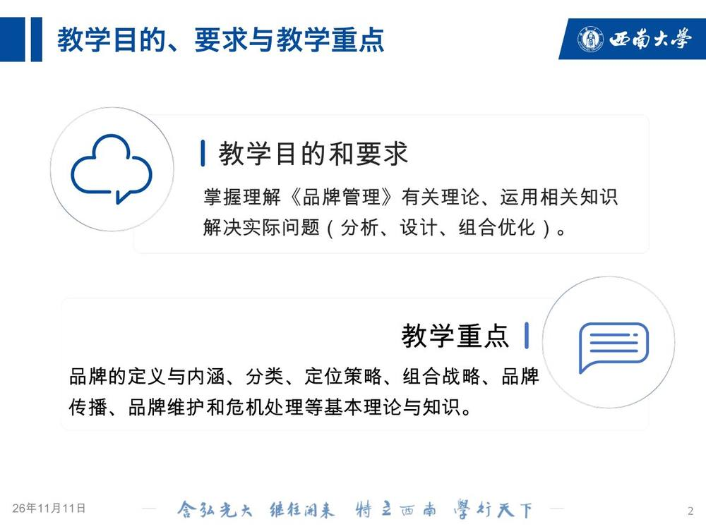
教学目的、要求与教学重点
教学目的和要求
掌握理解《品牌管理》有关理论、运用相关知识解决实际问题（分析、设计、组合优化）。
教学重点
品牌的定义与内涵、分类、定位策略、组合战略、品牌传播、品牌维护和危机处理等基本理论与知识。
图片文字识别（辅助检索，以原图为准）
教学目的、要求与教学重点
0 亚南大學
| 教学目的和要求
掌握理解《品牌管理》有关理论、运用相关知识
解决实际问题（分析、设计、组合优化）。
教学重点|
品牌的定义与内涵、分类、定位策略、组合战略、品牌
传播、品牌维护和危机处理等基本理论与知识。
26年11月11日
含弘光六 维往闲来 特三西南 學行天下
2
P003 · 目录
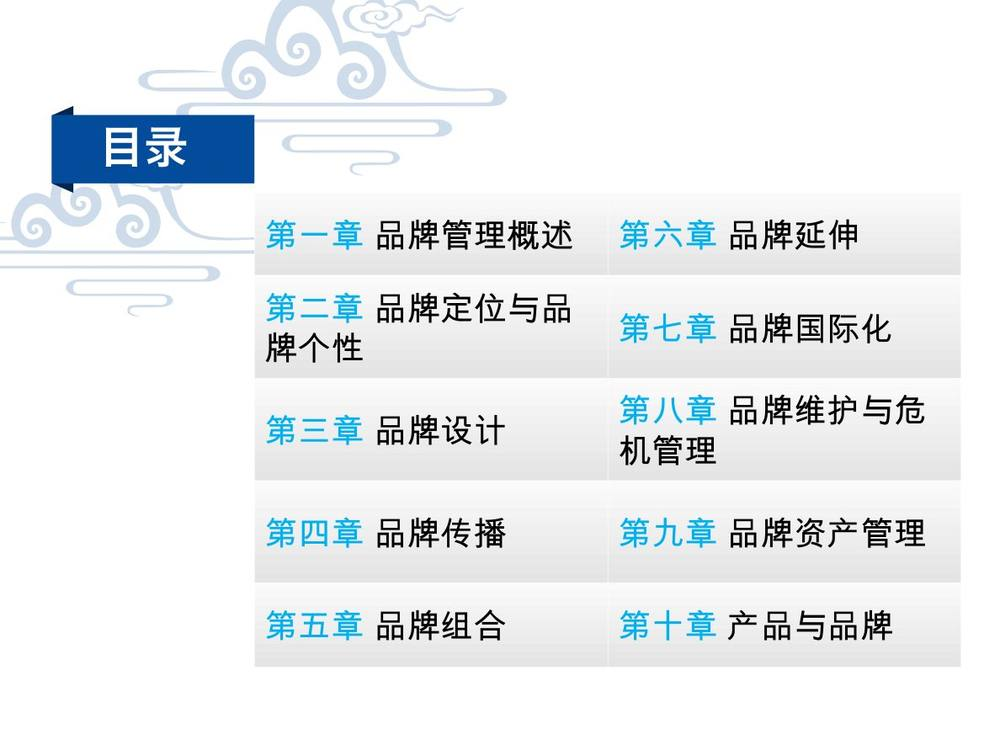
目录
第一章 品牌管理概述
第六章 品牌延伸
第二章 品牌定位与品牌个性
第七章 品牌国际化
第三章 品牌设计
第八章 品牌维护与危机管理
第四章 品牌传播
第九章 品牌资产管理
第五章 品牌组合
第十章 产品与品牌
图片文字识别（辅助检索，以原图为准）
目录
第一章 品牌管理概述
第二章 品牌定位与品
牌个性
第三章 品牌设计
第四章 品牌传播
第五章 品牌组合
第六章 品牌延伸
第七章 品牌国际化
第八章 品牌维护与危
机管理
第九章 品牌资产管理
第十章 产品与品牌
P004 · 课程信息
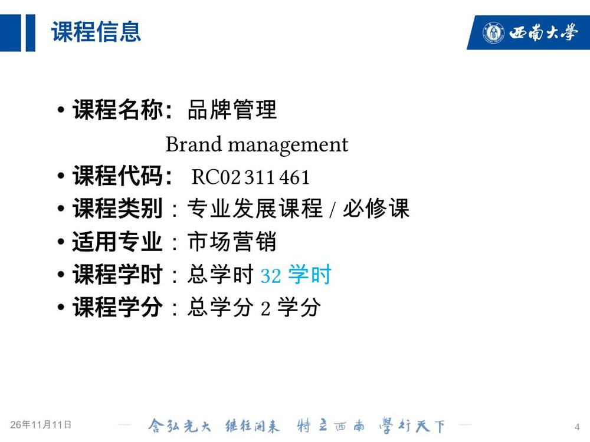
课程信息
课程名称：品牌管理
Brand management
课程代码：RC02311461
课程类别：专业发展课程/必修课
适用专业：市场营销
课程学时：总学时32学时
课程学分：总学分2学分
图片文字识别（辅助检索，以原图为准）
课程信息
1 西南大學
• 课程名称：品牌管理
Brand management
• 课程代码：RC02311461
•课程类别：专业发展课程/必修课
• 适用专业：市场营销
•课程学时：总学时32学时
• 课程学分：总学分2学分
26年11月11日
含弘光大维往闲来特三西南學行天下一
4
P005 · 成绩评定
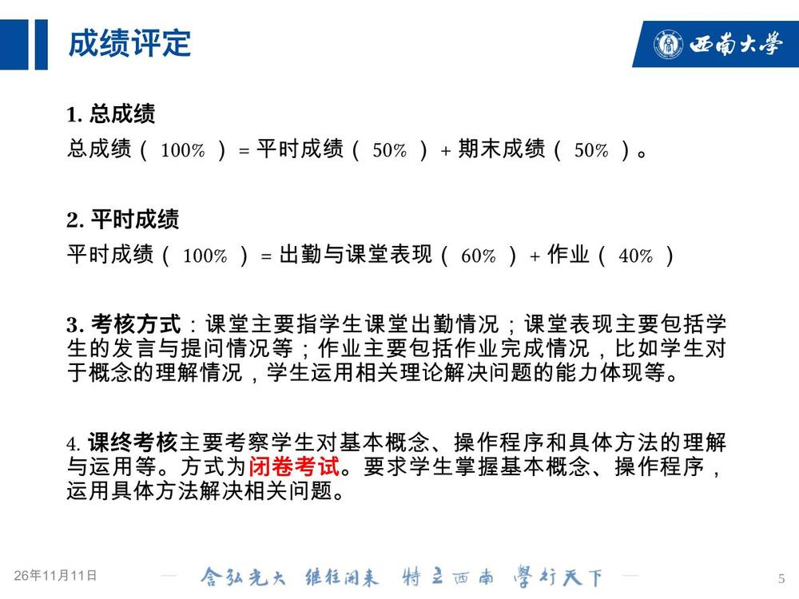
成绩评定
1.总成绩
总成绩（100%）=平时成绩（50%）+期末成绩（50%）。
2.平时成绩
平时成绩（100%）=出勤与课堂表现（60%）+作业（40%）
3.考核方式：课堂主要指学生课堂出勤情况；课堂表现主要包括学生的发言与提问情况等；作业主要包括作业完成情况，比如学生对于概念的理解情况，学生运用相关理论解决问题的能力体现等。
4.课终考核主要考察学生对基本概念、操作程序和具体方法的理解与运用等。方式为闭卷考试。要求学生掌握基本概念、操作程序，运用具体方法解决相关问题。
图片文字识别（辅助检索，以原图为准）
园」成绩评定
⑥ 西南大学
1. 总成绩
总成绩（100%）=平时成绩（50%）+期末成绩（50%）。
2.平时成绩
平时成绩（100%）=出勤与课堂表现（60%）+作业（40%）
3. 考核方式：课堂主要指学生课堂出勤情况；课堂表现主要包括学
生的发言与提问情况等；作业主要包括作业完成情况，比如学生对
于概念的理解情况，学生运用相关理论解决问题的能力体现等。
4.课终考核主要考察学生对基本概念、
操作程序和具体方法的理解
与运用等。方式为闭卷考试。要求学生掌握基本概念、操作程序，
运用具体方法解决相关问题。
26年11月11日
含弘光六 维往闲来 特三西南 學行天下
5
P006 · 参考资料
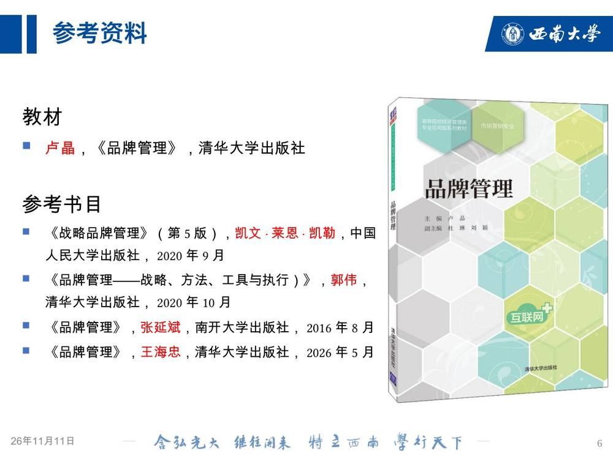
参考资料
教材
卢晶，《品牌管理》，清华大学出版社
参考书目
《战略品牌管理》（第5版），凯文·莱恩·凯勒，中国人民大学出版社，2020年9月
《品牌管理——战略、方法、工具与执行）》，郭伟，清华大学出版社，2020年10月
《品牌管理》，张延斌，南开大学出版社，2016年8月
《品牌管理》，王海忠，清华大学出版社，2026年5月
图片文字识别（辅助检索，以原图为准）
|参考资料
亚南大学
教材
•卢晶，《品牌管理》，清华大学出版社
参考书目
• 《战略品牌管理》（第5版），凯文•莱恩•凯勒，中国
人民大学出版社，2020年9月
•《品牌管理—战略、方法、工具与执行）》，郭伟，
清华大学出版社，2020年10月
•《品牌管理》，张延斌，南开大学出版社，2016年8月
•《品牌管理》，王海忠，清华大学出版社，2026年5月
高箩羦校烃济管理类
业应用聚系列教材
市场菖销专业
品牌管理
主输产品
副主编社琳刘顆
互联网
清华大学出版社
26年11月11日
含弘光大 维往闲来 特三西南 學行天下
⑤
P007 · 学习资源
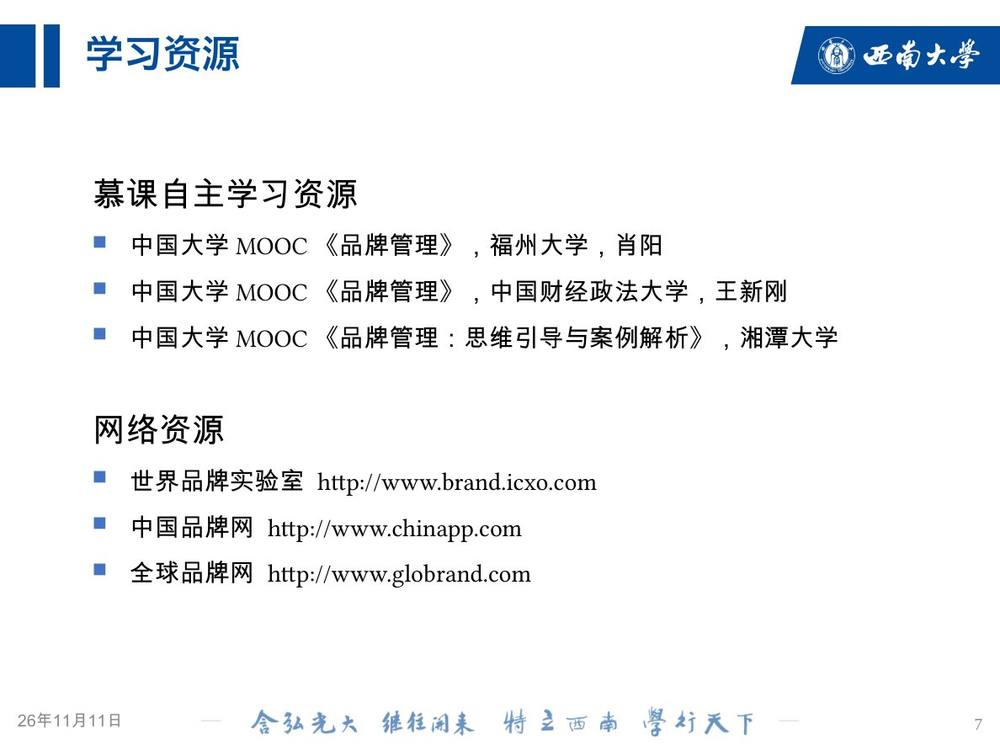
学习资源
慕课自主学习资源
中国大学MOOC《品牌管理》，福州大学，肖阳
中国大学MOOC《品牌管理》，中国财经政法大学，王新刚
中国大学MOOC《品牌管理：思维引导与案例解析》，湘潭大学
网络资源
世界品牌实验室 http://www.brand.icxo.com
中国品牌网 http://www.chinapp.com
全球品牌网 http://www.globrand.com
图片文字识别（辅助检索，以原图为准）
」学习资源
0 亚南大學
慕课自主学习资源
• 中国大学 MOOC《品牌管理》，福州大学，肖阳
• 中国大学 MOOC《品牌管理》，中国财经政法大学，王新刚
• 中国大学 MOOC《品牌管理：思维引导与案例解析》，湘潭大学
网络资源
• 世界品牌实验室 http://www.brand.icxo.com
• 中国品牌网 http://www.chinapp.com
• 全球品牌网 http://www.globrand.com
26年11月11日
— 含弘光六 维往闲来 特三西南學行天下
7
P008 · 最具价值全球品牌排行榜
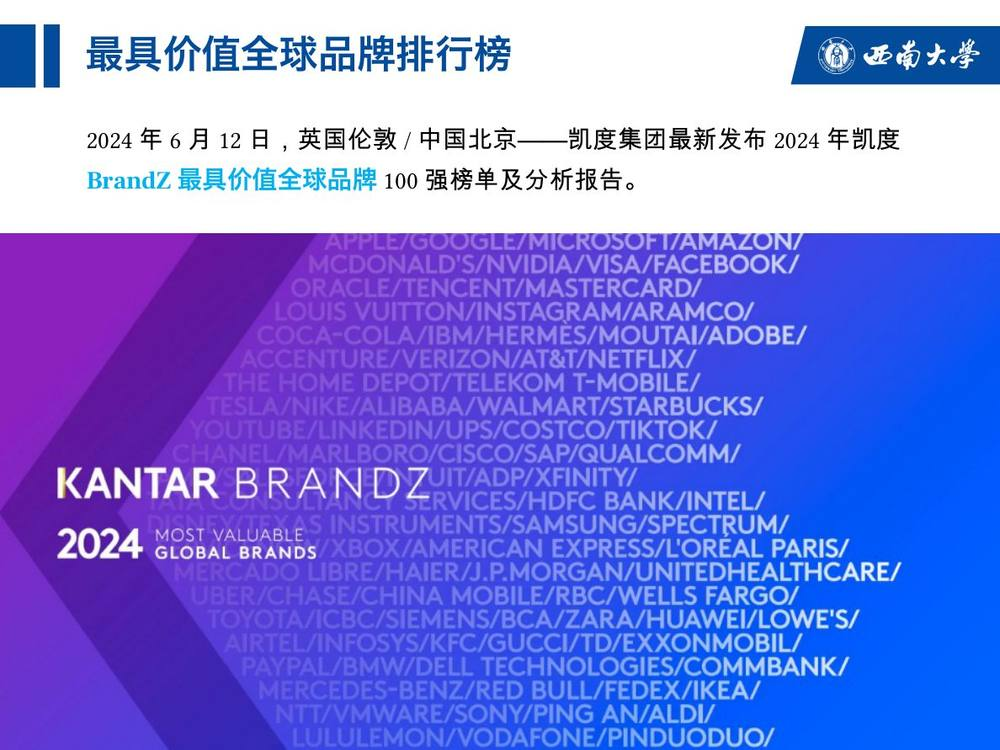
最具价值全球品牌排行榜
2024年6月12日，英国伦敦/中国北京——凯度集团最新发布2024年凯度BrandZ最具价值全球品牌100强榜单及分析报告。
图片文字识别（辅助检索，以原图为准）
最具价值全球品牌排行榜
2024年6月12日，英国伦敦/中国北京—凯度集团最新发布2024年凯度
BrandZ 最具价值全球品牌 100强榜单及分析报告。
LEGOOIGLE/MIICROSOF IAAMAZON/
ONALD'S/NVIDIA/VISA/FACEBOOK/
E/TENCENT/MASTERCARD/
UITTON/INSTAGRAM/ARAMCO/
>LA/IBM/HERMES/MOUTAI/ADOBE/
ACCENTURE/VERIZON/AT&T/NETFLIX/
THE HOME DEPOT/TELEKOM T-MOBILE/
TESLA/NIKE/ALIBABA/WALMART/STARBUCKS/
YOUTUBE/LINKEDIN/UPS/COSTCO/TIKTOK/
/MARLBORO/CISCO/SAP/QUALCOMM/
KANTAR BRANDZWAPPANTY
TRVICES/HDFC BANK/INTEL/
2024
MOST VALUABLE S INSTRUMENTS/SAMSUNG/SPECTBUM/
GLOBAL BRANDS/XBOX/AMERICAN EXPRESS/LOREAL PARIS/
ADO LIBRE/HAIER/J.P.MORGAN/UNITEDHEALTHCARE/
UBER/CHASE/CHINA MOBILE/RBC/WELLS FARGO/
TOYOTA/ICBC/SIEMENS/BCA/ZARA/HUAWEI/LOWE'S/
AIRTEL/INFOSYS/KFC/GUCCI/TD/EXXONMOBIL/
PAYPAL/BMW/DELL TECHNOLOGIES/COMMBANK/
MERCEDES-BENZ/RED BULL/FEDEX/IKEA/
NTT/VMWARE/SONY/PING AN/ALDI/
EMON/VODAFONE/PINDUODUO/
亚南大学
P009 · 最具价值全球品牌排行榜
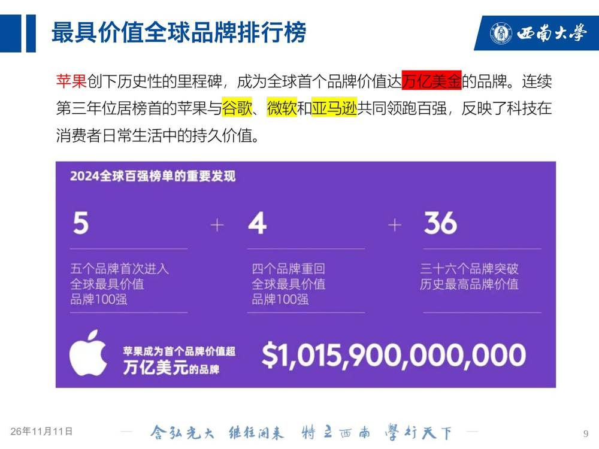
最具价值全球品牌排行榜
图片文字识别（辅助检索，以原图为准）
最具价值全球品牌排行榜
正南大學
苹果创下历史性的里程碑，成为全球首个品牌价值达万亿美金的品牌。连续
第三年位居榜首的苹果与谷歌、微软和亚马逊共同领跑百强，反映了科技在
消费者日常生活中的持久价值。
2024全球百强榜单的重要发现
5
4
+
36
五个品牌首次进入
全球最具价值
品牌100强
四个品牌重回
全球最具价值
品牌100强
三十六个品牌突破
历史最高品牌价值
苹果成为首个品牌价值超
万亿美元的品牌
$1,015,900,000,000
26年11月11日
— 含弘光大 维往闲来 特三西南學行天下—
9
P010 · 最具价值全球品牌排行榜-2024
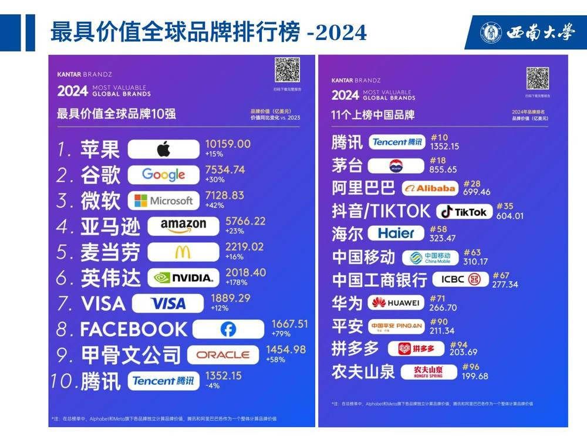
最具价值全球品牌排行榜-2024
图片文字识别（辅助检索，以原图为准）
最具价值全球品牌排行榜-2024
正南大学
KANTAR BRANDZ
MOST VALUABLE
2024 LOBAL BRANDS
扫码下彀完整报告
最具价值全球品牌10强
品牌价值（亿美元）
价值同比变化 vs.2023
1. 苹果
2. 谷歌
Google
3. 微软
Microsoft
4.亚马逊
amazon
5. 麦当劳
6. 英伟达
nVIDIA.
7.VISA
VISA
8. FACEBOOK
9. 甲骨文公司
10.腾讯
Tencent 腾讯
10159.00
+15%
7534.74
+30%
7128.83
+42%
5766.22
+23%
2219.02
+16%
2018.40
+178%
1889.29
+12%
f
ORACLG
1667.51
+79%
1454.98
+58%
1352.15
-4%
*注：在总榜单中，Alphabet和Meta旗下各品牌独立计算品牌价值，腾讯和阿里巴巴各作为一个整体计算品牌价值
KANTAR BRANDZ
MOST VALUABLE
2024 220BAC BRANDS
11个上榜中国品牌
扫具下戴完整报告
2024年品牌排名
品陳价值（亿美元）
腾讯
Tencent 腾讯
茅台
#10
1352.15
#18
855.65
阿里巴巴
C2Alibaba
#28
699.46
抖音/TIKTOK
d TikTok
海尔
Haier
#58
323.47
中国移动
中国移动
China Moble
#63
310.17
中国工商银行
ICBC
华为
心 HUAWEI
平安
中国平安 PINGAN
拼多多
拼多多
农夫山泉
农夫山泉
NONGFU SPRING
#71
266.70
#90
211.34
#94
203.69
#96
199.68
#35
604.01
#67
277.34
*注：在总榜单中，Aiphabet和Meta線下各品肆独立计算品牌价值，熟讯和阿里巴巴各作为一个整体计算品牌价值
P011 · 最具价值全球品牌排行榜-2025
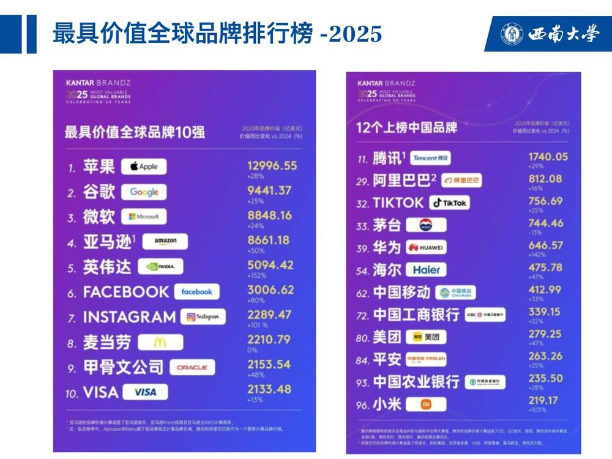
最具价值全球品牌排行榜-2025
图片文字识别（辅助检索，以原图为准）
最具价值全球品牌排行榜-2025
正南大学
KANTAR BRANDZ
4025 GLOBAL BRANDS
CELEERATINO 2O YEARS
最具价值全球品牌10强
1. 苹果
2. 谷歌
• Apple
Google
3.微软
U Microsoft
4.亚马逊1
amazon
5.英伟达
nVIDIA
6. FACEBOOK
facebook
7. INSTAGRAM
8.麦当劳
9. 甲骨文公司
10.VISA
VISA
Sastogam
ORACLE
2025年品牌价值（公美元）
价真同比宣化 2024（%）
12996.55
+28%
9441.37
+25%
8848.16
+24%
8661.18
+50%
5094.42
+152%
3006.62
+80%
2289.47
+101 %6
2210.79
0%
2153.54
448%
2133.48
+13%
1選马通於品棉价清计算請差7還马送痛床，翌马連のbe 類受葉马遵示AWS汁 服务。
注：在总情单中，Ainabet和INata题下各品将拉立计算品牌恰值，護最松国第巴巴各作为一个整体计期室脾价组。
KANTAR BRANDZ
IOST VAIUABL
SZ5 GLOMAL DRAND：
CELEEEATINO DDZLARE
12个上榜中国品牌
11. 腾讯1
Tencent 感讯
29. 阿里巴巴？
2间里巴巴
32. TIKTOK
小 TIkTok
33. 茅台
39. 华为
N HUAWEI
54. 海尔
Haier
62.
中国移动
中国捲期
CheM
22.中国工商银行
80. 美团
美团
84.平安
果9 PIND AN|
93. 中国农业银行
96. 小米
ml
2025年品建价信（ 美元）
价值网比变化 V5 2024（M1
1740.05
+29%
812.08
+10%.
756.69
+25%.
744.46
-13%
646.57
+142%
475.78
+A7%
412.99
+33%
339.15
122%.
279.25
+47%.
263.26
+25%
235.50
+28%
219.17
•105%
湖本膜芳醫線和核乐获森宴和橫每要縣平者本大費近、轉包於學峰非像计期研著702：00首米、草信、轉科期乐業乐票。
全的事前悠支付。康众顺行，解访悦類及鲜示，
量巴巴的是詳价通计舞道盖字期望远，期数票进，全該道出着。162及，财业健康，意马解生，美生及火！
P012 · 最具价值全球品牌排行榜-2026
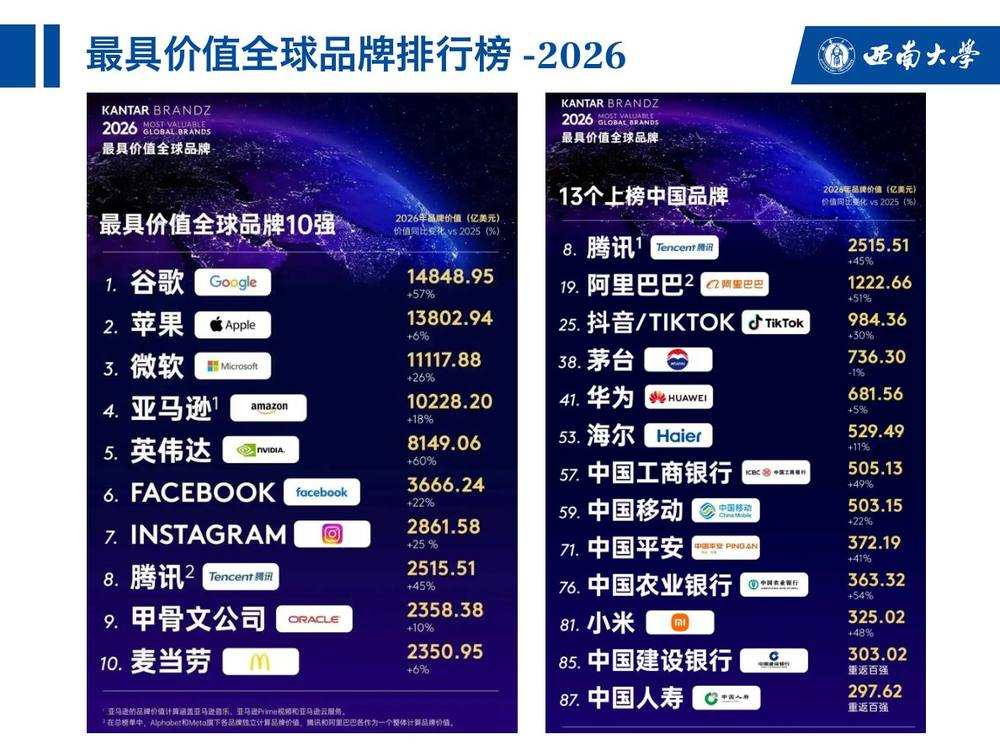
最具价值全球品牌排行榜-2026
图片文字识别（辅助检索，以原图为准）
最具价值全球品牌排行榜-2026
KANTAR BRANDZ
MOST VALUABLE
2026 HTOAL BRANES
最具价值全球品牌
KANTAR BRANDZ
2026 GLOBAL ERANDS
最具价值全球品牌
最具价值全球品牌10强
2026年品牌价恤（亿美元）」
价個同比空化 vs 2025 （%6）
1. 谷歌
Google
2. 苹果
葛 Apple
3.微软
𣊭 Microsoft
4.亚马逊1
amazon
5. 英伟达
nVIDIA.
6. FACEBOOK
7.INSTAGRAM
8. 腾讯2
Tencent腾讯
9.甲骨文公司
10.麦当劳
facebook
ORACLEI
14848.95
+57%
13802.94
+6%
11117.88
+26%
10228.20
+18%
8149.06
+60%
3666.24
+22%
2861.58
+25 %
2515.51
+45%
2358.38
+10%
2350.95
+6%
'亚马逊的品牌价值计算涵盖亚马选音乐，亚马选Prine视须和亚马选云服务。
2在总榜单中，Alphabet和Meta放下各品牌独立计算品練价值，躺讯和问里巴巴各作为一个整体计算品康价值，
13个上榜中国品牌
8. 腾讯1
Tencent 腾讯
19. 阿里巴巴2
C2阿里巴巴
25. 抖音/TIKTOK C TIKTOK
38. 茅台
41.-
华为
心 HUAWEI
53.7
海尔
Haier
57. 中国工商银行
IceC ⑧ 中国工有盟行
59. 中国移动
中国移动
ChinaMobi
71. 中国平安
中国平交 PING AN
76.中国农业银行
81. 小米
85.中国建设银行
G
中国建设鲜行
87. 中国人寿
，中国人和
正南大学
2026年品牌价值（亿美元）
价值同比变化 vS 2025（%）.
2515.51
+45%
1222.66
+51%
984.36
+30%
736.30
-1%
681.56
+5%
529.49
+11%
505.13
+49%
503.15
+22%
372.19
+41%
363.32
+54%
325.02
+48%
303.02
重返百强
297.62
重返百强
P013 · 最具价值全球品牌排行榜
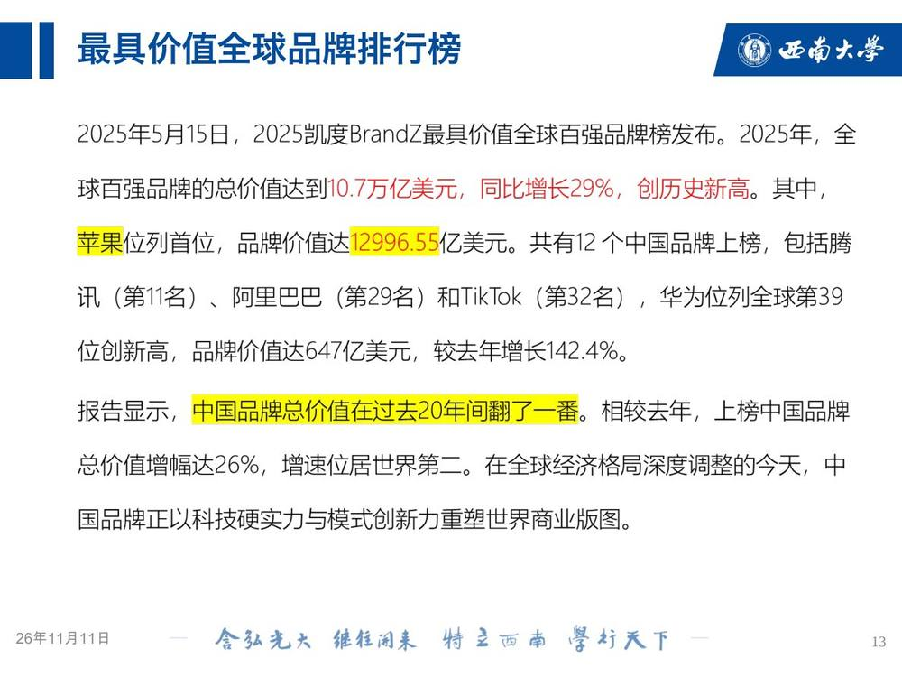
最具价值全球品牌排行榜
图片文字识别（辅助检索，以原图为准）
最具价值全球品牌排行榜
⑥） 正亚南大学
2025年5月15日，2025凯度BrandZ最具价值全球百强品牌榜发布。2025年，全
球百强品牌的总价值达到10.7万亿美元，同比增长29%，创历史新高。其中，
苹果位列首位，品牌价值达12996.55亿美元。共有12个中国品牌上榜，包括腾
讯（第11名）、阿里巴巴（第29名）和TikTok（第32名），华为位列全球第39
位创新高，品牌价值达647亿美元，较去年增长142.4%。
报告显示，中国品牌总价值在过去20年间翻了一番。相较去年，上榜中国品牌
总价值增幅达26%，增速位居世界第二。在全球经济格局深度调整的今天，中
国品牌正以科技硬实力与模式创新力重塑世界商业版图。
26年11月11日
含弘光六 维往闲来 特兰西南 學行天下
13
P014 · 最具价值全球品牌排行榜
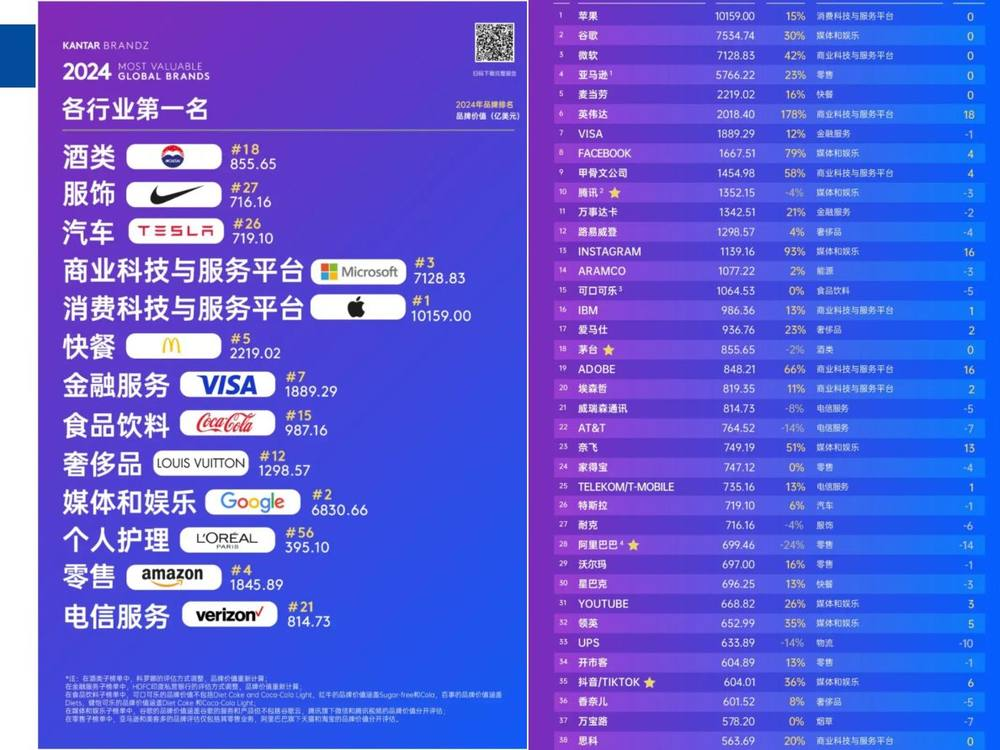
最具价值全球品牌排行榜
图片文字识别（辅助检索，以原图为准）
KANTAR BRANDZ
2024
MOST VALUABLE
GLOBAL BRANDS
各行业第一名
2024年品牌排名
品牌价值（亿美元）
酒类
#18
855.65
服饰
#27
716.16
汽车
T三SL
#26
719.10
商业科技与服务平台
消费科技与服务平台
快餐
#5
2219.02
金融服务
VISA
食品饮料
#7
1889.29
#15
987.16
奢侈品
LOUIS VUITTON
媒体和娱乐
#12
1298.57
Goog
个人护理
LOREAL
PARIS
#56
395.10
零售
amazon
电信服务
#4
1845.89
verizon
#21
814.73
Microsoft
#3
7128.83
#1
10159.00
#2
6830.66
*注：在看炎手榜单中，科罗娜的译估方式谭整
在金融嚴务子榜单中，HDFC印度私曾银行的评估方式调整，品牌价懂重新计算，
可口可乐的品牌价值不包括Diet Coke ond Coca-Cola Light，紅牛的品牌价值薄蓋Sugar-freefCola，百事的品3牌价值涵蓋
健怡可乐的品陳价值滿着Diet Coke 和Coco-Cola Light；
在攀售子榜单中，亚马进和美客多的品精评估仅包搞其景售业务，刘里巴巴旗下关嬉和淘宝的品煤价值分开评估。
苹果
谷歌
微软
亚马逊！
麦当劳
英伟达
VISA.
FACEBOOK
甲骨文公司
腾讯？食
万事达卡
路易威登
INSTAGRAM
ARAMCO
可口可乐了
IBM
爱马仕
18
茅台 食
19
ADOBE
20 埃森哲
21 威瑞森通讯
22
AT&T.
23
奈飞
24 家得宝
25 TELEKOM/T-MOBILE
26 特斯拉
27 耐克
28 阿里巴巴^
29 沃尔玛
30 星巴克
YOUTUBE
32 领英
33 UPS
34 开市客
35 抖音/TIKTOK食
36 香奈儿
37 万宝路
58
思科
10159.00
7534.74
7128.83
5766.22
2219.02
2018.40
1889.29
1667.51
1454.98
1352.15
1342.51
1298.57
1139.16
1077.22
1064.53
986.36
936.76
855.65
848.21
819.35.
814.73
764.52
749.19
747.12
735.16
719.10
716.16
699.46
697.00
696.25
668.82
652.99
633.89
604.89
604.01
601.52
578.20
563.69
15%
30%
42%
23%
16%
178%
12%
79%
58%
-4%
21%
4%
93%
2%
0%
13%
23%
-2%
66%
11%
-8%
-14%
51%
0%
13%
6%
-4%
-24%
16%
13%
26%
35%
-14%
13%
36%
8%
0%
20%
消费科技与服务平台
媒体和娱乐
商业科技与服务平台
零售
快餐
商业科技与服务平台
金融殷务
媒体和娱乐
商业科技与服务平台
媒俸和娱乐
金融服务
奢侈品.
媒俸和娱乐
能源
食品饮料
商业科技与服务平台
奢侈品.
酒类
商业科技与服务平台
商业科技与服务平台
电信服务
电信觳务
媒体和娱乐
零售
电信毃务
汽车
服饰
零售
零售
铗餐
媒体和娱乐
媒体和娱乐
物流
零售
媒体和娱乐
奢侈品
烟草
商业科技与服务平台
0
0
0
0
18
-1
4
4
-3
-2
-4
16
-3
-5
2
0
16
2
-5
7
13
-4
-1
-6
-14
-1
33
3
-10
-1
6
-5
-7
0
P015 · 最具价值全球品牌排行榜
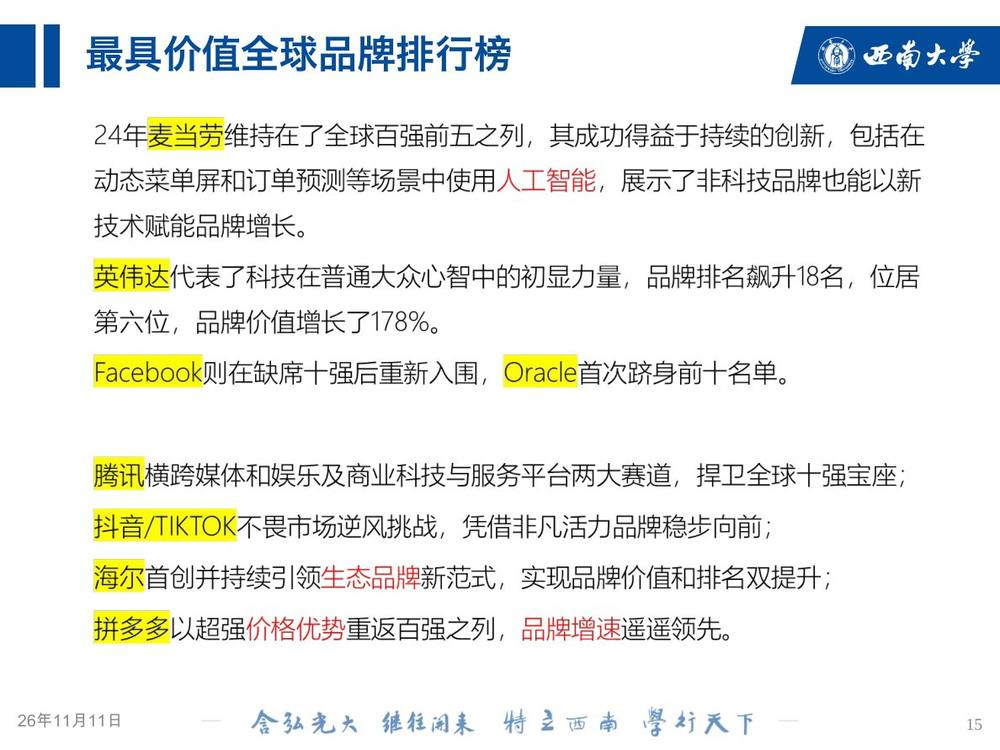
最具价值全球品牌排行榜
图片文字识别（辅助检索，以原图为准）
最具价值全球品牌排行榜
1） 正南大學
24年麦当劳维持在了全球百强前五之列，其成功得益于持续的创新，包括在
动态菜单屏和订单预测等场景中使用人工智能，展示了非科技品牌也能以新
技术赋能品牌增长。
英伟达代表了科技在普通大众心智中的初显力量，品牌排名飙升18名，位居
第六位，品牌价值增长了178%。
Facebook则在缺席十强后重新入围，
Oracle首次跻身前十名单。
腾讯横跨媒体和娱乐及商业科技与服务平台两大赛道，捍卫全球十强宝座；
抖音/TIKTOK不畏市场逆风挑战，凭借非凡活力品牌稳步向前；
海尔首创并持续引领生态品牌新范式，实现品牌价值和排名双提升；
拼多多以超强价格优势重返百强之列，品牌增速遥遥领先。
26年11月11日
- 含弘光大 维往闲来 特三西南 學行天下
15
P016 · 图片页
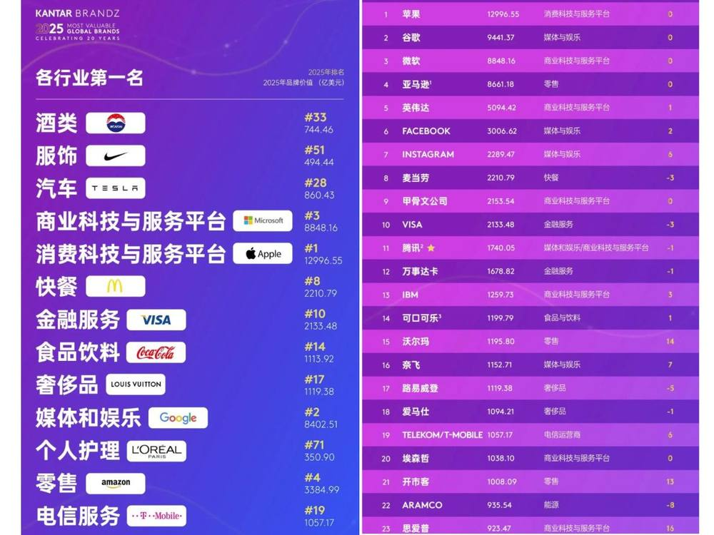
图片文字识别（辅助检索，以原图为准）
KANTAR BRANDZ
MOST VALUABLE
2025 GLOBAL BRANDS
CELEBRATING
20
YEARS
各行业第一名
酒类
服饰
汽车
T=5L
商业科技与服务平台
消费科技与服务平台
快餐
金融服务
VISA
食品饮料
Ccg 6la
奢侈品
LOUIS YUITTON
媒体和娱乐
Google
个人护理
LOREAL
零售
amazon
电信服务
•小•Mobile•
2025年排名
2025年品牌价值（亿美元）
品 Microsoft
區Apple
#33
744.46
#51
494.44
#28
860.43
#3
8848.16
#1
12996.55
#8
2210.79
#10
2133.48
#14
1113.92
#17
1119.38
#2
8402.51
#71
350.90
#4
3384.99
#19
1057.17
2
4
5
6
7
8
9
10
11
12
13
14
15
16
17
18
19
20
21
22
23
苹果
谷歌
微软
亚马逊
英伟达
FACEBOOK
INSTAGRAM
麦当劳
甲骨文公司
VISA
腾讯’女
万事达卡
IBM
可口可乐“
沃尔玛
路易威登
爱马仕
12996.55
9441.37
8848.16
8661.18
5094.42
3006.62
2289.47
2210.79
2153.54
2133.48
1740.05
1678.82
1259.73
1199.79
1195.80
1152.71
1119.38
1094.21
TELEKOM/T-MOBILE 1057.17
埃森哲
1038.10
开市客
1008.09
ARAMCO
935.54
思爱普
923.47
消费科技与服务平台
媒体与娭乐
商业科技与服务平台
麥售
商业科技与服务平台
媒体与娱乐
媒体与娱乐
快餮
商业科技与服务平台
金融服务
媒体和娱乐/商业科技与服务平台
金粒殷务
商业科技与服务平台
食品与饮料
零售
媒体与娱乐
奢侈品
奢侈品
电信运营商
商业科技与服务平台
婴售
能源
商业科技与服务平台
2
6
-3
◎
-3
-1
-1
3
14
7
-5
-1
13
-8
16
P017 · 最具价值全球品牌排行榜
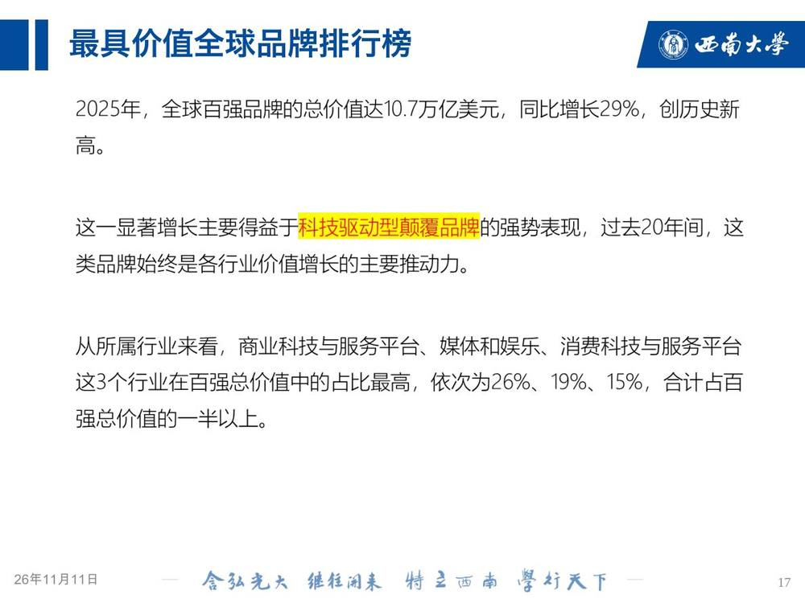
最具价值全球品牌排行榜
图片文字识别（辅助检索，以原图为准）
】最具价值全球品牌排行榜
⑥ 西南大學
2025年，全球百强品牌的总价值达10.7万亿美元，同比增长29%，创历史新
高
这一显著增长主要得益于科技驱动型颠覆品牌的强势表现，过去20年间，这
类品牌始终是各行业价值增长的主要推动力。
从所属行业来看，商业科技与服务平台、媒体和娱乐、消费科技与服务平台
这3个行业在百强总价值中的占比最高，依次为26%、19%、15%，合计占百
强总价值的一半以上。
26年11月11日
含弘光六 维往闲来 特三西南 學行天下一
17
P018 · 图片页
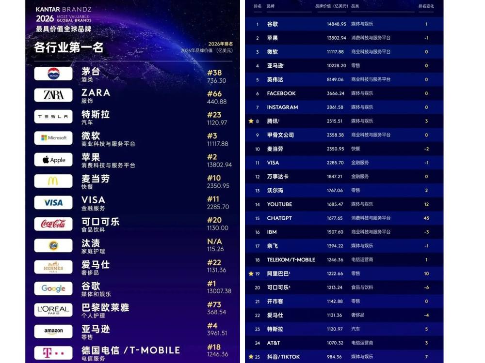
图片文字识别（辅助检索，以原图为准）
KANTAR BRANDZ
MOST VALUABLE
ZOZO GLOBAL BRANDS
最具价值全球品牌
各行业第一名
ZARA
ESL
Microsoft
都 Apple
VISA
HERMES
Google
LOREAL
PARIS
amazon
茅台
酒类
ZARA
服饰
特斯拉
汽车
微软
商业科技与服务平台
苹果
消费科技与服务平台
麦当劳
快餐
VISA
金融服务
可口可乐
食品饮料
汰渍
家庭护理
爱马仕
奢侈品
谷歌
媒体和娱乐
巴黎欧莱雅
个人护理
亚马逊
麥售
德国电信 /T-MOBILE
电信服务
•2026年排名
2026年品牌价值（亿美元）
#38
736.30
#66
440.88
#23
1120.97
#3
11117.88
#2
13802.94
#10
2350.95
#11
2285.70
#20
1130.00
N/A
115.26
#22
1131.36
#1
13007.38
#73
368.54
#4
3961.51
#18
1246.36
排名
品牌
1
谷歌
2
苹果
微软
4 亚马逊
5
英伟达
FACEBOOK
INSTAGRAM
腾讯？
9
甲骨文公司
10
麦当劳
11
VISA
12
万事达卡
13
沃尔玛
14
YOUTUBE
15
CHATGPT
16
IBM
17奈飞
18
TELEKOM/T-MOBILE
19
阿里巴巴’
20
可口可乐*
21
开市客
22
爱马仕
23 特斯拉
24
AT&T
25
抖音/TIKTOK
品牌价值（忆美元）品类
14848.95
13802.94
11117.88
10228.20
8149.06
3666.24
2861.58
2515.51
2358.38
2350.95
2285.70
1847.21
1767.06
1685.47
1677.65
1507.60
1394.22
1246.36
1222.66
1213.24
1142.88
1131.36
1120.97
1070.32
984.36
媒体与娱乐
消费科技与服务平台
商业科技与服务平台
容售
商业科技与服务平台
媒体与娱乐
媒体与娱乐
媒体与娱乐
商业科技与服务平台
快餐
金融服务
金融服务
零售
媒体与娱乐
消费科技与服务平台
商业科技与服务平台
媒体与娱乐
电信运营商
零售
食品与饮料
零售
奢侈品
汽车
电信运营商
媒体与娱乐
排名变化
-1
-2
-1
12
45
-3
-1
10
-6
-4
P019 · 最具价值全球品牌排行榜
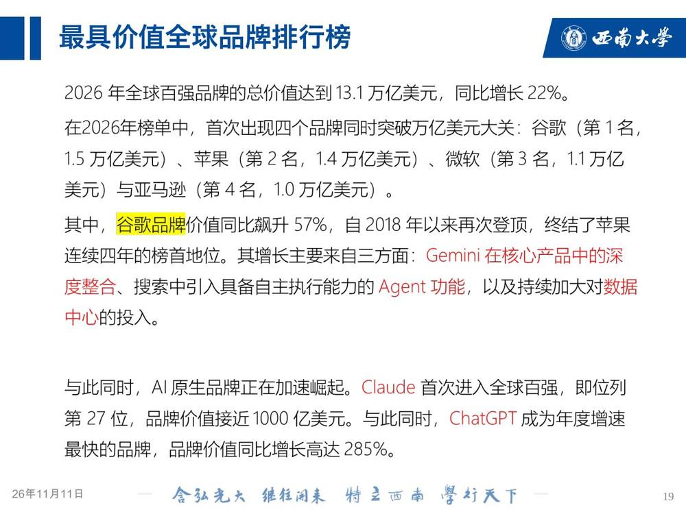
最具价值全球品牌排行榜
图片文字识别（辅助检索，以原图为准）
最具价值全球品牌排行榜
⑥ 亚南大學
2026年全球百强品牌的总价值达到13.1万亿美元，同比增长22%。
在2026年榜单中，首次出现四个品牌同时突破万亿美元大关：谷歌（第1名，
1.5万亿美元）、苹果（第2名，1.4万亿美元）、微软（第3名，1.1万亿
美元）与亚马逊（第4名，1.0万亿美元）。
其中，谷歌品牌价值同比飙升 57%，自2018年以来再次登顶，终结了苹果
连续四年的榜首地位。其增长主要来自三方面：Gemini 在核心产品中的深
度整合、搜索中引入具备自主执行能力的Agent 功能，以及持续加大对数据
中心的投入。
与此同时，Al 原生品牌正在加速崛起。Claude 首次进入全球百强，即位列
第27位，品牌价值接近1000亿美元。与此同时，ChatGPT 成为年度增速
最快的品牌，品牌价值同比增长高达 285%。
26年11月11日
— 含弘光六 维往闲来 特三西南學行天下
19
P020 · 最具价值全球品牌排行榜
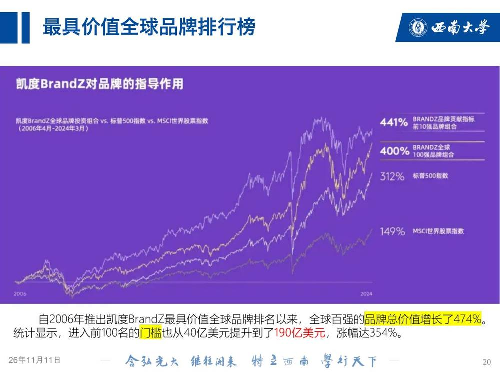
最具价值全球品牌排行榜
图片文字识别（辅助检索，以原图为准）
最具价值全球品牌排行榜
正南大学
凯度BrandZ对品牌的指导作用
凯度BrandZ全球品牌投资组合 VS.标警500指数 VS.MSCI世界股票指数
（2006年4月-2024年3月）
441%
BRANDZ品牌贡献指标
前10强品牌组合
BRANDZ全球
400% 100效品辣 合
312%
标普500指数
149%
MSCI世界股票指数
2006
2024.
自2006年推出凯度BrandZ最具价值全球品牌排名以来，全球百强的品牌总价值增长了474%。
统计显示，进入前100名的门槛也从40亿美元提升到了190亿美元，涨幅达354%。
26年11月11日
含弘光大 继往闲来 特三西南學行天下一
20
P021 · 图片页
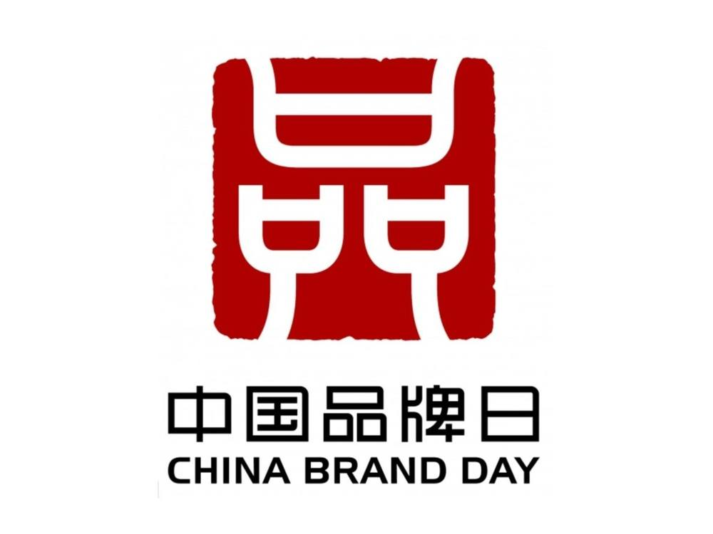
图片文字识别（辅助检索，以原图为准）
中国品牌日
CHINA BRAND DAY
P022 · 中国品牌日
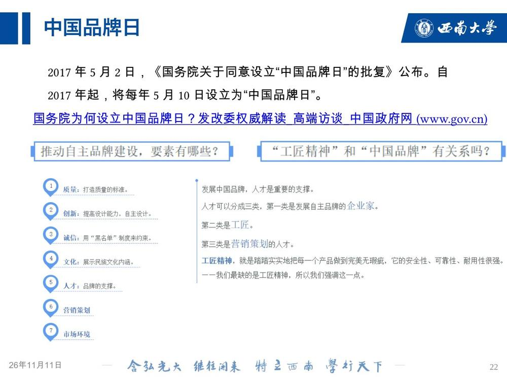
中国品牌日
2017年5月2日，《国务院关于同意设立“中国品牌日”的批复》公布。自2017年起，将每年5月10日设立为“中国品牌日”。
国务院为何设立中国品牌日？发改委权威解读_高端访谈_中国政府网 (www.gov.cn)
图片文字识别（辅助检索，以原图为准）
中国品牌日
1 正南大學
2017年5月2日，《国务院关于同意设立“中国品牌日”的批复》公布。自
2017年起，将每年5月10日设立为“中国品牌日”。
国务院为何设立中国品牌日？发改委权威解读 高端访谈 中国政府网（www.gov.cn）
【推动自主品牌建设，要素有哪些？ ［“工匠精神”和“中国品牌”有关系吗？
©吸城、打通酸量的标造。
◎创新 報落设＋能力。自生来坡汁。
◎诚位：用“黒名 ”制慶米約束。
©x化：照不限 文化内通。
©人*、品換的支控。
1发展中国品牌，人才是重要的支撑。
人才可以分成三类，第一类是发展自主品牌的企业家。
第二类是工匠。
第三类是营销策划的人才。
工匠精神，就是踏踏实实地把每一个产品做到完美无瑕疵，它的安全性、可靠性、耐用性很强。
一一我们最缺的是工匠精神，所以我们强调这一点。
© 小场环竣
26年11月11日— 含弘光大 维往闲来 特三西南 學行天下
22
P023 · 中国品牌日
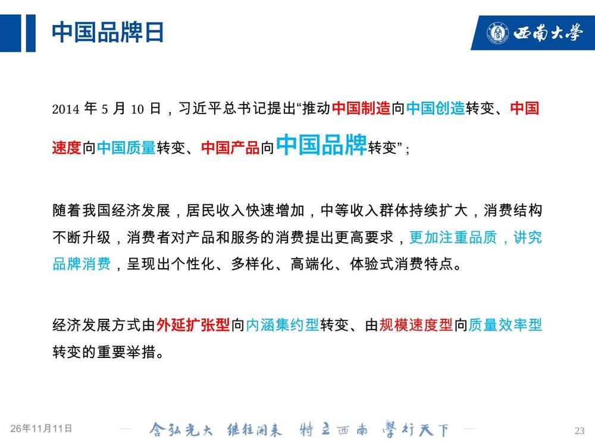
中国品牌日
2014年5月10日，习近平总书记提出“推动中国制造向中国创造转变、中国速度向中国质量转变、中国产品向中国品牌转变”;
随着我国经济发展，居民收入快速增加，中等收入群体持续扩大，消费结构不断升级，消费者对产品和服务的消费提出更高要求，更加注重品质，讲究品牌消费，呈现出个性化、多样化、高端化、体验式消费特点。
经济发展方式由外延扩张型向内涵集约型转变、由规模速度型向质量效率型转变的重要举措。
图片文字识别（辅助检索，以原图为准）
中国品牌日
1 正南大學
2014年5月10日，习近平总书记提出“推动中国制造向中国创造转变、中国
速度向中国质量转变、中国产品向中国品牌转变”；
随着我国经济发展，居民收入快速增加，中等收入群体持续扩大，消费结构
不断升级，消费者对产品和服务的消费提出更高要求，更加注重品质，讲究
品牌消费，呈现出个性化、多样化、高端化、体验式消费特点。
经济发展方式由外延扩张型向内涵集约型转变、由规模速度型向质量效率型
转变的重要举措。
26年11月11日
- 含弘光大 维往闲来 特三西南 學行天下
23
P024 · 第一章 品牌管理概述
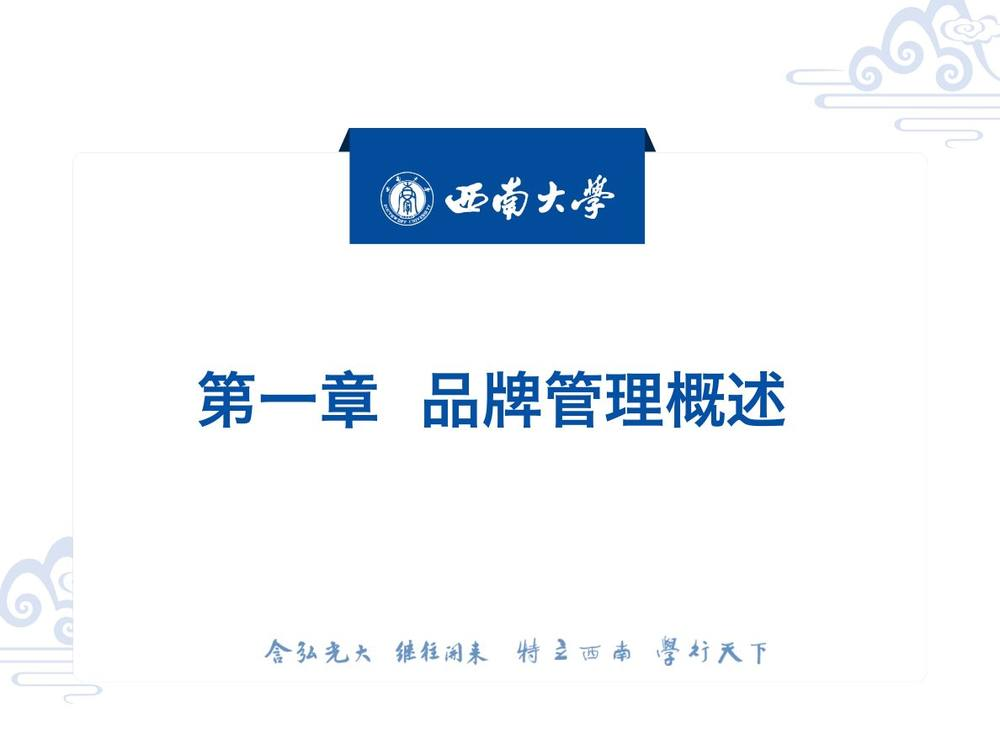
第一章 品牌管理概述
图片文字识别（辅助检索，以原图为准）
h） 西南大学
第一章 品牌管理概述
含弘光六 维往闲来 特三西南學行天下
P025 · 目录
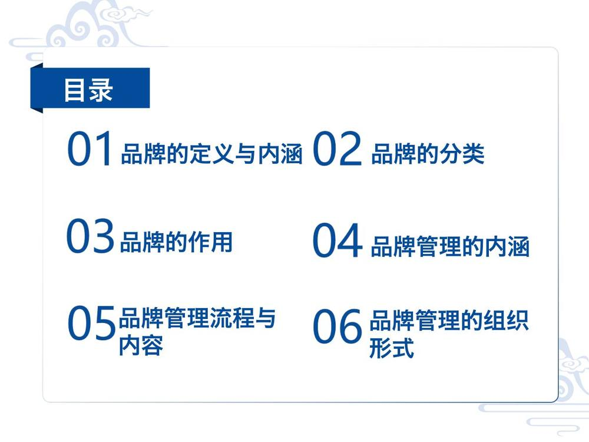
目录
品牌的定义与内涵
品牌的分类
品牌的作用
品牌管理的内涵
品牌管理流程与内容
品牌管理的组织形式
图片文字识别（辅助检索，以原图为准）
目录
01品牌的定义与内涵 02品牌的分类
03品牌的作用
04 品牌管理的内涵
05品牌管理流程与
06品牌管理的组织
内容
形式
P026 · 教学目标
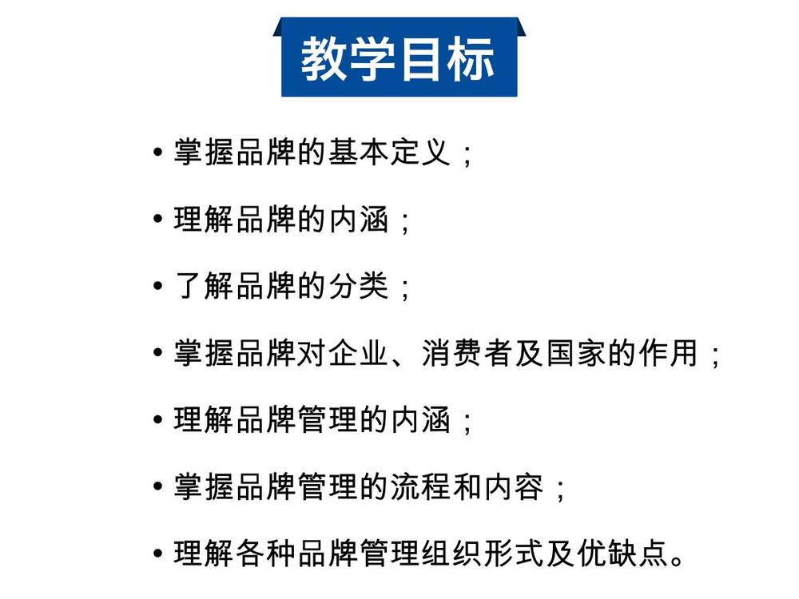
教学目标
掌握品牌的基本定义；
理解品牌的内涵；
了解品牌的分类；
掌握品牌对企业、消费者及国家的作用；
理解品牌管理的内涵；
掌握品牌管理的流程和内容；
理解各种品牌管理组织形式及优缺点。
图片文字识别（辅助检索，以原图为准）
教学目标
•掌握品牌的基本定义；
•理解品牌的内涵；
•了解品牌的分类；
•掌握品牌对企业、消费者及国家的作用；
•理解品牌管理的内涵；
• 掌握品牌管理的流程和内容；
•理解各种品牌管理组织形式及优缺点。
P027 · 案例:企业并购的溢价现象 1/2
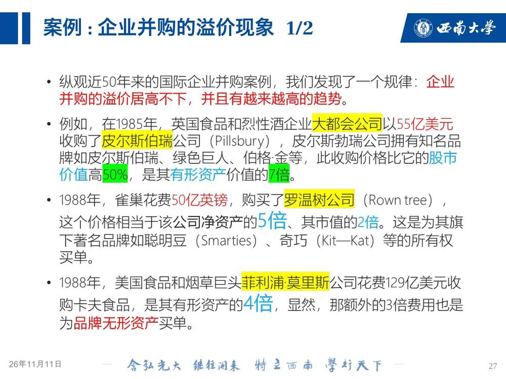
案例:企业并购的溢价现象 1/2
图片文字识别（辅助检索，以原图为准）
||案例：企业并购的溢价现象 1/2
1 亚南大學
•纵观近50年来的国际企业并购案例，我们发现了一个规律：企业
并购的溢价居高不下，并且有越来越高的趋势。
•例如，在1985年，英国食品和烈性酒企业大都会公司以55亿美元
收购了皮尔斯伯瑞公司（Pillsbury），皮尔斯勃瑞公司拥有知名品
牌如皮尔斯伯瑞、绿色巨人、伯格：金等，此收购价格比它的股市
价值高50%，是其有形资产价值的7倍。
•1988年，雀巢花费50亿英镑，购买了罗温树公司（Rown tree），
这个价格相当于该公司净资产的5倍、其市值的2倍。这是为其旗
下著名品牌如聪明豆（Smarties）、奇巧（Kit—Kat）等的所有权
买单。
•1988年，美国食品和烟草巨头菲利浦莫里斯公司花费129亿美元收
购卡夫食品，是其有形资产的4倍，显然，那额外的3倍费用也是
为品牌无形资产买单。
26年11月11日
含弘光大 维往闲来 特三西南 學行天下
27
P028 · 案例:企业并购的溢价现象 2/2
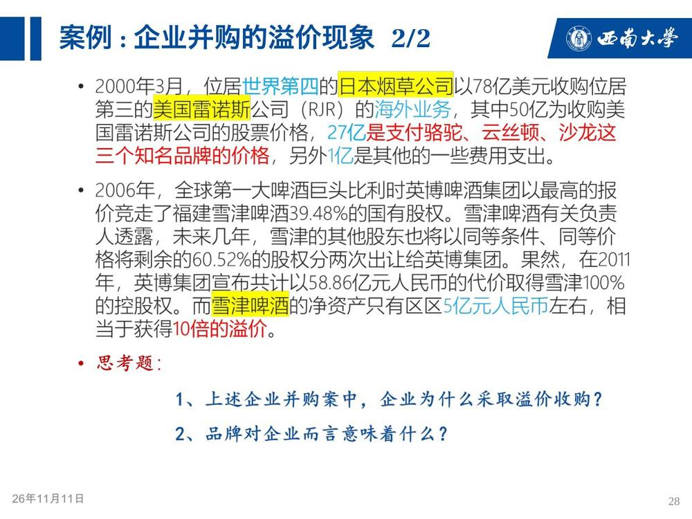
案例:企业并购的溢价现象 2/2
图片文字识别（辅助检索，以原图为准）
|案例：企业并购的溢价现象 2/2
• 2000年3月，位居世界第四的日本烟草公司以78亿美元收购位居
第三的美国雷诺斯公司（RJR）的海外业务，其中50亿为收购美
国雷诺斯公司的股票价格，27亿是支付骆驼、云丝顿、沙龙这
三个知名品牌的价格，另外1亿是其他的一些费用支出。
• 2006年，全球第一大啤酒巨头比利时英博啤酒集团以最高的报
价竟走了福建雪津啤酒39.48%的国有股权。雪津啤酒有关负责
人透露，未来几年，雪津的其他股东也将以同等条件、同等价
格将剩余的60.52%的股权分两次出让给英博集团。果然，在2011
年，英博集团宣布共计以58.86亿元人民币的代价取得雪津100%
的控股权。而雪津啤酒的净资产只有区区5亿元人民币左右，相
当于获得10倍的溢价。
•思考题：
）亚南大学
1、上述企业并购案中，企业为什么采取溢价收购？
2、品牌对企业而言意味着什么？
26年11月11日
28
P029 · 引言
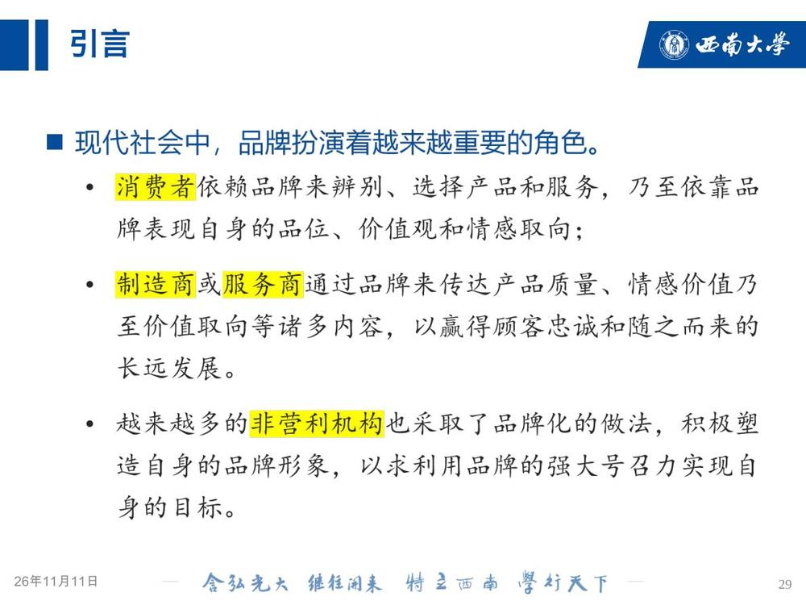
引言
图片文字识别（辅助检索，以原图为准）
引言
1 正南大學
• 现代社会中，品牌扮演着越来越重要的角色。
• 消费者依赖品牌来辨别、选择产品和服务，乃至依靠品
牌表现自身的品位、价值观和情感取向；
• 制造商或服务商通过品牌来传达产品质量、情感价值乃
至价值取向等诸多内容，以赢得顾客忠诚和随之而来的
长远发展。
• 越来越多的非营利机构也采取了品牌化的做法，积极塑
造自身的品牌形象，以求利用品牌的强大号召力实现自
身的目标。
26年11月11日
-含弘光大 维往闲来 特三西南 學行天下
29
P030 · 引言
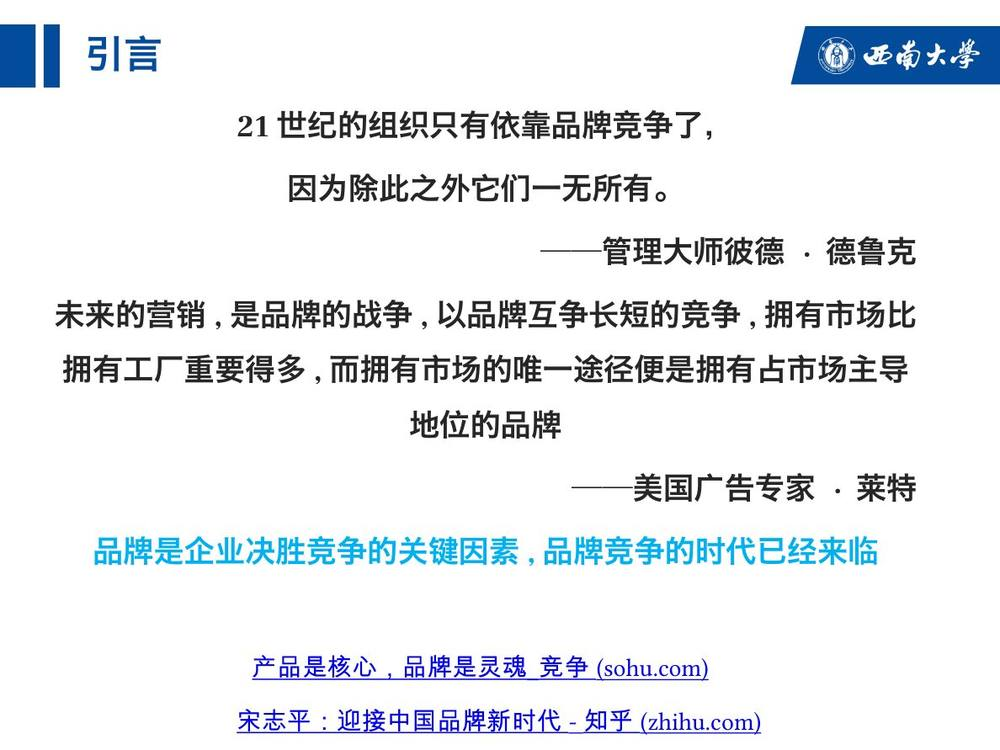
引言
21世纪的组织只有依靠品牌竞争了，
因为除此之外它们一无所有。
——管理大师彼德 · 德鲁克
未来的营销,是品牌的战争,以品牌互争长短的竞争,拥有市场比拥有工厂重要得多,而拥有市场的唯一途径便是拥有占市场主导地位的品牌
——美国广告专家 · 莱特
品牌是企业决胜竞争的关键因素,品牌竞争的时代已经来临
宋志平：迎接中国品牌新时代 - 知乎 (zhihu.com)
产品是核心，品牌是灵魂_竞争 (sohu.com)
图片文字识别（辅助检索，以原图为准）
引言
⑧ 西南大学
21 世纪的组织只有依靠品牌竞争了，
因为除此之外它们一无所有。
——管理大师彼德•德鲁克
未来的营销，是品牌的战争，以品牌互争长短的竞争，拥有市场比
拥有工厂重要得多，而拥有市场的唯一途径便是拥有占市场主导
地位的品牌
美国广告专家•莱特
品牌是企业决胜竞争的关键因素，品牌竞争的时代已经来临
产品是核心，品牌是灵魂 竞争（sohu.com）
宋志平：迎接中国品牌新时代-知乎（zhihu.com）
P031 · 引言
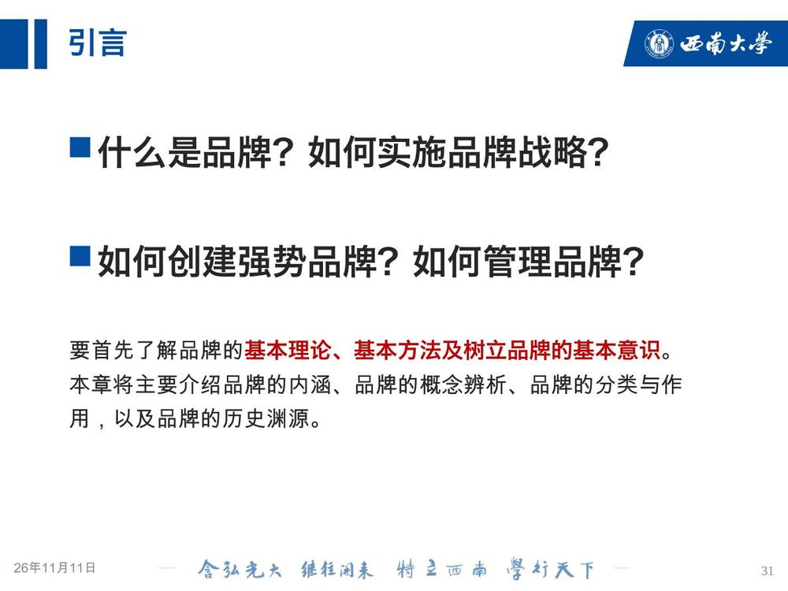
引言
什么是品牌？如何实施品牌战略？
如何创建强势品牌？如何管理品牌？
要首先了解品牌的基本理论、基本方法及树立品牌的基本意识。
本章将主要介绍品牌的内涵、品牌的概念辨析、品牌的分类与作用，以及品牌的历史渊源。
图片文字识别（辅助检索，以原图为准）
引言
⑥ 亚南大學
一什么是品牌？如何实施品牌战略？
如何创建强势品牌？如何管理品牌？
要首先了解品牌的基本理论、基本方法及树立品牌的基本意识。
本章将主要介绍品牌的内涵、品牌的概念辨析、品牌的分类与作
用，以及品牌的历史渊源。
26年11月11日
- 含弘光大 维往闲来 特三西南 學行天下
31
P032 · 01
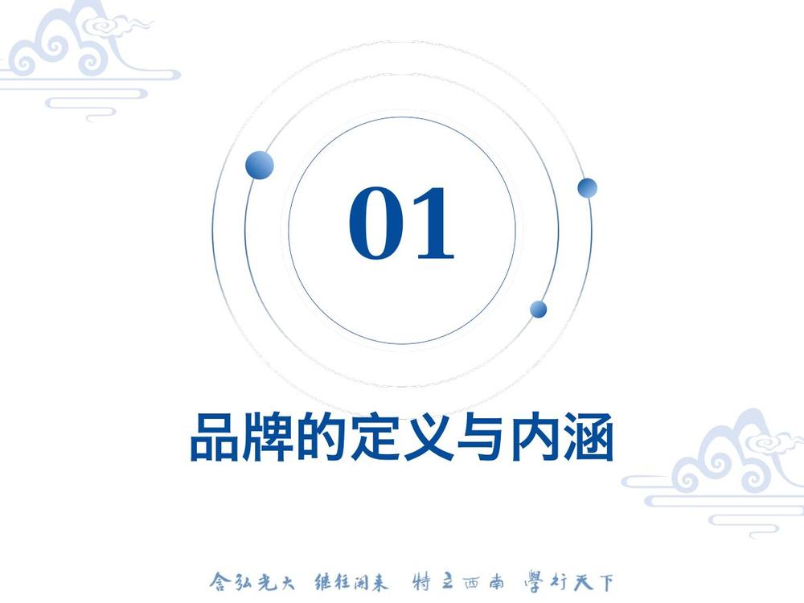
01
品牌的定义与内涵
图片文字识别（辅助检索，以原图为准）
01
品牌的定义与内涵
含弘光大 维往闲来 特三西南 學行天下
P033 · 一、品牌的由来
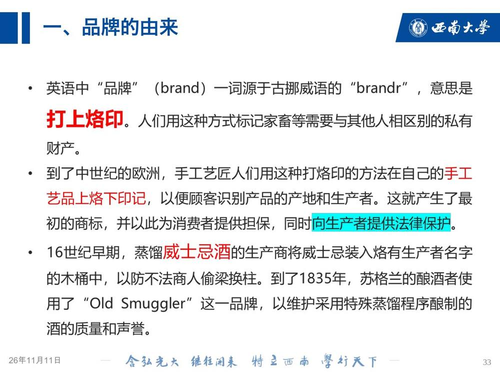
一、品牌的由来
图片文字识别（辅助检索，以原图为准）
一、品牌的由来
们 西南大學
•英语中“品牌^（brand）一词源于古挪威语的“brandr”，意思是
打上烙印。人们用这种方式标记家畜等需要与其他人相区别的私有
财产。
• 到了中世纪的欧洲，手工艺匠人们用这种打烙印的方法在自己的手工
艺品上烙下印记，以便顾客识别产品的产地和生产者。这就产生了最
初的商标，并以此为消费者提供担保，同时向生产者提供法律保护。
• 16世纪早期，蒸馏威士忌酒的生产商将威士忌装入烙有生产者名字
的木桶中，以防不法商人偷梁换柱。到了1835年，苏格兰的酿酒者使
用了“Old Smuggler” 这一品牌，以维护采用特殊蒸馏程序酿制的
酒的质量和声誉。
26年11月11日
— 含弘光六 维往闲来 特三西南 學行天下
33
P034 · 二、品牌的定义
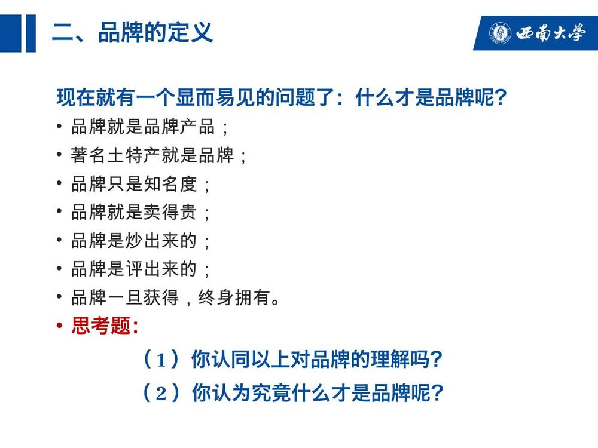
二、品牌的定义
现在就有一个显而易见的问题了：什么才是品牌呢？
品牌就是品牌产品；
著名土特产就是品牌；
品牌只是知名度；
品牌就是卖得贵；
品牌是炒出来的；
品牌是评出来的；
品牌一旦获得，终身拥有。
思考题：
（1）你认同以上对品牌的理解吗？
（2）你认为究竟什么才是品牌呢？
图片文字识别（辅助检索，以原图为准）
二、品牌的定义
现在就有一个显而易见的问题了：什么才是品牌呢？
•品牌就是品牌产品；
•著名土特产就是品牌；
•品牌只是知名度；
•品牌就是卖得贵；
•品牌是炒出来的；
•品牌是评出来的；
•品牌一旦获得，终身拥有。
•思考题：
（1）你认同以上对品牌的理解吗？
（2）你认为究竟什么才是品牌呢？
6 西南大學
P035 · 二、品牌的定义
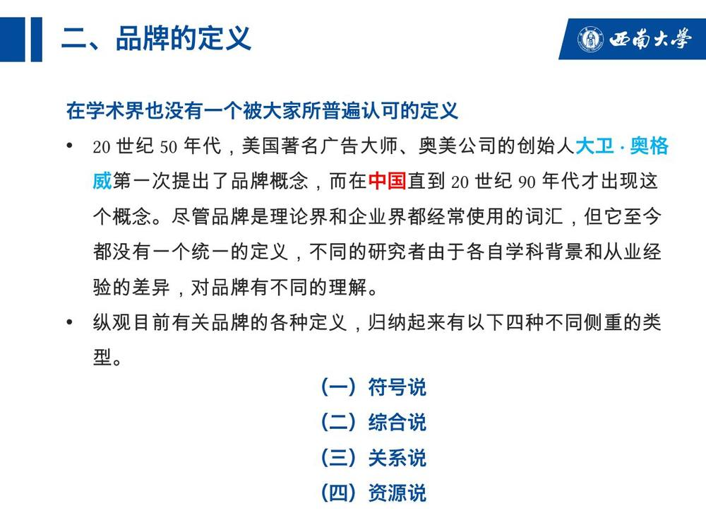
二、品牌的定义
在学术界也没有一个被大家所普遍认可的定义
20世纪50年代，美国著名广告大师、奥美公司的创始人大卫·奥格威第一次提出了品牌概念，而在中国直到20世纪90年代才出现这个概念。尽管品牌是理论界和企业界都经常使用的词汇，但它至今都没有一个统一的定义，不同的研究者由于各自学科背景和从业经验的差异，对品牌有不同的理解。
纵观目前有关品牌的各种定义，归纳起来有以下四种不同侧重的类型。
（一）符号说
（二）综合说
（三）关系说
（四）资源说
图片文字识别（辅助检索，以原图为准）
！二、品牌的定义
⑥ 正南大學
在学术界也没有一个被大家所普遍认可的定义
• 20世纪50年代，美国著名广告大师、奥美公司的创始人大卫•奥格
威第一次提出了品牌概念，而在中国直到20世纪90年代才出现这
个概念。尽管品牌是理论界和企业界都经常使用的词汇，但它至今
都没有一个统一的定义，不同的研究者由于各自学科背景和从业经
验的差异，对品牌有不同的理解。
• 纵观目前有关品牌的各种定义，归纳起来有以下四种不同侧重的类
型。
（一）符号说
（二）综合说
（三）关系说
（四）资源说
P036 · 二、品牌的定义
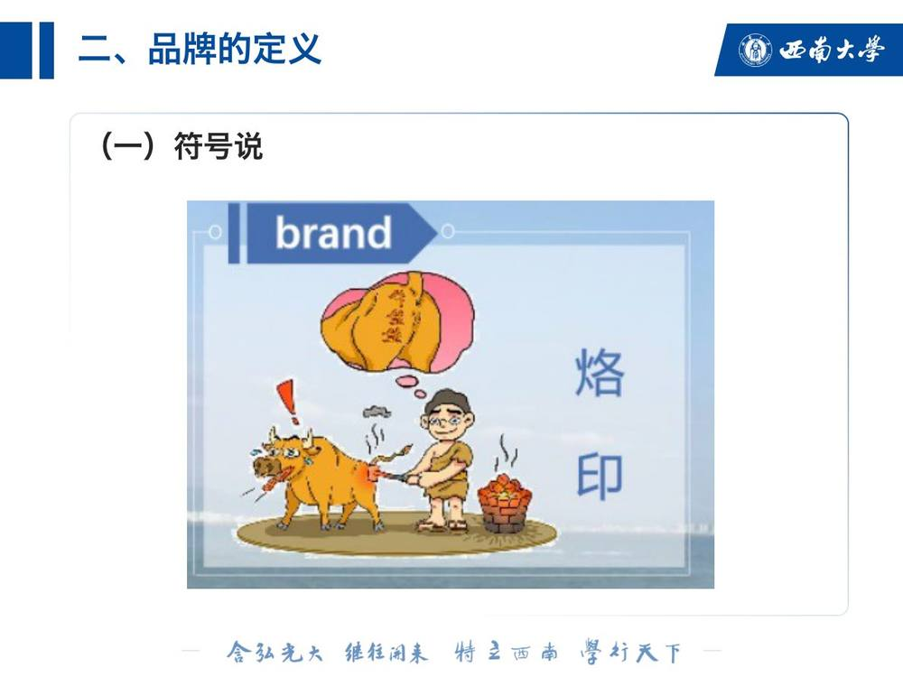
二、品牌的定义
（一）符号说
图片文字识别（辅助检索，以原图为准）
二、品牌的定义
（一）符号说
① 亚南大学
brand
-含弘光大维往闲来特三西南學行天下一
P037 · 二、品牌的定义
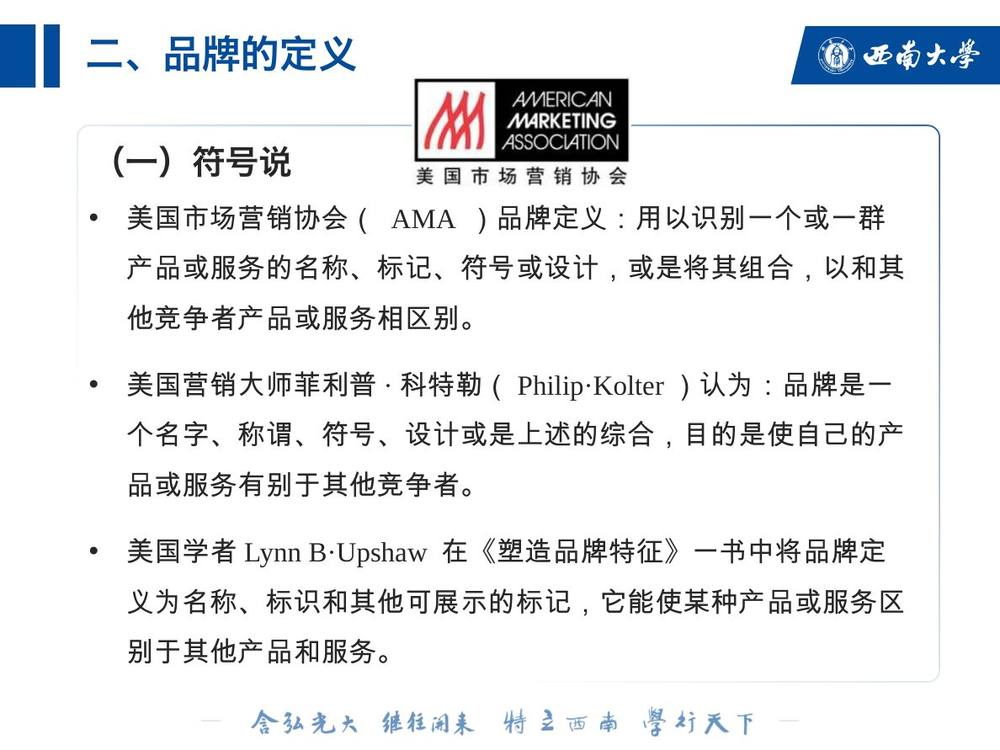
二、品牌的定义
（一）符号说
美国市场营销协会（ AMA ）品牌定义：用以识别一个或一群产品或服务的名称、标记、符号或设计，或是将其组合，以和其他竞争者产品或服务相区别。
美国营销大师菲利普·科特勒（Philip·Kolter）认为：品牌是一个名字、称谓、符号、设计或是上述的综合，目的是使自己的产品或服务有别于其他竞争者。
美国学者Lynn B·Upshaw 在《塑造品牌特征》一书中将品牌定义为名称、标识和其他可展示的标记，它能使某种产品或服务区别于其他产品和服务。
图片文字识别（辅助检索，以原图为准）
二、品牌的定义
6 亚南大學
M
AMERICAN
MARKETING
ASSOCIATION
（一）符号说
美国市场营销协会
• 美国市场营销协会（AMA）品牌定义：用以识别一个或一群
产品或服务的名称、标记、符号或设计，或是将其组合，以和其
他竞争者产品或服务相区别。
• 美国营销大师菲利普 •科特勒（ Philip•Kolter ）认为：品牌是一
个名字、称谓、符号、设计或是上述的综合，目的是使自己的产
品或服务有别于其他竞争者。
• 美国学者 Lynn B-Upshaw 在《塑造品牌特征》一书中将品牌定
义为名称、标识和其他可展示的标记，它能使某种产品或服务区
别于其他产品和服务。
含弘光火 维往闲来 特兰西南 學行天下，
P038 · 二、品牌的定义
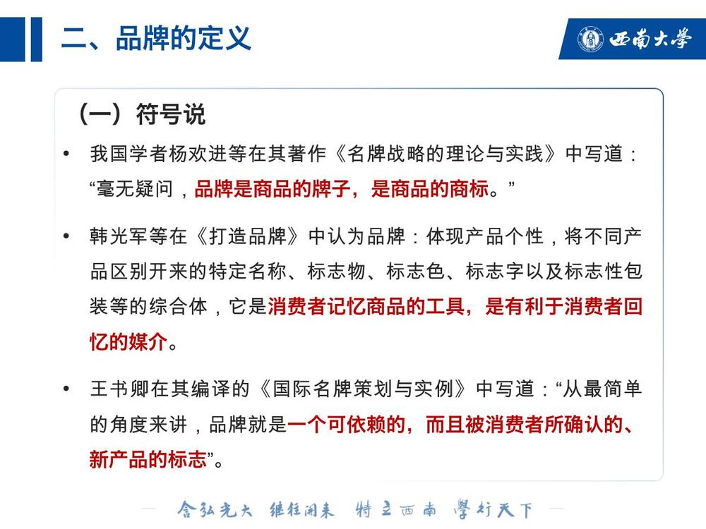
二、品牌的定义
（一）符号说
我国学者杨欢进等在其著作《名牌战略的理论与实践》中写道：“毫无疑问，品牌是商品的牌子，是商品的商标。”
韩光军等在《打造品牌》中认为品牌：体现产品个性，将不同产品区别开来的特定名称、标志物、标志色、标志字以及标志性包装等的综合体，它是消费者记忆商品的工具，是有利于消费者回忆的媒介。
王书卿在其编译的《国际名牌策划与实例》中写道：“从最简单的角度来讲，品牌就是一个可依赖的，而且被消费者所确认的、新产品的标志”。
图片文字识别（辅助检索，以原图为准）
二、品牌的定义
（一）符号说
• 我国学者杨欢进等在其著作《名牌战略的理论与实践》中写道：
“毫无疑问，品牌是商品的牌子，是商品的商标。”
• 韩光军等在《打造品牌》中认为品牌：体现产品个性，将不同产
品区别开来的特定名称、标志物、标志色、标志字以及标志性包
装等的综合体，它是消费者记忆商品的工具，是有利于消费者回
忆的媒介。
• 王书卿在其编译的《国际名牌策划与实例》中写道：“从最简单
的角度来讲，品牌就是一个可依赖的，而且被消费者所确认的、
新产品的标志”。
含弘光火 维往闲来 特兰西南 學行天下，
） 正南大學
P039 · 二、品牌的定义
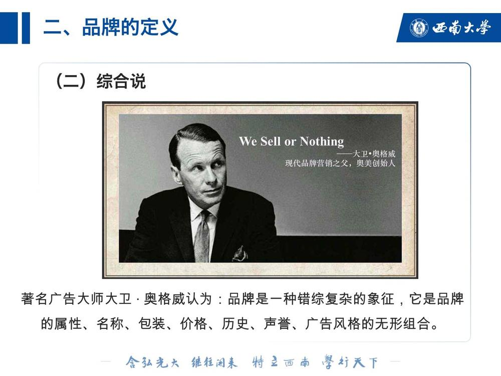
二、品牌的定义
（二）综合说
著名广告大师大卫·奥格威认为：品牌是一种错综复杂的象征，它是品牌的属性、名称、包装、价格、历史、声誉、广告风格的无形组合。
图片文字识别（辅助检索，以原图为准）
二、品牌的定义
（二）综合说
亚南大学
We Sell or Nothing
大卫•奥格威
现代品牌营销之父，奥美创始人
著名广告大师大卫•奥格威认为：品牌是一种错综复杂的象征，它是品牌
的属性、名称、包装、价格、历史、声誉、广告风格的无形组合。
含弘光大 维往闲来 特兰西南學行天下—
P040 · 二、品牌的定义
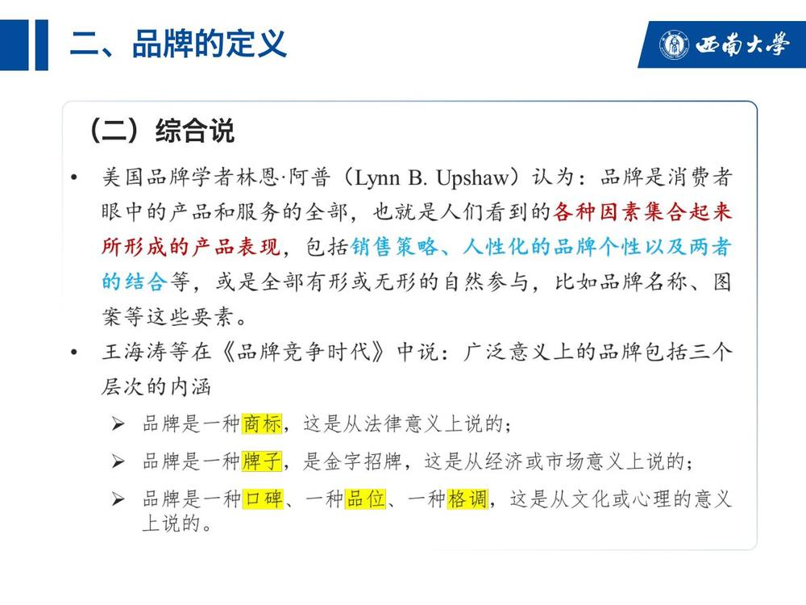
二、品牌的定义
（二）综合说
图片文字识别（辅助检索，以原图为准）
二、品牌的定义
（二）综合说
• 美国品牌学者林恩•阿普（Lynn B. Upshaw）认为：品牌是消费者
眼中的产品和服务的全部，也就是人们看到的各种因素集合起来
所形成的产品表现，包括销售策略、人性化的品牌个性以及两者
的结合等，或是全部有形或无形的自然参与，比如品牌名称、图
案等这些要素。
• 王海涛等在《品牌竞争时代》中说：广泛意义上的品牌包括三个
层次的内涵
> 品牌是一种商标，这是从法律意义上说的；
＞ 品牌是一种牌子，是金字招牌，这是从经济或市场意义上说的；
> 品牌是一种口碑、一种品位、一种格调，这是从文化或心理的意义
上说的。
正南大学
P041 · 二、品牌的定义
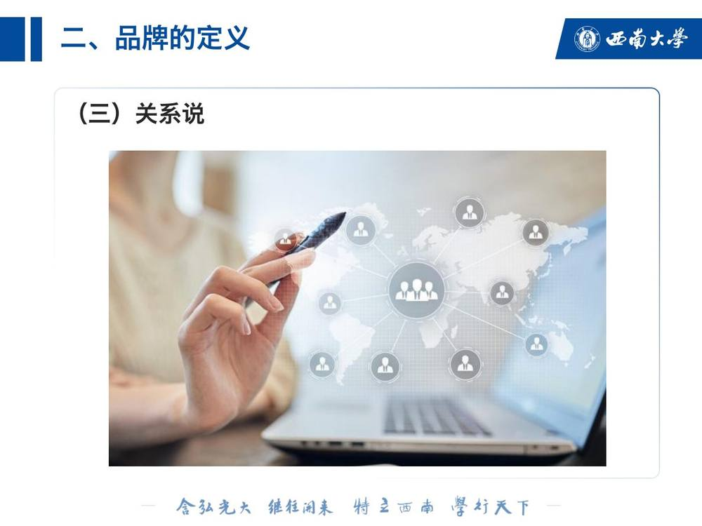
二、品牌的定义
（三）关系说
图片文字识别（辅助检索，以原图为准）
二、品牌的定义
（三）关系说
正南大学
- 含弘光六 维往闲来 特三西南學行天下一
P042 · 二、品牌的定义
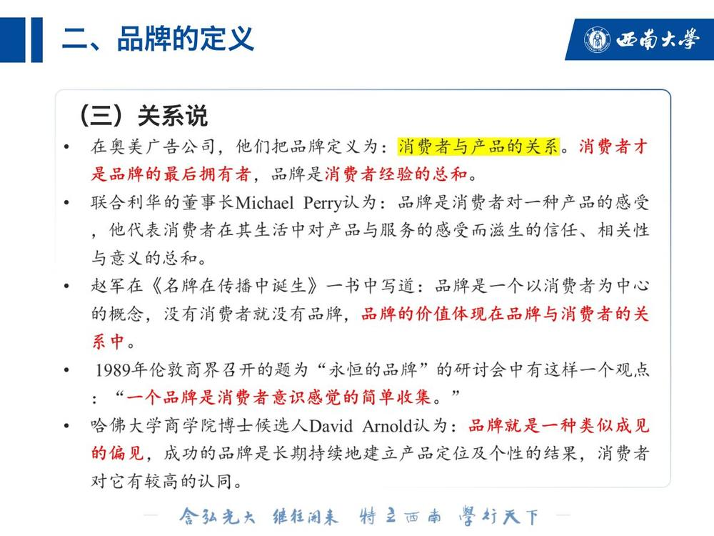
二、品牌的定义
（三）关系说
图片文字识别（辅助检索，以原图为准）
】二、品牌的定义
亚南大學学
（三） 关系说
• 在奥美广告公司，他们把品牌定义为：消费者与产品的关系。消费者才
是品牌的最后拥有者，品牌是消费者经验的总和。
• 联合利华的董事长Michael Perry认为：品牌是消费者对一种产品的感受
，他代表消费者在其生活中对产品与服务的感受而滋生的信任、相关性
与意义的总和。
• 赵军在《名牌在传播中诞生》一书中写道：品牌是一个以消费者为中心
的概念，没有消费者就没有品牌，品牌的价值体现在品牌与消费者的关
系中。
• 1989年伦敦商界召开的题为“永恒的品牌”的研讨会中有这样一个观点
：“一个品牌是消费者意识感觉的简单收集。”
• 哈佛大学商学院博士候选人David Arnold认为：品牌就是一种类似成见
的偏见，成功的品牌是长期持续地建立产品定位及个性的结果，消费者
对它有较高的认同。
含弘光火 维往闲来 特兰西南 學行天下—
P043 · 二、品牌的定义
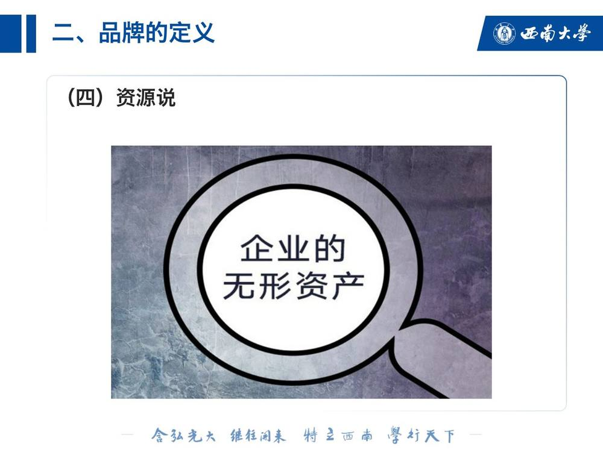
二、品牌的定义
（四）资源说
图片文字识别（辅助检索，以原图为准）
二、品牌的定义
（四）资源说
西南大学
企业的
无形资产
- 含弘光大 维往闲来 特三西南學行天下一
P044 · 二、品牌的定义
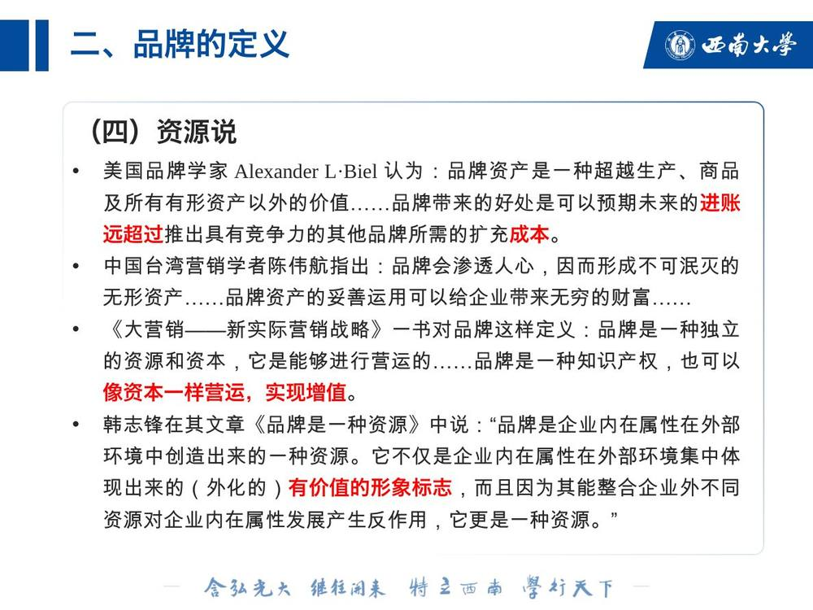
二、品牌的定义
美国品牌学家Alexander L·Biel认为：品牌资产是一种超越生产、商品及所有有形资产以外的价值……品牌带来的好处是可以预期未来的进账远超过推出具有竞争力的其他品牌所需的扩充成本。
中国台湾营销学者陈伟航指出：品牌会渗透人心，因而形成不可泯灭的无形资产……品牌资产的妥善运用可以给企业带来无穷的财富……
《大营销——新实际营销战略》一书对品牌这样定义：品牌是一种独立的资源和资本，它是能够进行营运的……品牌是一种知识产权，也可以像资本一样营运，实现增值。
韩志锋在其文章《品牌是一种资源》中说：“品牌是企业内在属性在外部环境中创造出来的一种资源。它不仅是企业内在属性在外部环境集中体现出来的（外化的）有价值的形象标志，而且因为其能整合企业外不同资源对企业内在属性发展产生反作用，它更是一种资源。”
（四）资源说
图片文字识别（辅助检索，以原图为准）
二、品牌的定义
⑥ 亚南大学
（四）资源说
• 美国品牌学家 Alexander L•Biel 认为：品牌资产是一种超越生产、商品
及所有有形资产以外的价值.•品牌带来的好处是可以预期未来的进账
远超过推出具有竞争力的其他品牌所需的扩充成本。
• 中国台湾营销学者陈伟航指出：品牌会渗透人心，因而形成不可泯灭的
无形资产.品牌资产的妥善运用可以给企业带来无穷的财富
•《大营销——新实际营销战略》一书对品牌这样定义：品牌是一种独立
的资源和资本，它是能够进行营运的.品牌是一种知识产权，也可以
像资本一样营运，实现增值。
韩志锋在其文章《品牌是一种资源》中说：“品牌是企业内在属性在外部
环境中创造出来的一种资源。它不仅是企业内在属性在外部环境集中体
现出来的（外化的）有价值的形象标志，而且因为其能整合企业外不同
资源对企业内在属性发展产生反作用，它更是一种资源。”
含弘光六 维往闲来 特三西南學行天下
P045 · 二、品牌的定义
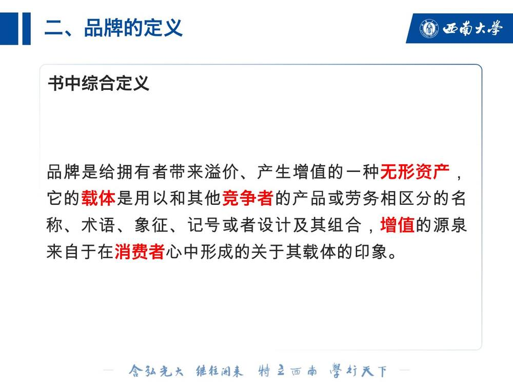
二、品牌的定义
品牌是给拥有者带来溢价、产生增值的一种无形资产，它的载体是用以和其他竞争者的产品或劳务相区分的名称、术语、象征、记号或者设计及其组合，增值的源泉来自于在消费者心中形成的关于其载体的印象。
书中综合定义
图片文字识别（辅助检索，以原图为准）
二、品牌的定义
书中综合定义
亚南大学
品牌是给拥有者带来溢价、产生增值的一种无形资产，
它的载体是用以和其他竞争者的产品或劳务相区分的名
称、术语、象征、记号或者设计及其组合，增值的源泉
来自于在消费者心中形成的关于其载体的印象。
含弘光六 维往闲来 特三西南學行天下
P046 · 三、品牌的内涵
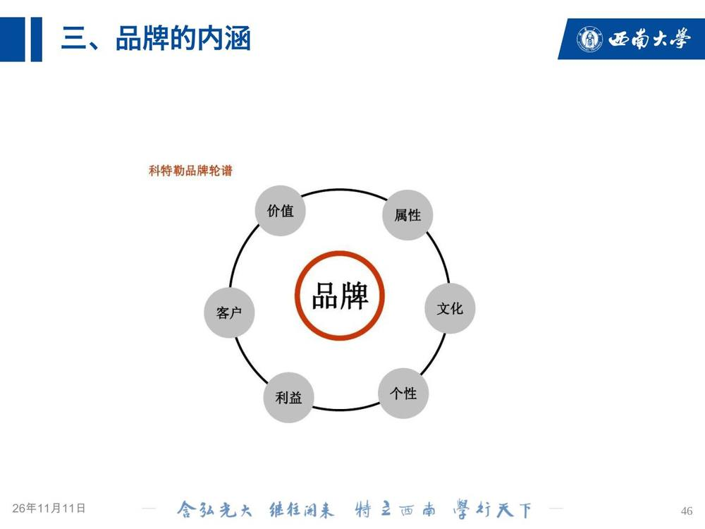
三、品牌的内涵
图片文字识别（辅助检索，以原图为准）
！三、品牌的内涵
0） 亚南大學
科特勒品牌轮
价值
属性
品牌
客户
文化
利益
个性
26年11月11日
-含弘光大 维往闲来 特三西南學行天下一
46
P047 · 三、品牌的内涵
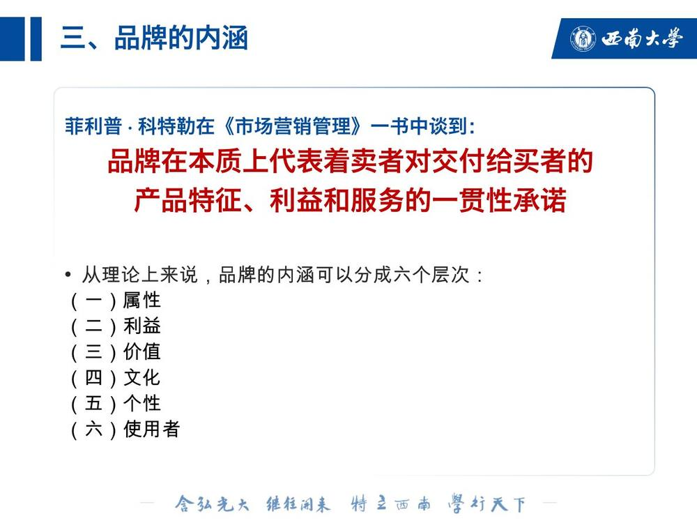
三、品牌的内涵
菲利普·科特勒在《市场营销管理》一书中谈到：
品牌在本质上代表着卖者对交付给买者的
产品特征、利益和服务的一贯性承诺
从理论上来说，品牌的内涵可以分成六个层次：
（一）属性
（二）利益
（三）价值
（四）文化
（五）个性
（六）使用者
图片文字识别（辅助检索，以原图为准）
三、品牌的内涵
亚南大学
菲利普•科特勒在《市场营销管理》一书中谈到：
品牌在本质上代表着卖者对交付给买者的
产品特征、利益和服务的一贯性承诺
•从理论上来说，品牌的内涵可以分成六个层次：
（一）属性
（二）利益
（三）价值
（四）文化
（五）个性
（六）使用者
含弘光大 维往闲来 特三西南 學行天下—
P048 · 三、品牌的内涵
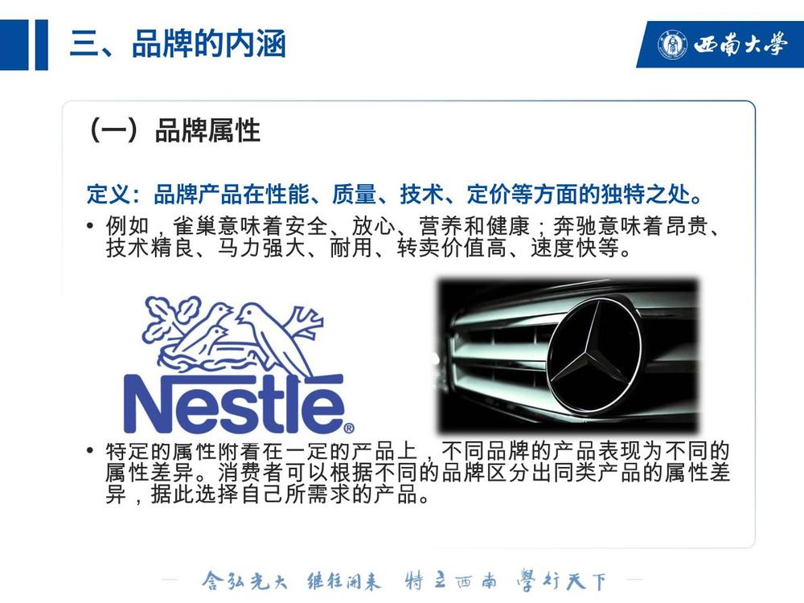
三、品牌的内涵
（一）品牌属性
定义：品牌产品在性能、质量、技术、定价等方面的独特之处。
例如，雀巢意味着安全、放心、营养和健康；奔驰意味着昂贵、技术精良、马力强大、耐用、转卖价值高、速度快等。
特定的属性附着在一定的产品上，不同品牌的产品表现为不同的属性差异。消费者可以根据不同的品牌区分出同类产品的属性差异，据此选择自己所需求的产品。
图片文字识别（辅助检索，以原图为准）
三、品牌的内涵
（一）品牌属性
定义：品牌产品在性能、质量、技术、定价等方面的独特之处。
• 例如，雀菓意味着安全、放心、营养和健康；奔驰意味着昂贵、
技术精良、马力强大、耐用、转卖价值高、速度快等。
亚南大学
Nestle.
• 特定的属性附看在一定的严品上
不同品牌的产品表现为不同的
篇往星算。箔赛著可飯粮据界茴的品澤畏勞出同異产器的属惺業
异，据此选择自己所需求的产品。
含弘光六 维往闲来 特三西南學行天下一
P049 · 三、品牌的内涵
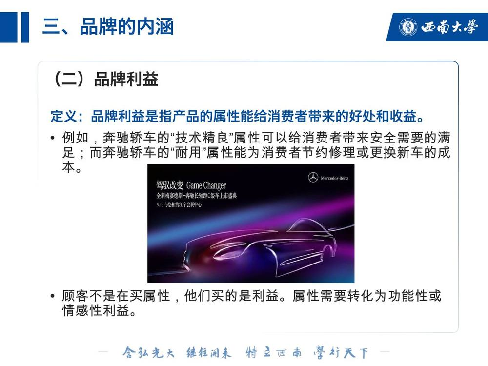
三、品牌的内涵
（二）品牌利益
定义：品牌利益是指产品的属性能给消费者带来的好处和收益。
例如，奔驰轿车的“技术精良”属性可以给消费者带来安全需要的满足；而奔驰轿车的“耐用”属性能为消费者节约修理或更换新车的成本。
顾客不是在买属性，他们买的是利益。属性需要转化为功能性或情感性利益。
图片文字识别（辅助检索，以原图为准）
三、品牌的内涵
6 西南大学
（二）品牌利益
定义：品牌利益是指产品的属性能给消费者带来的好处和收益。
•例如，奔驰轿车的“技术精良”属性可以给消费者带来安全需要的满
足；而奔驰轿车的“耐用”属性能为消费者节约修理或更换新车的成
本。
驾驭改变Game Changer
全新梅赛德斯-奔驰长轴距C级车上市盛典
9.13与您相约江宁会展中心
•顾客不是在买属性，他们买的是利益。属性需要转化为功能性或
情感性利益。
含弘光大 维往闲来 特三西南 學行天下 一
P050 · 三、品牌的内涵
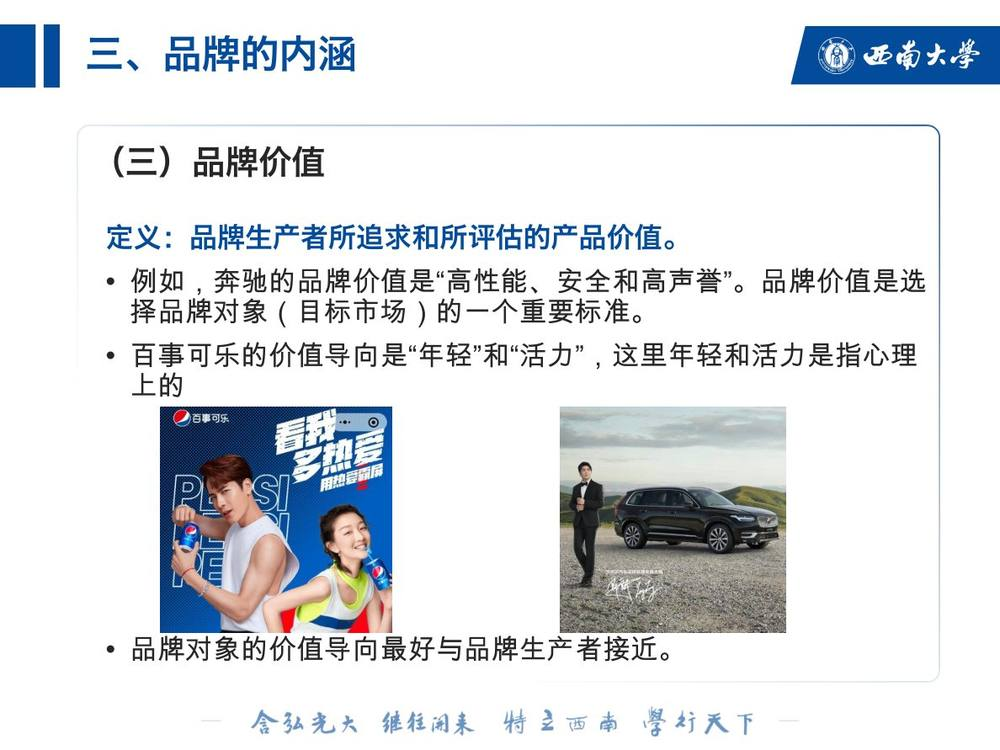
三、品牌的内涵
（三）品牌价值
定义：品牌生产者所追求和所评估的产品价值。
例如，奔驰的品牌价值是“高性能、安全和高声誉”。品牌价值是选择品牌对象（目标市场）的一个重要标准。
百事可乐的价值导向是“年轻”和“活力”，这里年轻和活力是指心理上的
品牌对象的价值导向最好与品牌生产者接近。
图片文字识别（辅助检索，以原图为准）
三、品牌的内涵
0 亚南大學
（三）品牌价值
定义：品牌生产者所追求和所评估的产品价值。
•例如，奔驰的品牌价值是“高性能、安全和高声誉”。品牌价值是选
择品牌对象（目标市场）的一个重要标准。
•百事可乐的价值导向是“年轻”和“活力”，这里年轻和活力是指心理
百事可乐
S
•品牌对象的价值导向最好与品牌生产者接近。
含弘光大 维往闲来 特三西南學行天下
P051 · 三、品牌的内涵
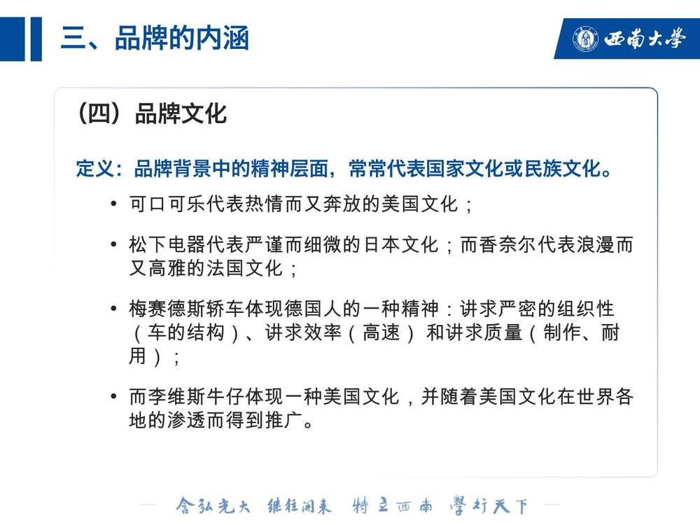
三、品牌的内涵
（四）品牌文化
定义：品牌背景中的精神层面，常常代表国家文化或民族文化。
可口可乐代表热情而又奔放的美国文化；
松下电器代表严谨而细微的日本文化；而香奈尔代表浪漫而又高雅的法国文化；
梅赛德斯轿车体现德国人的一种精神：讲求严密的组织性（车的结构）、讲求效率（高速） 和讲求质量（制作、耐用）；
而李维斯牛仔体现一种美国文化，并随着美国文化在世界各地的渗透而得到推广。
图片文字识别（辅助检索，以原图为准）
三、品牌的内涵
6 西南大學
（四）品牌文化
定义：品牌背景中的精神层面，常常代表国家文化或民族文化。
• 可口可乐代表热情而又奔放的美国文化；
•松下电器代表严谨而细微的日本文化；而香奈尔代表浪漫而
又高雅的法国文化；
•梅赛德斯轿车体现德国人的一种精神：讲求严密的组织性
（车的结构）、讲求效率（高速）和讲求质量（制作、耐
用）；
•而李维斯牛仔体现一种美国文化，并随着美国文化在世界各
地的渗透而得到推广。
含弘光六 维往闲来 特三西南學行天下
P052 · 三、品牌的内涵
三、品牌的内涵
（五）品牌个性
定义：品牌相关的一系列人类性格，是品牌形象人格化后所具有的个性。
奔驰的品牌个性是“成功、严谨和权威”，
百事可乐的品牌个性是“新潮、活泼”，
海尔的品牌个性是“真诚”，
沃尔玛则使人感受到它的“勤劳、朴实”的个性。
品牌个性与品牌文化密切相关。
品牌个性是指品牌个性化以后所具有的个性，是“人”的个性，而人的个性的形成是离不开人所处的社会环境的，特别是文化环境。因此，从文化环境来研究品牌个性，可以增加品牌个性研究的深度。
图片文字识别（辅助检索，以原图为准）
三、品牌的内涵
（五）品牌个性
定义：品牌相关的一系列人类性格，是品牌形象人格化后所具有
的个性。
•奔驰的品牌个性是“成功、严谨和权威”，
•百事可乐的品牌个性是“新潮、活泼”，
•海尔的品牌个性是“真诚”，
•沃尔玛则使人感受到它的“勤劳、朴实”的个性。
品牌个性与品牌文化密切相关。
•品牌个性是指品牌个性化以后所具有的个性，是“人”的
个性，而人的个性的形成是离不开人所处的社会环境的，
特别是文化环境。因此，从文化环境来研究品牌个性，可
以增加品牌个性研究的深度。
含弘光大 维往闲来 特三西南 學行天下
） 西南大學
P053 · 三、品牌的内涵
三、品牌的内涵
（六）使用者
图片文字识别（辅助检索，以原图为准）
三、品牌的内涵
6 正南大学
（六）使用者
定义：购买或使用产品的消费者类型。品牌将消费者区隔开来，
这种区隔不但体现在消费者的年龄、、收入等表象特征，而且更多
地体现在消费者的心理特征和生活方式上
• 欧莱雅的使用者是时尚、高雅的成熟女性；
•奔驰的使用者是成熟、稳重的成功人士。。
品牌个性与品牌文化密切相关。
•品牌个性是指品牌个性化以后所具有的个性，是“人”的个
性，而人的个性的形成是离不开人所处的社会环境的，特
别是文化环境。因此，从文化环境来研究品牌个性，可以增
加品牌个性研究的深度。
-含弘光大 维往闲来特三西南學行天下一
P054 · 三、品牌的内涵
三、品牌的内涵
奔 驰
属性
利益
价值
文化
个性
用户
昂贵、工艺精湛、马力强大、高贵、速度快
安全，让我感觉自己很重要，受人尊敬
高绩效、安全、声望
德国文化，组织严密、高效率和高质量
严谨的老板、凶猛的狮子
身份的象征
图片文字识别（辅助检索，以原图为准）
」三、品牌的内涵
奔驰
属性 昂贵、工艺精湛、马力强大、高贵、速度快
利益 安全，让我感觉自己很重要，受人尊敬
价值 高绩效、安全、声望
文化 德国文化，组织严密、高效率和高质量
个性 严谨的老板、凶猛的狮子
用户 身份的象征
西南大学
- 含弘光大 维往闲来 特三西南 學行天下
—
P055 · 三、品牌的内涵
三、品牌的内涵
菲利普·科特勒认为：品牌六层含义之间不是并列的关系，归结为三个层次。
从消费者的认知过程来看
消费者总是先体会到奔驰汽车的高性能之后才认同它的市场定位，对它产生文化和个性的联想，再通过长期大量的积累才能相信其做出的价值承诺“世界上工艺最佳的汽车”。
从企业的品牌塑造过程来看
应该以其作出的价值承诺为核心，建立品牌文化，树立品牌个性，定位目标市场。
从这几个方面出发设计品牌的属性和提供的利益， 以品牌的核心价值统率品牌的塑造过程，这样才能保证品牌管理的成功。
图1-1 品牌内涵的金字塔模型
图片文字识别（辅助检索，以原图为准）
三、品牌的内涵
0 亚南大學
菲利普•科特勒认为：品牌六层含义之间不是并列的关系，归结为三个层次。
从消费者的认知过程来看
消费者总是先体会到奔驰汽车的高性能之后
才认同它的市场定位，对它产生文化和个性
的联想，再通过长期大量的积累才能相信其
做出的价值承诺“世界上工艺最佳的汽车”。
从企业的品牌塑造过程来看
应该以其作出的价值承诺核心，建立品牌
文化，树立品牌个性，定位目标市场。
从这几个方面出发设计品牌的属性和提供的
利益，以品牌的核心价值统率品牌的塑造过
程，这样才能保证品牌管理的成功。
消费者的认知过程
价值
文化
个性
用户
利益
属性
图1-1 品牌内涵的金字塔模
型
•价值承诺
“识别差异
*功能定位
26年11月11日
含弘光六 继往闲来 特三西南學行天下
55
P056 · 四、品牌的核心价值
四、品牌的核心价值
图片文字识别（辅助检索，以原图为准）
四、品牌的核心价值
定义：品牌资产的主体部分，它让消费者明确、清晰地记住并识别
品牌的利益点与个性，是驱动消费者喜欢乃至爱上一个品牌的主要
力量。
• 舒肤佳沐浴露能“有效去除细菌”；
• 六神花露水代表的价值是“本草精华、凉爽、夏天使用最
好”；
•宝马是“驾驶的乐趣”；
•沃尔沃定位是“安全”。
功能性利益价值、情感性价值、自我表现型（社会型）价值
⑥ 西南大学
26年11月11日
含弘光大 维往闲来 特三西南 學行天下—
56
P057 · 四、品牌的核心价值
四、品牌的核心价值
产品具有五个层次的意义
核心利益层是指消费者通过消费产品和服务来满足其基本的需求和欲望;
一般产品层是指产品的基本外观，包括对于其功能来说绝对必要的那些属性特征，但不是显著的特征。这是一个基本的、朴素的、能够圆满地实施产品功能的产品外观;
期望产品层是指购买者在购买产品时，期望能获得的一系列产品属性或特征；
延伸产品层是指产品区别于竞争对手的其他属性、利益，或与之相关的服务；
潜在产品层是指产品最终将要经历的各种延伸和转变。
图片文字识别（辅助检索，以原图为准）
四、品牌的核心价值
产品具有五个层次的意义
•核心利益层是指消费者通过消费产品和服务来满足其
基本的需求和欲望；
•一般产品层是指产品的基本外观，包括对于其功能来
说绝对必要的那些属性特征
但不是显著的特征。这
是一个基本的、朴素的、能够圆满地实施产品功能的
产品外观；
•期望产品层是指购买者在购买产品时，期望能获得的
一系列产品属性或特征；
• 延伸产品层是指产品区别于竞争对手的其他属性、利
益，或与之相关的服务；
•潜在产品层是指产品最终将要经历的各种延伸和转
变。
6 亚南大學
26年11月11日
含弘光六 维往闲来 特三西南學行天下
57
P058 · 四、品牌的核心价值
四、品牌的核心价值
品牌与产品的关系：
品牌远比产品的含义广泛，因为品牌具有不同维度，这些维度使之能区别于产品，并能满足顾客的需求。
品牌与产品维度的差异可以是理性的、有形的(与品牌的产品绩效相关)，也可以是具有象征意义的、情感的、无形的(与品牌代表了什么相关)。
品牌是消费者对于产品属性的感知、感情的总和，包括品牌名称的内涵及与品牌相关的公司联想。
——Alvin A. Achenbaum
图片文字识别（辅助检索，以原图为准）
四、品牌的核心价值
M 亚南大學
品牌与产品的关系：
•品牌远比产品的含义广泛，因为品牌具有不同维度，这些维
度使之能区别于产品，并能满足顾客的需求。
•品牌与产品维度的差异可以是理性的、有形的（与品牌的产品
绩效相关），也可以是具有象征意义的、情感的、无形的（与
品牌代表了什么相关）。
品牌是消费者对于产品属性的感知、感情的总和，
包括品牌名称的内涵及与品牌相关的公司联想。
——Alvin A. Achenbaum
26年11月11日
含弘光大 维往闲来 特三西南學行天下一
58
P059 · 五、品牌的外延
五、品牌的外延
图片文字识别（辅助检索，以原图为准）
五、品牌的外延
品牌的外延包括构成品牌的一切内容，如品牌名称、标识与图标、
标记、标准字、标准色、标准包装以及广告曲。
（一）品牌名称
•品牌名称是品牌基本的构成要素，是从文字、符号、语音、
字形等方面对品牌信息内容的表征。
例如，五粮液所体现的纯粮酿造的品质，金六福以“福”的吉
庆形象定位，所表达的良好祝愿等。
） 正南大學
26年11月11日
五粮滚
金 福
中国人的福酒
-含弘光大维往闲来特立西南學行天下一
59
P060 · 五、品牌的外延
五、品牌的外延
图片文字识别（辅助检索，以原图为准）
五、品牌的外延
（一）品牌名称
•品牌名称在整个品牌中起着提纲挈领的作用是消费者记忆
品牌和品牌传播的主要依据。为品牌选一个好名称是品牌
成功的第一步，好名称能给消费者带来好的品牌印象。为
品牌起一个好名称，会使品牌具有先天的优势，为品牌的
传播带来便利，减少传播的信息损失，帮助消费者认知。
•一般来说，品牌名称要朗朗上口，要尽量简单、易懂易记，
以给消费者留下深刻的印象。
1 亚南大學
26年11月11日
— 含弘光大 维往闲来 特兰西南 學行天下—
60
P061 · 五、品牌的外延
五、品牌的外延
（二）标识
标识是品牌用以激发视觉感知的一种识别体系，它能给人以更具体、更可感的形象记忆，帮助消费者更好地识别和记忆品牌。
标识可分为文字标识、图案标识和图文标识。
文字标识是用独特的形式书写，标示公司名称和商标；
图案标识是指没有文字的标识；
图文标识是由文字和图案组合的标识。
图片文字识别（辅助检索，以原图为准）
五、品牌的外延
（二）标识
标识是品牌用以激发视觉感知的一种识别体系，它能给人以更具
体、更可感的形象记忆，帮助消费者更好地识别和记忆品牌。
•标识可分为文字标识、图案标识和图文标识。
•文字标识是用独特的形式书写，标示公司名称和商
•图案标识是指没有文字的标识；
一 标识旱由 字和肉室组合的标识。
Cocg Coa
四 ®
Baid
Jl
ml
，百臣
Old
New|
26年11月11日
含弘光大 维往闲来 特三西南學行天下一
6 西南大學
61
P062 · 五、品牌的外延
五、品牌的外延
（三）标志物
标志物是品牌图案标识的一种特殊类型，它不但具象，而且往往取材于现实生活，标志物在广告和包装设计中，起着非常重要的作用。
标志物可以是某种生命的事物：
例如花花公子的兔子、可口可乐酷儿果汁饮料的酷儿精灵等；它也可以是活生生的人物，如肯德基上校、麦当劳大叔……
图片文字识别（辅助检索，以原图为准）
五、品牌的外延
6 西南大学
（三）标志物
•标志物是品牌图案标识的一种特殊类型，它不但具象，而且往
往取材于现实生活，标志物在广告和包装设计中，起着非常重
要的作用。
•标志物可以是某种生命的事物：
•例如花花公子的兔子、可口可乐酷儿果汁饮料的酷儿精灵等；
它也可以是活生生的人物，如肯德基上校、麦当劳大叔⋯•
Q00~
PLAYBOY
26年11月11日
含弘光六 维往闲来 特三西南學行天下
62
P063 · 五、品牌的外延
五、品牌的外延
（四）标准字
品牌中的中外文字，它是品牌中可以读出的那一部分。它常是品牌的名称或企业的经营口号、广告语等。
阿迪的“Impossible is nothing” 我们可以战胜“不可能”
耐克的“Nothing is impossible” 没什么不可能
李宁的“ Anything is possible” 一切皆有可能
为了使品牌能口头传播，几乎所有的品牌都有文字部分，因此设计品牌标准字是创立品牌的第一步。
图片文字识别（辅助检索，以原图为准）
五、品牌的外延
（四）标准字
品牌中的中外文字，它是品牌中可以读出的那一部分。它常是品牌
的名称或企业的经营口号、广告语等。
•阿迪的“Impossible is nothing”我们可以战胜“不可能”
•耐克的“Nothing is impossible” 没什么不可能
•李宁的“Anything is possible”一切皆有可能
•为了使品牌能口头传播，几乎所有的品牌都有文字部分，因
此设计品牌标准字是创立品牌的第一步。
6 正南大學
26年11月11日
含弘光六 维往闲来 特三西南學行天下
63
P064 · 五、品牌的外延
五、品牌的外延
（五）标准色
品牌中的特殊色彩，是品牌标志的重要组成部分，用以体现自我个性，以区别其他产品的色彩体系
通过强烈的视觉效果所形成的色彩冲击，使消费者产生强烈的心理反应与联想，使品牌的主题乃至整体形象得到强化
可口可乐的红色、百事可乐的红蓝相间等。
一般品牌的颜色要选择鲜明的色彩，把产品的理念通过色彩抽象地传递给顾客。
图片文字识别（辅助检索，以原图为准）
五、品牌的外延
） 正南大學
（五）标准色
品牌中的特殊色彩，是品牌标志的重要组成部分，用以体现自我个
性，以区别其他产品的色彩体系
•通过强烈的视觉效果所形成的色彩冲击，使消费者产生强烈的
心理反应与联想，使品牌的主题乃至整体形象得到强化
•可口可乐的红色、百事可乐的红蓝相间等。
•一般品牌的颜色要选择鲜明的色彩，把产品的理念通过色彩抽
象地传递给顾客。
26年11月11日
含弘光六 维往闲来 特三西南 學行天下
64
P065 · 五、品牌的外延
五、品牌的外延
（六）标准包装
标准包装是指某一具体产品的体现个性的独特的包装方式。
产品的包装设计包括包装物的大小、形状、材料、色彰、文字说明等具体内容
如“可口可乐”的瓶子，喜之郎水晶之恋果冻的心形外壳
其包装已成为强有力的营销手段
具有创意的包装能为消费者带来方便和惊喜，为生产者创造促销价值。包装已经成为产品的一种标志，成为消费者认购产品的依据。
图片文字识别（辅助检索，以原图为准）
五、品牌的外延
6 西南大學
（六）标准包装
•标准包装是指某一具体产品的体现个性的独特的包装方式。
•产品的包装设计包括包装物的大小、形状、材料、色彰、文字
说明等具体内容
•如“可口可乐”的瓶子，喜之郎水晶之恋果冻的心形外壳
• 其包装已成为强有力的营销手段
•具有创意的包装能为消费者带来方便和惊喜，为生产者创造促
销价值。包装已经成为产品的一种标志，成为消费者认购产品
的依据。
26年11月11月
-含弘光大 维往闲来 特三西南 學行天下
65
P066 · 五、品牌的外延
五、品牌的外延
（七）广告曲
广告曲是用音乐的方式描述品牌形象。其鲜明的音乐形象、优美的旋律如同春雨般深入人心，或伴随着广告语长久地铭刻在听众的脑海中。
周杰伦《我的地盘》
原来十几年前的广告歌曲质量也如此之高，也是一代人怀恋的记忆_哔哩哔哩_bilibili
当年风靡大街的广告歌曲，最强回忆杀！逝去的青春啊_哔哩哔哩_bilibili
图片文字识别（辅助检索，以原图为准）
五、品牌的外延
） 西南大學
（七）广告曲
•广告曲是用音乐的方式描述品牌形象。其鲜明的音乐形象、优美
的旋律如同春雨般深入人心，或伴随着广告语长久地铭刻在听众
的脑海中。
•周杰伦《我的地盘》
当年风靡大街的广告歌曲，最强回忆杀！逝去的青春啊_
哔哩哔哩_bilibii
京来十几年前的广告歌曲质量也如此之高，也是一代人忆
的记忆 哔哩哔哩 bilibil
中国移动
哇哈哈矿泉水
欧兰雅洗面奶
opp手机
潘婷洗发水
蒙牛优酸乳
好迪洗发水
谢霆锋的洗发水
林俊杰的冰淇淋
张韶涵的冰淇淋
SHE蒙牛
林俊杰的饮料
陶喆的麦当劳
张韶涵的面膜
周杰伦的优乐美奶茶
哇哈哈蜂蜜柚子茶
任贤齐的康师傅冰红茶
王力宏的现代车
26年11月11日
含弘光大 维往闲来 特三西南學行天下一
66
P067 · 02
02
品牌的分类
图片文字识别（辅助检索，以原图为准）
02
品牌的分类
含弘光大 维往闲来 特三西南 學行天下
P068 · 品牌的分类
品牌的分类
为了加深对品牌的认知，需要对品牌进行分类。按照不同的标准，品牌可以划分为不同的种类。
常见的品牌分类标准：
一、有根据品牌的影响力分类
二、根据品牌化的对象分类
三、根据品牌的市场地位分类
四、根据品牌的生命周期分类
五、根据品牌产品生产经营的不同环节分类
六、根据品牌来源分类
七、根据品牌的原创性和延展性分类
图片文字识别（辅助检索，以原图为准）
•品牌的分类
6 西南大学
为了加深对品牌的认知，需要对品牌进行分类。按照不同的标
准，品牌可以划分为不同的种类。
常见的品牌分类标准：
• 一、有根据品牌的影响力分类
• 二、根据品牌化的对象分类
• 三、根据品牌的市场地位分类
• 四、根据品牌的生命周期分类
• 五、根据品牌产品生产经营的不同环节分类
• 六、根据品牌来源分类
• 七、根据品牌的原创性和延展性分类
26年11月11日
含弘光大 维往闲来 特三西南 學行天下一
68
P069 · 一、根据品牌的影响力分类
一、根据品牌的影响力分类
一定地域范围内的公众认知的品牌，影响力的辐射范围不大，往往限于该地区。
存在地区品牌最主要原因是投资方的实力、战略布局，以及一些地方性自然资源禀赋和地方性的消费习俗的限制使得地区品牌集中于一些行业。
最常见的像啤酒、纯净水或饮食业等，品牌范围有一个非常明显的边界
江西的南昌啤酒、内蒙古的金川啤酒、郑州的夏爽纯净水、黑龙江的哈尔滨啤酒
（一）地区品牌
图片文字识别（辅助检索，以原图为准）
一、根据品牌的影响力分类
们 西南大學
根据品牌的影响力，可以将品牌分为地区品牌、国内品牌和国际品牌。
（一）地区品牌
一定地域范围内的公众认知的品牌，影响力的辐射范围不大，往往
限于该地区。
• 存在地区品牌最主要原因是投资方的实力、战略布局，以及
一些地方性自然资源禀赋和地方性的消费习俗的限制使得地
区品牌集中于一些行业。
• 最常见的像啤酒、纯净水或饮食业等，品牌范围有一个非常
明显的边界
• 江西的南昌啤酒、内蒙古的金川啤酒、郑州的夏爽纯净水、
黑龙江的哈尔滨啤酒
26年11月11日
含弘光火 维往闲来 特兰西南 學行天下一
69
P070 · 一、根据品牌的影响力分类
一、根据品牌的影响力分类
（二）国内品牌
被国内的消费市场所认知的、影响力辐射到全国范围的品牌。
国内品牌主要集中在汽车、家电、高科技产品行业，如计算机行业的联想、家电行业的美的、轿车行业的奇瑞等
因为支撑这些行业发展的市场容量是一个区域无法提供的
此外， 一些传统行业通过兼并收购或连锁加盟方式也产生了国内品牌，如家电零售业的国美电器、啤酒行业的雪花等
图片文字识别（辅助检索，以原图为准）
一、根据品牌的影响力分类
⑧） 正南大学
根据品牌的影响力，可以将品牌分为地区品牌、国内品牌和国际品牌。
（二）国内品牌
被国内的消费市场所认知的、影响力辐射到全国范围的品牌。
• 国内品牌主要集中在汽车、家电、高科技产品行业，如计算
机行业的联想、家电行业的美的、轿车行业的奇瑞等
• 因为支撑这些行业发展的市场容量是一个区域无法提供的
• 此外，一些传统行业通过兼并收购或连锁加盟方式也产生了
国内品牌，如家电零售业的国美电器、啤酒行业的雪花等
26年11月11日
-含弘光大 维往闲来 特三西南 學行天下
70
P071 · 一、根据品牌的影响力分类
一、根据品牌的影响力分类
（三）国际品牌
国际品牌是指在国际市场上知名度、美誉度较高，产品辐射全球的品牌
可口可乐、麦当劳、万宝路、奔驰、爱立信、微软、皮尔·卡丹等。
图片文字识别（辅助检索，以原图为准）
一、根据品牌的影响力分类
6 亚南大學
根据品牌的影响力，可以将品牌分为地区品牌、国内品牌和国际品牌。
（三）国际品牌
国际品牌是指在国际市场上知名度、美誉度较高，产品辐射全
球的品牌
• 可口可乐、麦当劳、万宝路、奔驰、爱立信、微软、皮
尔．卡丹等。
SHEIN
26年11月11日
T=5
- 含弘光大 维往闲来 特三西南 學行天下
71
P072 · 二、根据品牌化的对象分类
二、根据品牌化的对象分类
（一）产品品牌
为有形产品所赋予的品牌。
例如，可口可乐、巴伐利亚机械制造厂股份公司（宝马）、美的等
产品品牌又可以分为消费品品牌和工业品品牌。
例如，软饮料行业的百事可乐、涂料行业的立邦等
图片文字识别（辅助检索，以原图为准）
二、根据品牌化的对象分类
6 亚南大學
根据品牌化的对象，可以将品牌分为产品品牌、服务品牌、组织品牌、
个人品牌、事件品牌、目的地品牌。
（一）产品品牌
为有形产品所赋予的品牌。
• 例如，可口可乐、巴伐利亚机械制造厂股份公司（宝马）、
美的等
• 产品品牌又可以分为消费品品牌和工业品品牌。
• 例如，软饮料行业的百事可乐、涂料行业的立邦等
26年11月11日
- 含弘光大 维往闲来 特三西南 學行天下
72
P073 · 二、根据品牌化的对象分类
二、根据品牌化的对象分类
（二）服务品牌
为无形的服务所赋予的品牌。
在服务业快速发展的当今时代，服务品牌已比比皆是，如快递、银行；
与有形产品相比，服务的无形性、易变性、生产与消费的同步性等特点决定了服务品牌是以多种相互作用为特点；
一件产品可以描述为一个“载体”，而服务则是一种行动
服务品牌可分为专业型服务品牌和生产型服务品牌。
专业型服务品牌是指超市、旅行社、酒店、航空公司、网站等服务行业的品牌
生产型服务品牌专指耐用品的维修、咨询等售后服务品牌
图片文字识别（辅助检索，以原图为准）
二、根据品牌化的对象分类
6 亚南大學
根据品牌化的对象，可以将品牌分为产品品牌、服务品牌、组织品牌、
个人品牌、事件品牌、目的地品牌。
（二）服务品牌
为无形的服务所赋予的品牌。
• 在服务业快速发展的当今时代，服务品牌已比比皆是，如快
递、银行；
• 与有形产品相比，服务的无形性、易变性、生产与消费的同步
性等特点决定了服务品牌是以多种相互作用为特点；
• 一件产品可以描述为一个“载体”，而服务则是一种行动
• 服务品牌可分为专业型服务品牌和生产型服务品牌。
＞ 专业型服务品牌是指超市、旅行社、酒店、航空公司、网站等服务行业的品牌
＞ 生产型服务品牌专指耐用品的维修、咨询等售后服务品牌
26年11月11日
含弘光大 维往闲来 特三西南 學行天下
73
P074 · 二、根据品牌化的对象分类
二、根据品牌化的对象分类
（三）组织品牌
图片文字识别（辅助检索，以原图为准）
|二、根据品牌化的对象分类
6 亚南大學
根据品牌化的对象，可以将品牌分为产品品牌、服务品牌、组织品牌、
个人品牌、事件品牌、目的地品牌。
（三） 组织品牌
为公司、非营利性组织赋予的品牌。
>企业采用了与产品一致的品牌：联想、三星、索尼、海尔。
＞企业采用了与产品不一致的品牌：宝洁、联合利华
> 同时存在企业品牌和产品品牌：企业品牌之下可以有一个或多个产品品牌，从而组成
一个品牌家族
• 基本的准则：核心利益承诺和行为的一致性
＞ 如丰田公司的汽车有"丰田皇冠”“丰田卡罗拉"等。
• 建设企业品牌的目的是在消费者心目中建立专业的、可信的、有实力
的企业形象，以便所推出产品“系出名门”，更容易被接受。
• 非营利性组织打造品牌，以便更好发挥职能，如国际奥委会、红十字
会等
26年11月11日
— 含弘光大 继往闲来 特三西南 學行天下
74
P075 · 二、根据品牌化的对象分类
二、根据品牌化的对象分类
（四）个人品牌
以人作为品牌化的对象。
孔子、老子、孙中山、耶稣等。
对个人进行营销并建立个人品牌逐渐被大众所接受
常见的被品牌化的个人对象主要是一些公众人物，如政客、企业领导人、专业运动员或娱乐业人士等。
名人的社会影响力已经被一些专业品牌机构量化为品牌价值了，如胡润、《福布斯》、中国品牌研究院都有中国名人价值排行榜出台。
理论上说，不论是名人还是普通人，每个人都能成为个人品牌，因为每个人对于这个社会都具有独特的意义和价值，只不过其影响力的范围和程度不同。
图片文字识别（辅助检索，以原图为准）
二、根据品牌化的对象分类
6 亚南大學
根据品牌化的对象，可以将品牌分为产品品牌、服务品牌、组织品牌、
个人品牌、事件品牌、目的地品牌。
（四）个人品牌
以人作为品牌化的对象。
＞孔子、老子、孙中山、耶稣等。
• 对个人进行营销并建立个人品牌逐渐被大众所接受
• 常见的被品牌化的个人对象主要是一些公众人物，如政客、企业领导人、专业运
动员或娱乐业人士等。
• 名人的社会影响力已经被一些专业品牌机构量化为品牌价值了，如胡
润、《福布斯》、中国品牌研究院都有中国名人价值排行榜出台。
• 理论上说，不论是名人还是普通人，每个人都能成为个人品牌，因为每
个人对于这个社会都具有独特的意义和价值，只不过其影响力的范围和
程度不同。
26年11月11日
— 含弘光六 维往闲来 特兰西南 學行天下
75
P076 · 二、根据品牌化的对象分类
二、根据品牌化的对象分类
（五）事件品牌
图片文字识别（辅助检索，以原图为准）
二、根据品牌化的对象分类
1 正南大學
根据品牌化的对象，可以将品牌分为产品品牌、服务品牌、组织品牌、
个人品牌、事件品牌、目的地品牌。
（五）事件品牌
以事件为载体的品牌。
体育、会展、节庆、演出等，如奥运会、世博会、F1方程式、达
喀尔汽车拉力赛、环法自行车赛。
• 于越来越多的事件希望获得更多的参与者，而注意力已成为稀缺资
源，因此打造事件品牌变成了必然选择
• 事件品牌往往在获得社会价值的同时，也在收获经济价值。
＞例如，奥运会不仅获得了全世界体育迷的追捧，还获得了丰厚的收入，
包括电视转播收入、赞助收入、标志许可使用收入、正式供货商收入、
纪念币收入等。
26年11月11日
- 含弘光大 维往闲来 特三西南 學行天下—
76
P077 · 二、根据品牌化的对象分类
二、根据品牌化的对象分类
（六）目的地品牌 1/2
指将地理作为品牌化的对象，具体包括城市品牌和国家品牌。
美国品牌专家凯文· 莱恩· 凯勒曾指出：“如同产品和人一样，地理位置也可以品牌化……功能就是让人们认识和了解这个地方，对它产生好联想。”
城市品牌化的力量就是让人们了解和知道某一区域，并将某种形象和联想与这个城市的存在自然联系在一起，让它的精神融入城市的每一座建筑之中。
例如，杭州、成都、重庆、长沙、大连、哈尔滨…
又如，巴黎、维也纳等
图片文字识别（辅助检索，以原图为准）
二、根据品牌化的对象分类
亚南大学
根据品牌化的对象，可以将品牌分为产品品牌、服务品牌、组织品牌、
个人品牌、事件品牌、目的地品牌。
（六）目的地品牌 1/2
26年11月11日
指将地理作为品牌化的对象，具体包括城市品牌和国家品牌。
• 美国品牌专家凯文•莱恩•凯勒曾指出：“如同产品和人一
样，地理位置也可以品牌化.功能就是让人们认识和了解这
个地方，对它产生好联想。”
• 城市品牌化的力量就是让人们了解和知道某一区域，并将某种
形象和联想与这个城市的存在自然联系在一起，让它的精神融
入城市的每一座建筑之中。
＞例如，杭州、成都、重庆、长沙、大连、哈尔滨•
＞ 又如，巴黎、维也纳等
含弘光大 维往闲来 特三西南 學行天下
77
P078 · 二、根据品牌化的对象分类
二、根据品牌化的对象分类
（六）目的地品牌 2/2
指将地理作为品牌化的对象，具体包括城市品牌和国家品牌。
国家品牌是指一个国家在他国民众心目中的总体印象。
2017 年，全球前四大市场研究集团之一安赫尔特· 捷孚凯(Anholt-GfK ）发布2017 年度“国家品牌指数”
图片文字识别（辅助检索，以原图为准）
二、根据品牌化的对象分类
A 正南大學
根据品牌化的对象，可以将品牌分为产品品牌、服务品牌、组织品牌、
个人品牌、事件品牌、目的地品牌。
（六）目的地品牌 2/2
指将地理作为品牌化的对象，具体包括城市品牌和国家品牌。
• 国家品牌是指一个国家在他国民众心目中的总体印象。
＞ 2017 年，全球前四大市场研究集团之一安赫尔特•捷孚凯（Anholt-GfK）
发布 2017 年度“国家品牌指数”
表1-1 2017年国家品牌指数
国家
2017年排名
2016年排名
德国
1
2
法园
2
英国
3
加拿大
4
3
4
日本
5
美国
6
意大利
7
6
瑞士
8
8
澳大利亚
9
瑞典
10
10
2017年与2016年相比得分变化
+0.99
+1.56
+1.27
+0.96
+2.12
一0.63
+0.74
+1.34
+0.76
+1.30
26年11月11日
78
注：国家品牌指数得分微小变化：十/-0.26～0.50；中等变化：十/ 0.51～1.00；大 化：＞+/ 1.00.
P079 · 二、根据品牌化的对象分类
二、根据品牌化的对象分类
（六）目的地品牌 2/2
图片文字识别（辅助检索，以原图为准）
二、根据品牌化的对象分类
⑥ 亚南大学
根据品牌化的对象，可以将品牌分为产品品牌、服务品牌、组织品牌、
个人品牌、事件品牌、目的地品牌。
（六）目的地品牌 2/2
• 参与排名调查的GfK集团，是全球五大市场研究集团之一，拥有80多年发
展历史，是享誉全球的市场研究企业。在全球范围内多方面市场研究业
务领域中具有绝对的权威。
• 2017年的“NBI 国家品牌指数”调查共涉及全球50个发达国家和发展中
国家与地区，对各个国家与地区政治、文化、商业、旅游吸引力、吸引
移民/投资的能力以及人口的竞争力与友好度等多方面进行了调研和评
估。
• 通过在线的方式采访了20185名18岁及以上的成年人，对这些数据加权
以反映各国2017年在线人口的主要人口特征，包括年龄、性别和受教育
程度。
26年11月11日
含弘光大维往闲来特三西南學行天下一
79
P080 · 二、根据品牌化的对象分类
二、根据品牌化的对象分类
图片文字识别（辅助检索，以原图为准）
二、根据品牌化的对象分类
The Anholt-lpsos
Nation Brands
Index Sw
Press Release - Supplemental Report
November 2023
亚南大学
Ipsos
P081 · 二、根据品牌化的对象分类
二、根据品牌化的对象分类
图片文字识别（辅助检索，以原图为准）
二、根据品牌化的对象分类
1 亚南大学
The core 20 panel countries：
Western Europe/North America
The U.S.， Canada, the UK, Germany, France，
Italy, Sweden
Central and Eastern Europe
Russia, Poland, Turkey/Turkiye
Asia-Pacific
Japan, China, India, South Korea，
Australia
Latin America
Argentina, Brazil, Mexico
Middle East/Africa
Saudi Arabia, South Africa
P082 · 二、根据品牌化的对象分类
二、根据品牌化的对象分类
出口
治理
文化
人民
旅游
移民
&投资
友善
图片文字识别（辅助检索，以原图为准）
|二、根据品牌化的对象分类
亚南大学
Understanding
the NBl Hexagon出口
Conducted annually with Ipsos beginning in Spring
2008, the Anholt-Ipsos Nation Brands Index
measures the image of 60 nations . In 2023，
approximately 60,000 adults ages 18 and up are
治理
interviewed in 20 core panel countries. The
Anholt-Ipsos Nation Brands Index measures the
ower and appeal of each country s brand image
oy examining global perceptions of six aspects of 又化
a nation's identity Together, these dimensions
make up the Nation Brand Hexagon®.
Exports
This aspect examines whether knowing where a product is made increases or decreases the likelihood of it being
purchased （also known as the "country of onigin effect"）， whether a country has particular strengths in science
and technology, and whether it is considered to be innovative in national and global pursuits.
Governance
This aspect incorporates the perceived competency and honesty of government and its treatment of citizens and
respect for their rights, as well as global behavior in the areas of international peace and security, environmental
protection, and the reduction of world poverty.
Culture
人民
People
Cultural aspects are measured by gathering perceptions of a country's heritage and its contemporary cultural
"vibes" accrued from music, films, art, and literature, as well as its perceived excellence in sports.
友善
The general assessment of a nation's friendliness is measured by whether respondents would feel welcome
when visiting the country. Additionally, we measure the appeal of the people on a personal level - whether
respondents would want to have a close friend from that country - as well as human resources on a professional
level: That is, how willing respondents would be to hire a well-qualifled person from that country.
旅游
Tourism
Respondents rate a countrys tourism appeal in three major areas: Natural beauty, historic buildings and
monuments, and vibrancy of urban life and attractions. Tourism potential is also rated: How likely a respondent
would be to visit a country if money were not an object.
Nation
Brand
移民
Immigration
& Investment
Lastly, a country's power to attract talent and capital is measured not only by whether people would consider
studying, working. or living in that country, but also by perceptions of the country's economic prosperity, equality
of opportunity, and ultimately whether it is perceived to be a place with a high quality of life.
＆ 投资
NB/ Score
The NBl score is an average of the scores from the six Indices mentioned above. There are between three and
ive rating questions for each of the Indices. Ratings are based on a scale from 1 to 7, with 7 being the highest on
best, 1 being the lowest or worst, and 4 being the middle position which is neither positive nor negative.
*In 2021, the list of measured nations increased from 50 to 60.
6 - © Ipsos
Ipsos
P083 · 二、根据品牌化的对象分类
二、根据品牌化的对象分类
图片文字识别（辅助检索，以原图为准）
二、根据品牌化的对象分类
2022 Rank
2
1
3
6
4
8
2023 Rank
1
2
3
Nation
Japan
Germany
Canada
4
5
6
United Kingdom
Italy
United States
7
Switzerland
5
10
8
9
10
France
Australia
Sweden
正南大学
1+1
-1
1+2
-1
1+2
-3
1+1
-1
P084 · 二、根据品牌化的对象分类
二、根据品牌化的对象分类
图片文字识别（辅助检索，以原图为准）
二、根据品牌化的对象分类
Global Desire to Visit Drivers
Natural beauty is the top driver of desire to visit a
nation. New attributes related to sustainability are
not key drivers of Global Respondents' desire to
Visit nations.
Exports
Immigration and
Investment「
Governance
Nation
Brand
Tourism
Culture
People
= *new attributes added in 2023**
**New attributes are not included in NBl Index calculations.
Natural Beauty
Work & Live
Close Friend
Safe*|
Vibrant City Life
Welcoming.
Historic Buildings
Quality of Life
Unlike Anywhere EIse"
Education
Cultural Heritage
Trust Products*|
Food*
Rights & Fairness
Contemporary Culture
Creative Place
Equality in Society
Buy Products
Environment
Competent & Honest
Clean Water & Nutrition*
Responsible Industries*
Honest about Past*
Affordable & Clean Energy*
Combat Climate Change*
Protecting Wildlife*
Sports
Science & Technology
Global Economic Leader*
21 - © Ipsos
正南大学
12%
7%
7%
6%
6%
5%
4%
4%
4%
3%
3%
3%
3%
2%
2%
2%
2%
2%
2%
2%
2%
2023
Rank
2%
2%
2%
31
2%
2%
1%
1%
1%
Nation
China
2022
Rank
40
Ipsos
P085 · 图片页
图片文字识别（辅助检索，以原图为准）
Brand Finance"
Global
Soft Power Index
2026
The wontd's most comprehensive research study
on perceptions of nation brands
①
P086 · 图片页
图片文字识别（辅助检索，以原图为准）
Nation Brands 193 2026
Download CSV
Monetary values shown in United States Dollar v
Rank
2026
1=
2=
3=
4=
5-
6~
7
8-
9-
10~
10
Rank
2025
1
2
3
4
6
5
8
9
10
7
<
Flag
恶
•
Name
United States
China
Germany
United Kingdom
France
Japan
Canada
Italy
Spain
India
1-10 of 192 items
Brand Value
2026
Brand Value
2025
Brand
Rating
2026
$34,716,941M $37,328,559M-
$22,020,043M $20,530,402M-
$4,607,657M
$5,000,069M-
$4,233,454M
$4,446,486M'
$3,626,669M
$3,886,788M
$3,619,644M
$4,210,121M-
$2,411,696M
$2,729,373M-
$2,303,301M $2,403,023M-
$2,121,954M
$2,218,313M-
$1,936,606M $2,770,819M'
1 ~ of20 pages
Brand
Rating
2025
AAA
AA+
AAA-
AAA-
AAA-
AAA-
AAA
AA+
AA+
AA-
P087 · 三、根据品牌的市场地位分类
三、根据品牌的市场地位分类
（一）领导者品牌
领导者品牌、挑战者品牌、追随者品牌和补缺者品牌
在市场中具有很高的知名度、美誉度和忠诚度及市场占有率远远高于同类产品的品牌。
在其行业中占据最大的市场份额，拥有毋庸置疑的统治地位，具有较高的知名度，是消费者和竞争者共同关注的品牌
如于机行业中的苹果、软饮料行业中的可口可乐、餐饮行业中的麦当劳等。
那些相对领导者品牌来说在行业中处于第二、第三或位次较低的品牌
品牌在市场上的知名度也较高，并且具有与领导者品牌不同的品牌个性并符合消费者需要的品质和属性，消费者对其的认同度也较高，因此可向领导者品牌争取更大的市场份额，对领导者品牌形成一种挑战。
如软饮料行业中的百事可乐、日化行业中的高露洁等。
（二）挑战者品牌
图片文字识别（辅助检索，以原图为准）
三、根据品牌的市场地位分类
M 亚南大学
领导者品牌、挑战者品牌、追随者品牌和补缺者品牌
（一）领导者品牌
在市场中具有很高的知名度、美誉度和忠诚度及市场占有率远远高于同类产品的品
• 在其行业中占据最大的市场份额，拥有毋庸置疑的统治地位，具有较高的
知名度，是消费者和竞争者共同关注的品牌
＞ 如于机行业中的苹果、软饮料行业中的可口可乐、餐饮行业中的麦当劳等。
永雪有，拨鲜春彝獎在行业中处于第二、第三或位次较低的品牌
• 品牌在市场上的知名度也较高，并且具有与领导者品牌不同的品牌个性并
符合消费者需要的品质和属性，消费者对其的认同度也较高，因此可向领
导者品牌争取更大的市场份额，对领导者品牌形成一种挑战。
＞如软饮料行业中的百事可乐、日化行业中的高露洁等。
26年11月11日
含弘光火 维往闲来 特兰西南 學行天下
87
P088 · 三、根据品牌的市场地位分类
三、根据品牌的市场地位分类
（三）追随者品牌
领导者品牌、挑战者品牌、追随者品牌和补缺者品牌
紧随领导者品牌、挑战者品牌之后的品牌。
一般尽可能地在各自细分市场中模仿领导者品牌。
在市场中的占有率一般不高，品牌知名度较低
某一行业内在相关市场上处于补缺者的企业所建立的相关产品品牌，又或是指一些非市场补缺者企业专门针对利基市场而建立起来的子品牌
往是在某些被大企业忽视的细分市场上进行专门化的经营，进而获取较大限度的收益，如英国国际性科技期刊《自然》。
（四）补缺者品牌
图片文字识别（辅助检索，以原图为准）
！三、根据品牌的市场地位分类
6） 正南大学
领导者品牌、挑战者品牌、追随者品牌和补缺者品牌
（三）追随者品牌
紧随领导者品牌、挑战者品牌之后的品牌。
• 一般尽可能地在各自细分市场中模仿领导者品牌。
• 在市场中的占有率一般不高，品牌知名度较低
（四）补缺者品牌
某一行业内在相关市场上处于补缺者的企业所建立的相关产品品
牌，又或是指一些非市场补缺者企业专门针对利基市场而建立起来
的子品牌
• 往是在某些被大企业忽视的细分市场上进行专门化的经营，
进而获取较大限度的收益，如英国国际性科技期刊《自
然》。
26年11月11月
含弘光火 维往闲来 特三西南 學行天下，
88
P089 · 四、根据品牌的生命周期分类
四、根据品牌的生命周期分类
（一）新品牌
新品牌、上升品牌、领导品牌和衰退品牌。
（二）上升品牌
刚刚进入市场，消费者对其认知较薄弱，还没有占据市场份额的品牌。
从诞生起， 生产、销售厂商一般都采取强化营销战略，力图使得品牌有活力地发展，争取获得越来越多的市场份额。
处于此发展周期的新产品，应当树立行业正宗产品的市场形象，积极扩大新产品的知名度，努力获得消费者的认可。
处于市场发展期的品牌，已经进入市场一段时间， 产品活力及消费者对其认知程度都处于上升阶段
在市场中已经占据一定份额和知名度，应当树立品牌形象，加强提高品牌形象的宣传活动，力争获得消费者的认同和赞誉。
图片文字识别（辅助检索，以原图为准）
四、根据品牌的生命周期分类
6） 正南大學
新品牌、上升品牌、领导品牌和衰退品牌。
（一）新品牌
刚刚进入市场，消费者对其认知较薄弱，还没有占据市场份额的品
• 从诞生起，生产、销售厂商一般都采取强化营销战略，力图使
得品牌有活力地发展，争取获得越来越多的市场份额。
• 处于此发展周期的新产品，应当树立行业正宗产品的市场形
（二）鲍升棉种大新产品的知名度，努力获得消费者的认可。
26年11月11月
处于市场发展期的品牌，已经进入市场一段时间，产品活力及消费者
对其认知程度都处于上升阶段
• 在市场中已经占据一定份额和知名度，应当树立品牌形象，加
强提高品牌形象的宣传活动，力争获得消费者的认同和赞誉。
- 含弘光大 维往闲来 特三西南 學行天下
89
P090 · 四、根据品牌的生命周期分类
四、根据品牌的生命周期分类
（三）领导品牌
新品牌、上升品牌、领导品牌和衰退品牌。
处于市场成熟期的品牌。
已经取得竞争优势，获得大部分消费者认可，市场份额稳定，居于行业领导地位。
拥有广泛、忠实的消费者，只要其可以随着市场变幻加以调整，并能跟上社会发展，其品牌地位一般可以维持相当长的时期。
应该加强营销活力，应有计划地导人新商品，以求品牌的活化性，加强消费者的偏好。
在这一市场周期，应当树立特定细分市场的领先者品牌形象，并以活化性的活动来加强品牌力。
图片文字识别（辅助检索，以原图为准）
四、根据品牌的生命周期分类
1 亚南大學学
新品牌、上升品牌、领导品牌和衰退品牌。
（三）领导品牌
处于市场成熟期的品牌。
•已经取得竞争优势，获得大部分消费者认可，市场份额稳定，居于行
业领导地位。
•拥有广泛、忠实的消费者，只要其可以随着市场变幻加以调整，并能
跟上社会发展，其品牌地位一般可以维持相当长的时期。
•应该加强营销活力，应有计划地导人新商品，以求品牌的活化性，加
强消费者的偏好。
•在这一市场周期，应当树立特定细分市场的领先者品牌形象，并以活
化性的活动来加强品牌力。
26年11月11日
含弘光六 维往闲来 特三西南 學行天下
90
P091 · 四、根据品牌的生命周期分类
四、根据品牌的生命周期分类
（四）衰退品牌
新品牌、上升品牌、领导品牌和衰退品牌。
处于市场衰退期的品牌。
品牌开始老化，逐渐失去活力，其产品质量难以提高，市场开始衰退。
由于市场环境变化，既有品牌已不适应新的市场环境，厂商一般将重点放在开发新市场上，重新开始新品牌的培育创造工作。
处于此市场的品牌，可以采取以下策略：
一是通过产品的改进来避免品牌利润的下滑；
二是尽全力开拓新市场，开发新产品，并将已有品牌优势转移到这些新领域；
三是降低成本，发展规模经济，增加销售量，提高营销效果。
图片文字识别（辅助检索，以原图为准）
四、根据品牌的生命周期分类
6 亚南大學
新品牌、上升品牌、领导品牌和衰退品牌。
（四）衰退品牌
处于市场衰退期的品牌。
•品牌开始老化，逐渐失去活力，其产品质量难以提高，市场开始衰
退。
• 由于市场环境变化，既有品牌已不适应新的市场环境，厂商一般将重
点放在开发新市场上，重新开始新品牌的培育创造工作。
•处于此市场的品牌，可以采取以下策略：
> 一是通过产品的改进来避免品牌利润的下滑；
>二是尽全力开拓新市场，开发新产品，并将已有品牌优势转移到
这些新领域；
＞ 三是降低成本，发展规模经济，增加销售量，提高营销效果。
26年11月11日
含弘光大 维往闲来 特三西南 學行天下
91
P092 · 五、根据品牌产品生产经营的不同环节分类
五、根据品牌产品生产经营的不同环节分类
制造商品牌和经销商品牌
制造商品牌：制造商为自己生产制造的产品设计的品牌。
小天鹅、海尔、长虹。
经销商品牌：经销商根据自身的需求和对市场的了解，结合企业发展需要创立的品牌。
如沃尔玛、西尔斯、家乐福等，都是经销商品牌。
图片文字识别（辅助检索，以原图为准）
五、根据品牌产品生产经营的不同环节分类
制造商品牌和经销商品牌
1 正南大學
制造商品牌：制造商为自己生产制造的产品设计的品牌。
•小天鹅、海尔、长虹。
经销商品牌：经销商根据自身的需求和对市场的了解，结合企业
发展需要创立的品牌。
•如沃尔玛、西尔斯、家乐福等，都是经销商品牌。
26年11月11日
- 含弘光大 维往闲来 特三西南學行天下
92
P093 · 六、根据品牌来源分类
六、根据品牌来源分类
自有品牌、外来品牌和嫁接品牌
自有品牌：企业依据自身需要创立的
如本田、东风、永久、全聚德等
外来品牌是指企业通过特许经营、兼并、收购或其他形式而取得的品牌。
例如，联合利华收购的北京“京华”品牌，香港迪生集团收购的法国名牌商标S· T· Dupont 。
嫁接品牌主要是指通过合资、合作方式形成的带有双方品牌的新产品，
例如，中超曾经的广州恒大淘宝足球俱乐部。
图片文字识别（辅助检索，以原图为准）
六、根据品牌来源分类
D 正南大学
自有品牌、外来品牌和嫁接品牌
自有品牌：企业依据自身需要创立的
•如本田、东风、永久、全聚德等
外来品牌是指企业通过特许经营、兼并、收购或其他形式而取得的品
牌。
•例如，联合利华收购的北京“京华”品牌，香港迪生集团收购的法
国名牌商标 S•T Dupont。
嫁接品牌主要是指通过合资、合作方式形成的带有双方品牌的新产品，
•例如，中超曾经的广州恒大淘宝足球俱乐部。
26年11月11日
- 含弘光六 维往闲来 特三西南 學行天下
93
P094 · 七、根据品牌的原创性与延伸性分类
七、根据品牌的原创性与延伸性分类
主品牌、副品牌和副副品牌
图片文字识别（辅助检索，以原图为准）
」七、根据品牌的原创性与延伸性分类
主品牌、副品牌和副副品牌
⑥ 亚南大學
•“海尔”品牌，有海尔冰箱、海尔彩电、海尔空调等；
•海尔洗衣机中又分海尔小神童、海尔节能王等。
•可将品牌分为母品牌和子品牌，如宝洁公司的海飞丝、
飘柔、潘婷等⋯…
26年11月11日
— 含弘光六 维往闲来 特三西南 學行天下
94
P095 · 03
03
品牌的作用
图片文字识别（辅助检索，以原图为准）
03
品牌的作用
含弘光大 维往闲来 特三西南 學行天下
P096 · 引言
引言
图片文字识别（辅助检索，以原图为准）
」引言
） 正南大学
• 品牌作为企业的一种无形资产越来越受到企业的重视。
• 英国品牌专家Chernatory和Macdonald 所说，一个企业的品牌是
其竞争优势的主要源泉和富有价值的战略财富。
• 随着市场竞争变得越来越激烈，品牌在现代市场竞争中也将发挥
越来越重要的作用。
• 一、品牌对消费者作用
• 二、品牌对企业的作用
• 三、品牌对国家的作用
26年11月11日
— 含弘光大 维往闲来 特三西南 學行天下—
96
P097 · 引言
引言
图片文字识别（辅助检索，以原图为准）
引言
正南大学
让世界见证
中国品牌力量
2024年中国品牌日活动5月在上海举行
品牌是企业乃至国款克争力的综合体现，也是经济高质量发展的重要象征。
5月10日至14日，2024年中国品牌日活动在上海举行，主题为“中国品牌，世界
共享；田货潮牌，品鎮未来。
每年的“中国品牌日”都是世界感受中国品牌发展路径、见证中国品牌力量的
“重要食口。
今年品牌日活动包括启动仪式、中国品牌发展大会、中国品牌博览会以及各类
品牌特色创建活动，近7万平方米的展馆、1800家品牌企业，泰响中国品牌走向世界
的强劲乐章。
展厅内，持续上新的大国重器凸显着中国制造飞天入地的硬核实力；频频出圈
的国潮品牌彰显着中国消费者的文化自信；更有服饰家电的场帆出海，让中国品牌的
国际朋友 不断扩大。
以“质”为刃，聚“新” 能。
中国品牌展观出非同寻常的韧性与活力，在行业格局、技术特征、区域分布及战
略模式上加速演变，不断塑造着充满生机与想象力的未来。
路时代之浪，扬引领之机。
新时代的中国品牌画卷正再冉展开，中国品牌的新特点、新趋势、新动能正凝聚
成令人心潮澎湃的“干里江山”图眾。
特别拟遊烟：张超 宛枞 郭味 王瑞 王职赔 辣上 赵玲
品
26年11月11日
— 含弘光六 维往闲来 特三西南學行天下
97
P098 · 引言
引言
图片文字识别（辅助检索，以原图为准）
引言
正南大學
性“三个转变”这十年
第八届中国品牌发展论坛
奈列活动举行
2017-2024
CHINA BRAND
TH
今年是习近平总书记提出‘三个转变’重要论述十周年。
2014年5月10日，习近平总书记在河南省考察时指出，“推动中国制造向中国创造
转变、中国速度向中国质量转变、中国产品向中国品牌转变”，此后又多次强调要“实现
技术自立自强，做强做大民族品牌’‘堅持绿色发展方向，强化品牌意识”，为我国品牌
发展指明了方向。
十年斗转星移，见证品牌向上的力盘。
十年来，我国品骋政策制度体系不断健全，创新驱动发展战略得到深入实施，品牌
质量提升、认证认可、标准化以及区域公用品辟建设等工作取得实效，消费者自觉关爱
品牌的氛围日益浓厚，一大批优质品牌在田内、国际市场上脱颖而出。
为了深入总结梳理‘三个转变”重要论迟提出十年来的品牌建设先进经验、品牌培
有创新模式、品牌发展重要成果，展望採过新起点中国式现代化品牌创建和建设品牌
国的新思想、新路径，5月7日，由（中国品牌》杂表社、中国品牌网主办的第八届中国
品牌发展论坛系列活动在京举行，主题为‘三个转变这十年”。
活动现场，相关玫府部门领导、专案学者、知名品牌负责人、专业品牌服务精英和
主流新饲媒体等出院，聚焦‘三个转变这十年’，共话新证程、新目标下品牌强田的时代
之路。
乘势而上，亦要久久为功。
中国品牌全媒体将继续职报发挥好中央媒体的與论引导作用，推动经济高质量发
展，持续为打造特色鲜明、竞争力强、附加值高、享普世界的中国品牌贡献智慧。
特别報道姐：宛枫
祁璃 王瑞
王购璃 辣上 高万前 起時
26年11月11日
—
— 含弘光六 维往闲来 特兰西南學行天下
98
P099 · 图片页
图片文字识别（辅助检索，以原图为准）
2024中国品牌日 我为中国品牌代言
消费者喜爱的中国品牌TOP100发布
咨
美四
lsens
ANTA
361
淘宝
蠶爕鬯器
BELLE
⑦7雅迪
臺玛
KANS
麒合呦
OPPO
分話
GLORI
留快手
飞鹤
波司登
（U
辛由花田
TSL
SUPOR
苏韋尔
ml
WEIOO
理想
ViVO
排名不分先后
P100 · 引言
引言
图片文字识别（辅助检索，以原图为准）
引言
）亚南大学
2025年是“十四五”规划收官之年，要扩大国内需求、稳定预期、激发
活力、推动经济持续回升向好，这需要以建设全国统一大市场为重点充
分发挥经济体制改革牵引作用。品牌本质是基于创新的产品和服务差异
化的标识，是市场信任的载体和资源配置的信号，加强品牌建设本身就
是统一大市场建设、激发企业创新活力的一项重要内容。
2025年要以品牌建设为抓手系统集成纵深推进全国统一大市场建设，
是要以品牌标准化推动市场规则统一，二是要以品牌竞争公平性保障市
场竞争公平性，三是要以品牌国际化倒逼国内统一大市场建设。尤其是
以强化品牌建设推进综合治理“内卷式”竞争，推动企业竞争从“拼价
格”转向“比价值”，让品牌力量成为综合治理“内卷式”循环的重要
支撑。
26年11月11日
- 含弘光大 维往闲来 特三西南學行天下一
100
P101 · 引言
引言
图片文字识别（辅助检索，以原图为准）
引言
亚南大學
26年11月11日
• 2026年5月10日，我们迎来第十个“中国品牌日”，今年以“中国品牌
世界共享”为年度主题，聚焦科技引领、文化赋能与品牌出海，全面展
现中国品牌从“制造大国”迈向“品牌强国”的坚实步伐。
• 本次共评选出50个“外国人喜爱的中国品牌”，包括vivo、小米、海尔、
海天、橘朵、茅台、比亚迪、华为、TikTok、SHEIN、阿里巴巴、Temu、
波司登、智元等代表性品牌。这些品牌涵盖消费电子、家电、美妆、汽
车制造、食品饮料、跨境电商等多个领域。
• 国家发展改革委等部门联合发布了全国首批30个“跟着品牌去旅行”品
牌体验地。这种模式引导公众走进工厂、实验室和品牌诞生地，通过亲
身体验了解品牌。将品牌阵地转化为文旅场景，促进了农业、工业、文
化等产业的跨界融合，有助于培育文旅消费新增长点。
— 含弘光大 维往闲来 特三西南學行天下
101
P102 · 一、品牌对消费者的作用
一、品牌对消费者的作用
（一）识别产品来源
（二）减少购买风险
（三）降低搜寻成本
（四）质量信号
（五）象征功能
图片文字识别（辅助检索，以原图为准）
一、品牌对消费者的作用
）亚南大學
•（一）识别产品来源
•（二）减少购买风险
•（三）降低搜寻成本
•（四）质量信号
•（五）象征功能
26年11月11日
- 含弘光六 维往闲来 特三西南學行天下—
102
P103 · 一、品牌对消费者的作用
一、品牌对消费者的作用
（一）识别产品来源
为什么消费者能在众多的同质化的产品中迅速地找到自己喜爱的品牌？
为什么在你忠诚的品牌出现仿造者时，你仍然能够一眼认出？
这就是品牌的直观识别功能。
品牌可以帮助消费者辨认出产品的制造商、产地等基本要素，从而区别于同类产品。
图片文字识别（辅助检索，以原图为准）
一、品牌对消费者的作用
（一）识别产品来源
• 为什么消费者能在众多的同质化的产
品中迅速地找到自己喜爱的品牌？
• 为什么在你忠诚的品牌出现仿造者
时，你仍然能够一眼认出？
• 这就是品牌的直观识别功能。
• 品牌可以帮助消费者辨认出产品的制
造商、产地等基本要素，从而区别于
同类产品。
正南大学
P国统一美团
激动
麻动
活胜维生料
脉动
肉品
面
康冲博
麻辣牛肉剪
古避桶
仿品
26年11月11日
正品
含弘光大 维往闲来 特兰西南學行天下一
103
P104 · 一、品牌对消费者的作用
一、品牌对消费者的作用
（二）减少购买风险
(1）功能风险。买这个东西并不像期待中那么好。
(2）身体风险。产品对购买者或使用者的身体状况或健康构成威胁。
(3）财务风险。买这个东西可能会浪费钱。
(4）社交风险。买这个东西使人感到尴尬。
(5）心理风险。买这个东西可能会感到内疚或不负责任。
(6）时间风险。买这个东西未能发挥作用，造成寻找另一满意产品的机会成本。
图片文字识别（辅助检索，以原图为准）
一、品牌对消费者的作用
6 正南大学
（二）减少购买风险
•（1）功能风险。买这个东西并不像期待中那么好。
•（2）身体风险。产品对购买者或使用者的身体状况或健康构成威胁。
•（3）财务风险。买这个东西可能会浪费钱。
•（4 ）社交风险。买这个东西使人感到尴尬。
•（5）心理风险。买这个东西可能会感到内疚或不负责任。
•（6）时间风险。买这个东西未能发挥作用，造成寻找另一满意产品的机
会成本。
26年11月11日
- 含弘光大 继往闲来 特三西南 學行天下
104
P105 · 一、品牌对消费者的作用
一、品牌对消费者的作用
（二）减少购买风险
法国品牌专家让·诺尔·卡菲勒认为：
消费者的不安全感是品牌产品存在的基础。
由于产品本身具有模糊性，消费者只有在将产品买到手并使用后才能对产品的质量有所把握和了解，因此，大多数消费者在购买前存在着不安全感。
这就要求产品的外观和外在因素能体现产品的内在特质。
品牌是一种外在标志。
把产品中无形的，仅靠视觉、昕觉、嗅觉和经验无法感觉到的品质公之于众，给消费者安全感。
品牌代表着产品的品质、特色，认牌购买缩短了消费者的购买过程。
图片文字识别（辅助检索，以原图为准）
一、品牌对消费者的作用
◎ 西南大学
（二）减少购买风险
法国品牌专家让•诺尔，卡菲勒认为：
• 消费者的不安全感是品牌产品存在的基础。
口由于产品本身具有模糊性，消费者只有在将产品买到手并使用后才能对产品的质
量有所把握和了解，因此，大多数消费者在购买前存在着不安全感。
口这就要求产品的外观和外在因素能体现产品的内在特质。
• 品牌是一种外在标志。
口把产品中无形的，仅靠视觉、昕觉、嗅觉和经验无法感觉到的品质公之于众，给
消费者安全感。
• 品牌代表着产品的品质、特色，认牌购买缩短了消费者的购买过
程。
26年11月11日
- 含弘光大 维往闲来 特三西南學行天下
105
P106 · 一、品牌对消费者的作用
一、品牌对消费者的作用
（三）降低搜寻成本
消费者在购买产品前，对品牌的比较、鉴别往往需要花费大量的时间。
如果消费者知道某个品牌并对它有一定的了解，那么，在他们选择产品时就不用再做过多的思考或分析有关的信息。
从品牌的角度讲，知名品牌可以减少消费者选择的过程，帮助消费者迅速找到所需要的产品，减少其在搜寻过程中所花费的时间和精力。
美国品牌专家凯文·莱恩·凯勒从两个方面描述：
内在方面，即消费者不必多思
外在方面，即消费者无须到处搜寻
图片文字识别（辅助检索，以原图为准）
一、品牌对消费者的作用
（三）降低搜寻成本
• 消费者在购买产品前，对品牌的比较、鉴别往往需要花费大量
26年11月11日
的时间。
口如果消费者知道某个品牌并对它有一定的了解，那么，在他们选择产品时
就不用再做过多的思考或分析有关的信息。
• 从品牌的角度讲，知名品牌可以减少消费者选择的过程，帮助
消费者迅速找到所需要的产品，减少其在搜寻过程中所花费的
时间和精力。
• 美国品牌专家凯文．莱恩．凯勒从两个方面描述：
口内在方面，即消费者不必多思
口外在方面，即消费者无须到处搜寻
— 含弘光六 维往闲来 特三西南 學行天下
） 正南大學
106
P107 · 一、品牌对消费者的作用
一、品牌对消费者的作用
（四）质量信号
图片文字识别（辅助检索，以原图为准）
一、品牌对消费者的作用
⑥ 西南大荸
26年11月11日
（四）质量信号
• 品牌是质量的证明：品牌是在用形象和声誉承载与宣扬其背后的质量。
口对于有些商品而言，消费者可凭手模、眼观来掌握它的特性，但对于更多的商品而
言，消费者则需要在使用后才能有深刻的认知，甚至有些特性和感觉即使在长时间
使用后也无法把握。
• 根据产品的属性或利益将产品分成三类：搜寻类、经验类和信任类。
口1）经验类产品，如美容服务，消费者必须在试用后才能对其进行评价（如服务质
量、服务的过程等）；
口 2）对于信任类产品，如保险的责任范围，消费者较少知道这些产品的属性
• 由于经验类产品和信任类产品的属性与利益很难评估与了解，于是，
品牌就成了消费者判断这些产品质量的一个重要的手段。因为，在消
费者的眼中，品牌是生产厂家作出的品质承诺和保证。
—- 含弘光六 维往闲来 特三西南學行天下
107
P108 · 一、品牌对消费者的作用
一、品牌对消费者的作用
（五）象征功能
图片文字识别（辅助检索，以原图为准）
一、品牌对消费者的作用
⑥ 西南大學
（五）象征功能
• 品牌具有象征功能，能够实现消费者投射自我的目的。
口 品牌能够积累独特的个性和丰富的内涵，反映不同的价值观或特质。消费者可以购
买与自己的个性、气质吻合的品牌来展现自我。
口根据自我概念理论，消费者在（社会）现实自我和（社会）理想自我之间通常有一
道鸿沟，而品牌正是横跨这一鸿沟的桥梁。
• 成功的品牌一般都具有鲜明的品牌个性和形象，消费者在内心实现了
理想自我，或者将（社会）理想自我彰显出来。
口品牌的社会象征意义，可以显示出消费者与众不同的个性特征，加强和突出个人的
自我形象，从而帮助消费者有效地表达自我；可以获得消费同种品牌的消费者群体
的认同，或产生与自己喜爱的产品或公司交流的特殊感情，从使用该品牌中获得一
种满足。
26年11月11日
— 含弘光六 维往闲来 特兰西南 學行天下
108
P109 · 二、品牌对企业的作用
二、品牌对企业的作用
（一）区隔功能
（二）保护产品特色
（三）塑造企业形象
（四）降低企业成本
（五）获取竞争优势
（六）溢价功能
图片文字识别（辅助检索，以原图为准）
二、品牌对企业的作用
西南大学
•（一）区隔功能
•（二）保护产品特色
•（三）塑造企业形象
•（四）降低企业成本
•（五）获取竞争优势
•（六）溢价功能
PAGODA
嵩记
甜品
Coco
海底捞火锅
GODIVA
快乐柠檬
和府修面
正宗桂林米粉
ZHENSZONEEUILIRMIFE™|
RedLpe
紅謬畢甲香
灵
良品铺子
BESTORE
阿甘锅益
来伊份
留夫鸭
旺旺集团
WANT WANT GROUP
Tin Hottons
【點點
NAYUKI
LELECHA
左在
石院
鲜生肉火锅
PAPAJOHIS
② 票风糖
CIFENGTAN《
基小吃
三只松鼠
Theee Bquireets
pepsi
QishE，
上好佳.
统一企业
萝牛
伊利
光明乳业
BRGHTT DARY
egS乐康
缲色傻品
茶在
陶陶蛋
IeiPl-IAlAle
醇味
凍師傅
Glice
利典
26年11月11日
含弘光火 维往闲来 特兰西南 學行天下
109
P110 · 二、品牌对企业的作用
二、品牌对企业的作用
（一）区隔功能
由于产品供大于求及产品的同质化越来越明显，企业要想在市场竞争中凸显自己的优势，就必须通过提供具有差异化的个性的方式，与其他品牌形成明显的区隔，同时提高产品的附加价值，形成产品的独特之处。
例如，海飞丝洗发水具有去屑止痒的功能，飘柔可以使头发更柔顺。
图片文字识别（辅助检索，以原图为准）
］二、品牌对企业的作用
1 正南大學
（一）区隔功能
• 由于产品供大于求及产品的同质化越来越明显，企业要想在市场竞
争中凸显自己的优势，就必须通过提供具有差异化的个性的方式，
与其他品牌形成明显的区隔，同时提高产品的附加价值，形成产品
的独特之处。
口例如，海飞丝洗发水具有去屑止痒的功能，飘柔可以使头发更柔顺。
VS
SASS0ON
新
26年11月11日
专为
男士设汁
含弘光大维往闲来特三西南學行天下一
110
P111 · 二、品牌对企业的作用
二、品牌对企业的作用
（二）保护产品特色
品牌使企业能够对其产品的特色或独到之处进行法律保护。通过商标注册，品牌拥有者可以享受法律上的排他性权利，禁止他人非法利用。未经许可，其他公司的产品不得使用或仿冒品牌的标志、专利和外观。
例如，Air Jordan和乔丹（2012-2020）
图片文字识别（辅助检索，以原图为准）
二、品牌对企业的作用
（二）保护产品特色
• 品牌使企业能够对其产品的特色或独到之处进行法律保护。通
过商标注册，品牌拥有者可以享受法律上的排他性权利，禁止
他人非法利用。未经许可，其他公司的产品不得使用或仿冒品
牌的标志、专利和外观。
口例如，Air Jordan 和乔丹（2012-2020）
1 正南大學
乔丹体育
AIR JORDAN
26年11月11日
含弘光大 维往闲来 特三西南學行天下一
111
P112 · 二、品牌对企业的作用
二、品牌对企业的作用
（三）塑造企业形象
对于企业来说，品牌是一种超越企业实体和有形产品以外的资产，代表着企业的形象。
在消费者的心目中，他们总是把品牌实力与企业的形象联系在一起。
品牌有利于塑造企业的形象，提高企业的知名度，并使消费者、社会媒体等受众对企业产生良好的印象，从而为企业的多元化发展和品牌延伸打下坚实的基础。
图片文字识别（辅助检索，以原图为准）
二、品牌对企业的作用
（三）塑造企业形象
1 亚南大学
• 对于企业来说，品牌是一种超越企业实体和有形产品
以外的资产，代表着企业的形象。
• 在消费者的心目中，他们总是把品牌实力与企业的形
象联系在一起。
口品牌有利于塑造企业的形象，提高企业的知名度，并使消费者、社
会媒体等受众对企业产生良好的印象，从而为企业的多元化发展和
品牌延伸打下坚实的基础。
26年11月11日
-含弘光大 维往闲来 特三西南 學行天下
112
P113 · 二、品牌对企业的作用
二、品牌对企业的作用
（四）降低企业成本
图片文字识别（辅助检索，以原图为准）
国二、品牌对企业的作用
亚南大学
（四）降低企业成本
• 企业可以通过顾客建立的对其品牌的偏好，有效降低新产品的市
场推广成本。
口 根据80/ 20法则，企业80%的收益来自20% 的高贡献度顾客，并且取得新顾客的成本
要远远高于维护老顾客的成本。
• 品牌的认可度和偏好一旦建立，消费者就会对品牌产生忠诚。
口 当消费者对某一品牌产生忠诚后，就会信赖该品牌旗下的所有产品。因为转换品牌通常
存在适应风险和使用风险，因此，消费者会对其所信赖的品牌存有更多的宽容，使用后
更容易达到满足，进而当企业推出新产品时，已获得消费者信赖的品牌能充分利用其品
牌声望，将顾客对原品牌的认同顺利转移到新产品上，从而有效降低新产品的市场推广
成本，使新产品顺利进入市场。
口 以海尔为例，海尔以冰箱起家，然后利用海尔这一品牌进行品牌延伸，将产品种类扩展
到了洗衣机、于机、电视、空调等产品，取得了良好的效果。
26年11月11日
— 含弘光大 维往闲来 特三西南 學行天下—
113
P114 · 二、品牌对企业的作用
二、品牌对企业的作用
（五）获取竞争优势
图片文字识别（辅助检索，以原图为准）
二、品牌对企业的作用
⑥ 亚南大學
（五）获取竞争优势
• 品牌代表了一种偏见。
口例如，在消费者眼中，只要是“索尼”的产品就一定是精品，甚至完全没有使用
经验的人也会给予很高的评价。也就是说，消费者可以在脱离产品具体属性的
情况下，单独对“索尼"所代表的整体品质作出评价。
• 竞争者可以抄袭企业产品的实体特征，但品牌的个性和形象却难
以模仿。
口从认知心理学角度来讲，消费者对某种功能利益的联想，通常是与特定的产品
品牌相联系的。
口 如果竞争者品牌声称在该领域具备同等或更高的优势，则会引起消费者的怀疑。
对于新进入者来说，如果想在消费者知晓、认同方面获得平等，势必需要更多
的投入。
26年11月11日
- 含弘光六 维往闲来 特三西南學行天下一
114
P115 · 二、品牌对企业的作用
二、品牌对企业的作用
（六）溢价功能
图片文字识别（辅助检索，以原图为准）
二、品牌对企业的作用
6 亚南大学
（六）溢价功能
•品牌是一种无形资产，它本身可以作为商品被买卖，
为企业带来巨大的经济效益。随着品牌的知名度、美
誉度的提高，品牌本身的价值也会逐年上升。
• 品牌带给企业的价值并不仅仅是产品本身的价值，更
多是品牌文化、品质、价值等所带来的高额附加利润。
同样质量的产品，名牌产品的价格要比非名牌产品高
出许多，这些高出的利润就是品牌给企业带来的超额
附加利润。
26年11月11日
— 含弘光大 维往闲来 特兰西南 學行天下一
115
P116 · 三、品牌对国家的作用
三、品牌对国家的作用
（一）品牌是国家形象的代表
图片文字识别（辅助检索，以原图为准）
」三、品牌对国家的作用
6 西南大學
（一）品牌是国家形象的代表
• 品牌是企业开拓市场、战胜对手的武器，更是国家综合实力和民
族财富标志。
• 民族品牌代表国家产业水平、国家的国际形象，承载民族自尊心
和自信心。
口 据联合国工业计划署统计，世界上各类名牌商品共约8.5万种，其中发达国家和新兴工业
化经济体拥有90%以上的所有权，处于垄断地位，而我国拥有的国际知名品牌却寥寥无几。
口 目前，我国有170多类产品的产量居世界第一位，却少有世界水平的品牌，是典型的“制造
大国、品牌小国〞。
口 在经济全球化时代，如果一个国家没有优秀的民族品牌，它可能永远只能充当他国的贴牌
生产基地，耗费大量的人力、物力来赚取可怜的加工费。
• 近年来，我国把技术创新和品牌培育列为工业经济发展的
重点，表明培育国际品牌已经成为经济发展的重中之重。
26年11月11日
- 含弘光大 维往闲来 特三西南學行天下—
116
P117 · 三、品牌对国家的作用
三、品牌对国家的作用
（二）品牌与国民经济存在相关性
图片文字识别（辅助检索，以原图为准）
三、品牌对国家的作用
亚南大学
（二）品牌与国民经济存在相关性
• 从英特品牌公司、福布斯等各类机构对全球最有价值的品牌和最大
企业业绩的排行榜来看，一个国家或地区的经济实力和地位，
与品牌的多与寡、强与弱密切相关。
• 近年来，世界经济开始进入品牌竞争的时代，品牌对国家经济发展
的贡献率也在不断提高，美国品牌所创造的价值占GDP的比重达60%，
而中国名牌产品对经济增长的贡献率仅为20%。
• 由于品牌少而弱，虽然我国对外贸易规模不断壮大，但效益并不是
很高。
• 培育品牌无疑是中国经济实现强大目标的关键路径。
26年11月11日
— 含弘光六 维往闲来 特三西南 學行天下一
117
P118 · 04
04
品牌管理的内涵
图片文字识别（辅助检索，以原图为准）
04
品牌管理的内涵
含弘光大 维往闲来 特三西南 學行天下
P119 · 一、品牌管理的定义
一、品牌管理的定义
图片文字识别（辅助检索，以原图为准）
」一、品牌管理的定义
6 亚南大學
所谓品牌管理就是管理者对培育品牌资产
而展开的以消费者为中心的规划、传播、提升和评
估等一系列战略决策和策略执行活动。
26年11月11日
— 含弘光大 维往闲来 特三西南學行天下一
119
P120 · 一、品牌管理的定义
一、品牌管理的定义
品牌管理的含义：
1.品牌管理的主体是品牌管理者，必须为品牌确立责任明晰的管理者。
2.品牌管理的目的是培育品牌资产，包含感知质量、品牌知名度、品牌忠诚度、品牌联想和其他资产。品牌资产是企业通过长期投资和营销努力，在消费者脑海中建立了品牌知识，从而产生的市场回报。
3.品牌管理的中心是消费者，一切品牌管理活动必须围绕消费者来展开。
4.品牌管理的内容是战略决策和策略执行，具体包括品牌的规划、传播、提升和评估等工作。
图片文字识别（辅助检索，以原图为准）
一、品牌管理的定义
1 亚南大学
品牌管理的含义：
1.品牌管理的主体是品牌管理者，必须为品牌确立责任明晰的管理者。
2.品牌管理的目的是培育品牌资产，包含感知质量、品牌知名度、品牌
忠诚度、品牌联想和其他资产。品牌资产是企业通过长期投资和营销努
力，在消费者脑海中建立了品牌知识，从而产生的市场回报。
3.品牌管理的中心是消费者，一切品牌管理活动必须围绕消费者来展
开。
4.品牌管理的內容是战略决策和策略执行，具体包括品牌的规划、传
播、提升和评估等工作。
26年11月11日
-含弘光大 维往闲来 特三西南 學行天下
120
P121 · 一、品牌管理的定义
一、品牌管理的定义
品牌资产的概念
品牌资产（Brand Equity）被定义为品牌所具有的独特的市场影响力。
品牌资产的实质是解释了具有品牌的产品或服务和不具有品牌的产品或服务两者之间营销结果差异化的原因。
图片文字识别（辅助检索，以原图为准）
一、品牌管理的定义
品牌资产的概念
M 亚南大學
品牌资产（Brand Equity）被定义为品牌所具有的独
特的市场影响力。
品牌资产的实质是解释了具有品牌的产品或服务和不具
有品牌的产品或服务两者之间营销结果差异化的原因。
26年11月11日
- 含弘光六 维往闲来 特三西南 學行天下
121
P122 · 一、品牌管理的定义
一、品牌管理的定义
品牌资产的体现
图片文字识别（辅助检索，以原图为准）
一、品牌管理的定义
M 亚南大學
品牌资产的体现
•1938年仅值12._50美元、
影星朱迪•加兰（Judy
Garland）出演《绿野仙踪》的一双拖鞋，拍卖价高达
80万美元！
• 影星克果斯托弗：里夫（Christopher Reeve）的超人外
套拍卖价也超过3万美元。
•彭妮•马歇尔（Penny, Marshall）出演"Laverne &
Shirley"的睡衣价值1500美元。
•玛丽莲•梦露在1962年5月19日向时任美国总统约
翰：肯尼迪唱《生日快乐》时所穿的外衣，价格卖到
了令人惊愕的115万美元。
26年11月11月
含弘光六 维往闲来 特三西南學行天下一
122
P123 · 一、品牌管理的定义
一、品牌管理的定义
关于品牌和品牌资产的基本原则:
图片文字识别（辅助检索，以原图为准）
一、品牌管理的定义
关于品牌和品牌资产的基本原则：
6 西南大學
① 针对品牌进行的市场活动所带给产品的附加价值会
导致不同的市场业绩。
② 品牌价值的培育方式不胜枚举。
③ 品牌资产提供了诠释营销策略和评估品牌价值的共
同标准。
④ 有多种方法可供企业展示或收获品牌价值（例如，
更大的收益，或者更低的成本，或者两者兼而有
之）。
26年11月11日
-含弘光大 维往闲来 特三西南學行天下
123
P124 · 二、品牌管理的特点
二、品牌管理的特点
（一）系统性
（二）全方位性
（三）长期性
图片文字识别（辅助检索，以原图为准）
」二、品牌管理的特点
1 正南大學
（一）系统性
（二）全方位性
（三）长期性
26年11月11日
- 含弘光大 维往闲来 特三西南 學行天下—
124
P125 · 05
05
品牌管理的流程与内容
图片文字识别（辅助检索，以原图为准）
05
品牌管理的流程与内容
含弘光大 维往闲来 特三西南 學行天下
P126 · 一、品牌管理流程
一、品牌管理流程
（一）战略品牌管理流程
美国品牌专家凯文·莱恩·凯勒教授在第三版《战略品牌管理》一书中，将战略品牌管理的流程概括为以下四个主要步骤。
1.识别和确定品牌定位与价值
2.规划并执行品牌营销活动
3.评估和诠释品牌绩效
4.提升和维系品牌资产
图片文字识别（辅助检索，以原图为准）
一、品牌管理流程
6 亚南大學
（一）战略品牌管理流程
美国品牌专家凯文•莱恩•凯勒教授在第三版《战
略品牌管理》二书中，将战略品牌管理的流程概括
为以下四个主要步骤。
•1.识别和确定品牌定位与价值
•2.规划并执行品牌营销活动
•3.评估和诠释品牌绩效
•4.提升和维系品牌资产
26年11月11日
含弘光大 维往闲来 特三西南 學行天下一
126
P127 · 一、品牌管理流程
一、品牌管理流程
识别和确立品牌定位和价值
步骤
规划并执行品牌营销活动
评估和诠释品牌绩效
提升和维系品牌资产
关键概念
心理/心智地图
竞争性参照框架
品牌共同点和品牌差异点
核心品牌联想
品牌箴言
品牌元素的组合与匹配
品牌营销互动的整合
提升次级联想
品牌价值链
品牌审计
品牌追踪
品牌资产管理系统
品牌—产品矩阵
品牌组合和架构
品牌延伸战略
品牌强化和激活
（一）战略品牌管理流程
图片文字识别（辅助检索，以原图为准）
」一、品牌管理流程
（一）战略品牌管理流程
步骤
识别和确立品牌定位和价值
） 西南大學
26年11月11日
规划并执行品牌营销活动
评估和诠释品牌绩效
提升和维系品牌资产
关键概念
心理 /心智地图
竞争性参照框架
品牌共同点和品牌差异点
核心品牌联想
品牌箴言
品牌元素的组合与匹配
-品牌营销互动的整合
提升次级联想
品牌价值链
品牌审计
品牌追踪
品牌资产管理系统
品牌—产品矩阵
-品牌组合和架构
品牌延伸战略
品牌强化和激活
含弘光六 维往闲来 特三西南學行天下
127
P128 · 一、品牌管理流程
一、品牌管理流程
（一）战略品牌管理流程
1、识别和确立品牌定位和价值
品牌定位就是让消费者信服该品牌的优势或者相对于竞争者的差异点（points of difference)，同时，减少任何可能不利的劣势--创建共同点（points of parity）。
定位通常也规定了核心品牌联想和品牌精粹。
心理地图（mental map）是对消费者大脑中关于品牌不同类别联想的视觉描述。
核心品牌联想（core brand associations）是指能最好地描述、刻画一个品牌所具有的联想子集(属性和利益)。
品牌精髓被看作品牌的精髓或者核心品牌承诺。
图片文字识别（辅助检索，以原图为准）
一、品牌管理流程
1 正南大學
（一）战略品牌管理流程
26年11月11日
1、识别和确立品牌定位和价值
• 品牌定位就是让消费者信服该品牌的优势或者相对于竞争者
的差异点（ points of difference），同时，减少任何可能不利
的劣势--创建共同点（points of parity）。
• 定位通常也规定了核心品牌联想和品牌精粹。
• 心理地图（ mental map ）是对消费者大脑中关于品牌不同类
别联想的视觉描述。
• 核心品牌联想（ core brand associations ）是指能最好地描
述、刻画一个品牌所具有的联想子集（属性和利益）。
• 品牌精髓被看作品牌的精髓或者核心品牌承诺。
— 含弘光六 维往闲来 特三西南學行天下
128
P129 · 一、品牌管理流程
一、品牌管理流程
（一）战略品牌管理流程
2、规划并执行品牌营销活动
品牌元素的初始选择或者识别品牌的构成，以及如何进行组合搭配。
营销活动及营销支持方案，以及将品牌整合进去的方式方法。
提升次级联想：通过与其他一些实体(如公司、原产国、分销渠道，或其他品牌)相关联，从而间接产生的品牌联想。
图片文字识别（辅助检索，以原图为准）
」一、品牌管理流程
》 正南大學
（一）战略品牌管理流程
2、规划并执行品牌营销活动
•品牌元素的初始选择或者识别品牌的构成，以及如何进行组
合搭配。
•营销活动及营销支持方案，以及将品牌整合进去的方式方
法。
• 提升次级联想：通过与其他一些实体（如公司、原产国、分
销渠道，或其他品牌）相关联，从而间接产生的品牌联想。
26年11月11日
-含弘光大 维往闲来 特三西南 學行天下
129
P130 · 一、品牌管理流程
一、品牌管理流程
（一）战略品牌管理流程
3、评估和诠释品牌绩效
图片文字识别（辅助检索，以原图为准）
一、品牌管理流程
1 西南大學
（一）战略品牌管理流程
3、评估和诠释品牌绩效
• 品牌审计（brand audit）是对品牌的全面考察，以评估品牌的健康状况，揭
示品牌资产的来源，并就改善和提升品牌资产提供建议。
• 品牌价值链（brand value chain）是测量和诠释营销绩效的有效工具，是追踪
品牌价值的创造过程、更好地理解品牌营销支出和投资的财务效果的工具。
• 品牌资产评估系统（brand equity measurement system）为营销者制定
短期最优策略和长期最佳战略提供及时、精确和可溯及的信息。关键步骤：
品牌追踪（brand tracking）和执行使用品牌资产管理系统（brand equity
management systems）。
26年11月11日
— 含弘光六 维往闲来 特三西南 學行天下
130
P131 · 一、品牌管理流程
一、品牌管理流程
（一）战略品牌管理流程
4、提升和维系品牌资产
定义品牌战略
长期管理品牌资产
跨越地理界限、文化及细分市场管理品牌资产
图片文字识别（辅助检索，以原图为准）
」一、品牌管理流程
（一）战略品牌管理流程
4、提升和维系品牌资产
• 定义品牌战略
． 长期管理品牌资产
• 跨越地理界限、文化及细分市场管理品牌资产
1 正南大學
26年11月11日
- 含弘光大 维往闲来 特三西南學行天下一
131
P132 · 一、品牌管理流程
一、品牌管理流程
英国著名品牌学者、伯明翰大学品牌营销教授莱斯利·德·切纳托尼（Leslie de Chernatony）在《品牌制胜：从品牌展望到品牌评估》一书中提出了创建品牌的八个步骤。
1.品牌展望
2.组织文化
3.品牌目标
4.审查品牌环境
5.品牌本质
6.内部实施手段
7.寻找品牌资源
8.品牌评估
图片文字识别（辅助检索，以原图为准）
」一、品牌管理流程
1 亚南大學
（二）切纳托尼的创建品牌八阶段
•英国著名品牌学者、伯明翰大学品牌营销教授莱斯利•德•
切纳托尼（Leslie de Chernatony ） 在《品牌制胜：从品牌
展望到品牌评估》一书中提出了创建品牌的八个步骤。
1. 品牌展望
2.组织文化
3. 品牌目标
4.审查品牌环境
5. 品牌本质
6. 内部实施手段
7. 寻找品牌资源
8. 品牌评估
26年11月11日
含弘光六 维往闲来 特三西南學行天下一
132
P133 · 一、品牌管理流程
一、品牌管理流程
（三）戴维斯的品牌资产管理框架
图片文字识别（辅助检索，以原图为准）
一、品牌管理流程
1 正南大學
（三）戴维斯的品牌资产管理框架
美国著名品牌学者斯科特戴维斯在《品牌资产管理》一书中，从资产的角度出
发去考虑品牌的管理途径。他将品牌资产化管理的整个过程分为四个阶段，共
计11个步骤。
• 1.制定品牌愿景
• 第一步：品牌愿景的要素
• 2.描绘品牌图景
• 第二步：确定品牌形象
• 第三步：制定品牌契约
• 第四步：建立基于品牌的顾客模型
• 3.制定品牌资产管理战略
• 第五步：为了成功而定位品牌
• 第六步：延伸你的品牌
• 第七步：宣传品牌定位
• 第八步：利用品牌实现渠道影响最大化
• 第九步：溢价定价
• 4.支持品牌资产管理的文化
• 第十步：衡量品牌投资回报
• 第十一步：建立基于品牌的文化
26年11月11日
含弘光火 维往闲来 特兰西南 學行天下—
133
P134 · 一、品牌管理流程
一、品牌管理流程
四）余明阳、姜炜的战略品牌管理过程五步骤
1.内部审视
2.外部环境分析
3.进行SWTO分析
4.构建战略规划
5.实施品牌战略
图片文字识别（辅助检索，以原图为准）
一、品牌管理流程
四）余明阳、姜炜的战略品牌管理过程五步骤
1. 内部审视
2.外部环境分析
3.进行 SWTO 分析
4.构建战略规划
5. 实施品牌战略
） 正南大學
26年11月11月
- 含弘光大 维往闲来 特三西南學行天下一
134
P135 · 一、品牌管理流程
一、品牌管理流程
（五）周志民的品牌管理流程四阶段十一步骤
1.第一阶段：品牌规划
第一步：品牌识别
第二步：品牌符号
2.第二阶段：品牌传播
第三步：品牌定位
第四步：品牌体验
第五步：整合品牌传播
3.第三阶段：品牌提升
第六步：品牌延伸与授权
第七步：品牌组合
第八步：品牌更新
第九步：品牌国际化
4.第四阶段：品牌评估
第十步：品牌资产评估
第十一步：品牌保护
图片文字识别（辅助检索，以原图为准）
】一、品牌管理流程
6 亚南大學
（五）周志民的品牌管理流程四阶段十一步骤
• 1.第一阶段：品牌规划
• 第一步：品牌识别
• 第二步：品牌符号
• 2.第二阶段：品牌传播
• 第三步：品牌定位
• 第四步：品牌体验
• 第五步：整合品牌传播
• 3.第三阶段：品牌提升
• 第六步：品牌延伸与授权
• 第七步：品牌组合
• 第八步：品牌更新
• 第九步：品牌国际化
•4.第四阶段：品牌评估
• 第十步：品牌资产评估
• 第十一步：品牌保护
26年11月11日
含弘光六 维往闲来 特三西南 學行天下一
135
P136 · 二、品牌管理的内容
二、品牌管理的内容
一般而言，品牌管理的基本内容包括以下几部分：
1.制定品牌管理的方向与目标
2.建立品牌管理组织
3.品牌决策
4.品牌定位
5.品牌设计
6.品牌推广
7.品牌延伸
8.品牌组合
9.品牌危机
10.品牌更新
11.品牌国际化
12.品牌资产评估与管理
图片文字识别（辅助检索，以原图为准）
二、品牌管理的内容
一般而言，品牌管理的基本内容包括以下几部分：
1.制定品牌管理的方向与目标
2.建立品牌管理组织
3.品牌决策
4. 品牌定位
5.品牌设计
6.品牌推广
7.品牌延伸
8.品牌组合
9.品牌危机
10. 品牌更新
11. 品牌国际化
12.品牌资产评估与管理
26年11月11日
含弘光六 维往闲来 特三西南學行天下一
（ 西南大學
136
P137 · 06
06
品牌管理的组织形式
图片文字识别（辅助检索，以原图为准）
06
品牌管理的组织形式
含弘光大 维往闲来 特三西南 學行天下
P138 · 一、业主负责制
一、业主负责制
图片文字识别（辅助检索，以原图为准）
」一、业主负责制
正南大学
针对公司规模小、管理人员少的创业阶段的企业，在培
育品牌的过程中，业主直接负责品牌决策、品牌沟通、
品牌定位和传播的组织实施工作，是一种高度集权的品
牌管理组织模式，如下图所示。
业主
品牌调研
品牌定位
品牌传播
26年11月11日
含弘光六 维往闲来 特三西南 學行天下—
138
P139 · 二、职能管理制
二、职能管理制
职能管理制是将品牌管理的职责分配到各个职能部门当中去的一种品牌管理组织模式，如下图所示。
图片文字识别（辅助检索，以原图为准）
二、职能管理制
亚南大学
职能管理制是将品牌管理的职责分配到各个职能部门当
中去的一种品牌管理组织模式，如下图所示。
市场部
生产部
研发部
品牌
广告部
销售部
财务部
26年11月11日
含弘光六 维往闲来 特三西南 學行天下—
139
P140 · 三、品牌经理制
三、品牌经理制
图片文字识别（辅助检索，以原图为准）
三、品牌经理制
6 亚南大學
品牌经理制是指企业为每一品牌设置一名经理，白其全
面负责品牌的创建、维护和提升的一种品牌管理组织形
式，如下图所示。
总经理
（营销总监）
品牌经理1
品牌经理2
品牌经理3
管理组织1
（职能部门）
管理组织2
（职能部门）
管理组织3
（职能部门）
品牌1
品牌2
品牌3
26年11月11日
含弘光六 维往闲来 特三西南學行天下
140
P141 · 四、品类经理制
四、品类经理制
图片文字识别（辅助检索，以原图为准）
四、品类经理制
1 正南大學
品类经理制是品牌经理制的演变，也称为“品牌事业部
制”，是指为多个品牌构成的一个产品类别，设置一名经
理，由其负责该品类的管理和赢利，如下图所示。
总经理
（营销总监）
品类经理1
品类经理2
品类经理3
管理组织1
（职能部门）
管理组织2
（职能部门）
管理组织3
（职能部门）
品类1
品牌1-1
品牌1-2
品类2
品牌2-1
品牌2-2
品类3
品牌31
品牌3-2
26年11月11日
含弘光六 维往闲来 特三西南學行天下
141
P142 · 五、品牌管理委员会
五、品牌管理委员会
这种模式由高层管理者直接担任品牌负责人，各职能部门和各品类负责人担任负责人，注重各品类以及各职能协调，称为“品牌管理委员会”，如下图所示。
图片文字识别（辅助检索，以原图为准）
五、品牌管理委员会
6 亚南大學
这种模式由高层管理者直接担任品牌负责人，各职能部
门和各品类负责人担任负责人，注重各品类以及各职能
协调，称为“品牌管理委员会”
，如下图所示。
总经理
品牌管理委员会
品类经理1
品类经理2
企业品牌经理（CBO
品类经理3
管理组织1
（职能部门）
管理组织2
（职能部门）
管理组织3
（职能部门）
品类1
品牌1-1
品牌1-2
品类2
品牌2-1
品牌2-2
品类3
品牌3-1
品牌3-2
26年11月11日
含弘光六 维往闲来 特三西南學行天下
142
P143 · 案例思考
案例思考
案例1：一个关键词引发的诉讼纷争
北京市朝阳区人民法院就“桔子酒店告格林豪泰酒店不正当竞争”一案做出判决，认定：格林豪森酒店与雅虎网的经营方北京阿里巴巴信息技术有限公司的行为构成不正当竞争，对桔子酒店的经营造成影响，格林豪泰酒店赔偿桔子酒店 6.7 万元，并需在其官方网站首页连续三十日刊登消除影响的声明。
另一被告雅虎网则与桔子酒店达成庭外和解。 至此，这场沸沸扬扬耗时一年之 久的“桔子酒店门”一案终以桔子酒店的胜诉而正式收场。
图片文字识别（辅助检索，以原图为准）
案例思考
亚南大学
案例1：一个关键词引发的诉讼纷争
北京市朝阳区人民法院就“桔子酒店告格林豪泰酒店不正当竞争”一案做
出判决，认定：格林豪森酒店与雅虎网的经营方北京阿里巴巴信息技
术有限公司的行为构成不正当竞争，对桔子酒店的经营造成影响，格
林豪泰酒店赔偿桔子酒店 6.7 万元，并需在其官方网站首页连续三十
日刊登消除影响的声明。
另一被告雅虎网则与桔子酒店达成庭外和解。至此，这场沸沸扬扬耗
时一年之久的“桔子酒店门”一案终以桔子酒店的胜诉而正式收场。
26年11月11日
含弘光六 维往闲来 特三西南學行天下
143
P144 · 案例思考
案例思考
案例1：一个关键词引发的诉讼纷争
图片文字识别（辅助检索，以原图为准）
案例思考
正南大学
案例1：一个关键词引发的诉讼纷争
2009年3月，桔子酒店在雅虎网站的搜索引擎输入“桔子酒店”后，页面上即显示
出“桔子酒店 99.8元商务房”，同时附注“订秸子酒店不如来格林豪泰酒店” 等字样
，而点击该标题后，链接的是格林豪泰酒店的公司网站。桔子酒店据此将两者告上法
庭，认为雅虎网以营利为目的，协助格林豪泰酒店在其网站提供上述虚假信息，其行
为已经超出传统搜索引擎的服务范畴，应当与格林豪泰酒店承担共同侵权的责任，要
求索赔10.7万元。
桔子酒店公司的代理律师陈诉称，桔子酒店在全国有16家分店，定位于时尚、个
性化酒店，在同行业拥有良好口碑及品牌知名度。格林豪泰该行为会使消费者混淆或
误解该标题链接的网站是桔子酒店的网站，其目的在于吸引该酒店的客源，进而挤占
桔子酒店的市场份额，影响其市场竞争力，给酒店的商业信誉带来负面影响。势必造
成潜在客户对桔子酒店评价的降低和市场宣传的困难。
针对判决结果，桔子酒店相关负责人表示：获赔金额与索赔金额虽有差距，但桔
子酒店相信法律的公正判决。
P145 · 案例思考
案例思考
案例1：一个关键词引发的诉讼纷争
案例思考：
1.对桔子酒店公司而言，关键词“桔子酒店”意味着什么?
2.品牌与产品及消费者之间到底有什么关系？
图片文字识别（辅助检索，以原图为准）
案例思考
亚南大學
案例1：一个关键词引发的诉讼纷争
案例思考：
1.对桔子酒店公司而言，关键词“桔子酒店”意味着什么？
2. 品牌与产品及消费者之间到底有什么关系？
26年11月11月
— 含弘光六 维往闲来 特兰西南學行天下
145
P146 · 案例思考
案例思考
案例1：一个关键词引发的诉讼纷争
参考答案
A1:“桔子酒店” 是企业的品牌，是企业的无形资产，代表着企业的形象，是企业获取竞争优势的一种有力手段；
A2:品牌是产品的附加价值，赋予产品独特的魅力和吸引力，是企业产品市场竞争的焦点之一。品牌对消费者的作用包括：识别产品来源、减少购买风险、降低搜寻成本、质量信号、象征功能等， 因此品牌声誉、形象的好坏直接影响消费者的购买行为。
图片文字识别（辅助检索，以原图为准）
案例思考
M 正南大學
案例1：一个关键词引发的诉讼纷争
参考答案
26年11月11日
A1：“桔子酒店”是企业的品牌，是企业的无形资产，代表着
企业的形象，是企业获取竞争优势的一种有力手段；
A2： 品牌是产品的附加价值，赋予产品独特的魅力和吸引
力，是企业产品市场竞争的焦点之一。品牌对消费者的作
用包括：识别产品来源、减少购买风险、降低搜寻成本、
质量信号、象征功能等，因此品牌声誉、形象的好坏直接
影响消费者的购买行为。
-含弘光大 维往闲来 特三西南 學行天下
146
P147 · 案例思考
案例思考
案例2：麦当劳的品牌形成
图片文字识别（辅助检索，以原图为准）
案例思考
西南大學
案例2：麦当劳的品牌形成
麦当劳是由曼利斯和麦克唐纳两位犹太兄弟在1937年创建的，起名为麦当
劳餐厅。1952年为适应其拓展经营连锁店的需要，他们把品牌标志画成一个并
排的双拱门，十分耀眼夺目，让人很远即可望见。凑巧这个双拱门与店名
McDonald’s的首字母M极为相似，麦克唐纳兄弟决定将此金黄色造型，作为
企业标志与商标图形。
1965年麦当劳股票上市，从此扶摇直上。1985年营业收入110亿美元，就
在这年，公司在全球开设了597家分店，在美国本土已经达到8854家。到目前
为止，麦当劳在全球100多个国家拥有 20000 多家餐厅。
P148 · 案例思考
案例思考
案例2：麦当劳的品牌形成
图片文字识别（辅助检索，以原图为准）
】案例思考
） 亚南大學
案例2：麦当劳的品牌形成
麦当劳品牌发展迅速，与其经营理念是分不开的。它的经营理念——QSCV。
Q代表质量（quality）。麦当劳推行严格的品质管理，拥有成套设备以保证作业
系统化，产品标准化，出售的汉堡包出炉后不得超过10分钟，炸薯条超过7分钟即舍
弃不卖。
S代表服务（service），包括店铺建筑的舒适感、营业时间的设定与服务态度等，
让顾客身心得到放松。从客人选定食品到送到客人手上不超过1分钟，北京展览馆门店
曾以准备食物只用16秒打破世界最快服务速度纪录
C代表清洁（cleanliness），它一直作为员工的行为规范。如在麦当劳的员工行
为规范中有一条“与其背靠休息，不如起身打扫”，以确保用餐地点的清洁维护。
V代表价值（value），传达了麦当劳提供物超所值的高品质食品给顾客的理念。
以上四点结合，就是麦当劳快餐公司成功的法宝。
P149 · 案例思考
案例思考
案例2：麦当劳的品牌形成
除了经营理念之外，麦当劳的营销行为识别和视觉识别也对其品牌价值的创造作出了不少贡献。
40年来，M 标志已成为“世界通用的语言——麦当劳”，同时，“麦当劳游乐场”与造型可爱的“麦当劳叔叔”也是公司形象设计的一个部分。麦当劳快餐公司认为，儿童对企业营销具有不寻常的意义，因而把环境布置得更加幽雅而有趣，不仅能更多地吸引小朋友及其家长，而且是企业形象的象征，是优质服务的具体展示。可亲而滑稽的“麦当劳叔叔”，自1963 年第一次在华盛顿登台后，更是企业微笑服务的代言人，在儿童心目中，它已成为仅次于圣诞老人的卡通形象。所有这一切都为McDonald's一举登上世界十大品牌之首奠定了根基。
图片文字识别（辅助检索，以原图为准）
」案例思考
亚南大學
案例2：麦当劳的品牌形成
除了经营理念之外，麦当劳的营销行为识别和视觉识别也对其品牌价值的创造作
出了不少贡献。
40年来，M标志已成为“世界通用的语言—麦当劳”，同时，“麦当劳游乐场"与
造型可爱的“麦当劳叔叔”也是公司形象设计的一个部分。麦当劳快餐公司认为，儿
童对企业营销具有不寻常的意义，因而把环境布置得更加幽雅而有趣，不仅能更
多地吸引小朋友及其家长，而且是企业形象的象征，是优质服务的具体展示。可
亲而滑稽的“麦当劳叔叔”，自1963年第一次在华盛顿登台后，更是企业微笑服务
的代言人，在儿童心目中，它已成为仅次于圣诞老人的卡通形象。所有这一切都
为 McDonald's 一举登上世界十大品牌之首奠定了根基。
P150 · 案例思考
案例思考
案例2：麦当劳的品牌形成
案例思考：
1.麦当劳的经营理念是什么?它对增加麦当劳的品牌价值有什么作用？
2. 麦当劳的主要顾客是谁？他们有什么心理特点？麦当劳现在通过什么样的做法去使顾客形成品牌忠诚?如果你是一个麦当劳餐厅的负责人，你会怎么做?
图片文字识别（辅助检索，以原图为准）
案例思考
正南大學
案例2：麦当劳的品牌形成
26年11月11日
案例思考：
1.麦当劳的经营理念是什么？它对增加麦当劳的品牌价值
有什么作用？
2.麦当劳的主要顾客是谁？他们有什么心理特点？麦当劳
现在通过什么样的做法去使顾客形成品牌忠诚？如果你是
一个麦当劳餐厅的负责人，你会怎么做？
-含弘光大 维往闲来 特三西南學行天下
150
P151 · 案例思考
案例思考
案例2：麦当劳的品牌形成
参考思路
图片文字识别（辅助检索，以原图为准）
案例思考
亚南大学
案例2：麦当劳的品牌形成
参考思路
A1：它的经营理念--QSCV。Q 代表质量（quality）、S 代
表服务（service）、C 代表清洁（cleanliness）、V 代表
价值（value）。 通过经营理念，麦当劳向世界人民宣告：
“我们不是餐饮业，我们是娱乐业。我们卖给消费者的既
是优秀的快餐食品，也是清洁、卫生、快捷、标准化所构
成的餐饮文化体验。”这既树立了其服务标杆，也通过文
化定位形成了独特的品牌竞争优势。
26年11月11日
— 含弘光大 维往闲来 特兰西南 學行天下一
151
P152 · 案例思考
案例思考
案例2：麦当劳的品牌形成
参考思路
图片文字识别（辅助检索，以原图为准）
案例思考
正南大學
案例2：麦当劳的品牌形成
参考思路
A2：麦当劳的主要顾客是儿童，他们具有天真、活泼、可爱
的特征。通过环境布置得更加幽雅而有趣来吸引小朋友及
其家长。作为一个麦当劳餐厅的负责人，除了做好已有服
务以外，还可将品牌延伸到与目标顾客相关的领域，如儿
童服装、主题餐厅等，通过提供给顾客多样化的选择机会
和服务，以增加品牌的魅力和内涵，巩固品牌的形象和竞
争力。
26年11月11日
— 含弘光大 维往闲来 特三西南學行天下一
152
P153 · 案例思考
案例思考
湾仔码头的品牌塑造
图片文字识别（辅助检索，以原图为准）
案例思考
正南大学
湾仔码头的品牌塑造
灣仔碼頭
水餃皇后的故事 美味的秘密
我們的產品
混薄、餡夫、头与
水餃皇后的故事
一九七零年代，臧姑娘身無分文地來到香港，為了撫養
年幼的女兒，臧姑娘開始在灣仔碼頭賣水餃。
為了保證每一只水餃都新鮮美味，臧姑娘不僅採用世代相
傳的秘製配方，更堅持使用經過檢驗的蔬菜、前腿豬肉、
純天然小麥搭配傳統手藝的三道壓紋，保留食材的原汁原
味。
美味高品質的水餃為臧姑娘贏得了「水餃皇后」的美譽，
而她創立的「灣仔碼頭」更成為家喻戶曉的品牌。
P154 · 案例思考
案例思考
湾仔码头的品牌塑造
臧建和女士的故事和《水饺皇后》
高端的定位
质量保证
与美国通用磨坊公司的合作
在国外的影响
图片文字识别（辅助检索，以原图为准）
案例思考
正南大学
湾仔码头的品牌塑造
•臧建和女士的故事和《水饺皇后》
•高端的定位
• 质量保证
• 与美国通用磨坊公司的合作
•在国外的影响
湾仔码头
P155 · 复习思考题
复习思考题
品牌的定义？
品牌的内涵？分类？作用？
品牌管理的内涵是什么？
品牌管理的特点是什么？
品牌管理的流程框架主要有哪几种？请运用一种品牌管理流程理论来描述联想的品牌管理？
品牌管理的内容有什么？
品牌管理的组织形式演变经历了哪几个过程？每一种品牌管理组织形式的优缺点是什么？
图片文字识别（辅助检索，以原图为准）
复习思考题
M 亚南大學
26年11月11日
1. 品牌的定义？
2. 品牌的内涵？分类？作用？
3. 品牌管理的内涵是什么？
4.品牌管理的特点是什么？
5. 品牌管理的流程框架主要有哪几种？请运用一种品
牌管理流程理论来描述联想的品牌管理？
6. 品牌管理的内容有什么？
7. 品牌管理的组织形式演变经历了哪几个过程？每一
种品牌管理组织形式的优缺点是什么？
含弘光六 维往闲来 特三西南學行天下
155
P156 · 汇报案例
汇报案例
SheIn的崛起，优衣库、HM、Zara的困境
香港科技大学(广州)
香港中文大学(深圳)
小米(汽车领域)
黑神话:悟空
非洲手机之王传音(手机)
抖音(国内外两个版本)
瑞幸咖啡(退市、茅台联名)
华西/湘雅/重医 医疗组织的扩张与品牌营销
10万亿市值的英伟达
BrandZ™最具价值全球品牌排行榜
图片文字识别（辅助检索，以原图为准）
圖汇报案例
1 亚南大學
1. SheIn 的崛起，优衣库、HM、Zara 的困境
2. 香港科技大学（广州）
3. 香港中文大学（深圳）
4. 小米（汽车领域）
5. 黑神话：悟空
6. 非洲手机之王传音（手机）
7. 抖音（国内外两个版本）
8. 瑞幸咖啡（退市、茅台联名）
9. 华西/湘雅 /重医 医疗组织的扩张与品牌营销
10.10万亿市值的英伟达
11. BrandZ™ 最具价值全球品牌排行榜
26年11月11日
含弘光大 维往闲来 特三西南 學行天下一
156
P157 · 练习
练习
1. （ ）是品牌图案标识的一种特殊类型，它不但形象，而且往往取材于现实生活，其在广告和包装设计中，起着非常重要的作用。
A. 标准色 B. 标志物
C. 标识 D. 广告曲
2. （ ）用以激发视觉感知的一种识别体系，它能给人以更具体、更可感的形象记忆，帮助消费者更好地识别和记忆品牌。
A. 标准色 B. 标志物
C. 标识 D. 名称
3. 产品的属性给消费者带来的好处和利益，是指品牌内涵的哪一层次？（ ）A. 利益 B. 价值
C. 文化 D. 个性
图片文字识别（辅助检索，以原图为准）
练习
） 西南大學
1.（）是品牌图案标识的一种特殊类型，它不但形象，而且往往取材于现实
生活，其在广告和包装设计中，起着非常重要的作用。
A. 标准色
B.标志物
C. 标识
D. 广告曲
2.（）用以激发视觉感知的一种识别体系，它能给人以更具体、更可感的形
象记忆，帮助消费者更好地识别和记忆品牌。
A. 标准色
B. 标志物
C. 标识
D. 名称
3. 产品的属性给消费者带来的好处和利益，是指品牌内涵的哪一层次？（）
A. 利益
C. 文化
26年11月11日
B. 价值
D. 个性
— 含弘光六 维往闲来 特三西南 學行天下
157
P158 · 判断练习
判断练习
1. 品牌资产属于企业的有形资产。（ ）
正确
错误
2. 品牌个性会随着时代演进。（ ）
正确
错误
品牌的标志一经设定，通常不会随着时间、潮流、文化变化而更新。（ ）
正确
错误
图片文字识别（辅助检索，以原图为准）
判断练习
1. 品牌资产属于企业的有形资产。（）
A. 正确
B. 错误
2品牌个性会随着时代演进。（）
A.正确
B. 错误
1 正南大學
3. 品牌的标志一经设定，通常不会随着时间、潮流、文化变化而更新。（）
A. 正确
B. 错误
26年11月11日— 含弘光大 维往闲来 特三西南學行天下
158
P159 · 谢谢！
谢谢！
图片文字识别（辅助检索，以原图为准）
谢谢！
西南大学商贸学院 肖雄辉
xiaoxionghui@swu.edu.cn
第2章 · 75页
P001 · 品牌管理

品牌管理
Brand Management
肖雄辉
中国·重庆 2026
图片文字识别（辅助检索，以原图为准）
亚南大學
弘光大 继往闲来
品牌管理
2西南學行天下
Brand
Management
.
肖雄辉
xiaoxionghui@swu.edu.cn
特三西南學行天下
中国•重庆
2026
含3
P002 · 第二章 品牌定位与品牌个性
第二章 品牌定位与品牌个性
图片文字识别（辅助检索，以原图为准）
h） 西南大学
第二章 品牌定位与品牌个性
含弘光六 维往闲来 特三西南學行天下
P003 · 目录
目录
品牌定位的内涵
品牌定位的过程
品牌定位策略
品牌的重定位
品牌个性的内涵
品牌个性的来源与塑造
图片文字识别（辅助检索，以原图为准）
目录
01品牌定位的内涵
03品牌定位策略
05品牌个性的内涵
02品牌定位的过程
04 品牌的重定位
06品牌个性的来源
与塑造
P004 · 教学目标
教学目标
理解品牌定位的定义及意义;
掌握品牌定位的原则和过程;
掌握品牌定位的策略;
理解 品牌重定位的内涵;
了解品牌重定位的时机;
理解品牌个性的内涵;
理解品牌个性维度;
了解不同国家的品牌个性维度;
掌握品牌个性的来源;
掌握品牌个性塑造的原则和方法。
图片文字识别（辅助检索，以原图为准）
教学目标
• 理解品牌定位的定义及意义；
• 掌握品牌定位的原则和过程；
•掌握品牌定位的策略；
•理解 品牌重定位的内涵；
• 了解品牌重定位的时机；
• 理解品牌个性的内涵；
• 理解品牌个性维度；
• 了解不同国家的品牌个性维度；
•掌握品牌个性的来源；
•掌握品牌个性塑造的原则和方法。
P005 · 图片页
图片文字识别（辅助检索，以原图为准）
Tvonr Ties
protect the lps
MARLBORO
Mal
Moay
Cigurcille
cteatad oy
Chillp Moraid
MarMroy
P006 · 开篇引例：万宝路的市场定位
开篇引例：万宝路的市场定位
一提到万宝路时，在全球消费者心目中便涌现出了那粗扩豪放、自由自在、纵横驰骋、浑身是劲、四海为家、无拘无束的美国西部牛仔的形象。在当今世界，万宝路无疑是知名度最高和最具魅力的国际品牌之一。就销售而言，全球平均每分钟消费的万宝路香烟就达100万支之多。
大概谁也不会想到风靡全球的万宝路香烟也曾面临倒闭的窘况。
万宝路香烟创立于美国20世纪20年代。当时的美国，被称为“迷惘的时代”。经过第一次世界大战的冲击，许多青年都自认为受到了战争的创伤，并且认为只有拼命享乐才能将这种创伤冲淡。他们或在爵士乐的包围中尖声大叫，或沉浸在香烟的烟雾缭绕当中。于是，定位于女性烟民的“万宝路”问世了。
图片文字识别（辅助检索，以原图为准）
开篇引例：万宝路的市场定位
）亚南大學
• 一提到万宝路时，在全球消费者心目中便涌现出了那粗扩豪
放、自由自在、纵横驰骋、浑身是劲、四海为家、无拘无束的
美国西部牛仔的形象。在当今世界，万宝路无疑是知名度最高
和最具魅力的国际品牌之一。就销售而言，全球平均每分钟消
费的万宝路香烟就达100万支之多。
• 大概谁也不会想到风靡全球的万宝路香烟也曾面临倒闭的窘
况。
•万宝路香烟创立于美国20世纪20年代。当时的美国，被称为
“迷惘的时代”。经过第一次世界大战的冲击，许多青年都自认为
受到了战争的创伤，并且认为只有拼命享乐才能将这种创伤冲
淡。他们或在爵士乐的包围中尖声大叫，或沉浸在香烟的烟雾
缭绕当中。于是，定位于女性烟民的“万宝路”问世了。
26年11月11日
含弘光大 维往闲来 特三西南 學行天下，
P007 · 开篇引例：万宝路的市场定位
开篇引例：万宝路的市场定位
图片文字识别（辅助检索，以原图为准）
开篇引例：万宝路的市场定位
正南大学
。“万宝路”这个名字也是针对当时的社会风气而定的。
“MARLBORO”其实是 “Man Always Remember Lovely
Because Of Romantic Only”的缩写，意为“男人们总是忘
不了女人的爱”。其广告口号是“像五月的天气一样温
和”。用意在于争当女性烟民的“红颜知已”。为了表示
对女烟民关怀，莫里斯公司把“Marlboro”香烟的烟嘴染
成红色，以期广大爱靓女士为这种无微不至的关怀所感动，
从而打开销路。然而几个星期过去，几个月过去，几年过
去了，莫里斯心中期待的销售热潮始终没有出现。热烈的
期待不得不面对现实中尴尬的冷场。
◎“万宝路”从1924年问世，一直至20世纪50年代，始终默
默无闻。它的温柔气质的广告形象似乎也未给广大淑女们
留下深刻的印象。这是否意味着广告定位上的失败呢？
26年11月11日
-含弘光大 维往闲来 特三西南 學行天下
P008 · 开篇引例：万宝路的市场定位
开篇引例：万宝路的市场定位
图片文字识别（辅助检索，以原图为准）
开篇引例：万宝路的市场定位
亚南大学
•20年代的市场观念明显偏重于产品经营与消费者利益的考虑，
而缺乏以长远的经营、销售目标为引导的带有主动性的广告意识。莫里
斯的广告口号“像五月的天气一样温和”显得过于文雅，而且是对妇女身
上原有的脂粉气的附和，致使广大男性烟民对其望而却步。这样的一种
广告定位虽然突出了自己的品牌个性，也提出了对某一类消费者（这里
是妇女），特殊的偏爱，但却为其未来的发展设置了障碍，导致它的消费
者范围难以扩大。
• 香烟是一种特殊商品，它必须形成坚固的消费群，重复消费的次数越多，
消费群给制造商带来的销售收入就越大。而女性对烟的嗜好远不及对服
装的热情，而且一旦她们变成贤妻良母，她们并不鼓励自己的女儿抽烟！
并且女性往往由于其爱美之心，担心过度抽烟会使牙变黄，面色受到
影响，因此，在抽烟时较男性烟民要节制得多，故很少有“瘾君子”的
出现。这样，其重复消费的次数很少，而且难以形成坚固的消费群，所
以香烟生产者在女性烟民那里赚钱的设想总是不容乐观的。“万宝路”的
命运在上述原因的作用下，也趋黯淡。
26年11月11日
含弘光六 维往闲来 特三西南學行天下
P009 · 开篇引例：万宝路的市场定位
开篇引例：万宝路的市场定位
图片文字识别（辅助检索，以原图为准）
开篇引例：万宝路的市场定位
亚南大學学
• 在20世纪30年代，“万宝路”同其他消费品一起，渡过由于经济危机带
来的“大萧条岁月”
。这时它的名字鲜为人知。第二次世界大战爆
发以后，烟民数量上升，而且随着香烟过滤嘴出现，可以承诺消费者，
过滤嘴可以使有害的尼古丁进入不了身体，烟民们可以放心大胆地抽自
已喜欢的香烟。菲利普•莫里斯公司也忙着给“万宝路”配上过滤嘴，希望
以此获得转机。然而令人失望的是，烟民对“万宝路”的反应始终很冷淡。
•抱着心存不甘的心情，菲利普•莫里斯公司开始考虑重塑形象。公司派
专人请利奥•伯内特广告公司为“万宝路”作广告策划，以期打出“万宝路”
的名气销路。“让我们忘掉那个脂粉香艳的女子香烟，重新创造一个富
有男子汉气概的举世闻名的‘万宝路’香烟！”——利奥•伯内特广告公司
的创始人利奥•伯内特对一筹莫展的求援者说。一个崭新大胆的改造“万
宝路”香烟形象的计划产生了。产品品质不变，包装来用当时首创的平
开式盒盖技术，并将名称的标准字（MARLBORO）尖角化，使之更富
有男性的刚强，并以红色作为外盒主要色彩。
26年11月11日
含弘光六 维往闲来 特兰西南 學行天下—
9
P010 · 开篇引例：万宝路的市场定位
开篇引例：万宝路的市场定位
图片文字识别（辅助检索，以原图为准）
】 开篇引例：万宝路的市场定位
亚南大学
。广告的重大变化是：“万宝路’的广告不再以妇女为主要对象，
而是用硬铮铮的男子汉”。在广告中强调“万宝路”的男子气概，
以吸引所有爱好追求这种气概的顾客。菲利普公司开始用马车
夫、潜水员、农夫等做具有男子汉气概的广告男主角。但这
个理想中的男子汉最后还是集中到美国牛仔这个形象上：一个
目光深沉、皮肤粗糙、浑身散发着粗犷、豪气的英雄男子汉，
在广告中袖管高高卷起，露出多毛的手臂，手指总是夹着一支
冉冉冒烟的“万宝路”香烟，时刻流露着美国西部牛仔的英雄气
概，魅力非凡。当时的广告词：哪里有男士，哪里就有万宝路，
给世人留下了深刻的印象。
。这种洗尽女人脂粉味的广告于1954年问世，它给“万宝路”带
来巨大的财富。仅1954—1955年间，
“万宝路”销售量提高了3
倍，一跃成 全美第10大香烟品牌，1968年其市场占有率上升
到全美同行第二位。
26年11月11日
- 含弘光大 维往闲来 特三西南學行天下一
10
P011 · 开篇引例：万宝路的市场定位
开篇引例：万宝路的市场定位
菲利普莫里斯公司投入数额巨大的广告费，终于在人们心中树立哪里有男子汉，哪里就有万宝路的品牌形象。那粗狂豪放、自由自在、纵横驰骋、浑身是劲、四海为家、无拘无束的牛仔代表了在美国开拓事业中不屈不挠的男子汉精神，而这也作为万宝路的形象深入了人心。
现在，“万宝路”每年在世界上销售香烟3000亿支，用5000架波音707飞机才能装完。世界上每抽掉4支烟，其中就有一支是“万宝路”。从这一点说，万宝路已经成为一个世界品牌毫不夸张。
思考题：
1.万宝路为什么要进行品牌重定位？
2.万宝路的品牌重定位有何特点？
图片文字识别（辅助检索，以原图为准）
开篇引例：万宝路的市场定位
⑧ 正南大学
•菲利普莫里斯公司投入数额巨大的广告费，终于在人们心
中树立哪里有男子汉，哪里就有万宝路的品牌形象。那粗
狂豪放、自由自在、纵横驰骋、浑身是劲、四海家、无
拘无束的牛仔代表了在美国开拓事业中不屈不挠的男子汉
精神，而这也作为万宝路的形象深入了人心。
•现在，“万宝路”每年在世界上销售香烟3000亿支，用
5000架波音707飞机才能装完。世界上每抽掉4支烟，
其中就有一支是“万宝路”。从这一点说，万宝路已经成为
一个世界品牌毫不夸张。
• 思考题：
1.万宝路为什么要进行品牌重定位？
2.万宝路的品牌重定位有何特点？
26年11月11日
含弘光大 维往闲来 特三西南學行天下
11
P012 · 定位
定位
1963年里斯公司成立
1968年特劳特加入里斯公司
1969年《定位—同质化时代的竞争之道》
1972年《定位时代的来临》
1981年出版《定位》定位理论正式诞生
图片文字识别（辅助检索，以原图为准）
定位
M 亚南大學
26年11月11日
ottom-Up
varkoeting
•1963年里斯公司成立
•1968年特劳特加入里斯公司
1969年《定位一同质化时代
的竞争之道》
•1972年《定位时代的来临》
•
1981年出版《定位》定位理
论正式诞生
— 含弘光大 维往闲来 特三西南學行天下，
12
P013 · 图片页
图片文字识别（辅助检索，以原图为准）
正位经典丛书
列英團覽鋪影廟最火的戏：
定位
有史以来对美国营销影啊最大的观念
争夺用户心智的战争
Positioning: The Battle for Your Mind （20th Anniversary Edition）
【美］
艾•里斯（ Al Ries）
杰克•精珍材 （Jack Tout）著
邓德隆 火华强◎译
自媒体时代人人都要懂
定位思维
机城工业出版盐
China Machine Press
P014 · 01
01
品牌定位的内涵
图片文字识别（辅助检索，以原图为准）
01
品牌定位的内涵
含弘光大 维往闲来 特三西南 學行天下
P015 · 一、品牌定位的定义
一、品牌定位的定义
图片文字识别（辅助检索，以原图为准）
一、品牌定位的定义
1 正南大學
•品牌定位是指为某一特定品牌确定一个
适当的市场位置，使商品在消费者的心
中占领一个有利的位置，，并与其建立一
种内在的联系，，这样，
当某种需要一旦
产生时，人们会先想到某一品牌。
◎这一定义有三个要点：
•1.定位的焦点是消费者的心智。
•2.定位的诉求点必须是与消费者需求相关，
同时与竞争者之间存在差异。
•3.定位的结果将产生一个品类的代表或者特
性的代表。品类是指产品所处的某种类别，
而特性是指产品所具备的某种利益特点。
26年11月11日
含弘光大 维往闲来 特三西南 學行天下一
15
P016 · 二、品牌定位的意义
二、品牌定位的意义
（一）品牌定位有助于消费者记住企业所传达的信息
（二）品牌定位是确立品牌个性的重要途径
（三）品牌定位是品牌传播的基础
（四）品牌定位为消费者提供了一个明确的购买理由
（五）品牌定位是品牌占领市场的前提
图片文字识别（辅助检索，以原图为准）
！二、品牌定位的意义
正南大学
•（一）品牌定位有助于消费者记住企业所传达的信息
• （二）品牌定位是确立品牌个性的重要途径
• （三）品牌定位是品牌传播的基础
•（四）品牌定位为消费者提供了一个明确的购买理由
•（五）品牌定位是品牌占领市场的前提
26年11月11日
含弘光六 维往闲来 特三西南學行天下—
16
P017 · 三、品牌定位的原则
三、品牌定位的原则
（一）心智主导原则
（二）差异化原则
（三）稳定性原则
（四）简明性原则
图片文字识别（辅助检索，以原图为准）
|三、品牌定位的原则
1 正南大學
• （一）心智主导原则
•（二）差异化原则
• （三）稳定性原则
•（四）简明性原则
26年11月11日
含弘光火 维往闲来 特兰西南 學行天下一
17
P018 · 02
02
品牌定位的过程
图片文字识别（辅助检索，以原图为准）
02
品牌定位的过程
含弘光大 维往闲来 特三西南 學行天下
P019 · 品牌定位的过程
品牌定位的过程
一、市场分析
（一）对竞争对手的分析
（二）对消费者的分析
二、企业内部条件分析
（一）企业战略
（二）产品
（三）服务水平
（四）企业形象
（五）企业规模
（六）营销渠道
（七）人力资源
图片文字识别（辅助检索，以原图为准）
品牌定位的过程
1 正南大學
•一、市场分析
•（一）对竞争对手的分析
•（二）对消费者的分析
•二、企业内部条件分析
•（一）企业战略
•
（二）产品
•（三）服务水平
•（四）企业形象
•（五）企业规模
•（六）营销渠道
（七）人力资源
26年11月11日
含弘光大维往闲来特三西南學行天下一
19
P020 · 品牌定位的过程
品牌定位的过程
图片文字识别（辅助检索，以原图为准）
品牌定位的过程
正南大学
◎三、市场细分
◎（一）市场细分的依据
•1.地理细分：消费者行为偏好不一样、文化、需求
•2.人口细分：年龄、性别、收入、家庭规模、受教育程
度、宗教信仰、职业
•3.心理细分：美国制药公司-现实主义者、相信权威者、
持怀疑态度者、多愁善感者
、4.行细分：对品牌的了解、制度、使用情况及反应
今（二）市场细分的要求
•1.细分后的市场必须是具体、明确的，不能似是而非或
泛泛而谈，否则就失去了意义。
•2.细分后的市场必须是有潜力的市场，而且有进入的可
能性，这样对企业才具有意义，如果市场潜力很小，
或者进入的成本太高，企业就没有必要考虑这样的市
26年11月11日
含弘光火 维往闲来 特兰西南 學行天下一
20
P021 · 品牌定位的过程
品牌定位的过程
（三）市场细分的“七步细分法”
1.估计顾客需求
2.分析顾客需求
3.划分细分市场
4.命名细分市场
5.明确细分市场特点
6.评估细分市场赢利水平
7.确定细分市场
图片文字识别（辅助检索，以原图为准）
品牌定位的过程
•（三）市场细分的“七步细分法”
• 1.估计顾客需求
•2. 分析顾客需求
•3.划分细分市场
•4. 命名细分市场
．5.明确细分市场特点
•6. 评估细分市场赢利水平
•7. 确定细分市场
G） 西南大学
26年11月11日
含弘光大维往闲来特三西南學行天下一
21
P022 · 品牌定位的过程
品牌定位的过程
四、目标市场的确定
（一）评估细分市场
1.细分市场的规模
2.细分市场的内部结构吸引力：
3.企业的资源条件
图片文字识别（辅助检索，以原图为准）
品牌定位的过程
1 正南大學
•四、目标市场的确定
•（一）评估细分市场
、1.细分市场的规模
•2. 细分市场的内部结构吸引力：
五力模型（同行业竞争品牌、潜在进入者、
替代品牌、品牌购买者、品牌供应商）
•3. 企业的资源条件
26年11月11日
含弘光大 维往闲来 特三西南 學行天下—
22
P023 · 品牌定位的过程
品牌定位的过程
（二）选择进入细分市场的方式
集中进入方式：1个目标市场，集中资源办大事，太太口服液
有选择的专门化进入方式：几个目标市场，市场间联系少，分散风险
专门化进入：专门生产一种产品，各类客户/市场
无差异进入：对细分市场差异忽略，只看共同点
差异进入：特定的目标需求，成功概率高、成本高
图片文字识别（辅助检索，以原图为准）
品牌定位的过程
•（二）选择进入细分市场的方式
•集中进入方式：1个目标市场，集中资源办大事，
太太口服液
•有选择的专门化进入方式：几个目标市场，市场间
联系少，分散风险
•专门化进入：专门生产一种产品，各类客户/市场
•无差异进入：对细分市场差异忽略，只看共同点
•差异进入：特定的目标需求，成功概率高、成本高
26年11月11日
含弘光六 维往闲来 特三西南 學行天下
正南大學
23
P024 · 品牌定位的过程
品牌定位的过程
五、品牌的具体定位
（一）分析目标市场的顾客价值观
（二）提炼品牌核心价值
（三）建立优秀的品牌联想
（四）有效地传递品牌定位理念
（五）强化定位理念
图片文字识别（辅助检索，以原图为准）
品牌定位的过程
•五、品牌的具体定位
•（一）分析目标市场的顾客价值观
•（二）提炼品牌核心价值
•（三）建立优秀的品牌联想
•（四）有效地传递品牌定位理念
•（五）强化定位理念
M 正南大學
26年11月11日
含弘光大维往闲来特三西南學行天下一
24
P025 · 03
03
品牌定位策略
图片文字识别（辅助检索，以原图为准）
03
品牌定位策略
含弘光大 维往闲来 特三西南 學行天下
P026 · 品牌定位的角度
品牌定位的角度
图片文字识别（辅助检索，以原图为准）
品牌定位的角度
6 西南大学
产品角度
消费者角度
品牌定位
竞争者角度
品牌识别角度
26年11月11日
含弘光六 维往闲来 特三西南 學行天下一
26
P027 · 一、产品的角度
一、产品的角度
（一）产品属性定位
产品属性指的是产品或服务自身所具有的特征。
关键点：这一特征通常是竞争品牌所不具有的。
例如，90年代中期，重庆奥妮洗发水采取了鲜明的“植物一派”定位，从而与宝洁、联合利华等日用化工洗发水产品区别开来。
可能面临的问题：产品特色很容易被竞争者模仿，而且竞争者在此基础上添加一些新元素后还可能会将本品牌超越。
图片文字识别（辅助检索，以原图为准）
|一、产品的角度
• （一）产品属性定位
0） 亚南大學
•产品属性指的是产品或服务自身所具有的特征。
•关键点：这一特征通常是竞争品牌所不具有的。
•例如，90年代中期，重庆奥妮洗发水采取了鲜明的
“植物一派”定位，从而与宝洁、联合利华等日用化
工洗发水产品区别开来。
•可能面临的问题：产品特色很容易被竞争者模仿，
而且竞争者在此基础上添加一些新元素后还可能会
将本品牌超越。
26年11月11日
含弘光六 维往闲来 特三西南學行天下
27
P028 · 一、产品的角度
一、产品的角度
图片文字识别（辅助检索，以原图为准）
|一、产品的角度
正南大学
奥妮OLIVE
皂角滋养去屑
fnksus
inksug Copnaaton Geug
26年11月11日
—- 含弘光六 维往闲来 特三西南學行天下
28
P029 · 一、产品的角度
一、产品的角度
图片文字识别（辅助检索，以原图为准）
一、产品的角度
亚南大学
奥妮首烏洗髮露
26年11月11日
1996年刘德华的一句“黑头发，中国货”，1997年周润发柔情百转的“百年润发”电视广
告，让重庆奥妮及其“植物一派”洗护发理念深入人心，并成为仅次于飘柔的国内第二大洗发
液品牌。在记忆中，奥妮还出过一种很有名的洗发液——奥妮啤酒香波。
— 含弘光火 维往闲来 特兰西南 學行天下—
29
P030 · 一、产品的角度
一、产品的角度
图片文字识别（辅助检索，以原图为准）
一、产品的角度
西南大学
奥妮
OLIVE
位物一源 鍵康奧規
奥妮皂角
净享天然无屑
奥妮
OLIVE
與隆
OLIVE
奥妮天然去屑洗发路
天然皂角原液去屑配方＋多种植物滋养精华
26年11月11日
含弘光六 维往闲来 特三西南 學行天下一
30
P031 · 一、产品的角度
一、产品的角度
https://haokan.baidu.com/v?vid=4782583330545013181
https://www.bilibili.com/video/BV1n64y147o7/
常见老牌洗发水介绍
图片文字识别（辅助检索，以原图为准）
一、产品的角度
6 西南大學
◎（二）产品利益定位
•产品利益定位就是根据产品所能满足或所提供的
利益、解决问题的程度来定位的。这里的利益主
要是指功能性利益。
•快速消费品牌和耐用品通常会采用产品利益定位。
•例如，宝洁的几个洗发水品牌定位分别是：飘柔
的利益承诺是“柔顺”，海飞丝是“去头屑”
潘婷是“健康亮泽”，夏士莲是“中药滋润”。
•面临的问题：可能加剧品牌竞争度。
常见老牌洗发水介绍
https://haokan.baidu.com/v?vid=4782583330545013181
https://www.bilibili.com/video/BV1n64y147o7/
26年11月11日
含弘光六 维往闲来 特三西南學行天下
31
P032 · 一、产品的角度
一、产品的角度
图片文字识别（辅助检索，以原图为准）
|一、产品的角度
1 正南大學
◎（三）产品类别定位
•产品类别定位是将自己的产品与某些知名而又常见的普
通类型的产品区别开来，给自己的产品定位为与之不同
的另外一种类型的产品。
•成功的典范：美国的七喜汽水。
•产品类别定位成功的关键在于消费者对品类的接受程度。
•产品类别定位的一个弊端就是品牌一旦与某个具体的品
类挂上钩，就很难再顺利延伸到其他品类去了。
•例如，IBM已成为“大型机” 和“商用机” 的代名词，
所以它曾经推出的软件、芯片、个人电脑都很难成功。
26年11月11日
含弘光大 维往闲来 特三西南 學行天下
32
P033 · 一、产品的角度
一、产品的角度
宣称自己是“非可乐”型饮料，与两“乐”不是同类，是代替可口可乐和百事可乐的消暑解渴饮料 。
图片文字识别（辅助检索，以原图为准）
一、产品的角度
正南大学
◎
•
宣称自己是“非可乐”型饮料，与两“乐”不是同类，是代
替可口可乐和百事可乐的消暑解渴饮料。
26年11月11日
含弘光六 维往闲来 特三西南 學行天下
33
P034 · 一、产品的角度
一、产品的角度
可口可乐的“雪碧”
目前是全球最大的柠檬味汽水饮料品牌，雪碧目前在全球超过190多个国家销售，目前是全球第三大软饮料品牌
图片文字识别（辅助检索，以原图为准）
一、产品的角度
正南大學
髒柠檬味汽水
迪爽护霞盟汽发
胡飲
净含
6x350毫升
可口可乐的“雪碧”
目前是全球最大的柠檬味汽水饮料品牌，雪碧目前在全球超过
190 多个国家销售，目前是全球第三大软饮料品牌
26年11月11日
含弘光六 维往闲来 特三西南學行天下
34
P035 · 一、产品的角度
一、产品的角度
图片文字识别（辅助检索，以原图为准）
一、产品的角度
亚南大学
◎（四）产品价格定位
•由于不同消费者群体的收入差异甚大，所以不同的品
牌可以选择高收入者或低收入者作为目标市场来展开
定位。
•常见的定位有高价位、低价位和中价位三种。
•产品价格定位能够旗帜鲜明地吸引到目标消费者，但
容易出现的问题是今后很难将品牌向上或向下延伸。
•例如，派克钢笔进入低端市场，破坏了原有的形象
26年11月11日
- 含弘光大 维往闲来 特三西南 學行天下
35
P036 · 二、目标消费者角度
二、目标消费者角度
图片文字识别（辅助检索，以原图为准）
二、目标消费者角度
6 正南大學
◎（一）消费群体定位
•消费群体定位是以某类消费群体为诉求对象，突出产
品为该类消费群体服务，来获得目标消费群的认同。
•例如，太太口服液定位的消费群体是中年已婚女士，
宣扬“太太口服液，十足女人味”；金利来定位为
“男人的世界”；哈尔滨制药的护彤定位力“儿童感
冒药”。
26年11月11日
— 含弘光六 维往闲来 特三西南學行天下一
36
P037 · 二、目标消费者角度
二、目标消费者角度
图片文字识别（辅助检索，以原图为准）
】二、目标消费者角度
⑥ 亚南大學
◎（二）情景/场景定位
•情景定位是将品牌与特定的环境、条件、场合下产品
的使用情况联系起来，以唤起消费者在特定情境下对
该品牌的联想。
•例如，启东盖天力制药公司产生的“白加黑” 感冒片，
“八点以后”巧克力薄饼，米开威（Milkey Way），
金宝汤（Canbells）。
•使用情景定位的关键点有两个：
•（1）确定使用场合或时间的重要性，要让消费者
觉得某个场合或时间有必要使用一个特定的品牌；
•（2） 要让品牌与使用场合或时间相联系，使该品
牌成为该场合或时间消费时的指定品牌。
26年11月11日
含弘光大 维往闲来 特三西南 學行天下，
37
P038 · 二、目标消费者角度
二、目标消费者角度
（三）情感定位
情感定位策略是指运用产品直接或间接地冲击消费者的情感体验而进行定位，以消费者的情感为诉求，用一定的情感唤起消费者内心深处的认同和共鸣，适应或改变消费者的心理。
这种定位策略基于消费者是感性的这一重要属性。
例如浙江纳爱斯的雕牌洗衣粉。
有效的品牌建设需要与根深蒂固的人类情感建立恰当而稳固的联系。
https://www.bilibili.com/video/BV1rY4y1v7BJ/?spm_id_from=333.337.search-card.all.click&vd_source=4f929f29c023b3a0b55dee2d7ecf7340
图片文字识别（辅助检索，以原图为准）
】二、目标消费者角度
6 亚南大學
•（三） 情感定位
情感定位策略是指运用产品直接或间接地冲击消费者的情
感体验而进行定位，以消费者的情感为诉求，用一定的情
感唤起消费者内心深处的认同和共鸣，适应或改变消费者
的心理。
‘这种定位策略基于消费者是感性的这一重要属性。
，例如浙江纳爱斯的雕牌洗衣粉。
•有效的品牌建设需要与根深蒂固的人类情感建立恰当而稳
固的联系。
https://www.bilibili.com/video/BV1rY4y1v7BJ/？
spm_id_from=333.337.search-
card.all.click&vd_source=4f929f29c023b3a0b55dee2d7ecf
7340
26年11月11月
含弘光六 维往闲来 特三西南學行天下
38
P039 · 三、竞争者角度
三、竞争者角度
（一）首席定位
首席定位也叫领导者定位，或者领先者定位，就是追求成为行业或某一方面的“第一”的市场定位。
常见的首席定位通常会用“最”、“第一”等词来表述，如企业规模最大、市场份额第一、产品技术最先进、推出时间最早、口味最正宗等。
百威啤酒宣称是“全世界最大、最有名的美国啤酒”
AT&T是世界上首家电话公司
广州香江野生动物园是全国最大野生动物园
双汇强调“开创中国肉类品牌”
雅戈尔宣称是“衬衫专家”
格兰仕推出柜式空调，宣称是“柜机专家”
图片文字识别（辅助检索，以原图为准）
三、竞争者角度
正南大学
•（一）首席定位
•首席定位也叫领导者定位，或者领先者定位，就是追
求成为行业或某一方面的“第一”的市场定位。
•常见的首席定位通常会用“最”、“第一”等词来表述，
如企业规模最大、市场份额第一、产品技术最先进、
推出时间最早、口味最正宗等。
•百威啤酒宣称是“全世界最大、最有名的美国啤酒”
•AT&T是世界上首家电话公司
•广州香江野生动物园是全国最大野生动物园
•双汇强调“开创中国肉类品牌”
•雅戈尔宣称是“衬衫专家”
•格兰仕推出柜式空调，宣称是“柜机专家”
26年11月11日
含弘光六 维往闲来 特三西南學行天下
39
P040 · 三、竞争者角度
三、竞争者角度
（二）比附定位
比附定位就是攀附名牌、比拟名牌来给自己的产品定位，利用名牌的影响力和市场地位使自己的品牌从中获取无形的利益。
常见的比附定位主要有以下三种：
1.甘居“第二”
这种品牌定位策略就是明确承认同类中自身品牌不是最强的品牌，只不过是第二而已。
最为经典的例子是美国安飞士租汽车公司
https://www.jianshu.com/p/bfb63669c4ca
图片文字识别（辅助检索，以原图为准）
三、竞争者角度
1 正南大學
• （二）比附定位
•比附定位就是攀附名牌、比拟名牌来给自己的产品定
位，利用名牌的影响力和市场地位使自己的品牌从中获
取无形的利益。
•常见的比附定位主要有以下三种：
•1.甘居“第二”
这种品牌定位策略就是明确承认同类中自身品牌
不是最强的品牌，只不过是第二而已。
最经典的例子是美国安飞士租汽车公司
https://www.jianshu.com/p/bfb63669c4ca
伊利
纯
牛
日 牛
纯牛奶
含弘光六 维往闲来 特三西南學行天下
40
P041 · 三、竞争者角度
三、竞争者角度
（二）比附定位
图片文字识别（辅助检索，以原图为准）
三、竞争者角度
6 亚南大學
• （二）比附定位
•2.攀龙附凤
这种品牌定位策略也承认同类中已有实力强大、广负盛名的
品牌，本品牌实力和影响力无法和该品牌相比，但在某些地
区或某一方面还可与这些最受消费者欢迎和信赖的品牌并相
媲美。
•如内蒙古的宁城老窖，宣称是“宁城老窖—一塞外茅台”。
•3.高级俱乐部策略
这些品牌借助群体的声望和模糊数学的手法，打出认为限制
严格的俱乐部式的高级团体牌子，强调自己是这一高级群体
一员，从而提高自己的地位形象。
例如，美国克莱斯勒汽车公司宣布自己是美国“三大汽车之
一”。
26年11月11日
-含弘光大 维往闲来 特三西南學行天下
41
P042 · 三、竞争者角度
三、竞争者角度
（二）比附定位
图片文字识别（辅助检索，以原图为准）
三、竞争者角度
•（二）比附定位
亚南大學
青花郎
陋
26年11月11日
含弘光大 维往闲来 特三西南學行天下一
42
P043 · 三、竞争者角度
三、竞争者角度
（二）比附定位
青花郎酒广告
https://v.youku.com/v_show/id_XMjc2NTg5NzQxMg==.html?spm=a2h0c.8166622.PhoneSokuUgc_1.dscreenshot
https://v.youku.com/v_show/id_XMzMwMTQ3ODU4NA==.html?spm=a2h0c.8166622.PhoneSokuUgc_22.dscreenshot
图片文字识别（辅助检索，以原图为准）
」三、竞争者角度
（二）比附定位
1 正南大學
青花郎酒广告
https://v.youku.com/v show /id XMzMwMTQ30DU4NA==.html?spm=a2h0c
.8166622.PhoneSokuUgc 22.dscreenshot
https://v.youku.com/v show/id XMjc2NTg5NzQxMg==.html?spm=a2h0c.81
66622.PhoneSokuUgc 1.dscreenshot
26年11月11日
- 含弘光大 继往闲来 特三西南 學行天下
43
P044 · 三、竞争者角度
三、竞争者角度
（三）空当定位
空当定位是指企业寻求市场上尚无厂商重视，但为许多消费者所重视的、尚未被开发的市场，从而使自己推出的产品能适应这一潜在目标市场的需要。
经典案例：可口可乐公司推出的果汁品牌“酷儿”。
品牌经营者可以充以下几个角度扑捉市场空当：
1.时间空当
2.年龄空当
3.性别空当
4.使用量上的空当
图片文字识别（辅助检索，以原图为准）
三、竞争者角度
6 亚南大學
• （三）空当定位
•空当定位是指企业寻求市场上尚无厂商重视，但为
许多消费者所重视的、尚未被开发的市场，从而使
自己推出的产品能适应这一潜在目标市场的需要。
•经典案例：可口可乐公司推出的果汁品牌“酷儿”。
、品牌经营者可以充以下几个角度扑捉市场空当：
•1.时间空当
•2.年龄空当
•3. 性别空当
•4.使用量上的空当
26年11月11月
含弘光六 维往闲来 特三西南學行天下一
44
P045 · 三、竞争者角度
三、竞争者角度
（四）对比定位
对比定位，即通过与竞争品牌的客观比较，来确定自己的市场地位的一种定位策略。
例如泰诺击败在止痛药市场上占“领导者”地位的阿司匹林。
由于我国禁止比较广告，因此竞争品牌的名称不能在广告中点明。
图片文字识别（辅助检索，以原图为准）
三、竞争者角度
6 正南大學
•（四）对比定位
•对比定位，即通过与竞争品牌的客观比较，来确定
自己的市场地位的一种定位策略。
•例如泰诺击败在止痛药市场上占“领导者”地位的阿
司匹林。
•由于我国禁止比较广告，因此竞争品牌的名称不能
在广告中点明。
26年11月11日
含弘光六 维往闲来 特三西南 學行天下
45
P046 · 四、品牌识别角度
四、品牌识别角度
（一）品牌个性定位
通过品牌传播，品牌会具有像人一样的个性。
例如，英国最大的民营企业维珍公司（Virgin）在CEO理查德·布兰森的带领下，努力打造鲜明的“叛逆、反权威”品牌个性；
万宝路的美国牛仔形象带给万宝路“粗狂、豪迈”的男子汉气概；贺曼卡片（Hallmark Cards）则代表了“纯真”。
图片文字识别（辅助检索，以原图为准）
四、品牌识别角度
⑥ 亚南大學
• （一）品牌个性定位
•通过品牌传播，品牌会具有像人一样的个性。
例如，英国最大的民营企业维珍公司（Virgin）在
CEO 理查德•布兰森的带领下，努力打造鲜明的“叛
逆、反权威”品牌个性；
万宝路的美国牛仔形象带给万宝路“粗狂、豪迈”的
男子汉气概；贺曼卡片（Hallmark Cards ）则代表
了“纯真”。
26年11月11日
含弘光大 维往闲来 特三西南 學行天下
46
P047 · 四、品牌识别角度
四、品牌识别角度
图片文字识别（辅助检索，以原图为准）
】四、品牌识别角度
6 亚南大學
◎（二）品牌文化定位
•品牌文化定位是指将文化内涵融入品牌，形成文化上的
品牌差异的品牌定位策略。
•品牌文化定位按照文化内容的不同又分为下面两种定位
策略。
• 1.以民族精神为代表的历史文化
如“可口可乐”不仅是一种享誉全球的碳酸饮料品牌，
更是美国文化的象征；
“麦当劳” 蕴涵着工作标准化、
高效率、快节奏的美国文化；
“奔驰”品牌则代表
“组织严谨、品质高尚和极富效率”的德国文化。
•2.以企业经营理念为代表的现代文化
如IBM的“IBM就是服务”，飞利浦的“让我们做的更
好”，TCL的“为顾容创造价值”，海尔的 “真诚到永
远”等都是经营理念定位的典型代表。
26年11月11日
含弘光六 继往闲来 特三西南學行天下
47
P048 · 四、品牌识别角度
四、品牌识别角度
（二）品牌文化定位
小罐茶大师篇
https://v.qq.com/x/page/d0123f5gtff.html
https://v.youku.com/v_show/id_XMzgwMDEwMjQ3Mg==.html?spm=a2h0c.8166622.PhoneSokuUgc_3.dscreenshot
图片文字识别（辅助检索，以原图为准）
！四、品牌识别角度
•（二）品牌文化定位
小罐荼大师篇
1 正南大學
https://v.qq.com/x/page/d0123f5gtff.html
https://v.youku.com/v show/id XMzgwMDEwMiQ3Mg==.htm/？spm=a2h0c.81
66622.PhoneSokuUgc 3.dscreenshot
26年11月11日
— 含弘光大 维往闲来 特兰西南 學行天下
48
P049 · 04
04
品牌的重定位
图片文字识别（辅助检索，以原图为准）
04
品牌的重定位
含弘光大 维往闲来 特三西南 學行天下
P050 · 一、品牌重定位的内涵
一、品牌重定位的内涵
图片文字识别（辅助检索，以原图为准）
」一、品牌重定位的内涵
6 正南大学
品牌重定位是对品牌的重新定位，
旨在摆脱困境，使品牌获得新的增长与活力。
26年11月11日
- 含弘光大 维往闲来 特三西南 學行天下—
50
P051 · 二、品牌重定位的时机
二、品牌重定位的时机
（一）原有定位老化
（二）原有定位错误
（三）原有定位模糊
（四）原有定位过窄
（五）竞争品牌模仿
（六）原有定位遭遇变故
（七）品牌战略转移
（八）发现了一个更有价值的定位
图片文字识别（辅助检索，以原图为准）
二、品牌重定位的时机
•（一）原有定位老化
•（二）原有定位错误
•（三）原有定位模糊
•（四）原有定位过窄
•（五）竞争品牌模仿
•（六）原有定位遭遇变故
•（七）品牌战略转移
•（八）发现了一个更有价值的定位
⑧ 正南大学
26年11月11日
含弘光大维往闲来特三西南學行天下一
51
P052 · 三、品牌重定位的步骤
三、品牌重定位的步骤
图片文字识别（辅助检索，以原图为准）
三、品牌重定位的步骤
⑧ 正南大学
确定品
牌需要
重定位
的原因
调查分
• 析与形
势评估
分析目
标消费
群，选
择最具
竞争优
势的定
位
传播、
巩固新
的定位
26年11月11日
含弘光六 维往闲来 特三西南學行天下
52
P053 · 05
05
品牌个性的内涵
图片文字识别（辅助检索，以原图为准）
05
品牌个性的内涵
含弘光大 维往闲来 特三西南 學行天下
P054 · 一、品牌个性的定义
一、品牌个性的定义
关于品牌个性也有诸多定义，这里将介绍有代表性的几种：
美国品牌专家大卫·艾克（David A.Aaker）指出，品牌个性是品牌所联想出来的一组人格特性。
作为美国实务界专家的林恩·阿普绍（Lynn Upshon）认为，“品牌个性是指每个品牌的向外展示的个性，……是品牌带来生活的东西，也是品牌与现在和将来的消费者相联系的纽带。它有魅力，也能与消费者和潜在消费者进行情感方面的交流”。
美国斯坦福大学营销教授詹妮弗·艾克（Jennifer Aaker）作为品牌个性研究的知名学者，她给出品牌个性的定义是：品牌个性是指与品牌相连的一整套人格化特征。
图片文字识别（辅助检索，以原图为准）
一、品牌个性的定义
》 亚南大学
•关于品牌个性也有诸多定义，这里将介绍有
代表性的几种：
•美国品牌专家大卫•艾克（David A.Aaker）
指出，品牌个性是品牌所联想出来的一组人格
特性。
•作为美国实务界专家的林恩．阿普绍（Lynn Upshon）
认为，“品牌个性是指每个品牌的向外展示的个
性，•是品牌带来生活的东西，也是品牌与现在和
将来的消费者相联系的纽带。它有魅力，也能与消费
者和潜在消费者进行情感方面的交流”。
、美国斯坦福大学营销教授詹妮弗•艾克（Jennifer
Aaker ）作为品牌个性研究的知名学者，她给出品牌个
性的定义是：品牌个性是指与品牌相连的一整套人格
化特征。
26年11月11日
含弘光六 维往闲来 特三西南學行天下
54
P055 · 一、品牌个性的定义
一、品牌个性的定义
图片文字识别（辅助检索，以原图为准）
」一、品牌个性的定义
0 亚南大学
品牌个性就是使品牌具有人的特征，是品
牌通过其在各种营销活动中表现出来的类似于
人的个性，它使消费者有了与品牌进行情感交
流和建立关系的可能性。
26年11月11日
-含弘光大 维往闲来 特三西南 學行天下
55
P056 · 二、品牌个性的特征
二、品牌个性的特征
（一）品牌个性具有人格化特征
（二）品牌个性具有独特性和不易模仿性
（三）品牌个性具有持续性和一致性
（四）品牌个性会随着时代演进
图片文字识别（辅助检索，以原图为准）
二、品牌个性的特征
① 亚南大學
•（一）品牌个性具有人格化特征
•（二）品牌个性具有独特性和不易模仿性
•（三）品牌个性具有持续性和一致性
•（四）品牌个性会随着时代演进
26年11月11日
含弘光火 维往闲来 特三西南 學行天下一
56
P057 · 三、品牌个性的维度
三、品牌个性的维度
个性维度
不同层面
品牌个性特质词语
纯真
纯朴
诚实
有益
愉悦
纯朴的、家庭为重的、小镇的
诚心的、真实的、真诚的
新颖的、有益的
感情的、友善的、愉悦的
刺激
大胆
有朝气
富于想象
新颖
时髦的、刺激的、勇敢的
年轻的、活力充沛的、酷的
独特的、赋予想象力的
独立的、现代的、最新的
称职
信赖
聪明
成功
勤奋的、安全的、可信赖的
技术的、团体的、技术的
领导者的、有信心的、成功的
教养
上层阶级
迷人
有魅力的、好看的、上层的
女性的、迷人的、柔顺的
强壮
户外
强韧
男子气概的、西部的、户外的
强硬的、粗狂的
表1 美国品牌个性维度量表
图片文字识别（辅助检索，以原图为准）
三、品牌个性的维度
⑥ 西南大學
•（一）美国品牌个性的五大维度
•1997年，詹妮弗，艾克发表了一篇题力，《品牌个性维度》的论
文，文中第一次根据西方人格理论 “五大” 模型，以个性心理学维度的
研究方法为基础，以西方著名品牌沟研究对象，提出了品牌的五大个性
维度，即：纯真、刺激、称职、教养和强壮。
表1 美国品牌个性维度量表
个性维度
不同层面
品牌个性特质词语
纯朴
纯朴的、家庭为重的、小镇的
诚实
纯真
诚心的、真实的、真诚的
有益
新颖的、有益的
愉悦
感情的、友善的、愉悦的
大胆
时髦的、刺激的、勇敢的
有朝气
刺激
年轻的、活力充沛的、酷的
富于想象
独特的、赋予想象力的
新颖
独立的、现代的、最新的
称职
信赖
聪明
勤奋的、安全的、可信赖的
成功
技术的、团体的、技术的
领导者的、有信心的、成功的
教养
上层阶级
有魅力的、好看的、上层的
迷人
户外
女性的、迷人的、柔顺的
强壮
男子气概的、西部的、户外的
强韧
强硬的、粗狂的
•这套量表是迄今为止对品牌个性所作的最系统、最有影响力的测量量表。
26年11月11日
— 含弘光六 维往闲来 特三西南學行天下
57
P058 · 二、品牌个性的特征
二、品牌个性的特征
（二）其他国家品牌的个性维度
学者
国家
年份
品牌个性维度
J．Aaker
美国
1997
纯真、刺激、称职、教养、强韧
Ferrandi，Valette-Florence
&Fine-Falcy
法国
2000
纯真、刺激、称职、教养、爱好
J．Aaker，Benet-Martinez
&Barolera
日本
2001
纯真、刺激、称职、精致、平和
西班牙
2001
纯真、刺激、称职、激情、平和
黄河胜
韩国
2001
仁、义、乐、勇、信
Magne&Kjell
俄罗斯
2003
成功、纯真、刺激、强韧、精致
Jose，Isabel & Elizabeth
智利
2004
纯真、刺激、称职、教养
表2 各国品牌个性维度对比
图片文字识别（辅助检索，以原图为准）
|二、品牌个性的特征
•（二）其他国家品牌的个性维度
表2 各国品牌个性维度对比
学者
国家
年份
J.Aaker
美国
1997
Ferrandi,Valette-Florence
&Fine-Falcy
法国
2000
1） 亚南大學
品牌个性维度
纯真、刺激、称职、教养、强韧
纯真、刺激、称职、教养、爱好
日本
J.Aaker,Benet-Martinez
&Barolera
西班牙
黄河胜
韩国
Magne&Kjell
俄罗斯
Jose,Isabel & Elizabeth
2001
2001
2001
2003
纯真、刺激、称职、精致、平和
纯真、刺激、称职、激情、平和
仁、义、乐、勇、信
成功、纯真、刺激、强韧、精致
26年11月11日
智利
2004
纯真、刺激、称职、教养
含弘光六 维往闲来 特三西南學行天下
58
P059 · 二、品牌个性的特征
二、品牌个性的特征
（三）中国的品牌个性维度
表3 中国品牌个性维度及量表
个性维度
不同层面
品牌个性特质词语
仁
诚家
和
仁义
朴
检
温馨的、诚实的、家庭的
和谐的、平和的、环保的
正直的、有义气的、仁慈的
质朴的、传统的、怀旧的
平易近人的、友善的、经济的
智
稳谨
专业
创新
沉稳的、严谨的、有文化的
专业的、可信赖的、领导者的
进取的、有魄力的、创新的
勇
勇德
勇形
勇敢的、威严的、果断的
奔放的、强壮的、动感的
乐
群乐
独乐
吉祥的、欢乐的、健康的
乐观的、自信的、时尚的
雅
现代之雅
传统之雅
体面的、有品位的、气派的
高雅的、美丽的、浪漫的
我国学者黄胜兵和卢泰宏（2003）最早对中国文化背景下的品牌个性维度进行了系统性的研究，并从中国传统文化角度阐述了中国的品牌个性维度——仁、智、乐、勇、雅，并且每个维度又分为多个方面，具体如表3所示。
图片文字识别（辅助检索，以原图为准）
P060 · 06
06
品牌个性的来源与塑造
图片文字识别（辅助检索，以原图为准）
06
品牌个性的来源与塑造
含弘光大 维往闲来 特三西南 學行天下
P061 · 一、品牌个性的来源
一、品牌个性的来源
（一）与产品有关的因素
与产品有关的因素包括：产品品质、产品属性、产品包装、产品价格。
（二）与产品无关的因素
与产品无关的因素包括：品牌名称和标志、使用者形象、品牌代言人、企业形象、品牌历史、品牌来源地等
图片文字识别（辅助检索，以原图为准）
一、品牌个性的来源
1 正南大學
•（一）与产品有关的因素
•与产品有关的因素包括：产品品质、产品属性、产品包
装、产品价格。
•（二）与产品无关的因素
•与产品无关的因素包括：品牌名称和标志、使用者形
象、品牌代言人、企业形象、品牌历史、品牌来源地等
26年11月11日
-含弘光大 维往闲来 特三西南學行天下
61
P062 · 二、品牌个性塑造的原则
二、品牌个性塑造的原则
（一）持续性原则
（二）独特性原则
（三）人性化原则
（四）简约原则
图片文字识别（辅助检索，以原图为准）
】二、品牌个性塑造的原则
•（一）持续性原则
•（二）独特性原则
•（三）人性化原则
•（四）简约原则
26年11月11日
- 含弘光大 维往闲来 特三西南學行天下
1 正南大學
62
P063 · 三、品牌个性的塑造
三、品牌个性的塑造
（一）考虑消费者未来的期望
（二）根据品牌定位，塑造品牌个性
（三）从核心情感出发，建立品牌个性
（四）展示品牌个性的潜力，增强信心
（五）品牌个性投资要有长期性
图片文字识别（辅助检索，以原图为准）
三、品牌个性的塑造
6） 正南大學
•（一）考虑消费者未来的期望
•（二）根据品牌定位，塑造品牌个性
•（三）从核心情感出发，建立品牌个性
•（四）展示品牌个性的潜力，增强信心
•（五）品牌个性投资要有长期性
26年11月11日
含弘光六 维往闲来 特三西南 學行天下一
63
P064 · 案例思考
案例思考
案例1：重振雄风的奶球品牌
奶球牌糖果是史维哲·克拉克公司的产品，它是一种装在一个小小的黄棕色盒中的糖果，是青少年们在看电影时爱吃的一种零食。但是，克拉克公司不满足于现有的市场，他们想让年龄较小的儿童成为消费对象。
于是，克拉克公司着手准备。首先分析潜在消费者的心理。调查表明，奶球最佳的潜在消费者是刚懂事的儿童，他们平均年龄在十岁以下，喜欢吃糖果，而且对糖果极端敏感。
那么，当有关糖果的想法出现时，这些儿童的心中想到的是什么呢？当他们想到糖果时，会联想起糖棒的概念，如赫西（ Hershey’s、）、杏仁乐（Almond joys）、银河（Mile Ways）、雀巢（Nestle’s）等品牌的糖棒。这些品牌都享有很高的知名度，且花得起大钱做广告宣传。相形之下，奶球牌糖果并无优势。
图片文字识别（辅助检索，以原图为准）
案例思考
亚南大學
案例1：重振雄风的奶球品牌
奶球牌糖果是史维哲•克拉克公司的产品，它是一种装在一个小小的黄
棕色盒中的糖果，是青少年们在看电影时爱吃的一种零食。但是，克拉
克公司不满足于现有的市场，他们想让年龄较小的儿童成为消费对象。
于是，克拉克公司着手准备。首先分析潜在消费者的心理。调查表明，
奶球最佳的潜在消费者是刚懂事的儿童，他们平均年龄在十岁以下，喜
欢吃糖果，而且对糖果极端敏感。
那么，当有关糖果的想法出现时，这些儿童的心中想到的是什么呢？当
他们想到糖果时，会联想起糖棒的概念，如赫西（Hershey's、）、杏
仁乐（ Almond joys ）、银河（Mile Ways ）、雀巢（ Nestle's）等品牌
的糖棒。这些品牌都享有很高的知名度，且花得起大钱做广告宣传。相
形之下，奶球牌糖果并无优势。
26年11月11日
含弘光六 继往闲来 特三西南學行天下
64
P065 · 案例思考
案例思考
案例1：重振雄风的奶球品牌
图片文字识别（辅助检索，以原图为准）
案例思考
）亚南大學
案例1：重振雄风的奶球品牌
如果把奶球品牌继续定位为糖棒形象，这意味着克拉克公司必须花费数百万美元
的广告费，才能与那些已享有很高知名度的竞争者们分享市场。如何以最少的花费让
奶球牌糖果进入潜在消费者的心智并深深扎下根呢？这的确是一个难题。
经过再三调查分析，公司的管理层发现了竞争者的一个弱点：即市场中的糖棒都
很小，不耐吃，一个小孩一般两三分钟就可以吃掉一根价值五元钱的赫西牌糖棒。这
使得这些小消费者们感到不高兴，因为他们的零用钱是有限的，而糖棒这么容易变小
。他们的抱怨不断。这些小孩的想法启发了奶球公司，他们决定利用竞争者的弱点，
将竞争者所花费的数百万美元的广告费为己所用。于是，一种新型奶球糖出现了，它
们装在盒子里，每盒有15颗。小孩可以把它们分开一颗颗地吃。显然，一盒奶球糖果
比一根糖棒要吃得久一些。糖棒的另一耐吃选择品，这就是奶球牌糖果的重定位。在
具体的产品的广告宣传中，也依据耐吃的特点进行广告制作。这则广告不但止住了奶
球牌糖果销售下滑的趋势，而且在以后的几个月中，大大增加了克拉克公司的销售额
和品牌知名度。
P066 · 案例思考
案例思考
案例1：重振雄风的奶球品牌
案例思考：
1.史维哲·克拉克公司奶球牌糖果采取的是什么定位策略?
空当定位
2.史维哲·克拉克公司品牌定位的过程是否合理?为什么?
图片文字识别（辅助检索，以原图为准）
案例思考
亚南大学
案例1：重振雄风的奶球品牌
案例思考：
1. 史维哲•克拉克公司奶球牌糖果采取的是什么定位策略？
空当定位
2. 史维哲•克拉克公司品牌定位的过程是否合理？为什么？
26年11月11日
- 含弘光大 维往闲来 特三西南 學行天下
66
P067 · 案例思考
案例思考
案例2：哈雷—戴维森:品牌个性造就的经典
图片文字识别（辅助检索，以原图为准）
」案例思考
西南大学
案例2：哈雷一戴维森：品牌个性造就的经典
1901年，在美国的北部小镇一一威斯康星州密尔沃基，年仅21岁的威廉
姆斯 •哈雷和20岁的阿瑟•戴维森在一个德国技师的帮助下，在一间150平方
英尺的小木房里忙碌不停。2年以后，终于制造出第一台哈雷摩托车。2001年
，哈雷公司共生产销售整车23.4万辆，销售收入为30.36亿美元，被《福布斯
》杂志评为“2001年度最佳公司”，被《幸福》杂志评为“最受尊敬企业之
—”。
哈雷•戴维森来自美国的西北部，西部的蛮荒和辽阔对生存在那里的人
们来说，意味着自由、粗矿、奔放、洒脱和狂放不羁，甚至带有浓郁的野性
。身怀绝技、独来独往的西部牛仔们没有高贵的出身，凭着过人的胆识、精
湛的枪法和骑术就可以在辽阔的天地问建功立业。牛仔文化彰显力量、个性
、正义和激情，其精髓就是自由、平等、富有和进取。
P068 · 案例思考
案例思考
案例2：哈雷—戴维森:品牌个性造就的经典
哈雷车独有的颜色——橄榄绿色，在战后一直延续下来，甚至成为象征胜利的流行色，在人们心目中，它代表勇敢、活力和必胜的信念。从外形看，哈雷摩托车的最大特点就是体积硕大，它给人一种突出的存在感；外观庄重，装备整齐，整装豪华；马力强劲，接近汽车的大排气量、大油门带来的独特的轰响。炫目的色彩、硬朗的线条、独特的造型，甚至烫人的排气管都令哈雷车迷疯狂。哈雷之所以受到如此的欢迎，主要就是因为经得起时间考 验的经典设计，哈雷车的造型是那样的古典、浪漫、粗矿，甚至最流行的车型往往是最古典的车型。
模仿哈雷的很多，如宝马、雅马哈，它们都试图模仿哈雷，但它们都没有获得哈雷的真谛，无法做到形神兼备。从选料到加工工艺及将CAD技术运 用到车架设计当中，令模仿者望尘莫及。
图片文字识别（辅助检索，以原图为准）
」案例思考
正南大學学
案例2：哈雷一戴维森：品牌个性造就的经典
哈雷车独有的颜色——橄榄绿色，在战后一直延续下来，甚至成为象征胜利
的流行色，在人们心目中，它代表勇敢、活力和必胜的信念。从外形看，哈
雷摩托车的最大特点就是体积硕大，它给人一种突出的存在感；外观庄重，
装备整齐，整装豪华；马力强劲，接近汽车的大排气量、大油门带来的独特
的轰响。炫目的色彩、硬朗的线条、独特的造型，甚至烫人的排气管都令哈
雷车迷疯狂。哈雷之所以受到如此的欢迎，主要就是因为经得起时间考验的
经典设计，哈雷车的造型是那样的古典、浪漫、粗矿，甚至最流行的车型往
往是最古典的车型。
模仿哈雷的很多，如宝马、雅马哈，它们都试图模仿哈雷，但它们都没有获
得哈雷的真谛，无法做到形神兼备。从选料到加工工艺及将 CAD技术运用
到车架设计当中，令模仿者望尘莫及。
P069 · 案例思考
案例思考
案例2：哈雷—戴维森:品牌个性造就的经典
图片文字识别（辅助检索，以原图为准）
」案例思考
正南大学
案例2：哈雷一戴维森：品牌个性造就的经典
哈雷车的一个最大特点是比轿车还贵。一般流行的哈雷车的售价在
15000~20000美元，20世纪五六十年代的哈雷车型的身价为25000美元，三四
十年代的老车型现在仍然可以卖到30000~40000美元以上。不菲的价格让普
通的消费者望尘莫及，玩得起哈雷摩托的人大都是商界名流、影视大腕、体
育明星和政界精英。他们都追求个性、崇尚自由、积极进取，有很高的经济
收入和不俗的生活品位。
哈雷时尚的初始拥有者，恐怕要数美国摇滚鼻祖猫王了，当年猫王的一
大嗜好就是驾驶哈雷摩托车。猫王的这一做法相当于担当了哈雷的形象大使
，免费为哈雷做了广告。对于名流们而言，哈雷是他们的价值取向和精神寄
托，并逐渐成为一个阶层的生活方式。
P070 · 案例思考
案例思考
案例2：哈雷—戴维森:品牌个性造就的经典
案例思考：
1.哈雷—戴维森的品牌个性来源于哪几个方面?
2.哈雷—戴维森的消费者有些什么个性?他们的形象与哈雷的品牌个性有何关系?
图片文字识别（辅助检索，以原图为准）
案例思考
正南大学
案例2：哈雷一戴维森：品牌个性造就的经典
案例思考：
1.哈雷一戴维森的品牌个性来源于哪几个方面？
2.哈雷一戴维森的消费者有些什么个性？他们的形象与哈
雷的品牌个性有何关系？
26年11月11日
含弘光六 维往闲来 特三西南學行天下一
70
P071 · 案例思考
案例思考
案例2：哈雷—戴维森:品牌个性造就的经典
参考思路
A1:哈雷—戴维森的品牌个性最初来源于美国西北部居民的独特生活习性和牛仔文化，现在哈雷—戴维森的品牌个性来源还有其技术特征和消费者的个性特征。
图片文字识别（辅助检索，以原图为准）
案例思考
亚南大学
案例2：哈雷—戴维森：品牌个性造就的经典
参考思路
A1：哈雷—戴维森的品牌个性最初来源于美国西北部居民的
独特生活习性和牛仔文化，现在哈雷一戴维森的品牌个性
来源还有其技术特征和消费者的个性特征。
26年11月11日
- 含弘光六 维往闲来 特三西南 學行天下
71
P072 · 案例思考
案例思考
案例2：哈雷—戴维森:品牌个性造就的经典
参考思路
A2:哈雷—戴维森的消费者都追求个性、崇尚自由、积极进取，有很高的经济收入和不俗的生活品位。
一方面哈雷—戴维森的品牌个性满足消费者自身形象的追求，是他们的价值取向和精神寄托；
另一方面通过消费者的形象和行为进一步彰显哈雷—戴维森的个性特征，树立品牌形象，增加品牌吸引力。
图片文字识别（辅助检索，以原图为准）
」案例思考
亚南大学
案例2：哈雷—戴维森：品牌个性造就的经典
参考思路
A2：哈雷一戴维森的消费者都追求个性、崇尚自由、积极进
取，有很高的经济收入和不俗的生活品位。
一方面哈雷—戴维森的品牌个性满足消费者自身形象的追
求，是他们的价值取向和精神寄托；
另一方面通过消费者的形象和行为进一步彰显哈雷一戴维
森的个性特征，树立品牌形象，增加品牌吸引力。
26年11月11月
含弘光六 维往闲来 特三西南學行天下
72
P073 · 案例思考
案例思考
王老吉的品牌塑造
产品（茶、饮料、药品）
功效定位（降火、碳酸饮料、茶饮料）
区域定位（两广、全国）
广告宣传（怕上火，喝王老吉）
公益活动（汶川地震和玉树地震）
红罐之争（包装和品牌）
图片文字识别（辅助检索，以原图为准）
案例思考
） 亚南大学
王老吉的品牌塑造
•严品（茶、饮料、药品）
•功效定位（降火、碳酸饮料、茶饮
料）
•区域定位（两广、全国）
• 广告宣传（怕上火，喝王老吉）
•公益活动（汶川地震和玉树地震）
•红罐之争（包装和品牌）
P074 · 复习思考题
复习思考题
简述品牌定位的含义和原则。
试以某 一成功品牌定位的企业为例，分析其品牌定位的步骤 。
品牌定位的策略有哪些？举例说明各种策略的运用 。
什么时候应该对品牌进行重定位 ？
什么是品牌个性？并以现实中的一个品牌为例，说明其个性 。
简述品牌个性的特征。
简述美国品牌个性维度及其结构。
简述中国品牌个性维度及其结构。
品牌个性的来源有哪些？如何通过这些因素塑造品牌个性？
品牌个性的塑造应注意哪些原则？
图片文字识别（辅助检索，以原图为准）
」复习思考题
⑥ 亚南大學
1． 简述品牌定位的含义和原则。
2. 试以某 一成功品牌定位的企业为例，分析其品牌定位
的步骤。
3. 品牌定位的策略有哪些？举例说明各种策略的运用。
4. 什么时候应该对品牌进行重定位？
5. 什么是品牌个性？并以现实中的一个品牌例，说明
其个性。
6. 简述品牌个性的特征。
7． 简述美国品牌个性维度及其结构。
8. 简述中国品牌个性维度及其结构。
9. 品牌个性的来源有哪些？如何通过这些因素塑造品牌
个性？
10.品牌个性的塑造应注意哪些原则？
26年11月11日
含弘光火 维往闲来 特兰西南 學行天下-
74
P075 · 谢谢！

谢谢！
图片文字识别（辅助检索，以原图为准）
谢谢！
西南大学商贸学院 肖雄辉
xiaoxionghui@swu.edu.cn
第3章 · 55页
P001 · 品牌管理

品牌管理
Brand Management
肖雄辉
中国·重庆 2026
图片文字识别（辅助检索，以原图为准）
亚南大學
弘光大 继往闲来
品牌管理
2西南學行天下
Brand
Management
.
肖雄辉
xiaoxionghui@swu.edu.cn
特三西南學行天下
中国•重庆
2026
含3
P002 · 第三章 品牌设计
第三章 品牌设计
图片文字识别（辅助检索，以原图为准）
（） 西南大学
第三章 品牌设计
含弘光六 维往闲来 特三西南學行天下
P003 · 目录
目录
品牌设计原则
品牌名称设计
品牌标志设计
图片文字识别（辅助检索，以原图为准）
目录
01品牌设计原则
02品牌名称设计
03品牌标志设计
P004 · 教学目标
教学目标
理解品牌设计的原则;
理解品牌名称设计的原则;
掌握品牌名称命名的来源和过程;
理解品牌标识设计的原则和流程；
了解品牌其他标识要素的设计。
图片文字识别（辅助检索，以原图为准）
教学目标
•理解品牌设计的原则；
•理解品牌名称设计的原则；
•掌握品牌名称命名的来源和过程；
•理解品牌标识设计的原则和流程；
•了解品牌其他标识要素的设计。
P005 · 图片页
图片文字识别（辅助检索，以原图为准）
aceK
acer
P006 · 开篇引例：宏碁电脑
开篇引例：宏碁电脑
图片文字识别（辅助检索，以原图为准）
开篇引例：宏碁电脑
匝南大学
• 被誉华人第一国际品牌、世界著名的宏碁电脑1976年创业时的英文
名称叫Multitech，经过十年的努力，Multitech刚刚在国际市场上小有
名气，但就在此时，一家美国数据机厂商通过律师通知宏碁，指控宏
碁侵犯该公司的商标权，必须立即停止使用Multitech作为公司及品牌
名称。经过调查，这家名Multitech的美国数据机制造商在美国确实拥
有商标权，而且在欧洲许多国家都早宏巷一步完成登记。商标权的
问题如果不能解决，宏碁的自有品牌Multitech在欧美许多国家恐将寸
步难行。在全世界，以“~tech” 名的信息技术公司不胜枚举，因为
大家都强调技术，这样的名称没有差异化；又因雷同性太高，在很多
国家都不能注册，导致无法推广品牌。因此，当宏碁加速国际化脚步
时，就不得不考虑更换品牌。宏碁不惜成本，将更改公司英文名称及
商标的工作交给世界著名的广告公司——奥美广告。为了创造一个具
有国际品位的品牌名称，奥美动员纽约、英国、日本、澳大利亚、中
国台湾省分公司的创意工，运用电脑从4万多人名字中筛选，挑出1000
多个符合命名条件的名字，再交由宏碁的相关人士讨论，前后历时七、
八个月，终于决定选用Acer这个名字。
26年11月11日
含弘光大 维往闲来 特三西南 學行天下
6
P007 · 开篇引例：宏碁电脑
开篇引例：宏碁电脑
图片文字识别（辅助检索，以原图为准）
开篇引例：宏碁电脑
6 西南大學
•宏碁选择Acer作为新的公司名称与品牌名称，出于以下几方面的考虑：
1、Acer源于拉丁文，代表鲜明的、活泼的、敏锐的、有洞察力的，这
些意义和宏碁所从事的高科行业的特性相吻合。
2、Acer在英文中，源于词根Ace，有优秀、杰出的含义。
3、许多文件列举理事、厂商或品牌名称时，习惯按英文字母顺序排列，
Acer第一个字母是A，第二个字母是C，取名Acer有助宏碁在报章媒体的
资料中排行在前，增加消费者对Acer的印象。
4、Acer只有两个音节，四个英文字母，易读易记，比起宏碁原英文名
称Mutitech，显得更有价值感，也更有国际品位。
。宏碁为了更改品牌名和设计新商标共花费近一百万美元。应该说宏巷没
有在法律诉讼上过多纠缠而毅然决定摒弃平庸的品牌名Multitech，改用
更具鲜明个性的品牌名Acer，是一项明智之举。
◎思考题：
（1） 公司为什么摒弃原有的品牌英文名称？
（2） 品牌名称对公司的作用是什么？
26年11月11日
— 含弘光六 维往闲来 特三西南學行天下
7
P008 · 01
01
品牌设计原则
图片文字识别（辅助检索，以原图为准）
01
品牌设计原则
含弘光大 维往闲来 特三西南 學行天下
P009 · 品牌设计原则
品牌设计原则
为了保证品牌要素作用的最大化，在设计品牌要素时需要遵循一定的标准，如表3-1所示。
1.可记忆性
容易识别
容易回忆
2.有含义性
描述性
说服性
趣味性
联想性
3.可转换性
产品门类
地域和文化界限
4.可适应性
灵活
可更新
5.可保护性
法律角度
竞争角度
表3-1 品牌要素设计标准
图片文字识别（辅助检索，以原图为准）
】品牌设计原则
⑥ 西南大学
•为了保证品牌要素作用的最大化，在设计品牌要素时
需要遵循一定的标准，如表3-1所示。
表3-1 品牌要素设计标准
1.可记忆性
容易识别
容易回忆
描述性
2.有含义性
说服性
趣味性
联想性
产品门类
3.可转换性
地域和文化界限
灵活
4. 可适应性
可更新
5.可保护性
法律角度
竞争角度
26年11月11日
含弘光六 维往闲来 特三西南學行天下
9
P010 · 02
02
品牌名称设计
图片文字识别（辅助检索，以原图为准）
02
品牌名称设计
含弘光大 维往闲来 特三西南 學行天下
P011 · 一、品牌名称的设计原则
一、品牌名称的设计原则
（一）简洁明快
（二）语音朗朗上口
（三）正面联想
（四）个性独特
（五）适应性
（六）合法性
图片文字识别（辅助检索，以原图为准）
！一、品牌名称的设计原则
1 正南大學
•（一）简洁明快
•（二）语音朗朗上口
•（三）正面联想
•（四）个性独特
•（五）适应性
•（六）合法性
26年11月11日
含弘光大维往闲来特三西南學行天下一
11
P012 · 二、品牌命名的来源
二、品牌命名的来源
（一）按品牌的特性命名
1.功能性品牌
这类品牌以产品的某一功能效果作为品牌命名的依据，如奔驰（汽车）、飘柔（洗发水）、波音（飞机）等。
很多药品采用了功能明示的方法，如感冒灵、胃泰、泻痢停、六必治等。
2.情感性品牌
这类品牌以产品带给消费者的精神感受作为品牌命名的依据，如喜登路（服装）、金利来（服装）、贺喜（巧克力）等。
3.中性品牌
这类品牌无具体意义，呈中性。如海尔（家电）、索尼（电器）、埃克森（石油）等等。
https://v.qq.com/x/page/g08345g2vro.html?
图片文字识别（辅助检索，以原图为准）
二、品牌命名的来源
6 亚南大學
26年11月11日
•（一）按品牌的特性命名
•
1.功能性品牌
•这类品牌以产品的某一功能效果作为品牌命名的依据，如
奔驰（汽车）、飘柔（洗发水）、波音（飞机）等。
•很多药品采用了功能明示的方法，如感冒灵、胃泰、泻痢
停、六必治等。
2. 情感性品牌
•这类品牌以产品带给消费者的精神感受作为品牌命名的依
据，如喜登路（服装）、金利来（服装）、贺喜（巧克
力）等。
3. 中性品牌
•这类品牌无具体意义，呈中性。如海尔（家电）、索尼
（电器）、埃克森（石油）等等。
https://v.qq.com/x/page/g08345g2vro.html？
含弘光火 维往闲来 特三西南 學行天下，
12
P013 · 二、品牌命名的来源
二、品牌命名的来源
（二）按品牌名称的出处命名
1.以人名命名
以人物的名字作为品牌的名称，如羽西、李维斯、劳斯莱斯等等。
企业大多选用创业者、设计者和名人姓名来命名，选择不同的人物命名，反映不同的意义。
https://www.iqiyi.com/w_19rqzdokal.html
图片文字识别（辅助检索，以原图为准）
！二、品牌命名的来源
1 亚南大學
•（二）按品牌名称的出处命名
1. 以人名命名
•以人物的名字作为品牌的名称，如羽西、李维斯、
劳斯菜斯等等。
•企业大多选用创业者、设计者和名人姓名来命名，
选择不同的人物命名，反映不同的意义。
https://www.iqiyi.com/w 19rqzdokal.html
26年11月11日
含弘光六 维往闲来 特三西南 學行天下一
13
P014 · 二、品牌命名的来源
二、品牌命名的来源
李维·斯特劳斯
图片文字识别（辅助检索，以原图为准）
二、品牌命名的来源
正南大学
YUE SAI
SO岁 正当时
查理•劳斯
享利•莱斯
灵
ROYCK
羽西品牌化妆品创始人、欧莱雅（中国）荣誉副总裁靳羽西
李维．斯特劳斯
26年11月11日
- 含弘光六 维往闲来 特三西南學行天下一
14
P015 · 二、品牌命名的来源
二、品牌命名的来源
图片文字识别（辅助检索，以原图为准）
二、品牌命名的来源
们 西南大學
•2.以地名命名
•以地名作为品牌的名称，如上海牌手表、石林牌
香烟等。
•以地名作品牌名，大致有以下几种类型：
•一是以产品的原产地作为品牌名；
•二是以生产者所在地来命名；
•三是以名胜古迹、神话及小说中令人神往的
地方作为品牌名。
、各国目前对于以地名作品牌名的做法，都有不
同程度的限制。
26年11月11日
-含弘光大 维往闲来 特三西南學行天下一
15
P016 · 二、品牌命名的来源
二、品牌命名的来源
3.以动植物名命名
以动植物的名字作为品牌的名称，如椰树饮料、莲花味精、凤凰自行车、红豆衬衫等。
在使用动植物名作为品牌名时，需注意：
一要注意找准该动植物与产品的内在联系；
二要注意该动植物的象征意义和能够产生的美好联想；
三要注意由于文化背景不同，动植物在不同的国度有着不同的象征意义，要入乡随俗，避免出现歧义。
图片文字识别（辅助检索，以原图为准）
二、品牌命名的来源
•3. 以动植物名命名
•以动植物的名字作为品牌的名称，如椰树饮料、莲
花味精、凤凰自行车、红豆衬衫等。
•在使用动植物名作为品牌名时，需注意：
•一要注意找准该动植物与产品的内在联系；
•二要注意该动植物的象征意义和能够产生的美好
联想；
•三要注意由于文化背景不同，动植物在不同的国
度有着不同的象征意义，要入乡随俗，避免出现
歧义。
6 亚南大学
26年11月11日
含弘光火 维往闲来 特兰西南 學行天下一
16
P017 · 二、品牌命名的来源
二、品牌命名的来源
4.自创命名
有些品牌名是词典里没有的，它是经过创造后为品牌量身定做的新词，如全聚德、Timex（铁达时→天美时）等。
图片文字识别（辅助检索，以原图为准）
二、品牌命名的来源
1 正南大學
•
4. 自创命名
•有些品牌名是词典里没有的，它是经过创造后为品牌
量身定做的新词，如全聚德、Timex（铁达时 天美
时）等。
慈乐全
SOLVIL,TITUS
Sa Ktatiwn d1887
长造时 88 能1 素
用整最感染时风
優榮識
26年11月11日
- 含弘光大 维往闲来 特三西南學行天下
17
P018 · 二、品牌命名的来源
二、品牌命名的来源
（三）按品牌的文字类型命名
1.以汉字命名
以汉字命名的品牌名即中文品牌。
如华为、飘柔、万国宝、花旗银行等。
2.以拼音命名
以拼音为品牌命名是国内企业的独特做法，如Haier（海尔）、CHANGHONG（长虹）等等。
拼音品牌一般与汉字品牌组合使用。
图片文字识别（辅助检索，以原图为准）
二、品牌命名的来源
6） 正南大学
•（三）按品牌的文字类型命名
• 1. 以汉字命名
•以汉字命名的品牌名即中文品牌。
•如华为、飘柔、万国宝、花旗银行等。
• 2. 以拼音命名
•以拼音为品牌命名是国内企业的独特做法，如 Haier
（海尔）、CHANGHONG（长虹）等等。
、拼音品牌一般与汉字品牌组合使用。
26年11月11日
含弘光六 维往闲来 特三西南 學行天下
18
P019 · 二、品牌命名的来源
二、品牌命名的来源
3.以外语命名
这是国外品牌的常见命名方式，我们常见的大多是以英文命名的，如Intel、Kodak、Dell、Dove等等。
4.以数字命名
（1）纯数字品牌名，如555烟、999医药、101生发精、505元气袋等。
（2）数字文字组合品牌名，如三枪、三株、三利、三洋、三菱、四通、五菱、无争、六神、七喜、八仙、九鼎等。
图片文字识别（辅助检索，以原图为准）
二、品牌命名的来源
6 亚南大學
• 3.以外语命名
•这是国外品牌的常见命名方式，我们常见的大多是
以英文命名的，如Intel、Kodak、Dell、Dove 等
等。
• 4. 以数字命名
•（1）纯数字品牌名，如555烟、999医药、101
生发精、505元气袋等。
•（2）数字文字组合品牌名，如三枪、三株、三
利、三洋、三菱、四通、五菱、无争、六神、七
喜、八仙、九鼎等。
26年11月11日
含弘光火 维往闲来 特三西南 學行天下，
19
P020 · 三、品牌命名的过程
三、品牌命名的过程
（一）成立命名工作小组
（二）前期调查
（三）选择合适的命名策略
（四）动脑会议
（五）名称联想
（六）法律审查
（七）语言审查
（八）内部筛选
（九）目标人群测试
（十）确定名称
图片文字识别（辅助检索，以原图为准）
！三、品牌命名的过程
26年11月11日
•（一）成立命名工作小组
•（二）前期调查
•（三）选择合适的命名策略
•（四）动脑会议
•（五）名称联想
•（六）法律审查
•（七）语言审查
•（八）内部筛选
•（九）目标人群测试
•（十）确定名称
含弘光大维往闲来特三西南學行天下一
M 正南大學
20
P021 · 03
03
品牌标志设计
图片文字识别（辅助检索，以原图为准）
03
品牌标志设计
含弘光大 维往闲来 特三西南 學行天下
P022 · 一、品牌标识的设计
一、品牌标识的设计
品牌标识是品牌中那些可以被识别，但不能用语言表达出来的部分，包括图案、文字或色彩等组成部分。
例如，奥迪是四环相连、大众标识则是由“V”和“W”构成等。
品牌标识是品牌视觉识别的核心，它构成了视觉形象的基本特征，体现了识别对象的内在素质。
图片文字识别（辅助检索，以原图为准）
！一、品牌标识的设计
6 亚南大學
•品牌标识是品牌中那些可以被识别，但不能用
语言表达出来的部分，包括图案、文字或色彩
等组成部分。
•例如，奥迪是四环相连、大众标识则是
由“V”和“w”构成等。
•品牌标识是品牌视觉识别的核心，它构成了视
觉形象的基本特征，体现了识别对象的内在素
质。
26年11月11月
含弘光六 维往闲来 特三西南學行天下
22
P023 · 一、品牌标识的设计
一、品牌标识的设计
图片文字识别（辅助检索，以原图为准）
|一、品牌标识的设计
亚南大学
◎（一）品牌标识的种类
•1.文字标识
•文字标识是用独特形式书写的品牌全称或首个文字。
•品牌全称如SONY、KFC、TCL、3M、IBM、健力宝、
Lenovo、Asahi（朝日啤酒）等。
◎ 2.图案标识
•图案标识是将标识设计成图案，包括形象标识和抽
象标识。
•形象标识如苹果电脑的“一个被咬了一口的苹果”、
美林证券的“一头扬起尾巴的牛”、中国银行的
“中”字古铜板。
•抽象图案如奔驰的“简化了的形似汽车三又星方向
盘”、宝马的“蓝天白云螺旋桨”、奥迪的“四个
紧扣圆环”等。
26年11月11日
含弘光六 维往闲来 特三西南學行天下
23
P024 · 一、品牌标识的设计
一、品牌标识的设计
图片文字识别（辅助检索，以原图为准）
！一、品牌标识的设计
正南大學
中國銀行
Merrill Lynch
Mercedes-Benz
AUOI
26年11月11日
— 含弘光大 继往闲来 特兰西南學行天下一
24
P025 · 一、品牌标识的设计
一、品牌标识的设计
图片文字识别（辅助检索，以原图为准）
|，一、品牌标识的设计
6 西南大学
• 3.图文标识
• 图文标识是将品牌名称中的某个字母或字母某一部分
转化沩图案的形式，从而既让人们记住了品牌名称，
又给人一定的联想。
◎与图案设计相仿，转化的图案可以是形象的，也可以
是抽象的。
•形象图文的例子如Sina（新浪）的“j”就设计成了
一只眼睛，表示搜寻。
•抽象图文的例子如Hisense（海信）更换标识，海信
标识形状不变，但会将黄绿相间的色彩变成全绿色。
Hisense海信
新浪网
Sna.2om.an
P026 · 二、品牌标识的设计原则
二、品牌标识的设计原则
（一）简洁鲜明原则
（二）独特新颖原则
（三）适应性原则
（四）优美精致原则
（五）合理合法性原则
图片文字识别（辅助检索，以原图为准）
！二、品牌标识的设计原则
•（一）简洁鲜明原则
•（二）独特新颖原则
•（三）适应性原则
•（四）优美精致原则
•（五）合理合法性原则
26年11月11日
含弘光六 维往闲来 特三西南 學行天下一
1 正南大學
26
P027 · 三、品牌标识的设计流程
三、品牌标识的设计流程
（一）调研分析
（二）要素挖掘
（三）设计开发
（四）标识修正
图片文字识别（辅助检索，以原图为准）
，三、品牌标识的设计流程
1 正南大學
•（一）调研分析
•（二）要素挖掘
•（三）设计开发
．（四）标识修正
26年11月11日
- 含弘光六 维往闲来 特三西南學行天下一
27
P028 · 四、标准字和标准色的设计
四、标准字和标准色的设计
（一）标准字的设计
标准字（logo type）本来是印刷术语，意指两个以上的文字铸成一体的字体。
1.标准字的种类
（1）企业名称标准字
（2）品牌名称标准字
（3）字体标识
（4）活动标准字
（5）标题标准字
图片文字识别（辅助检索，以原图为准）
四、标准字和标准色的设计
6 亚南大學
•（一）标准字的设计
•标准字（log0 type ）本来是印刷术语，意指两个以
上的文字铸成一体的字体。
、1. 标准字的种类
•（1）企业名称标准字
•（2）品牌名称标准字
•（3）字体标识
•（4）活动标准字
•（5）标题标准字
26年11月11日
含弘光大 维往闲来 特三西南 學行天下一
28
P029 · 四、标准字和标准色的设计
四、标准字和标准色的设计
2.标准字的设计原则
（1）易辨性原则
（2）艺术性原则
（3）传达性原则
图片文字识别（辅助检索，以原图为准）
，四、标准字和标准色的设计
•2.标准字的设计原则
•（1）易辨性原则
•（2）艺术性原则
•（3）传达性原则
26年11月11日
- 含弘光大 维往闲来 特三西南學行天下一
1 正南大學
29
P030 · 四、标准字和标准色的设计
四、标准字和标准色的设计
3. 标准字的设计方法
（1）书法标准字体
（2）装饰字体设计
（3）英文设计
图片文字识别（辅助检索，以原图为准）
！四、标准字和标准色的设计
•3.标准字的设计方法
‘（1）书法标准字体
•（2）装饰字体设计
•（3）英文设计
⑧ 正南大学
26年11月11日
-含弘光大维往闲来特立西南學行天下一
30
P031 · 四、标准字和标准色的设计
四、标准字和标准色的设计
4.标准字的设计程序
（1）调查研究
（2）构思基本造型
（3）校正视觉误差
（4）统一字体形象
（5）标准字的排列
图片文字识别（辅助检索，以原图为准）
四、标准字和标准色的设计
•4.标准字的设计程序
•（1）调查研究
•（2）构思基本造型
、（3）校正视觉误差
•（4）统一字体形象
•（5）标准字的排列
26年11月11日
-含弘光大 维往闲来 特三西南 學行天下
1 正南大學
31
P032 · 四、标准字和标准色的设计
四、标准字和标准色的设计
图片文字识别（辅助检索，以原图为准）
四、标准字和标准色的设计
◎（二）标准色的设计
•1.色彩的心理效应
•色彩能给人不同的感觉，它不但能传达不同的感情，
而且能影响人们的精神、情绪及行为。
、每一种颜色都能诱发出特定的情感。
•如红色富有刺激性，给人一种活泼、生动和不安的感
觉。它包含着热情、向上和冲动，许多企业都以红色
为标准色，就是取其视觉上的巨大冲击力。
（ 亚南大学
26年11月11日
-含弘光大 维往闲来 特三西南 學行天下
32
P033 · 四、标准字和标准色的设计
四、标准字和标准色的设计
2.色彩的民族特性
国家
喜爱
禁忌
德国
南部喜欢鲜艳的色彩
茶色、深蓝色、黑色的衬衫和红色的领带
爱尔兰
绿色及鲜艳色彩
红、白、蓝色
西班牙
黑色
意大利
绿色和黄、红砖色
保加利亚
较沉着的绿色和茶色
鲜明色彩，鲜明绿
瑞士
彩色相间、浓淡相间色组
黑色
荷兰
橙色、蓝色
法国
东南男孩爱穿蓝色服装，少女爱穿粉红色服装
墨绿色
土耳其
绯红、白色、绿色等鲜明色彩
巴基斯坦
鲜明色、翠绿色
黄色
伊拉克
红色、蓝色
黑色、橄榄绿色
港澳地区
红色、绿色
青、蓝、白色
缅甸
鲜明色彩
泰国
鲜明色彩
黑色（表示丧色）
日本
红色、绿色
叙利亚
青蓝、绿、红色
黄色
埃及
绿色
蓝色
巴西
紫色、黄色、暗茶色
委内瑞拉
黄色
红、绿、茶、黑、白表示五大党，不宜用在包装上
古巴
鲜明色彩
墨西哥
红、白、绿色组
巴拉圭
明朗色彩
红、深蓝、绿等不宜用作保障
秘鲁
紫色（十月举行宗教仪式除外）
表3-2 部分国家和地区对色彩的喜爱和禁忌
图片文字识别（辅助检索，以原图为准）
P034 · 四、标准字和标准色的设计
四、标准字和标准色的设计
3.标准色设计的原则
（1）突出企业风格，反映企业理念；
（2）制造差别，体现企业个性；
（3）符合社会大众的消费心理；
（4）适应国际化潮流。
图片文字识别（辅助检索，以原图为准）
四、标准字和标准色的设计
6 正南大學
• 3. 标准色设计的原则
•（1）突出企业风格，反映企业理念；
•（2）制造差别，体现企业个性；
•（3）符合社会大众的消费心理；
•（4）适应国际化潮流。
26年11月11日
- 含弘光大 维往闲来 特三西南學行天下一
34
P035 · 四、标准字和标准色的设计
四、标准字和标准色的设计
4.标准色设计的程序
（1）理念设计阶段
（2）色彩设计阶段
（3）色彩管理阶段
（4）效果测试阶段
图片文字识别（辅助检索，以原图为准）
四、标准字和标准色的设计
• 4.标准色设计的程序
•（1）理念设计阶段
•（2）色彩设计阶段
•（3）色彩管理阶段
•（4）效果测试阶段
26年11月11日
-含弘光大维往闲来特立西南學行天下一
1 正南大學
35
P036 · 五、品牌标志物的设计
五、品牌标志物的设计
（一）品牌标志物的种类
1.卡通形象与真实人物
卡通形象是艺术化、拟人化的角色形象，具体又分为卡通人物和卡通动物。如酷儿、海尔兄弟。
真实人物实际上并不是现实中的某个明星，而只是一个塑造出来的真人形象，如万宝路牛仔、贝蒂克罗克等。
图片文字识别（辅助检索，以原图为准）
】五、品牌标志物的设计
6 西南大学
•（一）品牌标志物的种类
1. 卡通形象与真实人物
•卡通形象是艺术化、拟人化的角色形象，具体又
分为卡通人物和卡通动物。如酷儿、海尔兄弟。
26年11月11日
•真实人物实际上并不是现实中的某个明星，而只
是一个塑造出来的真人形象，如万宝路牛仔、贝
蒂克罗克等。
含弘光六 维往闲来 特三西南學行天下
36
P037 · 五、品牌标志物的设计
五、品牌标志物的设计
2.唯一标志物与系列标志物
唯一标志物可以与品牌个性直接对应，方便塑造。
如七喜的标志物FIDO DIDO。
为了品牌传播的需要，企业可通过塑造系列标志物来满足消费者的认知。如长安汽车的“奔哥奔妹” 。
图片文字识别（辅助检索，以原图为准）
五、品牌标志物的设计
⑥ 西南大學
•2. 唯一标志物与系列标志物
•唯一标志物可以与品牌个性直接对应，方便塑
造。
如七喜的标志物 FIDO DIDO。
•为了品牌传播的需要，企业可通过塑造系列标志
物来满足消费者的认知。如长安汽车的“奔哥奔
妹”。
26年11月11日
含弘光六 维往闲来 特三西南 學行天下
37
P038 · 五、品牌标志物的设计
五、品牌标志物的设计
图片文字识别（辅助检索，以原图为准）
！五、品牌标志物的设计
M 正南大学
2
Fido
pido
26年11月11日
含弘光火 维往闲来 特兰西南 學行天下一
38
P039 · 五、品牌标志物的设计
五、品牌标志物的设计
图片文字识别（辅助检索，以原图为准）
五、品牌标志物的设计
正南大学
奔奔
原“奔哥奔妹”形象
26年11月11日
—一
含弘光大 维往闲来 特三西南 學行天下
39
P040 · 五、品牌标志物的设计
五、品牌标志物的设计
（二）品牌标志物的设计步骤
1.精确细分与定位
2.创造性地塑造角色
3.多方位科学的市场测试
4.积极有效地宣传标志物
图片文字识别（辅助检索，以原图为准）
五、品牌标志物的设计
1 正南大學
•（二）品牌标志物的设计步骤
•1. 精确细分与定位
•2. 创造性地塑造角色
•3. 多方位科学的市场测试
、4. 积极有效地宣传标志物
26年11月11日
含弘光六 维往闲来 特三西南 學行天下
40
P041 · 图片页
图片文字识别（辅助检索，以原图为准）
农天山泉
26年11月11日
LI-NING
LI-NING
旧标志
新标志
农夫山泉
农夫山泉
NONGFU SPRING
农夫山泉
饮用纯净水
农夫山泉
饮用纯净水
净含量$50l
农夫山泉
纹用纯净水
农夫山泉
饮用纯净水
净含量530ml
含弘光六 维往闲来 特三西南學行天下
41
P042 · 图片页
图片文字识别（辅助检索，以原图为准）
集团品牌
李宁主品牌
UI-NING
YOUNG
L/-NING 1390
集团其他品牌
④AIGLE
DEPUIS 1852
DANSKIN
26年11月11日
- 含弘光六维往闲来 特三西南學行天下一
42
P043 · 图片页
图片文字识别（辅助检索，以原图为准）
从服装融入中国文化元素
悟道
中国原创
中国李宁尚纽约
26年11月11日
含弘光六 维往闲来 特三西南學行天下
—
43
P044 · 图片页
图片文字识别（辅助检索，以原图为准）
中国
李定
26年11月11日
- 含弘光六 维往闲来 特三西南學行天下一
44
P045 · https://www.baidu.com/link?url=FYlCQbrbB2DyOWcpdeZQQIcVK3VKFkAPGJ1nZ7a
https://www.baidu.com/link?url=FYlCQbrbB2DyOWcpdeZQQIcVK3VKFkAPGJ1nZ7ar_0-Yl0wVARIC2pCkVzi3KQxnZeAHgf0Hbiz5qFGtSO75MxiiZQmQIn9-JQzKxAVUuny&wd=&eqid=e167e8ca0003d4f40000000666d7ff67
https://www.uisdc.com/evolution-of-qq-icon 腾讯logo重设计
图片文字识别（辅助检索，以原图为准）
OIcQ
中文网络寻呼机
•
QQ
tencent.com
1QQ 2012
QQ ofthe Antarctica White Snow
9QQ
SQQ
SQQ
https://www.baidu.com./inkzun-EVCObrbB2DyOWcpdeZOQicVK3VKEkAPGIInZZar 0-YIDwVARIC2pCkVa/3KOxnZeAHyIOHbiz5qEG:SO75Nxl/Z0m.Qin9-j0zKxAVlluny&wd-8eqid=e167e8c:0003i4i40000000656d7ft62
1ups:www.u.sac.com..evoluuon-0.-40-kc0n
腾讯logo 重设计
P046 · 案例思考
案例思考
案例1：英特尔公司“Pentium”（奔腾）的品牌命名决策过程
1989年英特尔开始研制代码为P5（俗称586）的处理器，期望1992年 秋季导入市场。由于由数字构成的名字不能作为商标，于是英特尔公司任命Karen Alter负责P5的命名工作。她迅速组建一支广告团队来为新处理器选择一个名字。他们要求新的品牌名字既要体现自己的特点，又要指出新芯片是第几代。在具体阐明P5名字的选择标准时，团队决定名字的必要条件：
①竞争者难以仿造；②可作为贸易标志；
③指出新一代技术，以便有效地从上一代过渡过来；
④有积极联系，且适应全球；
⑤支持英特尔品牌资产；
⑥听起来像一个部件，以便它能与英特尔合作伙伴的品牌名字相配合。
图片文字识别（辅助检索，以原图为准）
案例思考
亚南大學
案例1：英特尔公司“Pentium”（奔腾）的品牌命名决策
过程
1989年英特尔开始研制代码为 P5（俗称586）的处理器，期望1992年
秋季导入市场。由于由数字构成的名字不能作为商标，于是英特尔公司
任命 Karen Alter 负责P5的命名工作。她迅速组建一支广告团队来力新
处理器选择一个名字。他们要求新的品牌名字既要体现自己的特点，又
要指出新芯片是第几代。在具体阐明P5名字的选择标准时，团队决定名
字的必要条件：
①竞争者难以仿造；②可作为贸易标志；
③指出新一代技术，以便有效地从上一代过渡过来；
④有积极联系，且适应全球；
⑤支持英特尔品牌资产；
⑥听起来像一个部件，以便它能与英特尔合作伙伴的品牌名字相配合。
26年11月11日
含弘光六 维往闲来 特三西南學行天下
46
P047 · 案例思考
案例思考
案例1：英特尔公司“Pentium”（奔腾）的品牌命名决策过程
图片文字识别（辅助检索，以原图为准）
」案例思考
正南大学
案例1：英特尔公司“Penf程（奔腾）的品牌命名决策
为了给P5找一个好名字，英特尔进行了一项历史上最昂贵的调查研究。除了任务
团队自己采用头脑风暴法产生的数以百计的名字之外，英特尔雇用了一家叫作Lexicon
的命名公司为他们服务。同时在公司范围内举办命名竞赛，全世界有1200名英特尔雇
员参加，其中一些较为幽默的入围名字包括iCUCyrix, iAmFastest, Genuln5, 586NOT等
。业内出版物ComputerResellerNews甚至自己进行命名比赛。此外，公司还收到来自
世界各地许多个人主动提出的建议。一个16岁的澳大利亚男孩建议使用SWIFFT，即
Speed WithIntel’s Fastest Future Technology的缩写。全部选择过程一共产生
3300个名字。Karen Alter对这个过程作以下描述：“与586相比较，其他名字听起来
都是可怕的，因为它缺乏X86命名图式的熟悉感。”
似乎没有令人激动的可保护的名字出现，但我们必须找到一个。我们将所有名字
分成三个类别：①与英特尔密切联系的；②技术上“冷酷的”，如建筑风格的名字：
③全新的，但有某代的概念嵌入其中。
P048 · 案例思考
案例思考
案例1：英特尔公司“Pentium”（奔腾）的品牌命名决策过程
图片文字识别（辅助检索，以原图为准）
案例思考
）亚南大学
案例1：英特尔公司“PenT程（奔腾）的品牌命名决策
最终的三个名字分别是InteLigence，RADAR1，Pentium。在正式名字公布的前10
天，公司最高执行官和任务团队成员一起作出最后的选择。
会议由英特尔首席执行官Grove主持。他要求每个与会者从中选择一个名字并说出
原因。不足为奇的是，任务团队成员几乎是平均地支持三个名字。任务团队的公关成
员喜欢Inteligence，因为该名字是他们最容易向公众解释的。技术成员喜欢“冷酷”
的名字RADAR1。而销售和营销人员喜欢Pentium，他们觉得Pentium是新的，代表着最
彻底的突破，比较容易卖给OEM厂商和其他顾客。在所有的人（除了Grove和副总裁
Carter外）都给出自己的看法之后。一个新品牌名字诞生了，它的名字就是 Pentium
，该名字暗示部件。Pentium的Pent来自希腊语，意思是5，暗示新的芯片是家族的
第五代；加上ium使得芯片看起来像基本元素。
P049 · 案例思考
案例思考
案例1：英特尔公司“Pentium”（奔腾）的品牌命名决策过程
案例思考：
1.一个好的品牌名称对企业发展意味着什么？
2.结合案例谈谈品牌命名的原则和程序。
3.你认识英特尔公司奔腾的品牌标志吗？谈谈你对这一标志的评价。
图片文字识别（辅助检索，以原图为准）
案例思考
亚南大學
案例1：英特尔公司“Pentiug”（奔腾）的品牌命名决策
案例思考：
1.一个好的品牌名称对企业发展意味着什么？
2. 结合案例谈谈品牌命名的原则和程序。
3.你认识英特尔公司奔腾的品牌标志吗？谈谈你对这一标
志的评价。
26年11月11日
— 含弘光六 维往闲来 特三西南 學行天下
49
P050 · 案例思考
案例思考
案例1：英特尔公司“Pentium”（奔腾）的品牌命名决策过程
参考思路
A1:既可以让消费者辨别、记忆和传播，起到识别作用，又能有效的诠释企业产品信息和经营理念，丰富品牌的内涵和联想。
A2：品牌命名的原则包括简洁性原则、语音朗朗上口、正面联想、个性独特、适应性及合法性。品牌命名的程序包括成立命名工作小组、前期调研、选择合适的命名策略、动脑会议、名称联想、法律审查、语言审查、内部筛选、目标人群测试。请遵循品牌命名的原则和程序，结合案例进行具体分析说明。
图片文字识别（辅助检索，以原图为准）
案例思考
正南大学
系例1：英特尔公喜买策过程
”（奔腾）的品牌命
参考思路
26年11月11日
A1：既可以让消费者辨别、记忆和传播，起到识别作用，又能有效的诠
释企业产品信息和经营理念，丰富品牌的内涵和联想。
A2：品牌命名的原则包括简洁性原则、语音朗朗上口、正面联想、个
性独特、适应性及合法性。品牌命名的程序包括成立命名工作小组、
前期调研、选择合适的命名策略、动脑会议、名称联想、法律审查、
语言审查、内部筛选、目标人群测试。请遵循品牌命名的原则和程
序，结合案例进行具体分析说明。
含弘光六 维往闲来 特三西南學行天下
50
P051 · 案例思考
案例思考
案例1：英特尔公司“Pentium”（奔腾）的品牌命名决策过程
参考思路
A3:整个标志设计简单明了，清晰地将奔腾的品牌名称和其芯片采用的新技术标识出来，让人们有效辨别其产品的同时，也可清楚地了解其芯片的新技术。
图片文字识别（辅助检索，以原图为准）
』案例思考
亚南大学
案例1：英特尔公喜吳策过箱
”（奔腾）的品牌命
参考思路
A3：整个标志设计简单明了，清晰地将奔腾的品牌名称和其
芯片采用的新技术标识出来，让人们有效辨别其产品的同
时，也可清楚地了解其芯片的新技术。
26年11月11日
-含弘光大 维往闲来 特三西南 學行天下
51
P052 · 第32期：看“贴纸”，认CPU（近代篇）https://zhuanlan.zhihu.com/p/141874895
第32期：看“贴纸”，认CPU（近代篇）https://zhuanlan.zhihu.com/p/141874895
图片文字识别（辅助检索，以原图为准）
intel
PeNTIUM
历代产品有哪些
1. 第一代奔腾°（1993年）：主频 60-200MHz，首次引入超标量技术，能每周期
执行两条指令。• 百度百科
2. 奔腾 MMX（1997年）：在第二代基础上增加57 条多媒体指令，优化音视频处
理能力。⑧百度百科
3. 奔腾 I（1997年）：采用Slot 1 插槽设计，主频 233-450MHZ，支持MMX指
令集。
4. 奔腾 IIQ（1999年）：引入SSE 指令集提升多媒体与浮点运算性能，主频
450MHZ-1.4GHZ。
5. 奔腾 4°（2000年代）：采用 NetBurst 架构，主频突破 1GHz，最终取代奔腾
IIl。
6. 奔腾双核（2006年后）：面向中低端笔记本市场，如 T2060、T2080° 等型
号。
7. 奔腾 Gold/Silver （2017年后）：入门级产品线，Silver 系列包含 N6000、
N5030°等型号，面向低功耗设备。
intel
CORe
酷睿i3
2010年发布
intel
CORe
酷睿i5
2009年发布
intel.
CORe
酷睿i7
2008年发布
13
i5
i7
第32期：看“贴纸”，认CPU（近代篇）
https://zhuanlan.zhihu.com/p/141 874895
P053 · 案例思考
案例思考
华为是如何成功的？
特殊的股权结构
好的工作环境
员工和股东的高收入
如何帮客户省钱
如何提供优质服务
经典的品牌设计
图片文字识别（辅助检索，以原图为准）
案例思考
正南大学
华为是如何成功的？
• 特殊的股权结构
• 好的工作环境
•员工和股东的高收入
• 如何帮客户省钱
• 如何提供优质服务
•经典的品牌设计
HUAWEI
P054 · 复习思考题
复习思考题
品牌设计的一般准则是什么？
什么是品牌的可转移性？试举例说明。
品牌命名有哪些原则 ？举出五个你认为存在不足的品牌名称，并给出修改意见 。
为什么有些原来令人恐惧或厌恶的动植物名也可能被选为品牌名称？
举出你认为最成功的十个品牌命名的例子，并分析它们成功的原因。
品牌标志的作用是什么？
品牌标志设计有什么原则？举出你认为最成功的十种标志设计。
选择某一品牌，为其重新设计标志、标准字和标准色。
图片文字识别（辅助检索，以原图为准）
复习思考题
G） 正南大學
1.品牌设计的一般准则是什么？
2. 什么是品牌的可转移性？试举例说明。
3. 品牌命名有哪些原则？举出五个你认为存在不足的品牌
名称，并给出修改意见。
4. 为什么有些原来令人恐惧或厌恶的动植物名也可能被选
为品牌名称？
5. 举出你认为最成功的十个品牌命名的例子，并分析它们
成功的原因。
6. 品牌标志的作用是什么？
7. 品牌标志设计有什么原则？举出你认为最成功的十种标
志设计。
8. 选择某一品牌，为其重新设计标志、标准字和标准色。
26年11月11日
含弘光大 维往闲来 特三西南 學行天下
54
P055 · 谢谢！

谢谢！
图片文字识别（辅助检索，以原图为准）
谢谢！
西南大学商贸学院 肖雄辉
xiaoxionghui@swu.edu.cn
第4章 · 97页
P001 · 品牌管理

品牌管理
Brand Management
肖雄辉
中国·重庆 2026
图片文字识别（辅助检索，以原图为准）
亚南大學
弘光大 继往闲来
品牌管理
2西南學行天下
Brand
Management
.
肖雄辉
xiaoxionghui@swu.edu.cn
特三西南學行天下
中国•重庆
2026
含3
P002 · 第四章 品牌传播
第四章 品牌传播
图片文字识别（辅助检索，以原图为准）
（h） 正南大學
|
第四章 品牌传播
含弘光六 维往闲来 特三西南學行天下
P003 · 目录
目录
品牌传播概述
自媒体传播
大众媒体传播
整合营销传播
图片文字识别（辅助检索，以原图为准）
目录
01 品牌传播概述
02 自媒体传播
03大众媒体传播
04整合营销传播
P004 · 教学目标
教学目标
理解品牌传播的基本概念和过程;
了解品牌传播的特点和意义;
掌握各种自媒体传播的方式和方法;
掌握大众媒体传播的工具和途径;
理解整合营销传播的概念和内涵;
掌握整合 营销传播的层次和方法。
图片文字识别（辅助检索，以原图为准）
教学目标
•理解品牌传播的基本概念和过程；
•了解品牌传播的特点和意义；
•掌握各种自媒体传播的方式和方法；
•掌握大众媒体传播的工具和途径；
•理解整合营销传播的概念和内涵；
•掌握整合 营销传播的层次和方法。
P005 · 开篇引例：汉堡王视频广告——“听话的小鸡”
开篇引例：汉堡王视频广告——“听话的小鸡”
图片文字识别（辅助检索，以原图为准）
开篇引例：汉堡王视频广告——“听话的小
鸡"
亚南大学
•2004年，汉堡王（Burger King）力了推广新的鸡块套餐，首创
性地推出视频互动广告——“听话的小鸡”，该广告有一个视频窗
口站立着一个人形小鸡，下面有一个输入栏，供参与者输入英文单
词。当你输入一个单词时，视频窗口里的小鸡，会按照你输入的单
词的意思做出相对应的动作，比方说你输入“JUMP”
，小鸡会马上
挥动翅膀，原地跳起，然后恢复到初始的画面，又比如你输入
“RUN”
，小鸡就会扬起翅膀，在屋子里疯跑一气，而当你输入的
单词小鸡无法用肢体语言表达的时候，小鸡就会做出表示不解的动
作，还有就是当你长时间没有动作的时候，小鸡就会做出擦汗的动
作以示抗议。广告中按照命令做动作的小鸡帮助汉堡王向消费者传
达品牌 “Have ityour way” 的定位，让消费者在搞笑的互动游戏中
体验品牌核心价值。当然，
“听话的小鸡”受到消费者的欢迎，在
网址启动后一周内达到了1500-2000万次点击，平均每次访问逗
留时间长达6分钟，鸡块套餐的关注度也被提高。
26年11月11日
-含弘光大 维往闲来 特三西南學行天下
5
P006 · 开篇引例：汉堡王视频广告——“听话的小鸡”
开篇引例：汉堡王视频广告——“听话的小鸡”
图片文字识别（辅助检索，以原图为准）
开篇引例：汉堡王视频广告——“听话的小
西南大学
Gef chicken just the way you like it. Tupe in your command here.
SUBMIT
PHOTOS
CHICKEN MASK
TELL A FRIEND
BK TENDERCRISP
26年11月11日
—一
含弘光火 维往闲来 特兰西南 學行天下—
6
P007 · 开篇引例：汉堡王视频广告——“听话的小鸡”
开篇引例：汉堡王视频广告——“听话的小鸡”
思考题：汉堡王（Burger King）采用何种方式传递品牌信息，引起顾客的兴趣？
图片文字识别（辅助检索，以原图为准）
国 引例：汉堡王视频广告 “听话的小
1 正南大學
思考题：汉堡王（Burger King）采用
何种方式传递品牌信息，引起顾客的兴
26年11月11月
—- 含弘光六 维往闲来 特三西南學行天下
7
P008 · 01
01
品牌传播概述
图片文字识别（辅助检索，以原图为准）
01
品牌传播概述
含弘光大 维往闲来 特三西南 學行天下
P009 · 品牌传播概述
品牌传播概述
图片文字识别（辅助检索，以原图为准）
品牌传播概述
A） 正南大學
◎一、传播与品牌传播
◎传播指信息的传递、思想的交流、信息的发送
方与接收方之间的思想统一或达成共识的过程。
◎所谓品牌传播是指企业以品牌的核心价值为原
则，在品牌识别的整体框架下，选择广告、公
关、销售、人际等传播方式，将特定的品牌信
息传递给目标消费者，以期获得消费者的认知
与认同，并在其心目中逐步建立起一个独特的
品牌形象的过程。
26年11月11日
含弘光火 维往闲来 特兰西南 學行天下一
P010 · 品牌传播概述
品牌传播概述
80-90年代经典广告https://www.bilibili.com/video/BV1Fr4y1R7ed/?spm_id_from=333.337.search-card.all.click&vd_source=4f929f29c023b3a0b55dee2d7ecf7340
图片文字识别（辅助检索，以原图为准）
品牌传播概述
亚南大学
•80-90年代经典广告 https://
www.bilibili.com/video/BV1Fr4y1R7ed/？
spm_id_from=333.337.search-
card.all.click&vd_source=4f929f29c023b3a0b55de
e2d7ecf7340
26年11月11日
含弘光火 维往闲来 特兰西南 學行天下一
10
P011 · 品牌传播概述
品牌传播概述
二、品牌传播过程
图4-1 信息传播模型
图片文字识别（辅助检索，以原图为准）
品牌传播概述
•二、品牌传播过程
编码
） 亚南大學
解码
发送者
A
信息
媒介
接收者
噪音
反馈
反应
图 4-1 信息传播模型
26年11月11日
- 含弘光大 维往闲来 特三西南 學行天下
11
P012 · 品牌传播概述
品牌传播概述
图片文字识别（辅助检索，以原图为准）
品牌传播概述
M 亚南大學
•三、品牌传播的特点
今（一）信息的聚合性：名称、符号、术语、图案等组合
•（二）受众的目标性：目标消费者、品牌关注者
◎（三）媒介的多元性：加拿大McLuhan “媒介即信息”
◎（四）操作的系统性：接受与传播互动
26年11月11日
- 含弘光大 维往闲来 特三西南學行天下一
12
P013 · 品牌传播概述
品牌传播概述
四、品牌传播的意义
1.品牌传播有利于促进、强化品牌认知
2.品牌传播有利于满足消费者的情感需求
3.品牌传播有利于与消费者之间建立长期的关系
图片文字识别（辅助检索，以原图为准）
】品牌传播概述
M 亚南大學
•四、品牌传播的意义
• 1. 品牌传播有利于促进、强化品牌认知
• 2. 品牌传播有利于满足消费者的情感需求
• 3. 品牌传播有利于与消费者之间建立长期的关系
26年11月11日
- 含弘光大 维往闲来 特三西南 學行天下
13
P014 · 媒体新环境
媒体新环境
图片文字识别（辅助检索，以原图为准）
媒体新环境
A） 亚南大學
在最近几年里媒体环境发生了翻天覆地的变化
口传统广告媒体似乎在失去掌控力
口数字革命改变了消费者了解和交流品牌的方式
口媒体环境的变化迫使营销者重新评估对顾客进行传
播的最佳方式
26年11月11日
- 含弘光大 维往闲来 特三西南 學行天下
14
P015 · 媒体新环境
媒体新环境
图片文字识别（辅助检索，以原图为准）
媒体新环境
亚南大学
音乐/图片
分享
社会化
书签
26年11月11日
论坛/论坛聚合
社交游戏
视频分享
隅蘸社区
社交网络
博客/博客
聚合
女和認
s浴a新浪博密
yousuS
56円
猫热
Balabk %oe
帖易
天涯社区
eKoo需
C熱
淘出网
医开心网
商务社交
网络
塔讯肪友
豆纖douban
次天際期
白社会
虾米xiaml
变
Balaa
blogous
YuCoo
Big Bearts Zynga
You Tube
若领网|weelink.s
优士
信任，分享 Ushi.cn.
eBlogger
Linked in
糯米
一听音乐
flickr
拉手网
美团
§aVw收濮爽
三抽屉
QQ书签
Baidas搜最
deliciousN
中国社会化媒体
Answers
格局概览
300bujw yANCL
凡客媛晶
Joyatma
Yp OKBUY
岂当网
fourcgsao
微领地
Bai
4S知道
知识人？⑤
Cwitter
问答
知乎
Hudb
〇S0百科
yelp*
Codole
新浪微博
P 膳讯微博
K.ai开开
街旁&2Mepang
@悠
Baia百
MBALB
饭统网
鲜果
大众点饼
cionping.com
FeedSky
搜狐微博
t.sohu.com
百科
口2网
微博
抓虾
消费点评
即时通讯
RSS订阅
含弘光六 维往闲来 特三西南學行天下
社会化商务
电子商务
签到/位置
服务
15
P016 · 营销新视野
营销新视野
面对外部市场环境中大量“新经济”的变化:
公司营销计划背后的战略和策略都改变了许多
图片文字识别（辅助检索，以原图为准）
营销新视野
西南大学
26年11月11日
面对外部市场环境中大量“新经济”的变化：
•公司营销计划背后的战略和策略都改变了许多
品牌主
内容生产方
Panasonic
PHILIPS
ml
FOTILE方太
Joyoung 九D日
SONY
19 ④360
运动户外
aao.Dasics
内容分发及变现平台
社交/社区平台
1豆 HO）
贴
•留子回乐
6大萬 福效
Rtm~
ticoUw
並五街
丁知脉脉
护化妆
签約
LANCOME
BIOTHERM|
Sisley
Dior
Ppre
甜刭
FelOC飞博
音频平台
听
视频平台
d留D
艺人服务
220
BURBERRY
FURLA
日用百货
歸照
视频平台
iQIY！
直描平台
YY
btbi
美食
母婴用品
懒饭
野奇
Aptamil
淘
空京东
GoON/
美贊臣
3C数码
办宁易则
suning.com
准品合
红人新经济新型基础服务商
羸斃
WEIQ
红人營销平台
TOPKLOUT.COMI
＜热浪数据
或服 TIMSOCIAL
盟臀天下秀教貢
Hel
虹宇宙
含弘光六 维往闲来 特三西南 學行天下
16
P017 · 营销者面临的新变化
营销者面临的新变化
技术快速进步
顾客授权增大
传统媒体碎化
互动和移动营销增加
渠道变化和非媒介性
产业聚集和竞争加剧
发展中市场的全球化和增长
环境、社区和社会关注不断强化
经济衰退严重
图片文字识别（辅助检索，以原图为准）
营销者面临的新变化
1 正南大學
1. 技术快速进步
2. 顾客授权增大
3. 传统媒体碎化
4. 互动和移动营销增加
5. 渠道变化和非媒介性
6. 产业聚集和竞争加剧
7. 发展中市场的全球化和增长
8. 环境、社区和社会关注不断强化
9. 经济衰退严重
26年11月11日
含弘光六 维往闲来 特三西南學行天下一
17
P018 · 新经济的新动能
新经济的新动能
消费者
拥有更多的消费者权力
能购买更多种类的商品和服务
可以获得更多的实用信息
在订单处理方面能更方便地与商家互动
能和其他消费者交流并彼此交换对产品和服务的看法
公司
拥有功能更强大的信息发布渠道和更广泛的分销渠道进行营销
能够收集更全面、更丰富的有关市场、顾客、上游商家及竞争者的信息
能够与客户和上游商家进行双向沟通，从而进行高效率交易
能够通过电子邮件向顾客和授权的上游商家寄发广告、优惠券及促销信息
能够为单个客户定制产品和服务
能够持续改进采购、招聘、培训及内外部沟通职能
图片文字识别（辅助检索，以原图为准）
新经济的新动能
M 亚南大學
消费者
• 拥有更多的消费者权力
•能购买更多种类的商品和服务
• 可以获得更多的实用信息
•在订单处理方面能更方便地与商家互动
•能和其他消费者交流并彼此交换对产品和服务的看法
公司
•拥有功能更强大的信息发布渠道和更广泛的分销渠道进行营销
•能够收集更全面、更丰富的有关市场、顾客、上游商家及竞争者的信息
•能够与客户和上游商家进行双向沟通，从而进行高效率交易
•能够通过电子邮件向顾客和授权的上游商家寄发广告、优惠券及促销信息
• 能够为单个客户定制产品和服务
•能够持续改进采购、招聘、培训及内外部沟通职能
26年11月11日
—- 含弘光六 维往闲来 特兰西南 學行天下
18
P019 · 02
02
自媒体传播
图片文字识别（辅助检索，以原图为准）
02
自媒体传播
含弘光大 维往闲来 特三西南 學行天下
P020 · 自媒体定义
自媒体定义
图片文字识别（辅助检索，以原图为准）
国自媒体定义
1） 亚南大學
◎自媒体是指那些具有媒体性质，但品牌对其有
完全自主使用权的信息载体，主要包括企业内
刊、博客、微博等社会化媒体和品牌官方网站
等。
26年11月11日
-含弘光六 维往闲来 特三西南學行天下一
20
P021 · 一、企业内刊
一、企业内刊
（一）企业内刊传播的内涵
企业内刊是企业自办的供内部员工和外部特定受众群体阅读的沟通和推广工具，它能为企业内部员工的沟通提供平台，增进企业凝聚力，能加强品牌与外部受众的沟通，增加品牌的知名度和美誉度，有助于树立良好企业形象。
图片文字识别（辅助检索，以原图为准）
一、企业内刊
M 正南大學
•（一）企业内刊传播的内涵
、企业内刊是企业自办的供内部员工和外部特定受众
群体阅读的沟通和推广工具，它能企业内部员工
的沟通提供平台，增进企业凝聚力，能加强品牌与
外部受众的沟通，增加品牌的知名度和美誉度，有
助于树立良好企业形象。
26年11月11日
含弘光大 继往闲来 特三西南 學行天下
21
P022 · 一、企业内刊
一、企业内刊
（一）企业内刊传播的内涵
图片文字识别（辅助检索，以原图为准）
一、企业内刊
国家电网
STATE GRID
国家电网抵
STATE GRID NEWS
中央第十一巡视组巡视国家电网
有限公司党组工作动员会召开
2019年
4月3日
GATEWAY
商方麻空
GATEWAY
南方舫空
300
国家电网服务重庆
高质量发展六大行动发布
本相區CER」
＃强大气场？
井掌控全场？
我的出场，才算开场
全新奥逾Q2L不拘一格
€00
国网山东电力率先建成
基于配电物联网技术的配电室
绿色高效电力的必然选择
打造万物互联的智能世界
取麥敢征
Besxthe Roud hia
•微头条
四川木里森林火灾抢险
供电公司紧急投入保电
26年11月11日
含弘光大 维往闲来 特兰西南學行天下一
22
P023 · 一、企业内刊
一、企业内刊
（二）企业内刊传播的方式
1.内部导向型：统一思想、鼓舞士气、协调工作等
2.内外兼顾导向型
（1）一刊两职，兼顾内刊
（2）内外分离，各司其职：同时出版两种刊物
3.外部导向型：传播品牌形象、核心理念、文化价值观、企业发展现状等
图片文字识别（辅助检索，以原图为准）
一、企业内刊
60 正南大拳
26年11月11日
•（二）企业内刊传播的方式
•1. 内部导向型：统一思想、鼓舞士气、协调工作等
•2. 内外兼顾导向型
•（1）一刊两职，兼顾内刊
•（2）内外分离，各司其职：同时出版两种刊物
3.外部导向型：传播品牌形象、核心理念、文化价值观、
企业发展现状等
-含弘光大 维往闲来 特三西南 學行天下
23
P024 · 一、企业内刊
一、企业内刊
（三）企业内刊传播的方法
1.定位明确，内外分明
2.内容凸显企业个性
3.利用网络提高影响力
图片文字识别（辅助检索，以原图为准）
一、企业内刊
1 正南大學
•（三）企业内刊传播的方法
•1.定位明确，内外分明
2. 内容凸显企业个性
3.利用网络提高影响力
26年11月11日
含弘光火 维往闲来 特兰西南 學行天下一
24
P025 · 一、企业内刊
一、企业内刊
图片文字识别（辅助检索，以原图为准）
一、企业内刊
vanke
FOLLOW US
关注万科周刊官方微信
获取更多信息
万科周刊
SINCE 1992
VAN
万科周刊是万科集团自媒体
纸刊于1992年创刊、是国内业界第一本企业内刊
企业视角、人文情怀、理性观察
万科周刊不止是内刊
WE
万科集团官网
万科企业股份有限公司 版权所有
SICP备05098314号 技术支持|
26年11月11日
— 含弘光六 维往闲来 特三西南 學行天下—
西南大学
•易选房
25
P026 · 图片页
图片文字识别（辅助检索，以原图为准）
Vanke
周刊时间：
2010
1993
2009
1992
2008
2007
2006
2005
2004
2003
2002
2001
2000
1999
1998
1997
1995
1995
1994
发行周刊：
选择期数
居
2010年 第588期
万科周刊|
2010年 第586期
万科周刊
2010年 第585期
万科周刊
点击查看
点击查看
点击查看
ml
2010年第584期
万科周刊
2010年 第583期
万科周刊
2010年 第582期
万科周刊
点击查看
点击查看
点击查看
P027 · 图片页
图片文字识别（辅助检索，以原图为准）
2010年 第572期
万科周刊
点击查看
2010年 第569期
万科周刊
点击查看
2010年 第566期
万科周刊
点击查看
回器
2010年 第571期
万科周刊
点击查看
2010年 第568期
万科周刊
不
点击查看
2009年 第565期
万科周刊|
点击查看
2010年 第570期
万科周刊
点击查看
2010年 第567期
万科周刊
点击查看
2009年 第564期
万科周刊
点击查看
P028 · 图片页
图片文字识别（辅助检索，以原图为准）
VANKEWEEKLY
01
201
503.
幸福起航
海老大：我是道爽，但上不了合面，榨菜吧
第五植物园
你身边的室内际（山康吗？
万科仿生集装箱餐厅
1理想小領鮮本
皮明庥：不给念张之洞是这座城市的遗憾
花墨街庄了城市文脉
城中村与”深
写万科
好究
人万寄会
国万科物业
P029 · 图片页
图片文字识别（辅助检索，以原图为准）
國万科
让建筑赞美生命
www.vanke.com|
CONTENTS
目录
習面日
PREFACE
COVER
STAR
FURNISHING
王石
品人
朱保金 有业宁
橡志戏
希蓓 圆应美 您小食
美购及平面设计 伊算
发行及行政事务 简芳
PVHLDIING CIECIOR Weg P
PUNUT GNG DECHOR YLeng
ottr totroR we Yenie
cor witiR so mwong
FOHOAS & REPORIERS Yag Bel Wu Vererat Can Kicben
ART EOHIOR & GRAPIIIC DASIHR WieA
CRCAATON & ADMAIES TRATION iang Pane
OHLIN MARKETING Dang Fen
登辺证号：時 第102200
地址：深5市盐伯区大梅沙环梅路日号万料中心
昆明进入万科时间
昆明万科2010完美收官，2011双盘齐发
2010年，于昆明万样而言，是欲获的一年。
2010年1月，昆明万料正式成立。引镇昆明人居标杆；
2010年9月，昆明万料重号作品
金城缇香亮树秋文会：
2010年11月13日，全城提香开盘，一期曾比500 会房源空天售餐；
2010年12月。昆明万科装得性博圈东自沙河片区地块；
2010年12月25日、金项提有二书375 蛋多源，3小时野告售餐：.
2011年，昆明进入万料时间，歲說经得起时间考验的品廣生活！
2011年6月，金域提奇二期发售。用心力作值得期待；
2011年10月，昆明万科发力世博國片区，白沙润國启动在即。
昆明万科 2011 重要作品白沙润园项目
敬请期待
PHOTO
AT YOUR SDE
PUBUC TIME
COMMUNITY
COLUMN
城市 国
广伤化理关津市交康广告有博公司
联人美小組
联系方：18312110707 vkshangwv@126.com
广告代理：广州豪众按網睡同有限公四
联果人：时先生
承印中华商务联合印附（广东）有限公司
作者則本刊限购製视为作者限意本刊特文章統人本 刊
他和行佳出后你的地圈。凡本利所截文章怎校自作者本人和
本刊所有，如校转說，领教得得者本人或本刊同意。
TREND|
CITY
BOOKS
个系統工程
万料定主智能京居司真
地我了，我的晚子会倒吗？
證道統岩建𡜐实果
大片欄罪，沈阳金城旅湾
身边
雙儿
事儿
公盐對饅
基履白羹的皮践费
牡区公民
言懼的撕巴达
情感。健康。教育、老王在哈绣
排行榜|
花花開明「
龙牋申的搅贈書
一松山之战
——确军“販徒還货
瀘的喫代性
生線
找茬篦屻尊你
大阳城”之梦
小鱼势
德吃大撞楼一样打高尔大
每个人都有一座电影腕
水润南昌
书果
琵哪万科劇總宀开发有限公司
物#：0871-5822766
.7.
P030 · 图片页
图片文字识别（辅助检索，以原图为准）
让建筑赞美生命
总第586期
出品人
出品人
共有团深刷市要
琛嵙麑年尕也社
社长/总销（ 王海鸿
黄东租
李春地
徐志珑
杨菇 贺啟美 沈亮 瓠糕飫
與销及平醋设汁 學證
发行及行政事务 的片
胃絡推广
张凡
地：0755-83388851 传真：0755-83397230
电话：0755-23406666
電真：0755-23531696
创時：518083
邮发代号：46-301
国内统一附号：CN44-1204/C
国际标准料号：15SN1006-219K
告社賞评可 ：工商/ 03-3-0023
波行单位：翠载南推到发行爾
国外发行：中国出額时外黄基部公司（北京782億 1
建日期：每月5日
广各代理：光津市文数广造有期公司
取系人R小組
系为达13312110707 ckshngwu@126.60m
合代理：广州使女投資護向有限公司
呎瓶人：對光生
二告代量：上海从料广售有限公司
联原人虾多達
就系力E43701859451 domn.chengiruryedmeda.con
存新向本刊投的的我为作看爵意本列停文雄前入必刊取不引
本刊所有，如該传起，请使得作着志人感来到时意。
CONTENTS
PREFACE
COVER
STAR
Vankeweekly|
FURNISHING
COMMUNTTY
COLUMN
城市 国
TREND
CITY
WEIBO
大：我隨道菜，但上不了台面，按菜吧
做个快乐的四丁
第五植物料
你身边的蜜肉环填孳健康吗？
从白蛟伤生建筑列集號椿餐厅
现代建筑没计車的自然遇冈
公益时间 48
肖代中国理捆小镇桿*
推典史上的三次改海改革
楼54
建康，筑股论经，教商，老王在给佛，影楞
排柠榜66
地旧城改遗醣蓖
目城改造68
一个无法逾越的中国工业遗产品断
以费任绞视城市，让建筑赞美历史
皮明森：不紀念樂之買是这臺城市的遭憾
味海宾馆：留佳了传统，就是留佳了城市文
难拆城中村促生宗赢之道
市更話：有突破成有路侵的可能的？
城中村与深期整
城长的績施：138选1的选择期
以市专性 106
海上腕郡「
肌小城「
国肪114
万科樓盘賞页 115
卷苗语|PREFACE
让建筑赞美历史
，：文/青魅2
腹明曾預當，在找术复制的时代需量下，百才完术的发展；
本。个被物。儿平都前開会几片酸区。几糖关相与儿希盟研
一鲜就会新出心南来
家伦戰巴拿纽约擦也耪
鲆駉的怀咀情蛅。
黑體利用价雏不大。個
保护与开发。寿
传議意象。人
为什么被市
墨园非这个问耀，得先说说城市。
，社区和
這金服务房标
費紵性有
秒能賓栗大
关系。平在路员十四时代，巴帶就曾情罰然檀郎掉。改建成环城马路
𩃀𪊟𤪻𨪂𦉪次建𩵚𠃌𠕇人𠆫企𠜱
行道柯的我道。建起了知今的戴高系
語与要指圓會大道。北家的战塘拆了。但给我城內也的确没有中
大城市如名水者，从13世紀元智建大部統到诸水的盘部，大百声年国家停澤在农业大明时代。对饭
市约功鮑基求自納变化不大。
就为何成为“管地°
时，发现北潔
古北都规过了
24%。电京
良们一定会留下
坡滷吗？留寺；
小不给出的时候睡上了。
惠一个弟本
忙的祠堂，需买占多大街软才绝消足方国儿百上个
号人认根妇素
𨰜症不。
的艺术品。邻是一件业命力与肉
護備了一个果
邕如美馆烤
皖大斯伊，
1984年郑
領學人。承
万料症
之調，不仅完
。1902年营英东投资建设贵宾楼。先后佳过许多国求
冒标宜沙茂宠这塵被市魄代恪斯的晚堉名詎索
斧拓进取的会典精种。
有人说。是应尊童井
遊體現化；
为何物的轮
历史的
惠，却依然停留在不空中。这丰身就
建筑师与工银得们。②
P031 · 二、官方网站
二、官方网站
图片文字识别（辅助检索，以原图为准）
圖」二、官方网站
1 正南大學
②（一）官方网站传播内涵
•消费者浏览品牌网站时将接触到各种信息，这些信息
可能会激发浏览者积极或消极的情绪，并将其附加在
品牌之上。
◎（二）官方网站传播的方式
、1.基本信息型网站
2.综合门户型站点
•3.主题宣传型站点（专门设计一个宣传主题网站）
26年11月11日
-含弘光大 维往闲来 特三西南學行天下一
31
P032 · 二、官方网站
二、官方网站
https://www.lenovo.com.cn/
图片文字识别（辅助检索，以原图为准）
二、官方网站
正南大学
https://www.lenovo.com.cn/
Lenovo 联想
商城 消费产品 企业购 政教及大企业 服务支持
合作伙伴
品牌 AI终端
门店 会员 社区
登录|注册
开学季
新学期
AI满分
领换新补贴享8折优惠 学生享1200元特惠礼包
PRO：
了解详情
个人及家庭
中小企业
政教及大企业
口
笔记本
（）
葛础没施产品
平裝/智慧商是
台式乳
工作站
则
妆学互动
行业解决方案
26年11月11日
含弘光大 维往闲来 特三西南 學行天下一
32
P033 · 二、官方网站
二、官方网站
https://www.apple.com.cn/
图片文字识别（辅助检索，以原图为准）
二、官方网站
https://www.apple.com.cn/
商店
Mac
iPad
亚南大学
iPhone
蒙居
娱乐
配件
技术雯持
Q
全新 iPhone 16 Pro 和 iPhone 16、Apple Watch Series 10 和
AirPods 4 联袂登场。全新配色的 Apple Watch Ultra 2 和
AirPods Max，精彩亮相。
26年11月11日
-含弘光大维往闲来特立西南學行天下一
33
P034 · 二、官方网站
二、官方网站
https://www.apple.com.cn/
图片文字识别（辅助检索，以原图为准）
二、官方网站
https://www.apple.com.cn/
商店
Mac|
iPad
iPhone
0 亚南大學
Watch
Vision
AirPods
察居
娱乐
配件
技术支持
Q
iPhone
来看看 iPhone 最新阵容
（进一步T解
选购 iPhone
26年11月11日
含弘光大 继往湖来 特三西南，
學行天下一
34
P035 · 二、官方网站
二、官方网站
（三）官方网站传播的方法
1.品牌形象明确导入
2.审美及趣味性
3.鼓励消费者参与
图片文字识别（辅助检索，以原图为准）
二、官方网站
M 亚南大學
•（三）官方网站传播的方法
、1. 品牌形象明确导入
• 2.审美及趣味性
、3.鼓励消费者参与
26年11月11日
含弘光六 维往闲来 特三西南 學行天下
35
P036 · 二、官方网站
二、官方网站
https://www.coca-cola.com/cn/zh
图片文字识别（辅助检索，以原图为准）
、官方网站
https://www.coca-cola.com/cn/zh
CcClli china
关丁我们
品牌象族
可持续发膜
新闻中心
正南大学
Skip to content
EAEEEE
畅爽世界 因我不同
可口可乐公司为中国消费者带来全品类饮料选择，提供20多个品牌，约100多，
种产品。
探紧我们的品牌
Ccvcbla.
Ccucala.
26年11月11日
含弘光六 继往闲来 特三西南學行天下
36
P037 · 二、官方网站
二、官方网站
https://www.coca-cola.com/cn/zh
图片文字识别（辅助检索，以原图为准）
二、官方网站
https://www.coca-cola.com/cn/zh
CocaCalt China
关于我们
品牌家族
可持续发展
新闻中心
正南大学
社区支持
净水2
我们致力于创造共享价值，为社区带来积极改变。
0量4955g
26年11月11日
含弘光六 维往闲来 特三西南學行天下
37
P038 · 三、社会化媒体
三、社会化媒体
YouTube
whatsapp
色拉布
图片文字识别（辅助检索，以原图为准）
|三、社会化媒体
西南大学
◎（一）社会化媒体和社会化媒体传播
•1.社会化媒体
•社会化媒体（social media，又称社交媒体、社
会性媒体）是一种给予用户极大参与空间的新型
在线媒体。
• 社会化媒体具有以下特征：
（1）公开性
（2）互动性
（3）连通性
（4）社会
Jnstagram
Tik Tok
d
YouTube
whatsapp
Telegram
色拉布
P039 · 三、社会化媒体
三、社会化媒体
图片文字识别（辅助检索，以原图为准）
三、社会化媒体
亚南大学
◎ 2.社会化媒体传播
•在社会化媒体成当下流行生活方式的背景下，企
业如何利用社会化媒体的运作达到传播目的，在某
种程度上已经成为产品或服务营销成败的关键。
•社会化媒体的传播过程注重无障碍的沟通和互动，
网络内容的发布主体在绝大多数时候是用户自身，
而非网站的工作人员。
P040 · 三、社会化媒体
三、社会化媒体
图片文字识别（辅助检索，以原图为准）
三、社会化媒体
正南大学
•（二）品牌社会化媒体传播的特点
•1.“软沟通”
的重要性：非购买性需求一购买性需求
•2.品牌价值在一定程度上体现为社会化价值
•3.品牌与用户的共生性：“请消费者注意”、“请注
意消费者”、“让消费者注意”
P041 · 三、社会化媒体
三、社会化媒体
https://www.bilibili.com/video/BV13v411c7GY/?spm_id_from=333.337.search-card.all.click&vd_source=4f929f29c023b3a0b55dee2d7ecf7340
https://www.bilibili.com/video/BV1M94y1F7pR/?spm_id_from=333.337.search-card.all.click&vd_source=4f929f29c023b3a0b55dee2d7ecf7340
https://www.bilibili.com/video/BV1fp4y1g7nN/?spm_id_from=333.337.search-card.all.click&vd_source=4f929f29c023b3a0b55dee2d7ecf7340
图片文字识别（辅助检索，以原图为准）
三、社会化媒体
亚南大学
◎（三）品牌社会化媒体传播策略
、1.时刻关注社会化媒体及其应用和传播方式的变化和发展
•2.建设开放的品牌与消费者共享平台
•3.提高从事品牌社会化媒体从业人员的专业性
•4.把企业的社会责任放在首要位置
5.整合资源，关注消费者体验，契合品牌内容进行传播
•6.充分重视和运用意见领袖的影响力
https://www.bilibili.com/video/BV1fp4y1g7nN/？spm_id_from=333.337.search-
card.all.click&vd_source=4f929f29c023b3a0b55dee2d7ecf7340
https://www.bilibili.com/video/BV13v411c7GY/？spm_id_from=333.337.search-
card.all.click&vd_
_source=4f929f29c023b3a0b55dee2d7ecf7340
https://www.bilibili.com/video/BV1M94y1F7pR/？spm_id_from=333.337.search-
card.all.click&vd_source=4f929f29c023b3a0b55dee2d7ecf7340
P042 · 三、社会化媒体
三、社会化媒体
百事微电影《把乐带回家》
https://v.youku.com/v_show/id_XMzM5MjM3ODk2.html
图片文字识别（辅助检索，以原图为准）
三、社会化媒体
6 亚南大學
• 百事微电影《把乐带回家》
https://v.youku.com/v show/id XMzM5MiM30
Dk2.htm/
26年11月11日
- 含弘光大 维往闲来 特三西南 學行天下
42
P043 · 03
03
大众媒体传播
图片文字识别（辅助检索，以原图为准）
03
大众媒体传播
含弘光大 维往闲来 特三西南 學行天下
P044 · 大众媒体定义
大众媒体定义
图片文字识别（辅助检索，以原图为准）
】大众媒体定义
◎ 正南大学
◎大众媒体是指那些具有媒体性质，但品牌对其
没有完全自主使用权的信息载体，营销者需要
通过购买或者租用来发布信息，主要包括广告、
公共关系和销售促进等。
26年11月11日
- 含弘光大 维往闲来 特三西南 學行天下—
44
P045 · 一、广告
一、广告
图片文字识别（辅助检索，以原图为准）
一、广告
A 亚南大学
•广告作为一种主要的品牌传播手段，是指品牌
所有者以付费方式，委托广告经营部门通过传
播媒介，以策划主体，创意次中心，对目标
受众所进行的以品牌名称、品牌标志、品牌定
位、品牌个性等为主要内容的宣传活动。
•据资料显示，在美国排名前20位的品牌，每
个品牌平均每年广告投入费用是3亿美元；排
名前50位的品牌，平均每年花在广告上面的
费用是1.58亿美元；而一些顶级品牌如AT&T，
每年花在广告上面的费用达4亿美元。
26年11月11日
含弘光六 维往闲来 特三西南學行天下
45
P046 · 一、广告
一、广告
（一）广告在品牌传播中的作用
1.建立品牌忠诚度
2.广告可以使品牌在短时间内建立较高的知名度
3.广告有助于建立正面的品质认知度
4.广告为品牌联想提供了空间
5.树立品牌个性
图片文字识别（辅助检索，以原图为准）
一、广告
） 西南大學
•（一）广告在品牌传播中的作用
1.建立品牌忠诚度
•2.广告可以使品牌在短时间内建立较高的知名度
3.广告有助于建立正面的品质认知度
、4.广告为品牌联想提供了空间
5. 树立品牌个性
26年11月11日
含弘光六 维往闲来 特三西南學行天下一
46
P047 · 一、广告
一、广告
（二）广告主题的确定
广告主题创意决策和媒体选择决策往往是同时做出的。
广告主题创意的过程包括识别产品的优点、开发可能的广告诉求并进行评估、选择独特的营销建议、表述广告信息等几个阶段。
图片文字识别（辅助检索，以原图为准）
一、广告
⑥ 亚南大學
•（二）广告主题的确定
•广告主题创意决策和媒体选择决策往往是同时做
出的。
•广告主题创意的过程包括识别产品的优点、开发
可能的广告诉求并进行评估、选择独特的营销建
议、表述广告信息等几个阶段。
26年11月11日
-含弘光大 维往闲来 特三西南 學行天下
47
P048 · 一、广告
一、广告
（三）广告媒介的确定
1.不同媒介类型及其优缺点
媒介
优点
缺点
关键事项
电视
覆盖面积大
接触率高
有光、声、动态的影响
易引起注意
千人成本低
选择性低
信息生命短
绝对成本高
生产成本高
干扰大
聚焦于恰当的目标市场；
创意应简单明了；
抵制干扰，吸引注意力；
品牌标识要清晰地出现；
注意设计展示者的体态、语言、脸部表情、举止、服装、姿势和发型。
广播
对当地市场的覆盖面广
不受空间距离的限制
有弹性
成本低
受众充分细分
只有听觉效果
干扰大
不易引起注意
信息易逝
表现力不直观
在广告中尽早地提出品牌；
反复提到品牌利益点；
注意广告用词口语化、语速适中、发音清晰、语调生动、富于变化。
杂志
易于细分目标受众
易重复阅读
信息容量高
持续期限长
广告表现力强
前置时间长
只有视觉效果
缺乏弹性
信息要清晰直观，一眼能看清；
品牌利益点放在最显著位置；
标注出品牌的标识。
报纸
时效性强
对当地市场的覆盖面广
可信性强
前置时间短及时
可以使用赠券
信息生命短
广告表现力差，信息展露有限
不易引起注意
不易重复阅读
干扰大
同为纸质媒介，见上。
户外广告
灵活性强
可重复显露
易被注意
成本低
信息展露空间有限
受地域限制
选择人流大的地点；
注意排除干扰；
画面有冲击力。
交互式媒介
用户选择产品信息
用户注意和参与
交互式关系
直销潜力
弹性信息平台
有限的创作能力
主页干扰
落后的技术
无效的测量技术
信息形式生动有趣；
定期更新。
图片文字识别（辅助检索，以原图为准）
P049 · “张哥，你到底贷到款没有嘛？”|扒一扒“张哥”的贷款之路......
“张哥，你到底贷到款没有嘛？”|扒一扒“张哥”的贷款之路......
https://mp.weixin.qq.com/s?__biz=MjM5Nzk5ODU3Mw==&mid=228831088&idx=3&sn=04af71d091b788dfe49744e736f45bdd&chksm=2e8675f219f1fce4592f00a7931b62ae668d3484174e142f3b353d82e5d2b52f42441ebe2262&scene=27
图片文字识别（辅助检索，以原图为准）
“张哥，你到底贷到款没有嘛？”|扒一扒“张哥”的贷款之
路….
• https://mp.weixin.qq.com/s？
biz=MjM5Nzk50DU3Mw==&mid=228831088&idx=3&sn=04af71d091
b788dfe49744e736f45bdd&chksm=2e8675f219f1fce4592f00a7931b62a
e668d3484174e142f3b353d82e5d2b52f4244lebe2262&scene=27
P050 · 一、广告
一、广告
（三）广告媒介的确定
2.广告媒介的选择
（1）产品性质
（2）消费者接触媒介的习惯
（3）媒介的传播范围
（4）媒介的影响力
（5）媒介的传播速度
（6）媒介的费用
图片文字识别（辅助检索，以原图为准）
一、广告
•（三）广告媒介的确定
• 2.广告媒介的选择
•（1）产品性质
（2）消费者接触媒介的习惯
•（3）媒介的传播范围
•（4）媒介的影响力
•（5）媒介的传播速度
•（6）媒介的费用
1 亚南大学
P051 · 一、广告
一、广告
（三）广告媒介的确定
3.广告媒介组合的原则
（1）视觉媒介与听觉媒介的组合
（2）瞬间媒介与长效媒介的组合
（3）大众媒介与促销媒介的组合
图片文字识别（辅助检索，以原图为准）
」一、广告
•（三）广告媒介的确定
•3.广告媒介组合的原则
•（1）视觉媒介与听觉媒介的组合
•（2）瞬间媒介与长效媒介的组合
•（3）大众媒介与促销媒介的组合
》 亚南大学
P052 · 一、广告
一、广告
（四）广告传播策略
1.名人代言策略
名人代言策略是企业常用的广告传播手段。
为了突出企业个性，让人迅速识别产品，大多数企业都选择了由名人代言，期许借助名人的名气和光环效应，迅速提高新产品在受众中的认知率，拉近与消费者之间的距离，促进产品迅速销售。
图片文字识别（辅助检索，以原图为准）
一、广告
6 正南大學
•（四）广告传播策略
•1. 名人代言策略
•名人代言策略是企业常用的广告传播手段。
•为了突出企业个性，让人迅速识别产品，大多数企
业都选择了由名人代言，期许借助名人的名气和光
环效应，迅速提高新产品在受众中的认知率，拉近
与消费者之间的距离，促进产品迅速销售。
P053 · 一、广告
一、广告
图片文字识别（辅助检索，以原图为准）
一、广告
亚南大学
•2.理性诉求策略
◎一般在建立品牌认知度时会选取理性诉求策略。
•广告的理性诉求就是以商品功能或属性为重点对消费
者进行说服的广告策略。
◎ 其具体做法有：
•（1）直接陈述：也就是说明产品的特点和功效，向
诉求对象阐述产品的种种特性。
•（2） 引用数据：可以令消费者对产品和服务产生更
具体的认知，翔实的数据远比空洞的、概念化的陈
述更有力量。
•（3）对比：选择对象熟悉的、与产品有相似或者相
反特性的事物与产品特性并列呈现，从而准确，点出
最重要的事实。
26年11月11日
含弘光六 维往闲来 特三西南學行天下
53
P054 · 一、广告
一、广告
图片文字识别（辅助检索，以原图为准）
一、广告
6 正南大學
• 3.情感诉求策略
◎情感诉求是指针对消费者的心理、社会或象征性需求，表现
与企业、产品、服务相关的情感和情绪，通过引起消费者情
感上的共鸣，引导消费者产生购买欲望和行动。
•情感诉求以诉求对象的情感反应为目标，不包括或只包括很
少的信息，依赖于感觉、感情、情绪而建立起品牌与这些情
感的联系。
•如麦氏咖啡：“好东西要与好朋友分享”（针对雀巢在台湾
已经占据了一定的市场“味道好极了”）。
“天老情不老”
26年11月11日
-含弘光大 维往闲来 特三西南 學行天下
54
P055 · 一、广告
一、广告
孔府家酒-让人想家
https://www.bilibili.com/video/BV1HC411n79p/?spm_id_from=333.337.search-card.all.click&vd_source=4f929f29c023b3a0b55dee2d7ecf7340
图片文字识别（辅助检索，以原图为准）
一、广告
0 亚南大學
• 孔府家酒 - 让人想家
•https://www.bilibili.com/video/BV1HC411n79p/？
spm_id_from=333.337.search-
card.all.click &vd_source=4f929f29c023b3a0b55dee2d7
ecf7340
26年11月11日
- 含弘光大 维往闲来 特三西南 學行天下
55
P056 · 阅读材料：美国贝尔电话公司的一则广告
阅读材料：美国贝尔电话公司的一则广告
图片文字识别（辅助检索，以原图为准）
阅读材料：美国贝尔电话公司的一则广告
•一天傍晚，一对老夫妇正在进餐，这时电话铃声的响起，
老太太去另一间房接电话，回到餐桌后，老先生问他：“是
谁来的电话？”老太太回答：“是女儿打来的。”老先生又问：
“有什么事吗？”老太太说：“没有。”老先生惊讶地问：“没
事？几十里地打来电话？”老太太呜咽道：“她说她爱我
们！”两位老人相对无言，激动不已。这时，旁白道出：
“用电话传递你的爱吧！”
•这是美国贝尔公司一则经典的亲情广告。广告只是一个很
平常的生活场景，女儿给父母打电话，妙就妙在她向她父
母传达了一种情感，她爱她的父母，一般我们都是有事情
才会打电话，所以老先生才会惊讶女儿没事打什么电话，
等到老太太告诉他之后，他们都被这种深深的爱感动着，
他们自己又何尝不爱女儿呢？只是从来没有想到过这样表
达出来，所以贝尔电话告诉我们用电话来传递爱。整个广
告给人的感觉就是很安宁、很和谐的一个生活场景，却带
给人澎湃的关于爱的思潮。
P057 · 阅读材料：美国贝尔电话公司的一则广告
阅读材料：美国贝尔电话公司的一则广告
图片文字识别（辅助检索，以原图为准）
阅读材料：美国贝尔电话公司的一则广告
cahad to
P058 · 一、广告
一、广告
4.影视植入策略
植入式广告，英文名product placement，有时也叫做brand placement，是指将产品或品牌及其代表性的视觉符号甚至品牌理念策略性地融入媒介内容之中，构成观众真实观看或通过联想所感知到的情节的一部分，在观众关注的状态下将商品或品牌信息传递给观众，让观众留下对产品及品牌印象，继而达到营销目的的广告形式。
图片文字识别（辅助检索，以原图为准）
一、广告
1 正南大學
• 4.影视植入策略
•植入式广告，英文名 product placement，有时也叫做
brand placement，是指将产品或品牌及其代表性的视
觉符号甚至品牌理念策略性地融入媒介内容之中，构
成观众真实观看或通过联想所感知到的情节的一部
分，在观众关注的状态下将商品或品牌信息传递给观
众，让观众留下对产品及品牌印象，继而达到营销目
的的广告形式。
26年11月11月
含弘光大 维往闲来 特三西南 學行天下
58
P059 · 阅读材料：来势迅猛的影视“植入式营销”
阅读材料：来势迅猛的影视“植入式营销”
图片文字识别（辅助检索，以原图为准）
阅读材料：来势迅猛的影视“植入式营销”
。如果不是2010年的“虎年春晚”，想必不会有这么多人关注“植入式
营销”。贯穿于春晚节目的各类植入式广告使“植入式营销”成为
网络、电视、报刊、杂志热议的话题。据业内人士估计“虎年春晚”
节目中的植入式广告收入就已经近亿元，观众可以在很多节目中发现
一些品牌或产品的 “植入式营销”痕迹。网友们对“虎年春晚”大
雷华為金大尖产孕健選設、孕染碼条處染旋中是加習和当中森染英
在广告中插播春晚”等调侃的语言来表达对春晚中过多植入式广告
的不满。
•植入式广告，是企业“植入式营销” 的具体表现形式，是指将产品
或品牌及其代表性的视觉符号甚至服务内容，策略性地融入电影、
电视剧或电视节目各个环节之中，让观众留下对产品及品牌的印象，
继而达到营销目的。这一营销方式不仅运用于电影、电视剧或电视
节目等影视作品中，还可以“植入” 其他媒介，比如报纸、杂志、
网络游戏、手机短信，甚至小说之中。如今在影视作品中进行“植
入式营销”已经成为流行趋势，越来越多的企业选择采用影视 “植
入式营销”的方式来扩大品牌影响力。
P060 · 阅读材料：来势迅猛的影视“植入式营销”
阅读材料：来势迅猛的影视“植入式营销”
https://www.bilibili.com/video/BV1q5411w7fY/?spm_id_from=333.337.search-card.all.click&vd_source=4f929f29c023b3a0b55dee2d7ecf7340
https://www.bilibili.com/video/BV1q6fMBPEhe/?spm_id_from=333.337.search-card.all.click
2026春晚植入Logo从夯到拉【锐评Logo第22期】
图片文字识别（辅助检索，以原图为准）
阅读材料：来势迅猛的影视 “植入式营销”
• https://www.bilibili.com/video/BV1q5411w7fY/？
spm_id_from=333.337.search-
card.all.click&vd_source=4f929f29c023b3a0b55dee2d7ecf7340
• https://www.bilibili.com/video/BV1q6fMBPEhe/？
spm_id_from=333.337.search-card.all.click
2026 春晚植入Logo 从夯到拉【锐评Logo 第22期】
P061 · 一、广告
一、广告
5.文化意蕴策略
一个成功的品牌不单是成功的商品，而且还意味着一种与品牌联想相吻合的积极向上的文化理念。
如“化妆公司出售的并不是香水，而是某种文化、某种期待、某种联想和某种荣誉。”
在广告中注入更多的文化意蕴，可以在潜移默化中培养人们对品牌的好感和忠诚。
图片文字识别（辅助检索，以原图为准）
一、广告
6） 正南大學
• 5. 文化意蕴策略
•一个成功的品牌不单是成功的商品，而且还意味着一
种与品牌联想相吻合的积极向上的文化理念。
•如“化妆公司出售的并不是香水，而是某种文化、某种
期待、某种联想和某种荣誉。”
•在广告中注入更多的文化意蕴，可以在潜移默化中培
养人们对品牌的好感和忠诚。
26年11月11日
含弘光大 继往闲来 特三西南 學行天下
61
P062 · 二、公共关系
二、公共关系
公共关系学是随着市场经济的发展，在19世纪末20世纪初产生，并在“二战”后逐步发展起来的一门学科，主要任务就是处理各种内外关系，为组织的发展取得良好的环境。
当今社会，公共关系学已经被广泛地应用到众多的领域和各种各样的场合。
图片文字识别（辅助检索，以原图为准）
二、公共关系
1） 亚南大學
•公共关系学是随着市场经济的发展，在19世
纪末20世纪初产生，并在“二战”后逐步发展起
来的一门学科，主要任务就是处理各种内外关
系，为组织的发展取得良好的环境。
•当今社会，公共关系学已经被广泛地应用到众
多的领域和各种各样的场合。
26年11月11日
含弘光六 维往闲来 特三西南 學行天下
62
P063 · 二、公共关系
二、公共关系
公共关系（public relations）又称公众关系，简称“公关”或PR。它是指企业在品牌传播中正确处理企业与社会公众的关系，以便树立品牌及企业的良好形象的一种活动。
公关利用的是第三方认证，从而教育和引导消费者。
公共关系旨在改善企业和品牌在公众心目中的形象，建立良好的社会舆论。
图片文字识别（辅助检索，以原图为准）
二、公共关系
6 亚南大學
•公共关系（ public relations ）又称公众关系，
简称“公关”或PR。它是指企业在品牌传播中正
确处理企业与社会公众的关系，以便树立品牌
及企业的良好形象的一种活动。
•公关利用的是第三方认证，从而教育和引导消
费者。
•公共关系旨在改善企业和品牌在公众心目中的
形象，建立良好的社会舆论。
26年11月11月
含弘光六 维往闲来 特三西南學行天下
63
P064 · 二、公共关系
二、公共关系
（一）公共关系的价值
1.提高品牌知名度
经典案例：北京长城饭店
2.树立品牌形象
经典案例：美国美洲银行
3.澄清品牌危机
经典案例：美国克莱斯勒汽车公司
图片文字识别（辅助检索，以原图为准）
二、公共关系
1 正南大學
•（一）公共关系的价值
1.提高品牌知名度
•经典案例：北京长城饭店
• 2. 树立品牌形象
•经典案例：美国美洲银行
3. 澄清品牌危机
•经典案例：美国克莱斯勒汽车公司
26年11月11日
含弘光大维往闲来特三西南學行天下一
64
P065 · 二、公共关系
二、公共关系
图片文字识别（辅助检索，以原图为准）
】二、公共关系
经典案例：北京长城饭店（知名度）
北京长城饭店就借助美国总统里根的访华，成功地争取到了其访华
结束时在长城饭店举行答谢宴会的机会。这一举措使长城饭店一夜之间
成为全世界瞩目的焦点，成为中国最有名的五星级饭店之一。
亚南大学
城次店 he CreatWal
Hoicl Beljuy
P066 · 二、公共关系
二、公共关系
图片文字识别（辅助检索，以原图为准）
】二、公共关系
（ 正南大学
长城饭店不仅是改革开放的象征，也见证了许多历史时刻。1984年，美国总统里根访华
的告别宴会在此举行，使得长城饭店名声大噪。
据报道，1994年，中国嘉德在此举办了首场拍卖会，标志着中国艺术品拍卖市场的兴
起。2000年，北京高新技术产业国际周在长城饭店举办，著名经济学家吴敬琏的演讲成
为焦点。
然而，随着时代变迁，长城饭店逐渐失去了昔日的辉煌。尽管在2000年代进行了一些改
造，但设施和审美难以跟上现代化的步伐。尤其是2010年，长城饭店因“天上人间”事件
声誉受损。新冠疫情期间，长城饭店更是被用作隔离酒店。
据报道，亮马桥商圈在2008年后经历了巨大变迁，蓝色港湾、三里屯太古里等现代化商
业区的兴起，使得长城饭店所在区域的商业环境焕然一新。相较之下，长城饭店的陈旧
设施显得格格不入。2024年6月30日，长城饭店停业之际，许多市民通过社交媒体表达
了怀念之情。
P067 · 二、公共关系
二、公共关系
图片文字识别（辅助检索，以原图为准）
」二、公共关系
6 西南大學
一代地标，北京长城饭店谢幕
阿尔法工场
2024-07-08 08:18 发布于北京 阿尔法工场官方账号
+炎注
• 北京长城饭店在停业半年后举办了一场盛大的缅怀活动，这座曾经的地标引发了广泛的社
会关注。
• 作为中国改革开放的象征，长城饭店曾接待过包括美国总统里根在内的无数外国政要，见
证了中国旅游业的发展历程。
随着新冠疫情的影响和商业环境的变迁，曾经辉煌的长城饭店逐渐失去了光彩，其停业标
志着一个时代的结束。
据经济观察报报道，2024年6月30日，北京长城饭店在停业半年后，迎来了一场声势浩
大的缅怀活动。这一事件引发了社会广泛关注，特别是那些了解长城饭店历史的人们。
长城饭店在北京并不起眼，但若将时间倒回40年前，这座位于东三环的21层全玻璃幕墙
建筑在1980至1990年代曾是耀眼的地标。作为新中国第一批中外合资酒店、四星/五星
级酒店，长城饭店曾接待过无数外国政要，包括美国总统里根。其见证的历史，正是中
国改革开放的缩影。
P068 · 二、公共关系
二、公共关系
图片文字识别（辅助检索，以原图为准）
二、公共关系
•经典案例：美国美洲银行（品牌形象）
BANK OF AMERICA 分
20世纪20年代，美国美洲银行还是一家小银行。旧
金山的一场大地震彻底改变了这家银行的命运。地震之初，
实民无家可归，美洲银行借机推出1美元贷款金融产品，并
按品牌运作的要求进行市场营销。灾民们奔走相告，许多
人靠1美元贷款度过了生存危机。从此美洲银行1美元贷款
树立了倾情社会，关爱众生的良好品牌形象，赢得了社会广
泛认同。
后来这些灾民成为美洲银行最忠诚的客户，其中包括石
油大王哈默等许多工商业界巨子，为美洲银行成为世界级大
银行起到了重要作用。这里，美洲银行帮助灾民的公共
关系营销——“1美元贷款”，体现了一种真诚的情感，
正式这种真诚的情感给美洲银行带来了长久的生命力。
正南大学
P069 · 二、公共关系
二、公共关系
经典案例：美国克莱斯勒汽车公司（品牌危机）
1970 年，美国克莱斯勒汽车公司出现业务危机， 1978 年上任的总裁艾柯卡通过与公众对话、向国会演讲、出版自传等公共活动，力陈克莱斯勒品牌对美国的价值，使投资者对它重新产生信心 ，让品牌重整旗鼓，起死回生。
图片文字识别（辅助检索，以原图为准）
二、公共关系
6 正南大學
•经典案例：美国克莱斯勒汽车公司（品牌危机）
1970 年，美国克莱斯勒汽车公司出现业务危机，1978年上任的总裁艾柯
卡通过与公众对话、向国会演讲、出版自传等公共活动，力陈克莱斯勒品牌
对美国的价值，使投资者对它重新产生信心，让品牌重整旗鼓，起死回生。
CHRYSLER
®
P070 · 图片页
图片文字识别（辅助检索，以原图为准）
全部级别
跑车
停售
新能源
SUV
未售
MPV
轿车
铂锐
18.20-22.70万
中型车| 汽油
克莱斯勒300C
30.00-50.90万
中大型车| 汽油
大捷龙
24.90-35.90万
中大型MPV | 汽油
大捷龙PHEV（进口）
49.69万
中大型MPV| 插电式混合动力
大捷龙（进口）
44.68-49.69万
中大型MPV|汽油
克莱斯勒300C（进口）
39.99-54.80万
中大型车|汽油
克莱斯勒Delta
暂无报价
紧凑型车
—北京克莱斯勒-克莱斯勒300C 己停售～中大型车二手车、
经销商报价：暂无报价 厂商指导价：30.00-50.90万
获取底价
预约试驾
口碑分 食食食食
3.87v
同级别车系评分排行
11 奥迪A6L
2 铂智7
3 宝马5系
4 小米SU7
4.52分
4.47分
4.46分
4.46分
5
雷克萨斯ES
4.05分
详细排行＞
墮车之率
全最看车〉
360°
图片〉
682米|
车型详解＞
煸辑奕渕
片 參数配置＞
P071 · 二、公共关系
二、公共关系
（二）公共关系的活动方式
1.宣传性公关
宣传性公关指利用报纸、杂志、广播、电视等各种传播媒介，采取撰写新闻稿、演讲稿、报告等形式，向社会各界传播企业有关信息，以形成有利于企业形象的社会舆论导向。
一般选择的方式主要有“新闻式”和“广告式”两种宣传性活动形式。
图片文字识别（辅助检索，以原图为准）
」二、公共关系
M 亚南大學
•（二）公共关系的活动方式
•1.宣传性公关
•宣传性公关指利用报纸、杂志、广播、电视等各种
传播媒介，采取撰写新闻稿、演讲稿、报告等形
式，向社会各界传播企业有关信息，以形成有利于
企业形象的社会舆论导向。
•一般选择的方式主要有“新闻式”和“广告式”两种宣传
性活动形式。
P072 · 二、公共关系
二、公共关系
2.赞助性公关
赞助性公关是通过赞助文化、教育、体育、卫生等事业，支持社区福利事业，参与国家、社区重大社会活动等形式来塑造企业的社会形象，提高企业的社会知名度和美誉度的活动。
成功地公共关系赞助多选择其目标市场关注的体育、生态、文艺、环保等活动或项目作为赞助对象。
如可口可乐赞助奥运会、阿迪达斯体育赛事、耐克赞助著名运动员等等。
图片文字识别（辅助检索，以原图为准）
二、公共关系
• 2. 赞助性公关
•赞助性公关是通过赞助文化、教育、体育、卫生等事
业，支持社区福利事业，参与国家、社区重大社会活动
等形式来塑造企业的社会形象，提高企业的社会知名度
和美誉度的活动。
•成功地公共关系赞助多选择其目标市场关注的体育、生
态、文艺、环保等活动或项目作赞助对象。
•如可口可乐赞助奥运会、阿迪达斯体育赛事、耐克赞助
著名运动员等等。
1 正南大學
P073 · 二、公共关系
二、公共关系
如何有效地开展赞助性公关？
图片文字识别（辅助检索，以原图为准）
二、公共关系
如何有效地开展赞助性公
6） 西南大學
◎
P074 · 二、公共关系
二、公共关系
3. 服务性公关
服务性公关就是通过各种实惠性服务，以行动去获取公众的了解、信任和好评，以实现既有利于促销又有利于树立和维护企业形象与声誉的活动。
企业可以以各种方式为公众提供服务，如消费指导、消费培训、免费修理等。
例如：英国皇家银行金融集团，设计 200多种不同产品和服务，客户满意+创造利润。
图片文字识别（辅助检索，以原图为准）
二、公共关系
1 西南大學
•
3. 服务性公关
•服务性公关就是通过各种实惠性服务，以行动去获取
公众的了解、信任和好评，以实现既有利于促销又有
利于树立和维护企业形象与声誉的活动。
•企业可以以各种方式为公众提供服务，如消费指导、
消费培训、免费修理等。
•例如：英国皇家银行金融集团，设计 200多种不同产
品和服务，客户满意+创造利润。
P075 · 二、公共关系
二、公共关系
图片文字识别（辅助检索，以原图为准）
|二、公共关系
M 西南大学
②4.征询性公关
•征询性公关主要是通过开办各种咨询业务、制订调查问卷、
进行民意测验、设立热线电话、聘请兼职信息人员、举办信
息交流会等各种形式。
。通过各种各样的征询互动，使企业与顾客之间建立起密切的
联系，进而提高品牌知名度和品牌形象。
•例如：“Transit 车已来到中国，怎样称呼Transit车中国名”
为题的半版征名广告。
◎（全顺）
P076 · 二、公共关系
二、公共关系
5.危机公关
危机公关主要是应对那些对企业造成负面影响的变化，如当出现品牌危机的时候，利用公关措施，动员媒体等力量，来协调与平衡企业和公众之间的紧张关系，使品牌免受或少受损害。
图片文字识别（辅助检索，以原图为准）
国1二、公共关系
0 亚南大學
• 5.危机公关
• 危机公关主要是应对那些对企业造成负面影响的变
化，如当出现品牌危机的时候，利用公关措施，动员
媒体等力量，来协调与平衡企业和公众之间的紧张关
系，使品牌免受或少受损害。
P077 · 图片页
图片文字识别（辅助检索，以原图为准）
Addressing Crisis Response
A Case Study of
Coca-Cola's Crisis
in Belgium
P078 · 阅读材料：可口可乐中毒事件的危机公关
阅读材料：可口可乐中毒事件的危机公关
图片文字识别（辅助检索，以原图为准）
阅读材料：可口可乐中毒事件的危机公关
•1996年6月中旬，比利时发生了中小学生饮用可口可乐中毒事
件，，不久法国的消费者也在饮用可口可乐后出现不适症状。.随
即在欧洲大陆引起公众的极度心理恐慌。比利时和法国政府被
迫宣布禁售可口可乐。可口可乐股价直线下跌，品牌形象和公
司声誉受到极大破坏。
已经拥有113年历史的可口可乐公司，
遭受了历史上鲜见的重大危机。
•危机发生后，可口可乐公司立即着手调查中毒原因。发现比利
时的中毒事件是在安特卫普的工厂发现包装瓶内有二氧化碳，
法国的中毒事件时因为敦克尔克工厂的杀真菌剂洒在了储藏室
的木托盘上而造成污染的。
②
1999年6月17日，可口可乐公司首席执行官依维斯特专程从美
国赶到比利时首都布鲁塞尔举行记者招待会。为让公众消除对
可口可乐的恐慌心理，依维斯特在新闻发布会上当众喝了一罐
可口可乐，并公布了一份由依维斯特亲笔签名的致消费者的公
开信，仔细解释了事故的原因，决定将比利时内同期上市的可
口可乐全部收回，向消费者退赔，为所有中毒的顾客报销医疗
费用，、并提出要向比利时每户家庭赠送一瓶可乐，以表示可口
可乐公司的歉意。
P079 · 阅读材料：可口可乐中毒事件的危机公关
阅读材料：可口可乐中毒事件的危机公关
图片文字识别（辅助检索，以原图为准）
阅读材料：可口可乐中毒事件的危机公关
•此外，可口可乐公司还设立了专线电话，并在因特网上为比利
时的消费者开设了专门网页，
回答消费者提出的各种问题。比
口，事故影响的范围有多大，
如何鉴别新出厂的可乐和受污染
的可乐，，如何获得退赔等。整个事件的过程中，，可口可乐公司
都牢牢地把握住信息的发布源，防止危机信息的错误扩散，将
企业品牌的损失降低到最小的限度。
•随着这一公关宣传的深入和扩展，可口可乐的形象开始逐步地
恢复。不久，比利时的一些居民陆续收到了可口可乐公司的赠
上面写着：“我们非常高兴地通知您，
线：一專氣季看群侣專架蓉背爱2霉架象是的贈茶，馬兴地双
商场里领回免费的可乐：“我又可以喝可乐了。”商场里，也可以
见到人们在一箱箱地购买可乐。中毒事件平息下来，可口可乐
重新出现在比利时和法国商店的货架上。
从第一例事故发生到禁令的发布，仅10天时间，可口可乐公司
的股票价格下跌了6%。据初步估计，
可口可乐公司共收回了14
亿瓶可乐，中毒事件造成的直接经济损失高达6000多万美元。
比利时的一家报纸评价说，可口可乐虽然为此付出了代价，却
赢得了消费者的信任。
P080 · 阅读材料：可口可乐中毒事件的危机公关
阅读材料：可口可乐中毒事件的危机公关
相关案例思考：
新东方董宇辉“小作文”事件，假如你是俞敏洪你会怎么做？
罗永浩直播平台交个朋友假货事件，你怎么做？
图片文字识别（辅助检索，以原图为准）
阅读材料：可口可乐中毒事件的危机公关
相关案例思考：
• 新东方董宇辉“小作文”事件，假如你是俞
敏洪你会怎么做？
•罗永浩直播平台交个朋友假货事件，你怎
么做？
P081 · 二、公共关系
二、公共关系
（三）公共关系的工作程序
1.公共关系调查
2.公共关系计划
3.公共关系的实施
4.公共关系的检测
图片文字识别（辅助检索，以原图为准）
国」二、公共关系
1 正南大學
•（三）公共关系的工作程序
1.公共关系调查
2. 公共关系计划
3. 公共关系的实施
、4. 公共关系的检测
P082 · 三、销售促进
三、销售促进
图片文字识别（辅助检索，以原图为准）
三、销售促进
）亚南大学
。销售促进简称促销，是指生产厂家或零售商使
用各种短期的刺激工具，刺激消费者或中间商
快速、大量地购买某一特定产品或服务的行为。
销售促进有着悠久的历史，成功地案例也很多。
◎（一）销售促进的作用
•从短期来说，销售促进传播主要用来吸引品
牌转换者，通过增加购买人数、增加平均购
买数量、提高重复购买率等方式来增加销售
量。
•从长期来看，竞赛抽奖活动、广告技术合作、
企业刊物的发行等都能够巩固品牌形象、增
强广告作用。
P083 · 三、销售促进
三、销售促进
（二）销售促进的方式
1.对消费者促销
赠寄代价券
价格折扣
商业贴花（筹集到一定数量的贴花就可以换取这种商品或奖品 ）
赠送样品
奖品
附加赠送
竞赛抽奖活动
买点促销（point of purchase ）又叫 POP 广告，即放置于店面的广告物，如放在架子上的小卡片、小册子，或竖在门口的大型夸张物件，或悬挂在天花板上的标语等）
图片文字识别（辅助检索，以原图为准）
|三、销售促进
M 正南大學
•（二）销售促进的方式
•1. 对消费者促销
• 赠寄代价券
。
价格折扣
。
商业贴花（筹集到一定数量的贴花就可以换取这种
商品或奖品）
。
赠送样品
奖品
附加赠送
。
•
竞赛抽奖活动
买点促销（point of purchase）又叫 POP广告，
即放置于店面的广告物，如放在架子上的少卡片、
小册子，或竖在门口的大型夸张物件，或悬挂在天
花板上的标语等）
P084 · 三、销售促进
三、销售促进
2.对经销商促销
（1）广告技术合作
（2）业务会议和贸易展览
（3）现场演示
（4）交易推广
（5）经销商竞赛
（6）企业刊物的发行
图片文字识别（辅助检索，以原图为准）
三、销售促进
1 正南大學
•2.对经销商促销
（1）广告技术合作
（2）业务会议和贸易展览
（3）现场演示
（4）交易推广
（5）经销商竞赛
（6）企业刊物的发行
P085 · 三、销售促进
三、销售促进
3.对销售员的促销
（1）销售员培训（sales training）目的在于加强销售员的知识、技能、态度等。以集体培训方式来说，典型的做法有以下几种：①课堂讲授方式；②集体讨论方式；③个案研究方式；④角色扮演方式等。
（2）销售员竞赛（sales contests）指以销售员的销售金额、新开拓客户数目、总利润额、以及各种评估结果，促使销售员彼此竞赛，对于表现优良者给予表扬和发给奖品。
图片文字识别（辅助检索，以原图为准）
三、销售促进
1 正南大學
、3.对销售员的促销
•（1）销售员培训（ sales training ）目的在于加强销售
员的知识、技能、态度等。以集体培训方式来说，典型
的做法有以下几种：①课堂讲授方式；②集体讨论方
式；③个案研究方式；④角色扮演方式等。
•（2）销售员竞赛（ sales contests）指以销售员的销售
金额、新开拓客户数目、总利润额、以及各种评估结
果，促使销售员彼此竞赛，对于表现优良者给予表扬和
发给奖品。
P086 · 三、销售促进
三、销售促进
（三）销售促进的决策过程
1.建立销售促进的目标
2.选择销售促进方式
（1）销售促进的目标
（2）产品的类型
（3）企业的竞争地位
（4）销售促进的预算
3.制定销售促进方案
（1）销售促进范围
（2）诱因量的大小
（3）传播媒体的类型
（4）参与的条件
（5）销售促进时间
（6）销售促进费用的预算
图片文字识别（辅助检索，以原图为准）
三、销售促进
•（三）销售促进的决策过程
•1. 建立销售促进的目标
2. 选择销售促进方式
•（1）销售促进的目标
•（2）产品的类型
•（3）企业的竞争地位
•（4）销售促进的预算
3. 制定销售促进方案
•（1）销售促进范围
•（2）诱因量的大小
•（3）传播媒体的类型
•（4）参与的条件
•（5）销售促进时间
•（6）销售促进费用的预算
） 正南大学
P087 · 04
04
整合营销传播
图片文字识别（辅助检索，以原图为准）
04
整合营销传播
含弘光大 维往闲来 特三西南 學行天下
P088 · 一、整合营销传播的概念和内涵
一、整合营销传播的概念和内涵
图片文字识别（辅助检索，以原图为准）
一、整合营销传播的概念和内涵
西南大学
◎（一）整合营销传播的概念
•美国广告公司协会是这样给整合营销传播进行定义的：“整
合营销传播是一个营销传播计划概念，要求充分认识用来制
定综合计划时所使用的各种带来附加值的传播手段——如普
通广告、直接反映广告、销售促进和公共关系—一并将之结
合，提供具有良好清晰度、连贯性的信息，使传播影响力最
大化。”
•美国南卡罗莱纳大学教授特伦奇•希姆普认为：“整合营销传
播学是制订并执行针对顾客或与未来顾客的各种说服性传播
计划的过程。整合营销传播学的目标在于影响或直接影响有
选择的受播者的行为。整合营销传播学认为，一个顾客或一
个未来顾客在产品或服务方面与品牌或公司接触的一切来源
均是未来信息潜在的传播渠道。进而，整合营销传播利用与
顾客或未来顾客相关的并有可能被接受的一切形式的传播。
总之，整合营销传播学开始于顾客或未来顾客，然后反馈，
以期明确规定说服性传播计划的形式与方法。”
P089 · 一、整合营销传播的概念和内涵
一、整合营销传播的概念和内涵
图片文字识别（辅助检索，以原图为准）
一、整合营销传播的概念和内涵
亚南大学
◎美国学者舒尔茨•唐列巴姆和劳特鲍恩也给出了他们的
观察结论：
“整合营销传播是一种看待事物整体的新方
式，、而过去在此我们只看到其中的各个部分，比如广告、
销售促进、、人员沟通、售点广告、人员沟通等，它是重
新编排的焦息传播；x使它看起来更符含消费者看待信息，
传播的方式，像一股从无法辨别的源泉流出的信息流。
◎美国学者托马斯•罗索和罗纳德•莱恩认 ：“整合营销
传播是指将所有传达给消费者的信息，包括广告、销售
促进、直接反映广告、事件营销、包装等以有利于品牌
的形式呈现，对每一条信息都应使之整体化和相互呼应，
以支持其他关于品牌的信息或印象，如果这一过程成功，
宫将通过向消费者传达同样的品牌信息而建立起品牌资
产。
P090 · 一、整合营销传播的概念和内涵
一、整合营销传播的概念和内涵
图片文字识别（辅助检索，以原图为准）
|一、整合营销传播的概念和内涵
亚南大荸
在对整合营销传播的研究中
科罗掠多大学整合营销传播研究生项目
主任汤姆。邓肯引人了“关系利益人”的概念来进行解释整合营销传
播：
“整合营销传播指企业或品牌通过发展与协调战略传播活动，使
自己借助各种媒介或其他接触方式与员工、顾客、投资者、普通公众
等关系利益人建立建设性的关系，从而建立和加强他们之间的互利关
系的过程。
◎ 整合营销传播理论的先驱、全球第一本整合营销传播专著的第一作者
X。他认为它将包含整合营销传播当前及可以预见的将来的发展范围。
即
‘整合营销传播是一个业务战略过程，它是指制定、优化、执行开
评价协调的、可测度的，有说服力的品牌传播计划；这些活动的受众
包括消费者、顾客、潜在顾客、内部和外部受众及其他目标。
•英国品牌公司整合传播和策划部主任卡罗林•雷认 ，整合品牌传播
是一个整体性传播策略，
整合了所有传播活动（如公共关系、广告、
投资者关系、互动与内部传播），用这样的策略来经营企业最宝贵的
资产一一品牌。
P091 · 一、整合营销传播的概念和内涵
一、整合营销传播的概念和内涵
图片文字识别（辅助检索，以原图为准）
一、整合营销传播的概念和内涵
匜南大学
◎（二）整合营销传播的内涵
•整合营销传播是集中企业与品牌的全部接触点，运用所有手
段进行全方位、多渠道品牌传播，以影响消费者的购买行为
的过程。
•从企业的角度看，整合营销传播是以广告、促销、公共关系
等多种手段传播一贯的信息，整合传播战略，以便提供品牌
和产品形象。
•从媒体机构看，整合营销传播不是个别的媒体实施运动，而
是以多种媒体组成一个系统，给广告主提供更好的服务。
、从广告公司角度看，整合营销传播不仅是广告，而且灵活运
用必要的促销、公共关系、包装等诸多传播方式，把他们整
合起来，给广告主提供服务。
•从研究者角度看，整合营销传播使用资料库以争取更多的消
费者，从消费者立场出发进行企业活动，并构筑传播方式，
以容易接受的方法提供消费者必要的信息。
P092 · 二、整合营销传播的特点
二、整合营销传播的特点
1.目标性
2.互动交流性
3.统一性
4.连续性
5.动态性
图片文字识别（辅助检索，以原图为准）
】二、整合营销传播的特点
• 1.目标性
• 2. 互动交流性
•3.统一性
•4.连续性
•5. 动态性
⑧ 正南大学
P093 · 三、整合营销传播的层次
三、整合营销传播的层次
1.认知的整合
2.形象的整合
3.功能的整合
4.协调的整合
5.基于消费者的整合
6.基于风险共担者的整合
7.关系管理的整合
图片文字识别（辅助检索，以原图为准）
| 三、整合营销传播的层次
•1.认知的整合
• 2. 形象的整合
•3. 功能的整合
•4. 协调的整合
•5. 基于消费者的整合
•6. 基于风险共担者的整合
•7.关系管理的整合
1 正南大學
P094 · 四、整合营销传播的方法
四、整合营销传播的方法
1.建立消费者资料库
2.研究消费者
3.接触管理
4.发展传播沟通策略
5.营销工具的创新
6.传播手段的组合
图片文字识别（辅助检索，以原图为准）
四、整合营销传播的方法
• 1.建立消费者资料库
•2.研究消费者
• 3. 接触管理
•4.发展传播沟通策略
•5. 营销工具的创新
•6. 传播手段的组合
1 正南大學
P095 · 案例思考
案例思考
联想的整体化战术途径
“人类失去联想，世界将会怎样”；
联想如何树立品牌价值；
联想如何借助IBM进行品牌整合；
联想借助冬奥会传播品牌价值；
联想的背书品牌策略。
图片文字识别（辅助检索，以原图为准）
案例思考
亚南大学
联想的整体化战术途径
•“人类失去联想，世界将会怎
样”；
•联想如何树立品牌价值；
•联想如何借助 IBM 进行品牌整合；
•联想借助冬奥会传播品牌价值；
•联想的背书品牌策略。
Lenovo.
P096 · 复习思考题
复习思考题
论述品牌传播的内涵。
简述品牌传播的过程。
试举例分析自媒体品牌传播对于创造品牌资产的重要价值。
分析品牌的大众媒体传播的主要形式，论述如何进行大众媒体传播的创新。
广告传播中各种媒介的优缺点有哪些？
简述公共关系的程序。
销售促进传播的方式有哪些？
你认为哪一种品牌传播反思更能打动消费者？为什么？
什么是整合营销传播？它包括哪几个层次？
整合营销传播与传统营销方式相比较，各有什么特点？其不同之处有哪些？
怎样实施品牌的整合营销传播 ？
图片文字识别（辅助检索，以原图为准）
复习思考题
6 西南大學
1． 论述品牌传播的内涵。
2. 简述品牌传播的过程。
3. 试举例分析自媒体品牌传播对于创造品牌资产的重要价值。
4. 分析品牌的大众媒体传播的主要形式，论述如何进行大众媒
体传播的创新。
5. 广告传播中各种媒介的优缺点有哪些？
6. 简述公共关系的程序。
7. 销售促进传播的方式有哪些？
8. 你认为哪一种品牌传播反思更能打动消费者？为什么？
9. 什么是整合营销传播？它包括哪几个层次？
10.整合营销传播与传统营销方式相比较，各有什么特点？其不
同之处有哪些？
11.怎样实施品牌的整合营销传播？
26年11月11日
含弘光六 维往闲来 特三西南學行天下一
96
P097 · 谢谢！
谢谢！
图片文字识别（辅助检索，以原图为准）
谢谢！
西南大学商贸学院 肖雄辉
xiaoxionghui@swu.edu.cn
第5章 · 82页
P001 · 品牌管理

品牌管理
Brand Management
肖雄辉
中国·重庆 2026
图片文字识别（辅助检索，以原图为准）
亚南大學
弘光大 继往闲来
品牌管理
2西南學行天下
Brand
Management
.
肖雄辉
xiaoxionghui@swu.edu.cn
特三西南學行天下
中国•重庆
2026
含3
P002 · 第五章 品牌组合
第五章 品牌组合
图片文字识别（辅助检索，以原图为准）
（） 西南大学
|
第五章 品牌组合
含弘光六 维往闲来 特三西南學行天下
P003 · 目录
目录
品牌组合概述
品牌组合的战略框架
品牌组合战略的类型
品牌组合的管理
图片文字识别（辅助检索，以原图为准）
目录
01品牌组合概述
02 品牌组合的战略框架
03品牌组合战略的类型
04品牌组合的管理
P004 · 教学目标
教学目标
了解品牌组合的概念和重要性；
掌握品牌组合的战略框架；
熟悉品牌组合战略的类型；
掌握品牌组合的分析方法；
熟悉品牌组合管理的内容。
图片文字识别（辅助检索，以原图为准）
教学目标
•了解品牌组合的概念和重要性；
•掌握品牌组合的战略框架；
•熟悉品牌组合战略的类型；
•掌握品牌组合的分析方法；
•熟悉品牌组合管理的内容。
P005 · 开篇引例：万豪集团品牌组合
开篇引例：万豪集团品牌组合
图片文字识别（辅助检索，以原图为准）
开篇引例：万豪集团品牌组合
） 亚南大學
2024
世界十大酒店品牌
NPPcn
MARRIOTT
W
Hilton
PPcn
IHC
HOTELS & KESORTS
CNPP
FOUR SEASONS
ACCOR
LIMITLESS
万豪酒店
（万豪国际酒店集团有限公司）
希尔顿
【希尔顿酒店管理（上海）有限公司】
洲际酒店
（洲际酒店集团）
四季酒店
（加拿大四季酒店集团）
雅高酒店
（法国雅高酒店集团）
26年11月11日
含弘光六 维往闲来 特三西南 學行天下一
5
P006 · 图片页
图片文字识别（辅助检索，以原图为准）
改变世界的
十大顶级酒店
Hilton
IESEERCONTINENTAL
HYAYT
AACCOR
O SHANGGRHLA
FOUR SEASONSHONL
THE RITL CARLTCK
WYNGHAM|
（ompieke
1 万豪酒店（美国）
全球最大的酒店集图，旗下拥有数十个知名品牌。
2 希尔顿酒店（美国）
拥有百年历史，是全球最具影响力的酒店品牌之一。
3 洲际酒店（英国）
旗下品牌遍布全球，覆盖高端到商务多个市场。
4 凯悦酒店（美国）
以高端服务间名，深受商务人士和游客喜爱。
5 雅高酒店（法国）
欧洲最大的酒店集团之一，拥有索菲待、宜必思等品牌。
6 香格里拉酒店（中国香港）
亚洲豪华酒店代表品牌，以优质服务享誉全球。
7 四季酒店（加拿大）
全球奢华酒店标杆，长期保持顶级服务口碑。
8 丽思卡尔顿（美国）
奢华酒店经典代表，以高品质服务闻名世界。
9 温德姆酒店（美国）
全球客房数量领先，覆盖多个国家和地区。
10 凯宾斯基酒店（德国）
欧洲历史悠久的豪华酒店品牌，享有国际声誉。
P007 · 开篇引例：万豪集团品牌组合
开篇引例：万豪集团品牌组合
图片文字识别（辅助检索，以原图为准）
开篇引例：万豪集团品牌组合
亚南大學
•万豪国际集团在世界上近60个国家里拥有自己的2100多间酒
店。20世纪90年代期间，酒店业的年增长率为6%左右，而
万豪集团则以超过10%的速度在增长。同时，它的利润率以
每年18.4%，比同行业的平均水平高出三倍来。
•万豪的成功来自于很多因素：比如说，成熟的收益管理模式、
集中处理采购之类的普遍事务。但是万豪的经理人们清晰地
了解在哪里他们可以依赖品牌和在哪里他们不能依赖品牌，
也是成功的关键之一。
•在20世纪80年代早期，经济便宜的旅馆大多是消费者们不
熟悉的区域性品牌。万豪从中发现了商机，引入了一个独具
吸引力的旅馆模式，并冠名以“万豪的院子”。由于消费者会
担心本地一些不知名的连锁旅馆的服务质量，而有万豪的服
务标准保证的“万豪的院子”对他们就特别吸引。从它1985年
开业起，“万豪的院子”在美国已经有了500多间连锁店，几
乎垄断了自助型的经济旅馆市场。
26年11月11日
含弘光六 维往闲来 特三西南學行天下
P008 · 开篇引例：万豪集团品牌组合
开篇引例：万豪集团品牌组合
图片文字识别（辅助检索，以原图为准）
开篇引例：万豪集团品牌组合
正南大學
•但是，在更高级的酒店市场中，万豪就意识到它的品牌对
于上流社会来说，并不是特别吸引。因此，1995年它收购
了丽思卡尔顿（Ritz-Carlton）的31间连锁酒店，虽然它的
财务表面不佳，但是它具有十分吸引顾客的品牌形象。
•五年后，万豪又在它原有的四个核心品牌上增添了8个各具
特色的酒店品牌。有些品牌，比如说唐普雷斯（Towne
Place Suites）就与万豪的核心品牌联系起来，而另外一些，
像丽思卡尔顿（Ritz-Carlton）则没有。
◎万豪以其在酒店运营方面的专业技能，大大改善了收购品
牌的财务表现，同时丰富的现金流也成为了万豪继续向海外
扩张的基础。而且，万豪深深地理解各个品牌的内在价值。
就如丽思卡尔顿 （Ritz-Carlton）的总裁Horst Schulze在被收
购后所表示的那样，“万豪明白我们的客户是全球旅行的商
务人士，这完全吻合我们的远景”。
26年11月11日
- 含弘光大 维往闲来 特三西南 學行天下
8
P009 · 开篇引例：万豪集团品牌组合
开篇引例：万豪集团品牌组合
图片文字识别（辅助检索，以原图为准）
开篇引例：万豪集团品牌组合
西南大学
经典品牌
THE RITZ•CARLTON
标准五星
SHERATON
MARRIOTT
高級（Premium）
STREGIS
高端五星
JWMARRIOTT
四星
COURTYARD
BY MARRIOYE
D
DELTA
HOTELS
MAR IOT™
入门五星
00
Marrloft
FOURX
POINTS
BY SHFRATON
Fairlicld
EYMAHRIOTT
特色品牌
RITZ•GARLTON RESERVE
BYLCAR！
EDITICN
高端个性五星
W
HOTELS
LUXURY
CouEc:io"
防华 （Luxury）
WESTIN
HOIEIS A RLSORTS
AUTOGRAPH|
R
COLECTION
HOTELS
RENAISSANCE
个性五星
L MERIDIEN
品級（Premiu
AC
HOTELS
MARRIOTT
DE：
三星
AloFt
HOTELS
。
特许经营五星
正 /Celerm
26年11月11日
含弘光火 维往闲来 特兰西南 學行天下—
9
P010 · 开篇引例：万豪集团品牌组合
开篇引例：万豪集团品牌组合
图片文字识别（辅助检索，以原图为准）
开篇引例：万豪集团品牌组合
亚南大學
LUXURY
PREMIUM
MARRIOTT
SHERATON
SELECT
COURTYARD
EDITION
D
嗎H^
88聚
M
HOMESEYIA8
THE RITZ•CARLTON
WESTIN
MARRIOTT
BONVOY*
TME
LUXURY
CoLEcTiOM
死
STREGIS
X MERIDIEN
R
RENASSANCE
Fairfickf
PROTEA HOTELS.
W
HOTELS
JWMARRIOTT
AUTOGRAPH
COLLECTION
HOTELS
AO
HOTELS
FloFt
① DESIGN HOTELS
GAYLORD HOTELS
maag
LONGER STAYS
Residence me
TordRH^CE
lemen
26年11月11日
含弘光六 维往闲来 特三西南 學行天下
10
P011 · 开篇引例：万豪集团品牌组合
开篇引例：万豪集团品牌组合
图片文字识别（辅助检索，以原图为准）
开篇引例：万豪集团品牌组合
西南大學
② 帮助 ⑤ 中文 白我的旅程 8 登录或加入
JW MARRIOTT
心之所归，自在此间
查看更多酒店 关于万豪旅享家
心之所归，自在此间
STAY IN THE MOMENT
◎目的地
您要去哪里？
日1晚
9月15日，周日
9月16日，周一
查找酒店
26年11月11日
含弘光六 维往闲来 特三西南學行天下一
11
P012 · 开篇引例：万豪集团品牌组合
开篇引例：万豪集团品牌组合
思考题：
（1）万豪集团的品牌组合是否有利于万豪集团占领不同的市场？
（2）万豪集团收购Ritz-Carlton的目的是什么？
图片文字识别（辅助检索，以原图为准）
开篇引例：万豪集团品牌组合
6 亚南大學
思考题：
（1）万豪集团的品牌组合是否有利于万
豪集团占领不同的市场？
（2）万豪集团收购 Ritz-Carlton 的目的
是什么？
26年11月11日
-含弘光大 维往闲来 特三西南 學行天下
12
P013 · 延伸知识
延伸知识
图片文字识别（辅助检索，以原图为准）
延伸知识
亚南大学
中国星级饭店
STAR-RATED HOTEL
CIINA
全川奖當星雙煲專評定委员会
CHINA TCUSIST HOTEL STAR-RATING COYIITTES
26年11月11日
— 含弘光大 维往闲来 特三西南學行天下一
13
P014 · 延伸知识
延伸知识
图片文字识别（辅助检索，以原图为准）
延伸知识
西南大学
2024-10-25 10:52
发布于：上海市
北京十大酒店品牌排行：
北京酒店
NO.1
NO.2
NO.3
NO.4
NO.5
NO.6
NO.7
NO.8
NO.9
NO.10
念励牧清店
励骏酒店
国贸大酒店
北京嘉里大酒店
7ty mueNuw Millennium干禧酒店
昆仑饭店
首都宾馆
建团饭店
北京建国饭店
中国大饭店
长富宫饭店
天伦王朝酒店
會會會1
會會會會 回品牌指数：85.8
會
回 品牌指效：85.2
會 回品牌指效效：83.9
會食會會1
會回品指效效：83.2
會會
食
@ 品料指数：82.2
食
@品牌指数：81.6
回 品牌指效：80.7
m 品牌指数：80.0
◎ 品牌指数：79.5
9 品牌指数：78.7
26年11月11日
含弘光六 维往闲来 特三西南 學行天下一
14
P015 · 延伸知识
延伸知识
图片文字识别（辅助检索，以原图为准）
延伸知识
西南大学
上海酒店
NO.1
ofaimmot
PEACEHOTEL
NO.2
和平饭店
锦江饭店
回 品牌指数：85.6
食
@ 品牌指数：84.5
NO.3
NOA
NO.5
NO.6
NO.7
NO.8
NO.9
NO.10
①
上海国际饭店PARK HOTEL
上海大厦
马勒别墅
西郊宾馆
东郊宾馆
上海大酒店
上海扬子精品酒店
上海虹桥迎宾馆
回 品指数：84.1
食會
食 @品路数：82.9
會會食食
7回品指数：82.8
© 品牌指数：81.7
回 品牌指数：81.2
© 品牌指数：80.3
⑦ 品牌指数：79.1
品牌指数：78.8
26年11月11日
含弘光火 维往闲来 特兰西南 學行天下一
15
P016 · 延伸知识
延伸知识
图片文字识别（辅助检索，以原图为准）
延伸知识
西南大学
广州酒店
NO.1
NO.2
NO.3
NO.4
NO.5
NO.6
NO.7
NO.8
龙田汤店
LNOARDEN
炒 照酒店
NO.9
NO.T0
都中大活店
IVA HOTE
東方宾針
LN DONGFANGI
台宝猪你
G
這圆筷店
白天鹅宾馆
广州花园酒店
雅致酒店
长隆酒店
星河湾酒店
中国大酒店
东方宾馆
白云宾馆
碧桂园空港凤凰酒店食
广州建国酒店
會會
回品：85.3
◎ 品牌指效：84.7
會1
品 指数：84.0
會會會會
回 品牌指数：82.9
會會會會會 回品指数：82.8
會會食食
回 品指数：81.8
四 品烤指数：80.8
@ 品牌指数：80.3
@ 品牌指数：79.0
回 品牌指数：78.3
26年11月11日
广州十大酒店品牌排名第一的是白天鹅宾馆，开业至今共接待过40多个国家的150位元首和
政府首脑；位列第二的是广州花园酒店；位列第三的是雅致酒店。
含弘光大 维往闲来 特三西南 學行天下一
16
P017 · 01
01
品牌组合概述
图片文字识别（辅助检索，以原图为准）
01
品牌组合概述
含弘光大 维往闲来 特三西南 學行天下
P018 · 品牌组合概述
品牌组合概述
一、品牌组合的的概念
品牌组合是指企业所有品牌的有机组成方式，即企业拥有品牌的数量、品牌的不同层级与特征等。
在品牌组合中，不同的品牌用以满足不同目标市场及细分市场的需求。
品牌组合中根据品牌的层级以及其在品牌组合中的战略地位，分为母品牌和子品牌、主导品牌和辅助品牌、背书品牌和被背书品牌等。
图片文字识别（辅助检索，以原图为准）
品牌组合概述
（ 亚南大学
•一、品牌组合的的概念
•品牌组合是指企业所有品牌的有机组成方式，
即企业拥有品牌的数量、品牌的不同层级与特
征等。
•在品牌组合中，不同的品牌用以满足不同目标
市场及细分市场的需求。
•品牌组合中根据品牌的层级以及其在品牌组合
中的战略地位，分母品牌和子品牌、主导品
牌和辅助品牌、背书品牌和被背书品牌等。
26年11月11日
含弘光六 维往闲来 特三西南學行天下
18
P019 · 品牌组合概述
品牌组合概述
二、品牌组合的衡量标准
品牌组合的宽度是指一个企业所拥有的品牌的数量，它一般是由企业的品牌战略、市场对品牌的接受和认同程度及其企业可支配资源来决定。
品牌组合的长度是指企业的品牌中，是否使用子品牌或者辅助品牌以及子品牌或辅助品牌的数量及使用。
品牌组合的密度是指品牌组合之间（包括主导品牌与辅助品牌之间、母品牌与子品牌之间以及背书品牌和被背书品牌之间）的相互关联度。
图片文字识别（辅助检索，以原图为准）
品牌组合概述
） 西南大學
•二、品牌组合的衡量标准
•品牌组合的宽度是指一个企业所拥有的品牌的
数量，它一般是由企业的品牌战略、市场对品
牌的接受和认同程度及其企业可支配资源来决
定。
•品牌组合的长度是指企业的品牌中，是否使用
子品牌或者辅助品牌以及子品牌或辅助品牌的
数量及使用。
•品牌组合的密度是指品牌组合之间（包括主导
品牌与辅助品牌之间、母品牌与子品牌之间以
及背书品牌和被背书品牌之间）的相互关联
度。
26年11月11日
含弘光六 维往闲来 特三西南學行天下
19
P020 · 品牌组合概述
品牌组合概述
三、品牌组合的重要性
品牌组合之所以重要是因为品牌组合影响到企业发展的五个方面。
（一）企业资源
（二）企业效益
（三）企业成长
（四）杠杆作用
（五）一致性
图片文字识别（辅助检索，以原图为准）
】品牌组合概述
A） 正南大學
•三、品牌组合的重要性
•品牌组合之所以重要是因为品牌组合影响到企
业发展的五个方面。
•（一）企业资源
•（二）企业效益
•（三）企业成长
•（四）杠杆作用
•（五）一致性
26年11月11日
含弘光六 维往闲来 特三西南 學行天下一
20
P021 · 02
02
品牌组合的战略框架
图片文字识别（辅助检索，以原图为准）
02
品牌组合的战略框架
含弘光大 维往闲来 特三西南 學行天下
P022 · 品牌组合的战略框架
品牌组合的战略框架
美国品牌研究专家大卫·艾克教授提出了一个品牌组合战略模型，更全面和清晰地说明了品牌组合的战略框架。该模型涉及六个方面，如图5-1所示。
图5-1 品牌组合战略框架
图片文字识别（辅助检索，以原图为准）
品牌组合的战略框架
M） 正南大學
• 美国品牌研究专家大卫•艾克教授提出了一个品牌组
合战略模型，更全面和清晰地说明了品牌组合的战略
框架。该模型涉及六个方面，如图 5-1 所示。
品牌组合
定义产品时
扮演的角色
品牌范围
品牌组合
战略
组合所扮演
的角色
组合图标
26年11月11日
组合结构
图5-1 品牌组合战略框架
含弘光六 维往闲来 特三西南學行天下
22
P023 · 一、品牌组合
一、品牌组合
品牌组合包括一个组织所管理的所有品牌，包括主品牌、担保品牌、子品牌、描述性品牌、产品品牌、公司品牌、品牌化的差异点、品牌化的活力点、品牌联合等。
图片文字识别（辅助检索，以原图为准）
一、品牌组合
6） 正南大學
•品牌组合包括一个组织所管理的所有品牌，包括
主品牌、担保品牌、子品牌、描述性品牌、产品
品牌、公司品牌、品牌化的差异点、品牌化的活
力点、品牌联合等。
26年11月11日
-含弘光大 维往闲来 特三西南 學行天下
23
P024 · 二、在定义产品时所扮演的角色
二、在定义产品时所扮演的角色
图片文字识别（辅助检索，以原图为准）
二、在定义产品时所扮演的角色
亚南大学
。每一个产品都需要一个或一套品牌描述，目
的在于引导消费者的认知。在界定一个产品
的过程中，涉及的品牌有：
（一）主品牌：产品基本参考点，显要位置（公司品牌/产品品牌）
（二）担保品牌：背书品牌，提供可信度担保和特性说明
（三）子品牌：汐体现某产品特性或适应某细分市场
（四）描述性品牌：所属的行业特征，iPhone、iPad
（五）严品品牌：一般形式
、“主品牌+描述性品牌”，“统一冰红茶”
（六）保护伞品牌：如别克旗下，君威、凯越、君越等
（七）驱动角色：推动购买决策和说明使用经历，一般是主品牌
（八）品牌化的差异点：产品特性、成分、服务或活动
（九）品牌联合：品牌联盟，不同公司间和品牌合作计划与成立新合
作品牌，Dell与Intel的酷睿双核
26年11月11日
含弘光大 维往闲来 特三西南 學行天下一
24
P025 · 三、品牌范围
三、品牌范围
品牌范围也即品牌延伸的边界，是指品牌在产品类别、子类别和市场上的跨度和边界。
需要注意的是，品牌范围是一个动态的概念。一般而言，品牌最初都只是代表一个或少数几个产品，随着越来越多的产品囊括进品牌当中，品牌的跨度和范围也得以延伸。
图片文字识别（辅助检索，以原图为准）
I 三、品牌范围
⑥ 西南大學
•品牌范围也即品牌延伸的边界，是指品牌在产
品类别、子类别和市场上的跨度和边界。
•需要注意的是，品牌范围是一个动态的概念。
一般而言，品牌最初都只是代表一个或少数几
个产品，随着越来越多的产品囊括进品牌当
中，品牌的跨度和范围也得以延伸。
26年11月11日
含弘光六 维往闲来 特三西南學行天下
25
P026 · 四、品牌组合的角色
四、品牌组合的角色
品牌组合的角色是指公司从多个品牌之间关系管理的角度对每一个品牌的战略功能作出的定位。
阿克教授认为，品牌组合中的各种角色包括战略品牌、品牌化的活力点、银弹品牌、侧翼品牌和现金牛品牌。
图片文字识别（辅助检索，以原图为准）
四、品牌组合的角色
⑥ 亚南大学
•品牌组合的角色是指公司从多个品牌之间关系管
理的角度对每一个品牌的战略功能作出的定位。
•阿克教授认为，品牌组合中的各种角色包括战略
品牌、品牌化的活力点、银弹品牌、侧翼品牌和
现金牛品牌。
26年11月11日
含弘光六 维往闲来 特三西南學行天下一
26
P027 · 四、品牌组合的角色
四、品牌组合的角色
战略品牌：当前的实力型品牌（可口可乐公司的可乐）、未来的实力型品牌（吉利的远景汽车）、关键品牌（360随时WIFI）
品牌化的活力点：指提升或激活目标品牌的任何产品、促销、赞助、项目或其他独立于产品功能之外的实体，如吉利收购沃尔沃；
银弹品牌： silver bullet ，原意是传说中能把人狼变回人类的一种子弹，用在品牌当中是指能改变或支持另一种品牌形象的战略角色。银弹品牌的出现通常是因为现有的组合品牌形象不理想，希望通过重定位一个现有品牌或者创造一个新品牌的方式来使得品牌形象改善 。 沱牌公司“舍得”酒、联想Thinkpad品牌；
侧翼品牌：就是斗士品牌，是为保护战略品牌而独立设立的辅助性品牌， 一般在传播的时候不强调其与战略品牌的关系 ，如康师傅的低端品牌福满多；
现金牛品牌： BCG 矩阵的“现金牛”业务，无须加大投资，仍拥有一定市场地位和收益回报的品牌。
图片文字识别（辅助检索，以原图为准）
P028 · 五、品牌组合结构
五、品牌组合结构
品牌组合结构是组合当中的品牌之间的逻辑关系。
基本的结构类型有三种：
横向结构是几个并行的品牌之间的关系，如宝洁公司的潘婷和海飞丝就形成了横向关系；
纵向结构是一个具体产品用一套品牌描述而形成的关系，如微软公司的Windows 10版本；
联合结构是不同公司之间的牌合作，如网易和中国电信联合推出“易信”即时通讯软件。
图片文字识别（辅助检索，以原图为准）
五、品牌组合结构
⑥ 亚南大學
•品牌组合结构是组合当中的品牌之间的逻辑关
系。
•基本的结构类型有三种：
•横向结构是几个并行的品牌之间的关系，如宝洁公司
的潘婷和海飞丝就形成了横向关系；
、纵向结构是一个具体产品用一套品牌描述而形成的关
系，如微软公司的 Windows 10版本；
•联合结构是不同公司之间的牌合作，如网易和中国电
信联合推出“易信”即时通讯软件。
26年11月11日
含弘光大 维往闲来 特三西南 學行天下
28
P029 · 六、组合图标
六、组合图标
组合图标是跨品牌和不同环境（如不同国家）的品牌视觉展示形式，包括标志、包装、产品设计、符号、布局、广告语等。
组合图标有三个方面的功能：
（1）表明在一套品牌中哪个因素处于相对驱动的位置。
（2）区分两种品牌或两个系列。
（3）直观地说明品牌组合的结构。
图片文字识别（辅助检索，以原图为准）
国】六、组合图标
6 亚南大學
•组合图标是跨品牌和不同环境（如不同国家）的
品牌视觉展示形式，包括标志、包装、产品设
计、符号、布局、广告语等。
•组合图标有三个方面的功能：
•（1）表明在一套品牌中哪个因素处于相对驱动的位
置。
（2）区分两种品牌或两个系列。
（3）直观地说明品牌组合的结构。
26年11月11日
含弘光六 维往闲来 特三西南學行天下一
29
P030 · 03
03
品牌组合战略的类型
图片文字识别（辅助检索，以原图为准）
03
品牌组合战略的类型
含弘光大 维往闲来 特三西南 學行天下
P031 · 一、单一品牌战略
一、单一品牌战略
（一）单一品牌战略概述
单一品牌战略指的是企业生产经营的全部产品使用同一个品牌。
如宝马、三菱、索尼和飞利浦等世界著名公司都采用单一品牌战略。
图片文字识别（辅助检索，以原图为准）
一、单一品牌战略
M 亚南大學
•（一）单一品牌战略概述
•单一品牌战略指的是企业生产经营的全部产品使用
同一个品牌。
•如宝马、三菱、索尼和飞利浦等世界著名公司都采
用单一品牌战略。
SONY
26年11月11日
MITSUBISHI
含弘光六 维往闲来 特三西南學行天下一
31
P032 · 一、单一品牌战略
一、单一品牌战略
（二）单一品牌战略的优点
第一，有利于新产品进入市场，缩短投入期。
第二，能降低产品的广告宣传和促销费用。
第三，单一品牌有利于增强企业知名度，树立良好企业形象。
图片文字识别（辅助检索，以原图为准）
」一、单一品牌战略
例 正南大学
•（二）单一品牌战略的优点
•第一，有利于新产品进入市场，缩短投入期。
第二，能降低产品的广告宣传和促销费用。
•第三，单一品牌有利于增强企业知名度，树立
良好企业形象。
26年11月11日
-含弘光大 维往闲来 特三西南 學行天下
32
P033 · 一、单一品牌战略
一、单一品牌战略
（三）单一品牌战略的缺点
第一，各市场设立统一品牌，容易忽视消费者的差异性。
第二，企业承担的风险大。
第三，品牌延伸不当，会稀释原有品牌形象或出现“跷跷板”效应。
图片文字识别（辅助检索，以原图为准）
」一、单一品牌战略
1 正南大学
•（三）单一品牌战略的缺点
•第一，各市场设立统一品牌，容易忽视消费者
的差异性。
•第二，企业承担的风险大。
•第三，品牌延伸不当，会稀释原有品牌形象或
出现“跷跷板"效应。
26年11月11日
含弘光六 维往闲来 特三西南學行天下一
33
P034 · 阅读材料：三九集团的“999”冰啤
阅读材料：三九集团的“999”冰啤
图片文字识别（辅助检索，以原图为准）
阅读材料：三九集团的“99g”冰啤
•我国的三九集团以“999”胃泰起家，是著名的药业企业，
其品牌经营很成功，以致于消费者把“999"视为胃药品类产
品的品牌，这也应说是很多品牌追求的境界。后来，三九集
团开始品牌扩张了，企业把999延伸到啤酒行业，这就让消
费者的心里感到疑惑。尽管999啤酒的广告词“九九九冰啤
酒，四季伴君好享受”颇吸引人，但是消费者一拿起999啤
酒，第一个潜意识的反应恐怕是联想到三九胃泰这个药，
喝下这种带有“心理药味”的酒自然不是“好享受”。这是三
九集团在品牌延伸时没有考虑到的，并且胃药保护胃的功
能与啤酒伤胃的作用相抵触，在消费者心中产生矛盾。如
果进一步联想到喝酒会伤胃，那么三九集团是卖药救人，
还是卖酒伤人，还是先卖酒伤人，再卖药救人？由于999
品牌无法在药品和啤酒达成定位和基本识别的一致，所以
必然导致失败。
P035 · 阅读材料：三九集团的“999”冰啤
阅读材料：三九集团的“999”冰啤
图片文字识别（辅助检索，以原图为准）
阅读材料：三九集团的“99g”冰啤
ICEBEEH
MSD
999%
999
防上
999
开麽
股准
關标話
）话
。禿網电
：公
强81調旺路
双，日数
西
K
医生
环
你
凝跑功
家
HI！
合取址
原5净石地
11°
九九九冰啤酒
999
三九企业集
SHIJIAZHUANG SANJIU BREWERY CO.、LTD
903687 999015
999
99g
P036 · 一、单一品牌战略
一、单一品牌战略
（四）单一品牌战略的实施条件
其一，要求这种品牌在市场上已获得一定的信誉。
其二，要求采用单一品牌的各种产品在产品质量、市场价格和目标市场上具有一致性，即产品形象一致，市场定位一致。
图片文字识别（辅助检索，以原图为准）
一、单一品牌战略
6） 正南大學
•（四）单一品牌战略的实施条件
•其一，要求这种品牌在市场上已获得一定的信
誉。
•其二，要求采用单一品牌的各种产品在产品质
量、市场价格和目标市场上具有一致性，即产品
形象一致，市场定位一致。
26年11月11日
含弘光六 维往闲来 特三西南學行天下
36
P037 · 阅读材料：飞利浦的单一化品牌战略
阅读材料：飞利浦的单一化品牌战略
图片文字识别（辅助检索，以原图为准）
阅读材料：飞利浦的单一化品牌战略
◎荷兰飞利浦公司在品牌延伸上缺乏科学性，并使其市场信
誉大受损害的例子值得借鉴。飞利浦公司生产的电器中，既
有高档的，也有中低档的。由于中、低档产品的质量一度存
在明显的问题，这不但使该公司中、低档产品的市场声誉受
到影响，也极大地影响了该公司高档产品的市场声誉。其实，
飞利浦公司高档产品的质量并不亚于一些享有世界声誉的
公司的产品，但由于该公司中、低档产品的影响，世界许
多国家的顾客认为，飞利浦公司的产品中只有中等质量，
致使该公司高档产品的定位达不到它应有的价值。可见，
使用同一品牌，但其产品质量差别较大时，会损害高质量
水平产品的声誉。
P038 · 二、多品牌战略
二、多品牌战略
图片文字识别（辅助检索，以原图为准）
二、多品牌战略
⑥ 亚南大學
◎（一）多品牌战略概述
•所谓多品牌战略，是指一个企业同时经营两种或两种以
上相互独立、但又没有联系的品牌。
•企业通过市场细分和市场定位，赋予不同细分市场的产
品以不同的品牌，规范有序地参与市场竞争的品牌经营。
如宝洁公司的洗发水有海飞丝、飘柔、潘婷、沙宣四个
品牌，通用汽车公司又凯迪拉克、别克、雪佛兰、庞蒂
克等品牌。
•多品牌经营模式是宝洁公司首创的。
26年11月11日
-含弘光大 维往闲来 特三西南 學行天下
38
P039 · 二、多品牌战略
二、多品牌战略
（二）多品牌战略的类型
1.一种产品多个品牌。即在各品牌产品之间差异不大，甚至没有明显差异的情况下创建多个品牌。
2.一类产品多个品牌。即各品牌产品属于同一类型的产品，但不同品牌之间有较大的差异，各品牌有相对独立的细分市场。
3.不同类产品多个品牌。即在同一企业的不同类型产品间实施不同的品牌，这种现象在现实中是最常见的。
图片文字识别（辅助检索，以原图为准）
|二、多品牌战略
•（二）多品牌战略的类型
1.一种产品多个品牌。即在各品牌产品之间差
异不大，甚至没有明显差异的情况下创建多个
品牌。
•2.一类产品多个品牌。即各品牌产品属于同一
类型的产品，但不同品牌之间有较大的差异，
各品牌有相对独立的细分市场。
•3. 不同类产品多个品牌。即在同一企业的不同
类型产品间实施不同的品牌，这种现象在现实
中是最常见的。
） 正南大學
26年11月11日
含弘光六 维往闲来 特三西南學行天下
39
P040 · 阅读材料：斯沃琪公司的多品牌战略
阅读材料：斯沃琪公司的多品牌战略
图片文字识别（辅助检索，以原图为准）
阅读材料：斯沃琪公司的多品牌战略
• 欧米茄（OMEGA）、雷达（RADE）、浪琴（Longiness）、天梭
（Tissot）、斯沃琪（Swatch）等名表居然是同一家公司的兄弟姐妹，
都是全球最具规模的制表集团斯沃琪（Swatch，在2000年之前叫SMH
公司）旗下的手表品牌。为了展现各品牌个性，斯沃琪公司从未主动
宣传这些品牌源自统一企业。因此，也很少有消费者了解这一事实。
事实上，Swatch旗下的不同品牌性格迥异，凸显着其独特的一面，消
费者易于根据自己的身份、职业、收入、社会地位的需要作出购买选
择。如欧米茄代表着一种成功人士或名人尊贵豪华的选择，而雷达表
是高科技的象征。至于斯沃琪则是前卫和时髦、潮流人士的首选。
•在广告宣传与市场推广中，也体现着品牌的鲜明个性。欧米茄精心挑
选一些国际性和地区性的名人作为形象大使，比如国际知名人士，如
超级名模辛迪•克劳馥、莱•麦克弗森；好莱坞国际影星皮尔斯•布鲁斯南；
世界一级方程式冠军车手迈克尔•舒马赫、高尔夫杰出人物思尼•艾斯等。
欧米茄的彩页杂志广告均以一幅体现欧米茄大使非凡个性和时尚风采
的照片口号：“欧米茄—我的选择（OMEGA—MYCHOICE）”。对消费
者而言，人人都渴望成功和成名，自然对那么多名人也配戴的欧米茄
表产生共鸣和购买欲，以此寻找成功人士的感觉。
P041 · 阅读材料：斯沃琪公司的多品牌战略
阅读材料：斯沃琪公司的多品牌战略
图片文字识别（辅助检索，以原图为准）
阅读材料：斯沃琪公司的多品牌战略
•而反观Swatch公司其它品牌如雷达表的广告，你从不会发
现有什么明星出现，卖点和推广完全表现在高科技制表工
艺和材料上，如“表面沟硬度仅次于钻石的蓝宝石水晶，
紧贴手腕”、“配合晶莹光洁的表盘，高贵典雅”、“白色表
带由高科技陶瓷材料制成，坚硬耐磨、永不褪色”。
•据悉，Swatch公司在今后发展的过程中，在旗下品牌不会
有很大冲突的情况下，会再收购开发一些品牌，填补现有
品牌设计、造型等空白以满足更多消费者的需求。但是，
品牌个性的宗旨是永不放弃的。
P042 · 图片页
图片文字识别（辅助检索，以原图为准）
SWATCH GROUP
2DrgMalC HARRY WINSTON
Deeis 17
LEON HATOT
UNION
GLASHUTTE/SA.
colv
nKlen
OMEGA
TISSOT
MIDO.
BLANPAIN
MANUEACIVRE DE BAVTE HORLOGLRIE
JAQUET DROZ
LONGINESYatfilte
ORIGINAL
RADO
SWITZERLANO
BALMAIN
PARIE
CERTIN
HAMILTOn
sudtcha
P043 · 图片页
图片文字识别（辅助检索，以原图为准）
swatch+
斯沃琪集团
FOSSIL
富思集团
RICHEMONT
历峰集团
LVMH
VOET HENESSYA TCURS WUITION
路威酩轩
集团
CITIZEN
西铁城
OMEGA
欧米茄
LONGINES
浪琴
BALMAIN
宝愛
宝期
HAmILTON
汉密尔颊
CERTINA
雪铁纳
HARRY WINSTON|
海瑞 溫斯顿
UNION
GLASHUTTEISA
宇联
RADO
宙达
BLANCEALIN
宝珀
格拉苏蒂原创
faikflak
TISSOT
天梭
IAQUET DROZ
雅克德罗
Calvin Klein
卡尔文，克莱因
MIDO.
英度
MTTCHEL
米歇尔
SKAOEN
诗格恩
（I系） MRMAN
阿玛尼
MARC JACOBS
+ZODIAG
WO4E,ON
WIS MADE IERI
迈克科尔斯
马克雅可布
苏地亚
DKNY
kale spade
RELIC"
唐可娜儿
凯特•丝蓓
DIESEL
迪套
f
汤丽柏珘
凶
MISFIT
CHAPS
拉夫劳伦
KARL
卡尔拉格斐
朗格
PIAGET
伯影
心
ROGER DUDUIS
罗杰杜彼
IWC
SCNAEEHAUSEN
万四
VACHERON CONSTANTE
江诗丹顿
Cartier
卡地亚
JJAEGER-LECOULTRF
PANERAI
积家
沛纳海
Van Cleef & Arpeks
梵克雅宝
器統。
万宝龙
BAUME& Mencien
名士
HUBLOT BVLGARI
宇舶
宝格朋
*
TAGHeuer
ZENLTH
泰格豪雅
真力时
FRED CHAUMET
斐登
尚美之窾
GIRARD-PERREGAUX GUCCI
古驰
芝柏
KERING
ULYSSEJNARDIN
雅典
B
BOUCHERON
宝诗龙
彪马
J
JEANRICHARI
尚维沙
CANGELUS
ANGELUS
4
BULOVA
宝路华
Alpina
阿帕那
TechnoMariwe
铁克龙
PULSAR
琶莎
苑思習
ARNOLD & Sow|
雅诺
INVICTA
英弗他
SEIKO
精工
TIMEX
天美时
FREOERIOUE COHSTANT
陳斯登
CAMPANOLA
GLYCINE
冠星
CUESS OP=X
盖尔斯
ORIENT
东方双狮
P044 · 二、多品牌战略
二、多品牌战略
（三）多品牌战略的优点
第一，适合细分化市场的需要。
第二，有利于扩大市场占有率。
第三，有利于突出不同品牌的产品特性。
第四，有利于降低经营风险。
第五，有利于企业内部各个部门、产品之间开展合理竞争。
图片文字识别（辅助检索，以原图为准）
」二、多品牌战略
1 正南大學
•（三）多品牌战略的优点
第一，适合细分化市场的需要。
•第二，有利于扩大市场占有率。
第三，有利于突出不同品牌的产品特性。
•第四，有利于降低经营风险。
第五，有利于企业内部各个部门、产品之间开
展合理竞争。
26年11月11日
含弘光六 维往闲来 特三西南學行天下一
44
P045 · 二、多品牌战略
二、多品牌战略
（四）多品牌战略的缺点
第一，模糊核心价值。
第二，品牌管理难度相对较大。
第三，增加成本。
第四，分散企业资源。
图片文字识别（辅助检索，以原图为准）
二、多品牌战略
•（四）多品牌战略的缺点
•第一，模糊核心价值。
•第二，品牌管理难度相对较大。
•第三，增加成本。
•第四，分散企业资源。
1 正南大學
26年11月11日
含弘光六 维往闲来 特三西南 學行天下
45
P046 · 二、多品牌战略
二、多品牌战略
（五）多品牌战略的实施条件
第一，企业的财力要雄厚。
第二，要依据产品和行业特点实施多品牌战略。
一般而言，消费者更注重个性化的产品适合采用多品牌战略，如生活用品、食品、服饰等日用消费品。
第三，品牌的细分市场容量要足够大。
第四，品牌的独特卖点应有足够的吸引力。
第五，品牌间具有严格的市场区隔并协同对外。
第六，品牌营销和广告策略的差异性。
图片文字识别（辅助检索，以原图为准）
二、多品牌战略
） 亚南大學
（五）多品牌战略的实施条件
•第一，企业的财力要雄厚。
•第二，要依据产品和行业特点实施多品牌战
略。
•一般而言，消费者更注重个性化的产品适合
采用多品牌战略，如生活用品、食品、服饰
等日用消费品。
‘第三，品牌的细分市场容量要足够大。
•第四，品牌的独特卖点应有足够的吸引力。
•第五，品牌间具有严格的市场区隔并协同对
第六，品牌营销和广告策略的差异性。
26年11月11日
含弘光六 维往闲来 特三西南學行天下
46
P047 · 三、主副品牌战略
三、主副品牌战略
（一）主副品牌战略概述
所谓主副品牌战略是指企业在进行品牌延伸时，对延伸产品赋予主品牌的同时，增加使用一个副品牌的做法。
主副品牌通常采用的形式为“企业品牌+事业品牌+产品/服务品牌”。
GE、维珍是使用主副品牌战略的代表。
图片文字识别（辅助检索，以原图为准）
三、主副品牌战路
0 亚南大學
•（一）主副品牌战略概述
•所谓主副品牌战略是指企业在进行品牌延伸时，对
延伸产品赋予主品牌的同时，增加使用一个副品牌
的做法。
、主副品牌通常采用的形式“企业品牌＋事业品牌
+产品/服务品牌"。
•GE、维珍是使用主副品牌战略的代表。
26年11月11日
含弘光六 维往闲来 特三西南 學行天下—
47
P048 · 阅读材料：海尔主副品牌战略
阅读材料：海尔主副品牌战略
图片文字识别（辅助检索，以原图为准）
阅读材料：海尔主副品牌战略
• 海尔是1984年在引进德国电冰箱生产技术的基础上发展起
来的，开始以生产冰箱制冷设备为主。人们了解海尔是从
海尔冰箱空调开始的到现在海尔产品已包括冰箱、冷柜、
空调、洗衣机、彩电、电脑和手机等69个大门类10800多
个品种，成为拥有白色家电、黑色家电和米色家电的中国家
电第一品牌。
•在冰箱上，海尔相继推出了“海尔-小王子”、“海尔-双王
子”、“海尔-帅王子”、“海尔-金王子"等；在空调上，海尔先
后推出了”海尔-小超人”、“变频空调”、“海尔-小状元”健康
空调、“海尔-小英才”窗机等；在洗衣机上，海尔推出了
“海尔-神童”、“海尔-小小神童”
“海尔-即时洗”等。
。海尔还推出了“海尔-探路者彩电”、“海尔-小海象”热
水器等海尔系列产品。
P049 · 海尔品牌
海尔品牌
图片文字识别（辅助检索，以原图为准）
Haier
智慧科技家电第一品牌
海尔品牌
高端品牌
海尔聚焦用户价值，首创三级品牌体系
场景品牌
生态品牌
Casarte
国际高端家电品牌
leader
Z世代首选家电品牌
GE APPLIANCES
美国百年家电品牌
FISHER & PAYKEL
全球顶害家电品牌
AQUA
日本白电第一品牌
Or
CANDY
欧洲互联家电第一品牌
P050 · 海尔品牌
海尔品牌
图片文字识别（辅助检索，以原图为准）
海尔品牌
高端品牌
场景品牌
三翼乌
定制智慧家 就找三翼鸟
下我三翼鸟APP
定制你的关好生活
全屋智能|全尽空元小全图用水
智慧容厅刂智慧瓜房刂智慧诳台］智慧浴室|智慧胚盗
生态品牌
P051 · 海尔品牌
海尔品牌
图片文字识别（辅助检索，以原图为准）
高端品牌
卡奥斯
海尔品牌
场景品牌
盈康一生
卡泰驰
海纳云
纳晖
生态品牌
海创汇
日日顺供应链
P052 · 海尔和美的品牌矩阵
海尔和美的品牌矩阵
图片文字识别（辅助检索，以原图为准）
海尔和美的品牌矩阵
口 海尔全球品牌矩阵
FISHER & PAYKEL A
MONOGRAM
CAFE
Casarte
GE APPLIANCES
S PROFILE
Haier
CANDy
AQUA
LcQOcY
Hotpoint
GEA于品胖
大众品牌
口 美的品牌矩阵
AEG
COLMO
BEVERLY
廿樓刷
Vandelo
同帝罗
EUREKA
•A门LIVET
TOSHIBA 東兰
LittleSwan
Clidea
贝华凌
細分市场品牌
P053 · 海信品牌矩阵
海信品牌矩阵
图片文字识别（辅助检索，以原图为准）
KELON ZYORK
科龙
釣克
家用空调
海信品牌矩阵
Hisense
HITACHI
Hisense Ronshen gorenje
日立
海信
古浴尼
中央空调
洗衣机
冰箱
H ASKO
雅士高
厨电
三电控股
热管理
P054 · 三、主副品牌战略
三、主副品牌战略
（二）主副品牌战略的优点
第一，主副品牌战略能够减少宣传费用，增强促销效果。
第二，突出产品个性。
比如，海尔集团的统一品牌下设立的一系列副品牌中，“小小王子”显现冰箱微型化特性，“画王子”告知购买者其产品是具有色彩外观的冰箱，“冰王子”暗示冰箱制冷速度快，而“双王子”代表着分体式冰箱。
第三，反哺主品牌。
图片文字识别（辅助检索，以原图为准）
三、主副品牌战略
6 亚南大學
•（二）主副品牌战略的优点
•第一，主副品牌战略能够减少宣传费用，增强
促销效果。
•第二，突出产品个性。
•比如，海尔集团的统一品牌下设立的一系列
副品牌中，“小小王子”显现冰箱微型化特
性，“画王子”告知购买者其产品是具有色彩
外观的冰箱，“冰王子"暗示冰箱制冷速度
快，而“双王子”代表着分体式冰箱。
第三，反哺主品牌。
26年11月11日
含弘光六 维往闲来 特三西南學行天下
54
P055 · 三、主副品牌战略
三、主副品牌战略
（三）主副品牌战略的缺点
第一，在运用主副品牌战略进行品牌宣传时，如过分突出副品牌形象，则容易“喧宾夺主”，从而淡化主品牌，动摇主品牌在消费者心中的地位，影响企业的整体发展。
第二，该战略仍有单一品牌抗风险能力弱的缺点。
图片文字识别（辅助检索，以原图为准）
」三、主副品牌战略
1 西南大學
•（三）主副品牌战略的缺点
•第一，在运用主副品牌战略进行品牌宣传时，如过
分突出副品牌形象，则容易“喧宾夺主”，从而淡化
主品牌，动摇主品牌在消费者心中的地位，影响企
业的整体发展。
•第二，该战略仍有单一品牌抗风险能力弱的缺点。
26年11月11日
含弘光六 维往闲来 特三西南 學行天下
55
P056 · 三、主副品牌战略
三、主副品牌战略
（四）主副品牌战略的实施条件
第一，以较高的企业知名度为基础。
第二，行业特征。
若企业生产经营的是同一类型的产品，而且企业所处的行业市场竞争激烈，产品使用周期又较长，这种情况下，可以使用主副品牌战略。
如果企业生产经营的产品生命周期较短,产品升级速度较快则最好采用主副品牌战略。
第三，品牌传播以主品牌为核心。
第四，副品牌应该直观、形象地表达产品的优点和个性。
图片文字识别（辅助检索，以原图为准）
三、主副品牌战略
1 西南大學
•（四）主副品牌战略的实施条件
•第一，以较高的企业知名度为基础。
•第二，行业特征。
•若企业生产经营的是同一类型的产品，而且企业所处的行业市
场竞争激烈，产品使用周期又较长，这种情况下，可以使用主
副品牌战略。
•如果企业生产经营的产品生命周期较短，产品升级速度较快则
最好采用主副品牌战略。
•第三，品牌传播以主品牌內核心。
•第四，副品牌应该直观、形象地表达产品的优点和个性。
26年11月11日
含弘光六 维往闲来 特三西南學行天下
56
P057 · 四、品牌联合战略
四、品牌联合战略
（一）品牌联合战略概述
品牌联合战略是两个或两个以上现有的企业品牌进行合作的一种形式，通过联合，借助相互的竞争优势，形成单个企业品牌所不具有的竞争力。
图片文字识别（辅助检索，以原图为准）
四、品牌联合战略
6 正南大學
•（一）品牌联合战略概述
、品牌联合战略是两个或两个以上现有的企业品牌
进行合作的一种形式，通过联合，借助相互的竞
争优势，形成单个企业品牌所不具有的竞争力。
26年11月11日
-含弘光大 维往闲来 特三西南 學行天下
57
P058 · 阅读材料：Intel的品牌联合战略
阅读材料：Intel的品牌联合战略
图片文字识别（辅助检索，以原图为准）
阅读材料：Intel 的品牌联合战略
•1991年，为了抵御竞争对手在计算机机芯市场上的大举进
攻，英特尔公司推出了奔腾系列芯片，并随之制定了耗资
巨大的促销计划，拟每年花1亿美元，鼓励计算机制造商在其
产品上使用Intel Inside 的标志。对参加这一计划的计算机
制造商购买奔腾芯片给予3%的折扣，若在计算机的外包
装上注明Intel Inside 的话，则给予5%的折扣。1992年，
英特尔公司的销售量比上年增加了63%。迫于消费者和小
制造商的压力，目前几乎所有主要的计算机制造商都参与了
这个计划。一时间，市场上销售的IBM、Dell、HP等名牌
计算机企业原有品牌外均加上了“Intel Inside”的标识，HP
公司甚至在某些地区市场开展了Intel Inside HP Outside 的
促销活动。
P059 · 四、品牌联合战略
四、品牌联合战略
（二）品牌联合战略的优点
第一，品牌联合能够实现优势互补。
第二，品牌联合能够降低促销费用。
第三，品牌联合能够提高品牌资产的价值。
图片文字识别（辅助检索，以原图为准）
四、品牌联合战略
⑥） 正南大學
•（二）品牌联合战略的优点
•第一，品牌联合能够实现优势互补。
•第二，品牌联合能够降低促销费用。
•第三，品牌联合能够提高品牌资产的价值。
26年11月11日
含弘光大 维往闲来 特三西南學行天下一
59
P060 · 四、品牌联合战略
四、品牌联合战略
（三）品牌联合战略的缺点
第一，当产品、品牌即企业的形象不一致时，不利于企业形成统一的运营策略，向消费者展现一致的品牌形象,创造新的竞争优势，而且还会损害各自品牌的权益。
第二，品牌危机的株连效应。
第三，破坏战略协调。
第四，合作结束后却被认为合作关系还在。
图片文字识别（辅助检索，以原图为准）
四、品牌联合战略
6 亚南大學
•（三）品牌联合战略的缺点
•第一，当产品、品牌即企业的形象不一致时，不利
于企业形成统一的运营策略，向消费者展现一致的
品牌形象，创造新的竞争优势，而且还会损害各自
品牌的权益。
、第二，品牌危机的株连效应。
、第三，破坏战略协调。
•第四，合作结束后却被认为合作关系还在。
26年11月11日
含弘光大维往闲来特三西南學行天下一
60
P061 · 四、品牌联合战略
四、品牌联合战略
（四）品牌联合的类型
1.认知型品牌联合
认知型品牌联合共同创造价值的潜力处于最低层次。
合作企业通过品牌合作向对方的顾客群展示自己的产品、服务和品牌，扩大企业在新目标市场上的影响，提高企业品牌在新受众中的认知度。
例如，中国工商银行利用自己发行的信用卡金卡和中国国际航空公司合作，共同发行国际知音卡。
图片文字识别（辅助检索，以原图为准）
四、品牌联合战略
M 亚南大學
•（四）品牌联合的类型
• 1. 认知型品牌联合
•认知型品牌联合共同创造价值的潜力处于最低层次。
•合作企业通过品牌合作向对方的顾客群展示自己的产
品、服务和品牌，扩大企业在新目标市场上的影响，提
高企业品牌在新受众中的认知度。
•例如，中国工商银行利用自己发行的信用卡金卡和中国
国际航空公司合作，共同发行国际知音卡。
26年11月11日
含弘光六 维往闲来 特三西南 學行天下
61
P062 · 四、品牌联合战略
四、品牌联合战略
图片文字识别（辅助检索，以原图为准）
四、品牌联合战略
） 亚南大學
◎2.价值认可型品牌联合
•价值认可型品牌联合与认知型品牌联合的主要区别在
于有价值创造。
、价值认可型品牌联合的关键是参与合作的公司具备在
客户心目中的品牌价值的一致性，品牌之间有着密切
的核心特性和价值上的联系，合作双方能够通过这种
联系提高他们的互补性的品牌声誉，创造满足消费者
的新价值。
•价值认可型品牌联合有两种：
•一种互补型的专业品牌合作，强调联合品牌的专业性。
•二是某行业品牌与具有高度影响力的专业组织，如奥
委会组委会、中国慈善协会等合作。
26年11月11日
含弘光火 维往闲来 特三西南 學行天下，
62
P063 · 四、品牌联合战略
四、品牌联合战略
3.元素组成型品牌联合
元素组成型品牌联合专指一个成份品牌与最终品牌之间的合作，目的是凭借对方的专业声望来提高自己的品质。
合作双方当中至少有一方是非常知名度的品牌。
元素组合型品牌联合是实践中最为常见的一种品牌联合，也是营销理论界研究最多的一种类型。
图片文字识别（辅助检索，以原图为准）
四、品牌联合战略
• 3.元素组成型品牌联合
•元素组成型品牌联合专指一个成份品牌与最终品牌
之间的合作，目的是凭借对方的专业声望来提高自
己的品质。
•合作双方当中至少有一方是非常知名度的品牌。
•元素组合型品牌联合是实践中最为常见的一种品牌
联合，也是营销理论界研究最多的一种类型。
D 正南大学
26年11月11日
含弘光六 维往闲来 特三西南學行天下
63
P064 · 四、品牌联合战略
四、品牌联合战略
4. 能力互补型品牌联合
能力互补型品牌联合是品牌合作的最高层次。能力互补型品牌联合是几个拥有专业优势的品牌通过合作生产推出全新产品的过程。
这种联合方式的前提是合作各方必须具有较高声望的专业优势。
比如，拥有100多年历史的著名钟表品牌劳力士（Rolex）联合LG开发劳力士手机。
图片文字识别（辅助检索，以原图为准）
四、品牌联合战略
0 亚南大學
• 4. 能力互补型品牌联合
•能力互补型品牌联合是品牌合作的最高层次。能力
互补型品牌联合是几个拥有专业优势的品牌通过合
作生产推出全新产品的过程。
、这种联合方式的前提是合作各方必须具有较高声望
的专业优势。
•比如，拥有100多年历史的著名钟表品牌劳力士
（ Rolex ）联合LG 开发劳力士手机。
26年11月11日
含弘光火 维往闲来 特兰西南 學行天下，
64
P065 · 四、品牌联合战略
四、品牌联合战略
（五）品牌联合战略的实施条件
第一，根据实际需要选择品牌联合的类型。
第二，合作品牌的产品类别要有一定的关联性。
第三，合作者的资源要能互补。
第四，品牌名称简练清晰。
第五，界定合作各方的权利和义务。
图片文字识别（辅助检索，以原图为准）
四、品牌联合战略
•（五）品牌联合战略的实施条件
•第一，根据实际需要选择品牌联合的类型。
•第二，合作品牌的产品类别要有一定的关联
性。
•第三，合作者的资源要能互补。
•第四，品牌名称简练清晰。
第五，界定合作各方的权利和义务。
1 亚南大學
26年11月11月
含弘光大维往闲来特三西南學行天下一
65
P066 · 04
04
品牌组合的管理
图片文字识别（辅助检索，以原图为准）
04
品牌组合的管理
含弘光大 维往闲来 特三西南 學行天下
P067 · 一、品牌组合的分析方法
一、品牌组合的分析方法
（一）波士顿矩阵
波士顿矩阵也叫市场增长率——相对市场份额矩阵，由波士顿咨询集团（Boston Consulting Group，BCG）在20世纪70年代开发，因此得名。
BCG矩阵将组织的每一个战略事业单位（SBUs）标在一种二维的矩阵图上，从而显示出哪个SBUs提供高额的潜在收益，以及哪个SBUs是组织资源的漏斗。
图片文字识别（辅助检索，以原图为准）
！一、品牌组合的分析方法
⑧ 正南大学
•（一）波士顿矩阵
•波士顿矩阵也叫市场增长率—相对市场份额矩阵，由
波士顿咨询集团（ Boston Consulting Group,BCG）在
20世纪70年代开发，因此得名。
•BCG矩阵将组织的每一个战略事业单位（SBUs）标在一
种二维的矩阵图上，从而显示出哪个SBUs提供高额的潜
在收益，以及哪个 SBUs是组织资源的漏斗。
26年11月11日
-含弘光大 维往闲来 特三西南 學行天下
67
P068 · 一、品牌组合的分析方法
一、品牌组合的分析方法
图5-2 波士顿矩阵及其衍生的品牌组合管理策略
图片文字识别（辅助检索，以原图为准）
一、品牌组合的分析方法
4
问题类业务明星类业务
问题类品牌 明星类品牌
10%
瘦狗类业务 现金牛业务
1.0
相对市场占有率
4
（a）相对市场占有率
瘦狗类品牌 现金牛品牌
1.0
相对市场占有率
（b） 相对市场占有率
图5-2 波士顿矩阵及其衍生的品牌组合管理策略
26年11月11日
含弘光大 维往闲来 特三西南學行天下
亚南大学
10%
68
P069 · 一、品牌组合的分析方法
一、品牌组合的分析方法
（二）GE矩阵
GE矩阵法又称通用电气公司法、麦肯锡矩阵、九盒矩阵法、行业吸引力矩阵，是美国通用电气公司（GE）于20世纪70年代开发的用于投资组合分析的方法，对企业进行业务选择具有重要的价值和意义。
GE矩阵可以用来根据事业单位在市场上的实力和所在市场的吸引力对这些事业单位进行评估，也可以表述一个公司的事业单位组合判断其强项和弱项。
图片文字识别（辅助检索，以原图为准）
一、品牌组合的分析方法
® 亚南大學
•（二）GE 矩阵
•GE 矩阵法又称通用电气公司法、麦肯锡矩阵、九盒
矩阵法、行业吸引力矩阵，是美国通用电气公司
（GE）于20世纪70年代开发的用于投资组合分
析的方法，对企业进行业务选择具有重要的价值和
意义。
•GE 矩阵可以用来根据事业单位在市场上的实力和所
在市场的吸引力对这些事业单位进行评估，也可以
表述一个公司的事业单位组合判断其强项和弱项。
26年11月11日
含弘光火 维往闲来 特三西南 學行天下，
69
P070 · 一、品牌组合的分析方法
一、品牌组合的分析方法
图5-3 GE矩阵
图片文字识别（辅助检索，以原图为准）
一、品牌组合的分析方法
） 西南大學
• 按市场吸引力和业务自身实力两个维度评估现有业务
（或事业单位），每个维度分三级，分成九个格以表
示两个维度上不同级别的组合。两个维度上可以根据
不同情况确定评价指标，如图5-3所示。
7
6
市
场
吸
引
力
3
3
黄色
红色
绿色
26年11月11日
6.7
3.3
1.0
图 5-3 GE 矩阵
含弘光火 维往闲来 特兰西南 學行天下—
70
P071 · 一、品牌组合的分析方法
一、品牌组合的分析方法
GE矩阵的工作步骤：
（1）定义各因素。
（2）估测内部因素和外部因素的影响。
（3）对外部因素和内部因素的重要性进行估测，得出衡量实力和吸引力的简易标准。
（4）将该战略事业单位标GE矩阵上。
（5）对矩阵进行诠释。
图片文字识别（辅助检索，以原图为准）
】一、品牌组合的分析方法
6） 正南大學
•GE 矩阵的工作步骤：
•（1）定义各因素。
（2）估测内部因素和外部因素的影响。
（3）对外部因素和内部因素的重要性进行估测，
得出衡量实力和吸引力的简易标准。
（4）将该战略事业单位标 GE 矩阵上。
•（5）对矩阵进行诠释。
26年11月11日
含弘光大 维往闲来 特三西南 學行天下
71
P072 · 一、品牌组合的分析方法
一、品牌组合的分析方法
图片文字识别（辅助检索，以原图为准）
，一、品牌组合的分析方法
正南大學
②（三）QPA（Quantified Portfolio Analysis）定量
品牌组合分析
•定量品牌组合分析是一个很有效的指导企业进行资源
优化配置的工具，它通过对市场、产品、品牌单元以
及渠道等的定量分析，来优化企业资源在品牌之间的
分配。
•它主要是通过一个评分系统，对目标品牌在不同市场
和国家质检的排序，而得到优化的品牌组合。
26年11月11日
含弘光六 维往闲来 特三西南 學行天下一
72
P073 · 一、品牌组合的分析方法
一、品牌组合的分析方法
在借用麦肯锡矩阵时，QPA方法中仍然用市场/行业吸引力作为一个维度，而另外一个维度则用公司内部品牌之间的关系以及品牌之间的相对优势来衡量。其模型如图5-4所示。
图5-4 品牌组合定量分析矩阵
图片文字识别（辅助检索，以原图为准）
|一、品牌组合的分析方法
亚南大學
•在借用麦肯锡矩阵时，QPA方法中仍然用市场/行业吸
引力作为一个维度，而另外一个维度则用公司内部品牌
之间的关系以及品牌之间的相对优势来衡量。其模型如
图 5-4所示。
相对品牌优势
高
中
低
4
10
66
33
市
场
行
业
吸
引
力
高
集中
66
投入资源。
寻求发展
此方格尽量
避免
与其他品牌
合并
26年11月11日
中
低
33
O
投入资源，
寻求发展
重新调整或
1------
出售
退出
出售
退出
图 5-4 品牌组合定量分析矩阵
含弘光大 维往闲来 特三西南學行天下
73
P074 · 二、品牌组合管理
二、品牌组合管理
图片文字识别（辅助检索，以原图为准）
二、品牌组合管理
M 亚南大學
◎（一）品牌组合管理的概念
•品牌组合管理是指对企业销售或经营的品牌组合进
行优化整合的过程，从而实现品牌资源的最优配置
和企业竞争力的提升。
•品牌组合的管理是一种动态的管理艺术，就是要通
过品牌组合的增量、减量以及品牌间关系管理来实
现品牌组合在量和质上的平衡，以提高企业的资源
利用效率和市场竞争能力。
26年11月11日
-含弘光大 维往闲来 特三西南 學行天下
74
P075 · 二、品牌组合管理
二、品牌组合管理
途径
评价标准
速度
控制
投资
自创品牌
慢
高
中
并购品牌
快
中
高
联盟品牌
中
低
低
延伸品牌
快
高
中
表5-1 不同途径创建的特点分析
图片文字识别（辅助检索，以原图为准）
】二、品牌组合管理
⑥ 正南大學
◎（二）品牌组合管理中量和质
•1.品牌组合中的量的管理
•（1） 品牌组合的增量管理
• 品牌组合的增量管理是指企业了区别新市场或
进入新市场，通过一定的途径增加品牌数量，使
之提高品牌组合的效益和效率的过程。其途径主
要包括4种，各自特点不同，具体如表5-1所示。
表5-1 不同途径创建的特点分析
评价标准
途径
控制
高
中
26年11月11日
速度
自创品牌
慢
并购品牌
快
联盟品牌
中
延伸品牌
快
含弘光六 维往闲来 特三西南學行天下
低
高
投资
中
高
低
中
75
P076 · 二、品牌组合管理
二、品牌组合管理
图片文字识别（辅助检索，以原图为准）
，二、品牌组合管理
M 亚南大学
•（2） 品牌组合的減量管理
• 当一个品牌组合中的 品牌成员已经多到影响企
业资源利用、绩效产出，超出其管理能力时，超
出其管理能力时，适当的减量管理势在必行。
26年11月11日
-含弘光大 维往闲来 特三西南學行天下一
76
P077 · 二、品牌组合管理
二、品牌组合管理
图片文字识别（辅助检索，以原图为准）
」二、品牌组合管理
⑥ 正南大学
• 2.品牌组合中的质的管理
•（1）母子品牌的管理：①母品牌优质形象、②子品牌真正反映产品特点，
建立相应的个性和形象；
•（2） 多品牌的管理：合理定位，不同品牌形成一个统一的品类，既有竞
争、又有互补；
•（3）外来品牌和自有品牌的管理：作用（进入新市场？防御？）关系
（竞争Or互补）
•（4）受托品牌和托权品牌的管理：受托在前，托权品牌在后，比如“金
六福——五粮液”；
•（5） 全球品牌和区域品牌的管理：注意搭配，提高企业品牌资源配置效
率和效益。
26年11月11日
- 含弘光六 维往闲来 特三西南學行天下—
77
P078 · 二、品牌组合管理
二、品牌组合管理
阅读素材
https://www.17emarketing.com/html/anli/2017/0302/6313.html
提速六倍，联合利华和天猫创造供应链新极限 https://baijiahao.baidu.com/s?id=1597348623467773536&wfr=spider&for=pc
联合利华联合天猫，共创新品牌孵化平台_手机搜狐网 https://m.sohu.com/a/424122359_115060?scm=1019.e000a.v1.0
可口可乐2021年股东文件：约400个品牌精简至200个
https://investors.coca-colacompany.com/filings-reports/all-sec-filings/content/0001206774-21-000597/ko3821491-def14a.htm
比亚迪：新能源汽车的多品牌矩阵战略
https://www.bydglobal.com/cn
图片文字识别（辅助检索，以原图为准）
P079 · 案例思考
案例思考
茅台啤酒的零基计划
SWOT分析
目标市场和品牌关系
传播目标
发展战略
促销方式
时间及预算
图片文字识别（辅助检索，以原图为准）
案例思考
正南大学
茅台啤酒的零基计划
• SWOT分析
• 目标市场和品牌关系
• 传播目标
• 发展战略
• 促销方式
•时间及预算
MLAOTAE BEER
茅台啤酒
P080 · 图片页
图片文字识别（辅助检索，以原图为准）
综合＋
销量！
评论数•
新品一
价格二
配送至
重庆北碚区北温泉街道
京东物流
［ 货到付款 区 仅显示有货
新品
PLUS专享
r11
原
ALP
求台期鮮啡
¥141.55 PLUSSF价
¥149.00
自营 九洲传奇 原浆啤酒 贵州茅台镇精
酿啤酒 11°P浑浊型全麦啤酒 1L*6罐装
1万＋条评价
九洲传奇 （Jiuzhouch..
口对
Y 关注
1加入购物车
广告
¥113.05
PLUS到手价
¥119.00
白营 京东超市 九洲传奇 原浆啤酒 贵州
茅台镇精酿啤酒 11°P全麦啤酒 330ml*24
1万＋条评价
九洲传奇 （Jiuzhouch.
PLUS 95折
2件7折
L对比V关注
1加入购物车
¥147.51
PLUS到手价¥149.00
自营 京东超市 九洲传奇原浆啤酒 贵州
茅台镇精酿啤酒 10°P浑浊型全麦啤酒
1万＋条评价
九洲传奇 （Jiuzhouch...
2件7折
对比 关注
1加入购物车
共1300＋ 件商品
1/23
然茅台绒原：
愿狠
架
MAOTANE
¥256.50 PLUS到平价
¥270.00
自营 京东超市 九洲传奇 原浆啤酒 贵州
茅台镇精酿啤酒 11°P浑浊型全麦啤酒
1万＋条评价
九洲传奇 （Jiuzhouch.
PLUS95折
2件F7折
对比
C 关注
1加入购物车
¥103.55 PLUS到F价
¥109.00
白营 京东超市 九洲传奇
（Jiuzhouchuanqi） 原浆啤酒 贵州茅台镇
1万＋条评价.
九洲传奇（Jiuzhouch.
PLUS 95折
P件7折
对比
C 关注
1A 加入购物车
P081 · 复习思考题
复习思考题
简述品牌组合的概念及衡量标准。
品牌组合战略管理的框架是怎样的？
什么是单一品牌战略 ？它的优点有哪些？
什么是多品牌战略 ？它的优缺点是什么？
试比较分析单一品牌战略与多品牌战略的异同。
在主副品牌战略中，主副品牌的关系是怎么样的？
品牌联合有哪些类型？
试分析品牌联合的作用与风险。
图片文字识别（辅助检索，以原图为准）
」复习思考题
1． 简述品牌组合的概念及衡量标准。
2. 品牌组合战略管理的框架是怎样的？
3. 什么是单一品牌战略？它的优点有哪些？
4. 什么是多品牌战略？它的优缺点是什么？
5． 试比较分析单一品牌战略与多品牌战略的异同。
6. 在主副品牌战略中，主副品牌的关系是怎么样的？
7. 品牌联合有哪些类型？
8． 试分析品牌联合的作用与风险。
⑧ 正南大学
26年11月11日
含弘光六 维往闲来 特三西南 學行天下一
81
P082 · 谢谢！

谢谢！
图片文字识别（辅助检索，以原图为准）
谢谢！
西南大学商贸学院 肖雄辉
xiaoxionghui@swu.edu.cn
第6章 · 47页
P001 · 品牌管理

品牌管理
Brand Management
肖雄辉
中国·重庆 2026
图片文字识别（辅助检索，以原图为准）
亚南大學
弘光大 继往闲来
品牌管理
2西南學行天下
Brand
Management
.
肖雄辉
xiaoxionghui@swu.edu.cn
特三西南學行天下
中国•重庆
2026
含3
P002 · 第六章 品牌延伸
第六章 品牌延伸
图片文字识别（辅助检索，以原图为准）
（）西南大學
|
第六章 品牌延伸
含弘光六 维往闲来 特三西南學行天下
P003 · 目录
目录
品牌延伸概述
品牌延伸的成功因素
品牌延伸的步骤
图片文字识别（辅助检索，以原图为准）
目录
01品牌延伸概述
02品牌延伸的成功因素
03品牌延伸的步骤
P004 · 教学目标
教学目标
理解品牌延伸的概念;
了解品牌延伸的分类;
理解品牌延伸的作用和风险;
理解品牌延伸的成功因素;
掌握品牌延伸的步骤。
图片文字识别（辅助检索，以原图为准）
教学目标
•理解品牌延伸的概念；
•了解品牌延伸的分类；
•理解品牌延伸的作用和风险；
•理解品牌延伸的成功因素；
•掌握品牌延伸的步骤。
P005 · 开篇引例：“五粮液”品牌的过度延伸
开篇引例：“五粮液”品牌的过度延伸
图片文字识别（辅助检索，以原图为准）
开篇引例：“五粮液” 品牌的过度延伸
正南大学
•从20世纪90年代，，五粮液就开始了它的多元化之路，但二直磕磕绊绊
并未取得想象中的“多子多福”效果，甚至一度拖累了整个集团的经
营业绩。1997年，首次涉足多元化的五粮液5万吨酒精生产线刚投产便
告天折；随后，五粮液精心打造的号称亚洲一流的制药集团似乎也无
疾而终；，安培纳丝严洲威士忌项目则白白丢掉了几千万元，，现已陷入
停产；紧接着投资4亿元的环球塑胶有限公司，
生产需求，致使生产时断时续，“酒”。
2002年11月进军服装业，
命名的系列服装露出水面，但
“衣”却难以相容，
五粮液公司总投资了3.4亿元，
先！巽需榮罷和品距手呈人。五根液生期塞有超全間市其期提金後
“丝姿”全面挺进全国市场。五粮液
规划用3到5年时间进入中国日化行业十强。时到今日，其合资万香港
乾宝化工公司早已撤资走人，而洗发水依然是宝洁的天下。2009年，
五粮液集团旗下投资4.2亿元成立的成都圣山制衣有限公司生产基地投
产，
这是五粮液集团近年来继塑胶、印务、药业、果酒、电子、运输
等多个行业之后拓展的又一非相关项目。然而，这个筹备了一年多的
服装企业却出师不利，等来的是全球金融危机和国内服装行业竞争趋
饱和的尴尬句面。从企业战略用度来看，五根液的这种多元化是
‘不相关多元化”
五粮液是否能逆势突围？仍然存在众多疑问。
这样的品牌扩张风险很大。内外交困的形势下，
226年11月11日
含弘光六 维往闲来 特三西南 學行天下
5
P006 · 开篇引例：“五粮液”品牌的过度延伸
开篇引例：“五粮液”品牌的过度延伸
思考题：
1.五粮液品牌延伸会产生什么样的影响？
2.你认为五粮液品牌应该向哪个领域延伸更为合适？
https://v.youku.com/v_show/id_XNDMzODg1NjQ4OA==.html
https://haokan.baidu.com/v?vid=11881466081832715828&pd=bjh&fr=bjhauthor&type=video
图片文字识别（辅助检索，以原图为准）
开篇引例：“五粮液”品牌的过度延伸
6 亚南大學
思考题：
1. 五粮液品牌延伸会产生什么样的影响？
2.你认为五粮液品牌应该向哪个领域延伸
更为合适？
https://v.youku.com/v_show/id_XNDMzODg1NjQ40A==.html
https://haokan.baidu.com/v？
vid=118814660818327158288pd=bjh&fr=bjhauthor&type=video
26年11月11日
-含弘光大 维往闲来 特三西南 學行天下
6
P007 · 图片页
图片文字识别（辅助检索，以原图为准）
THE
MICHELIN
GUIDE
五粮滚
WULIANGYE
米其林指南 •五粮液全球合作伙伴
的仪卖
MICHELIN
de &
JLIANGYE
P008 · 图片页
图片文字识别（辅助检索，以原图为准）
P009 · 图片页
图片文字识别（辅助检索，以原图为准）
P010 · 图片页
图片文字识别（辅助检索，以原图为准）
2i智能回答
五粮液的投资领域主要包 以下几个方面：
1.新能源领域：五粮液在新能源领域的投资包括光伏和储能技术。例如，五粮液集团注资
10亿人民币成立五粮液新能源，投资于电池片制造和光伏发电设备租赁等1。此外，五粮
液还通过四川中新绿色能源公司涉足新能源汽车换电设施及站用加氢及储氢设施的销售 1
2.金融领域：五粮液在金融领域的投资也非常活跃，投资了多个金融项目，包括宜宾市商
业银行、华西证券、四川银行等 2。这些投资不仅覆盖了种子轮到B轮的多个轮次，还涉
及了地方国资的参与2。
3.供应链和制造业：五粮液在供应链和制造业领域也有布局，例如投资于光伏、新能源汽
车等新兴产业3。此外，五粮液集团还以酒业为核心主业，涉及现代制造、现代包装、现
代物流、金融投资、健康产业等领域 4。
4.其他新兴产业：五粮液的投资范围还包括其他新兴产业，如光伏、储能技术等3。这些
投资不仅展示了五粮液对新兴产业的关注，也为其未来的多元化发展提供了更多可能性。
五粮液的投资策略和目标：五粮液的投资策略主要是通过设立基金和直接投资的方式，积极
布局新兴产业和传统优势领域。其目标是利用充裕的现金流，通过跨界投资寻找新的利润增
长点，同时提升其在行业内的竞争力 1 2。
干亿五粮液，杀入新能源
百家号
成立百亿新基金，五粮液缘何…
百家号
分享
收起～
成立百亿新基金，五粮液缘何化身“投资狂人"？
2024年2月27日 近两年来，五粮液已多次“出手”设立基金。仅在2023
年，公司就先后成立多只规模3亿元左右的基金，在新兴产业领域投资动
作频频。2024年开年，五粮液豪掷百亿元布局股权投资，风头甚⋯
钛媒体APP
P011 · 图片页
图片文字识别（辅助检索，以原图为准）
五粮液（主要指其集团层面）的投资版图铺得很广，核心是围绕白酒主业延伸产业
链，同时跨界新能源、金融、大健康、航空物流等多元领域。目前对外投资企业56
家，间接投资企业超680家。。
0新能源
这是近两年最重点的跨界方向，动作也最密集：
•光伏：成立10亿元的四川五粮液新能源投资有限责任公司，先后入股四川和光同程
光伏科技、与隆基绿能等成立宜宾英发德睿科技。
• 储能与绿电：与中石油合资成立四川中新绿色能源（五粮液方持股51%）。
•电池材料：最新动向是投资1.5亿元成立普华新材料，绑定院士团队技术，把酒糟做
成硅碳负极材料，瞄准全固态电池赛道。
•新能源汽车：早年联手宜宾国资收购凯翼汽车，是”跨界造车”的标志性动作。。
义 航空物流
2025年入股川航集团，持股4583％，成为第二大股东，千点探索航空货运数智化和
展开剩余60%结果～
AI总结18篇结果生成
99听
大家还在搜
Q 五粮液属于什么行业
Q 鉴定五粮液最简单方法
Q 五粮液还会涨到160吗
Q 五粮液账上现金有多少
Q 政府投资不参与的领域包括
Q 五粮液投资了医院值得吗
五粮液集团有哪些产业？
2026年8月6日 大健康产业：包括 保健酒 公司等 功能白酒研发销售，以及健康产业相关投资。其他制造业：
还包括 橡胶制品（川橡国际）、服装纺织（圣山制衣）等。3新兴与战略产业 近年来，五粮液也在积极培育⋯
P012 · 图片页
图片文字识别（辅助检索，以原图为准）
x航空物流
2025年入股川航集团，持股45.83%，成为第二大股东，重点探索航空货运数智化和
智慧物流。5
由 金融投资
•基金平台：通过宜宾五粮液基金管理有限公司管理百亿规模的普什产业基金，聚
焦智能制造、新材料、新能源、智能网联车；还有数字经济产业基金。
• 直投金融：参股宜宾市商业银行、华西证券、四川银行等。®
大健康
通过宜宾五粮液健康产业有限公司布局，涵盖健康咨询、医疗器械，2025年新增医疗
服务、药品零售、互联网医院等。®
豳 传统延伸与供应链
•供应链：旗下物产公司覆盖农产品、工业原材料、进出口贸易等，还新增了云计算
设备销售。
•文旅：成立四川五粮液文化旅游开发有限公司，做景区运营、会展、文创。
• 智能制造：通过普什集团布局新包装、新材料、汽车配套等。®
P013 · 图片页
图片文字识别（辅助检索，以原图为准）
Ai智能回答
芯片领域
茅台的投资领域主要包括芯片、生物科技、储能和合成生物学等。
茅台在芯片领域的投资动作显著。2023年，茅台斥资百亿设立了两只产业发展基金，投资
分享
展开＜
茅台出手，投向芯片
2024年8月6日 本次入股思朗科技的茅台科创基金，成立于2023年9月，主要投资领域聚焦于生物
科技、能源，曾投资过珈硅能源科技、虹摹生物科技、星赛生物科技等项目，思朗科技是⋯
嗯新浪财经
茅台百亿投资！不伤肝还能防癌治病的茅台酒，如今重投生物科⋯
2024年5月13日 近几年，茅台正在生物医药领域进行着大手笔投资。2022
年，贵州茅台医院开业，是一家投资19亿元、按三甲综合标准建设的医院。
2023年，茅台参投的金石基金还投资了多肽药物核心原料企业.
微信公众平台
贵州茅台半年暴赚417亿！75%拟分红？豪掷百亿认购茅台基金，_
2024年8月9日 今年以来，贵州茅台投资芯片、储能等硬科技领域的新闻屡
登热搜。贵州茅台为何频频跨界？其与具体负责执行投资的茅台（贵州）私
募基金管理有限公司（简称“茅台基金”）之间究竟又有着怎样.
证券时报网
P014 · 图片页
图片文字识别（辅助检索，以原图为准）
茅台的投资版图很广，早已不局限于酿酒，核心可以概括为“主业延伸＋科技创投＋
金融资本”三大块，具体包括以下几个主要领域：
高科技与新兴产业
这是茅台近年来最用力、也最受关注的投资方向。
• 芯片与AI：茅台科创基金、茅台金石基金已入股国产芯片公司 思朗科技°，旗下基
金还投资了AI大模型公司 面壁智能°，以及专注大模型机器人的北京小雨智造°。
•新一代信息技术：这是2023年设立的百亿产业基金（茅台招华基金°、茅台金石基
金Q）明确的核心投向之一。8
◎ 生物技术与大健康
茅台在“科技+健康”赛道上布局明显。
•生物制药：2025年底，茅台高质量成长基金入股了重庆的极泽生物°，该公司聚焦
生物制药。
展开剩余65%结果～
Al总结18篇结果生成
0 99听
大家还在搜
Q正宗茅台酒的厂址是哪里
Q 赖茅
Q 政府投资不参与的领域包括
Q 投资茅台酒利润怎么样 Q 政府投资的领域是什么
Q 茅台在韩国卖多少钱
Q 茅台酒投资
Q 茅台在海外有工厂吗
投入超100亿基金进军“创投”赛道，茅台的多元化投资版图有多野？
2026年1月15日 从以上案例可以看出，近一年来，茅台的投资高度聚焦于“科技
+健康“赛道，包括生物制药（极泽生物）、营养生物科技（虹摹生物）和AI大模
型（面壁智能）。这延续了茅台从2023年起布局新一代信息技术、生物技术、•
G新浪财经O
P015 · 01
01
品牌延伸概述
图片文字识别（辅助检索，以原图为准）
01
品牌延伸概述
含弘光大 维往闲来 特三西南 學行天下
P016 · 一、品牌延伸的概念
一、品牌延伸的概念
图片文字识别（辅助检索，以原图为准）
一、品牌延伸的概念
） 亚南大學
s Tauber （1981） 把品牌延伸定义 公司用消费
者所熟悉的现有品牌，推出与公司现有产品类别
不同的新产品，这样能够利用现有品牌在消费者
心目中的认知或印象，顺利进入新的市场。
◎美国营销大师菲利普•科特勒认沩，品牌延伸是
指“把一个现有的品牌名称使用到一个新类别的
产品上”。显然，他没把产品线延伸包括在内。
• 美国品牌专家凯文•菜恩•凯勒对品牌延伸的定义
是：“一个公司利用一个已建立的品牌推出一个
新产品。”
26年11月11日
含弘光大 维往闲来 特三西南 學行天下一
16
P017 · 一、品牌延伸的概念
一、品牌延伸的概念
图片文字识别（辅助检索，以原图为准）
一、品牌延伸的概念
） 亚南大學
◎上海交通大学的余明阳教授认，品牌延伸有
狭义和广义之分。狭义地看，新产品与原产品
不是一个类别；广义地看，新产品不仅是新的
产品类别，也可以是原产品线中产品项目的填
补。
◎中山大学卢宏泰教授认 ，品牌延伸是指借助
原有的已建立的品牌地位，
将原有品牌转移使
用于新进入市场的其他产品或服务（包括同类
的和异类的），以及运用于新的细分市场之中，
以达到以更少的营销成本占领更大市场份额的
目的。
26年11月11日
含弘光六 维往闲来 特三西南 學行天下
17
P018 · 一、品牌延伸的概念
一、品牌延伸的概念
图片文字识别（辅助检索，以原图为准）
一、品牌延伸的概念
M 亚南大學
•本课采用卢宏泰教授的观点。其观点的要点在于：
◎（1） 母品牌已建立了品牌地位，没有声誉的品牌进行
延伸是没有意义的；
•（2）新的产品或服务包括同类和异类的，同类即原有
产品线的延伸，而异类即新的产品类别，两种延伸都是
品牌延伸；
•（3）品牌延伸的目的是以降低营销成本的形式来进入
新的细分市场和扩大品牌的市场份额。
•在品牌延伸中，实施品牌延伸的现有品牌称为母品牌
（Parent-brand），延伸的新产品称为延伸产品（Extended
Product），公司通过品牌延伸时，所使用的的具有独立的
品牌名，但新的品牌与现有品牌同时使用，则新的品牌名
称之为子品牌（sub-brand）。
26年11月11日
含弘光大 维往闲来 特三西南 學行天下一
18
P019 · 二、品牌延伸的分类
二、品牌延伸的分类
1.根据延伸的产品是否归公司所有
公司内品牌延伸是指延伸产品都属于一家公司所有，如美的空调和美的电饭煲都属于美的公司。
公司外品牌延伸就是通常所说的品牌授权（Brand Licensing ），是指企业把品牌授权给其他公司使用，以推出延伸的产品，如迪士尼、凯蒂猫（Hello Kitty ）等都采用品牌授权的方式进行快速延伸。
图片文字识别（辅助检索，以原图为准）
|二、品牌延伸的分类
1 正南大學
• 1. 根据延伸的产品是否归公司所有
公司内品牌延伸是指延伸产品都属于一家公司所
有，如美的空调和美的电饭煲都属于美的公司。
•公司外品牌延伸就是通常所说的品牌授权（ Brand
Licensing ），是指企业把品牌授权给其他公司使
用，以推出延伸的产品，如迪士尼、凯蒂猫（Hello
Kitty ）等都采用品牌授权的方式进行快速延伸。
26年11月11日
-含弘光大 维往闲来 特三西南 學行天下
19
P020 · 二、品牌延伸的分类
二、品牌延伸的分类
图片文字识别（辅助检索，以原图为准）
二、品牌延伸的分类
⑥ 亚南大学
© 2.根据延伸产品与原产品之间的关系
（1） 产品线延伸
•产品线延伸是指母品牌用于延伸的产品与原产品
同属一个类别，但定位于不同的细分市场。
•这是品牌延伸的主要形式，目前在品牌延伸中有
80%~90%是属于产品线延伸。
• 产品线延伸可具体分沟三种延伸类型：
①换代延伸
②水平延伸：同一市场档次不同面，如佳洁士
牙膏和佳洁士儿童牙膏
③垂直延伸：更高或更低档次，为避免负面效
应，往往会增加一个子品牌，如奇瑞瑞虎/QQ
26年11月11日
含弘光六 维往闲来 特三西南學行天下
20
P021 · 阅读材料：以改造原有产品拓展市场
阅读材料：以改造原有产品拓展市场
图片文字识别（辅助检索，以原图为准）
阅读材料：以改造原有产品拓展市场
• 美国有一家生产牙膏的公司，产品优良，包装精美，深受广大消费者的喜爱，
每年的营业额蒸蒸日上。
•记录显示，前10年，每年的营业额增长率为10%-20%。这令董事会兴奋万
分。不过进入第11年、第12年、第13年时，营业额则停滞下来，但每月大体
维持在同样的数字，董事会对此3年的业绩表现感到强烈不满，便召开经理级
以上的高层会议，商讨对策。
•会议中，有名年轻的经理站了起来，对总裁说：“我有一张纸条，纸条里有个
建议，若您要采用我的建议，必须另付我5万美元。”
。总裁听了很生气地说：“我每个月都支付给你薪水，另有分红、奖金，现在叫
你来开会讨论对策，你还另外要求5万美元，是不是太过分？““总裁先生，请
别误会，您支付我的薪水，让我平时卖力为公司工作，但这是一个重大而又
有价值的建议，您应该支付我额外的奖金。若我的建议行不通，您可以将它
丢弃，I分钱也不必支付。但是，您损失的必定不止5万美元。”年轻的经理说。
“好，我就看看它为何值这么多钱？”总栽接过那张纸条，阅毕，马上签了一张
5万美元的支票给那个年轻的经理。那张纸条上只写了一句话：“将现在的牙
膏开口直径扩大1毫米。”
•总栽马上下令更换新的包装，试想，每天早晚，消费者多用直径扩大了1毫米
的牙膏，每天牙膏的消费量多出多少倍呢？这个决定，使该公司第14个年头
的营业额增加了32%。
P022 · 二、品牌延伸的分类
二、品牌延伸的分类
图片文字识别（辅助检索，以原图为准）
二、品牌延伸的分类
D 正南大学
26年11月11日
• （2） 产品类别延伸
•产品类别延伸是指母品牌延伸到不同于已有品牌产
品类别的品牌延伸，是品牌突破了原来的产业或行
业，实现了跨行业的扩展。
•产品类别的品牌延伸细分沟两种类型
• 连续性延伸：借助技术上的共通性在同一大类或近类产品间进行延伸，索
尼基于成像技术推出数码照相机、摄像机等，耐克各类运动产品
•非连续性延伸：超出产品之间的技术和行业上的局限，覆盖完全不相关的
产品类别的延伸行为，法拉利：跑车、自行车、手表、香水、主题公园等
— 含弘光火 维往闲来 特兰西南 學行天下一
22
P023 · 二、品牌延伸的分类
二、品牌延伸的分类
图片文字识别（辅助检索，以原图为准）
二、品牌延伸的分类
正南大學
©3.根据延伸产品的品牌命名策略
、单一品牌延伸是指延伸的产品与原产品的品牌名称
完全一样，如金利来领带和金利来西服。
•主副品牌延伸也称为母子品牌延伸、复合品牌延伸，
是指延伸产品与原产品的品牌名称采用两段式，前
面的主品牌名称相同，后面的副品牌名称有差异，
以体现产品特点，如别克凯越和别克君越。
•亲族品牌延伸是指延伸产品与原产品的品牌名称有
部分相同，部分不相同，如麦当劳的麦乐鸡、麦香
鱼、麦辣鸡等都有“麦”（Mc）字。
26年11月11日
含弘光火 维往闲来 特兰西南 學行天下一
23
P024 · 三、品牌延伸的作用
三、品牌延伸的作用
（一）节约新产品的推广费用，提高其认知度
（二）给予消费者多元化选择的机会
（三）提升品牌内涵
（四）规避经营风险
图片文字识别（辅助检索，以原图为准）
|三、品牌延伸的作用
0 亚南大學
•（一）节约新产品的推广费用，提高其认知度
•（二）给予消费者多元化选择的机会
•（三）提升品牌内涵
•（四）规避经营风险
2017-2018 台综冠名TOP8
品牌
金典
伊利安糖命
OPPO
VIVO
六个核桃
OPPO
黑黑乳
快于 APP
开播时间
节目炎型
2018年
台惊
2017年
台協
2017年
台協
2017年
台综
2017年|
台综
2017年
台線
2018年
台综
2018年
台惊
湖南卫视
浙工卫视
浙工卫视
东方卫视
江苏卫视
北京卫视
浙江卫祝
湖南卫视
节5目
取于2018
奔跑电箱五等
中国新数市2
极累號战3
最强大脑4
跨界歌王 第二李
二十四小时3
声临其境
冠名费
5亿
5亿
50
4亿
2.5亿
2亿
1.6亿
1.5亿
26年11月11日
—.
含弘光大 维往闲来 特三西南 學行天下一
24
P025 · 四、品牌延伸的风险
四、品牌延伸的风险
图片文字识别（辅助检索，以原图为准）
四、品牌延伸的风险
60 正南大學
今（一）损害原品牌形象
•以下两种情况，进行延伸时应谨慎：
•1.某品牌高度定位后，在人们心中形成了一个固
定的完整的形象，品牌完全取代了产品作用。
、2.一个高端品牌向下延伸时，一个原本代表高品
质、高信誉的高档品牌，向低档延伸时，虽然一
时会让其销量大增，但长此以往，将会使原品牌
的形象受到影响。
26年11月11日
- 含弘光大 维往闲来 特三西南學行天下
25
P026 · 四、品牌延伸的风险
四、品牌延伸的风险
（二）品牌个性稀释：若延伸跨度较大，很容易使新产品脱离原品牌的个性特征或核心价值，造成品牌个性淡化；
（三）使消费者产生心理冲突
（四）株连效应：如果企业在市场竞争中占据优势地位，往往所有产品都会因品牌效应而受益。但如果其间某一产品经营受挫，反过来又会波及其他产品的信誉，影响销售；
（五）跷跷板效应：品牌如延伸到另一个类别的产品时，会发生新产品销量上去了，原品牌产品的市场份额却被竞争对手占领了，就像跷跷板一样，一边翘起，一边就落下 ；
（六）可能挤占原产品的销量：原产品与延伸产品具有一定的替代性。
图片文字识别（辅助检索，以原图为准）
四、品牌延伸的风险
6 西南大学
•（二）品牌个性稀释：若延伸跨度较大，很容易使新产
品脱离原品牌的个性特征或核心价值，造成品牌个性淡化；
•（三）使消费者产生心理冲突
•（四）株连效应：如果企业在市场竞争中占据优势地位，
往往所有产品都会因品牌效应而受益。但如果其间某一产品经营
受挫，反过来又会波及其他产品的信誉，影响销售；
•（五）跷跷板效应：品牌如延伸到另一个类别的产品时，
会发生新产品销量上去了，原品牌产品的市场份额却被竞争对手
占领了，就像跷跷板一样，
一边翘起，一边就落下；
•（六）可能挤占原产品的销量：原产品与延伸产品
具有一定的替代性。
26年11月11日
含弘光六 维往闲来 特三西南學行天下
26
P027 · 02
02
品牌延伸的成功因素
图片文字识别（辅助检索，以原图为准）
02
品牌延伸的成功因素
含弘光大 维往闲来 特三西南 學行天下
P028 · 图片页
图片文字识别（辅助检索，以原图为准）
一、品牌延伸成功的基石——强势品牌 @函菊水学
。强势品牌才具有延伸价值和延伸力量，仅就品
牌延伸而论。
◎ 强势品牌是品牌延伸的基础。
•强势品牌特征主要表现为品牌具有很高或较高
的知名度、品质认知度、忠诚度和积极丰富的
品牌联想。
26年11月11日
- 含弘光大 维往闲来 特三西南 學行天下
28
P029 · 品牌延伸中的相似性可分为两类：
品牌延伸中的相似性可分为两类：
与产品有关的相似性有三类：技术或资源的可转移性、互补性、替代性。
与产品无关的相似性主要是价值性，如品牌形象、象征意义等。
图片文字识别（辅助检索，以原图为准）
二、品牌延伸成功的条件-
1延伸产品写生品牌的相似性
6 亚南大學
• 品牌延伸中的相似性可分为两类：
•与产品有关的相似性有三类：技术或资源的可转移
性、互补性、替代性。
•与产品无关的相似性主要是价值性，如品牌形象、
象征意义等。
26年11月11日
-含弘光大 维往闲来 特三西南 學行天下
29
P030 · （一）延伸新产品的市场需求量
（一）延伸新产品的市场需求量
（二）延伸新产品面临的市场竞争态势
（三）企业的支持力度
图片文字识别（辅助检索，以原图为准）
a1 𩃀神廼熱渠傳瘩淬殷煲隊
6） 正南大學
•（一）延伸新产品的市场需求量
•（二）延伸新产品面临的市场竞争态势
•（三）企业的支持力度
26年11月11日
-含弘光大维往闲来特立西南學行天下一
30
P031 · 03
03
品牌延伸的步骤
图片文字识别（辅助检索，以原图为准）
03
品牌延伸的步骤
含弘光大 维往闲来 特三西南 學行天下
P032 · 品牌延伸的步骤
品牌延伸的步骤
图片文字识别（辅助检索，以原图为准）
品牌延伸的步骤
0 西南大學
1.根据企业战略规划选择延伸的母品牌
2 选择品牌延伸的类型
3. 测量消费者对母品牌的认知情况
4. 识别可能的品牌延伸候选对象
5.评估和选择延伸产品
6 设计实施延伸的品牌营销计划
26年11月11日
7.评价品牌延伸的成败
图6-1 品牌延伸的步骤
- 含弘光大 维往闲来 特三西南學行天下一
32
P033 · 一、根据企业战略规划选择延伸的母品牌
一、根据企业战略规划选择延伸的母品牌
图片文字识别（辅助检索，以原图为准）
一、根据企业战略规划选择延伸的母品牌◎函菊大学
◎究竟选择公司品牌还是子品牌进行延伸主要看
企业的行业发展战略规划
•如果企业计划进入新的行业，可以选择公司品牌进
行延伸（当然，推出新品牌另当别论）；
•如果企业只是希望丰富和填补原有的产品线，则选
择子品牌来延伸新产品更次明智。
26年11月11日
- 含弘光大 维往闲来 特三西南 學行天下
33
P034 · 二、选择品牌延伸的类型
二、选择品牌延伸的类型
首先要考虑的问题是采用公司内延伸还是外延伸。
之后的决策问题是采用产品线延伸还是产品类别延伸。
图片文字识别（辅助检索，以原图为准）
」 二、选择品牌延伸的类型
1 亚南大學
•首先要考虑的问题是采用公司内延伸还是外延
伸。
•之后的决策问题是采用产品线延伸还是产品类别
延伸。
26年11月11月
-含弘光大 维往闲来 特三西南 學行天下
34
P035 · 三、测量消费者对母品牌的认知情况
三、测量消费者对母品牌的认知情况
调研的方法包括定性和定量两类：
（1）常用的定性方法包括自由联想法和投射法。
（2）定量方法则是采用李克特量表来表述品牌认知和形象的问题，以便将消费者对品牌认知的程度进行量化。
图片文字识别（辅助检索，以原图为准）
】三、测量消费者对母品牌的认知情况
正南大学
•调研的方法包括定性和定量两类：
•（1）常用的定性方法包括自由联想法和投射法。
•（2）定量方法则是采用李克特量表来表述品牌认
知和形象的问题，以便将消费者对品牌认知的程度
进行量化。
26年11月11日
- 含弘光大 维往闲来 特三西南 學行天下
35
P036 · 品牌视觉画廊-生机成长性、过快失控
品牌视觉画廊-生机成长性、过快失控
图片文字识别（辅助检索，以原图为准）
品牌视觉画廊 - 生机成长性、过快失控
26年11月11日
— 含弘光大 维往闲来 特兰西南 學行天下—
正南大𡦃
36
P037 · 品牌视觉画廊-被打一巴掌、帮擦眼泪
品牌视觉画廊-被打一巴掌、帮擦眼泪
图片文字识别（辅助检索，以原图为准）
品牌视觉画廊-被打一巴掌、帮擦眼泪
26年11月11日
含弘光六 维往闲来 特三西南 學行天下—
正南大学
37
P038 · 四、识别可能的品牌延伸候选对象
四、识别可能的品牌延伸候选对象
（一）品牌延伸范围模型
美国品牌学者戴维森(Davidson)描述了品牌延伸的可能范围，具体包括内核（产品线）、外核（同类产品）、延伸区域（不同类，距离较远）和禁区（认知冲突），如图6-2所示。
图片文字识别（辅助检索，以原图为准）
四、识别可能的品牌延伸候选对象
1 正南大學
•（一）品牌延伸范围模型
•美国品牌学者戴维森（Davidson）描述了品牌延伸的可能
范围，具体包括内核（产品线）、外核（同类产品）、延
伸区域（不同类，距离较远）和禁区（认知冲突），如图
6-2 所示。
潜
联
禁区
对品牌资产的威胁
延伸区域
外核
内核
品牌线
延伸
想
力
26年11月11日
图6-2 品牌延伸范围模型
— 含弘光大 维往闲来 特三西南學行天下一
38
P039 · 四、识别可能的品牌延伸候选对象
四、识别可能的品牌延伸候选对象
（二）品牌延伸能力模型
卡普菲勒教授提出了一个品牌延伸能力模型，如图6-3所示。
图片文字识别（辅助检索，以原图为准）
四、识别可能的品牌延伸候选对象
1 正南大學
•（二）品牌延伸能力模型
•卡普菲勒教授提出了一个品牌延伸能力模型，如图
6-3 所示。
A到B的范围，代表
A 品牌内涵
能够跨越的范围；
比如第一类：专有技
价值观
术，乌江三榨：腌制
榨菜技术，古法榨菜、
个性
麻辣、低盐、川香、
原味等；第二类：利
益，立白，不伤手，
利益
洗衣粉、洗洁精等；
第三类个性：万宝路；
专有技术
第四类价值观：卡特
皮勒，
“坚韧、粗狂、
原型产品
户外”
•
延伸产品与原型产品
技术上的差异性
，推土机、拖
拉机、牛仔裤等
26年11月11日
图6-3 品牌延伸能力模型
含弘光大维往闲来特三西南學行天下一
39
P040 · 四、识别可能的品牌延伸候选对象
四、识别可能的品牌延伸候选对象
（三）品牌延伸边界模型
影响品牌延伸成败的决定性因素主要有两个：
消费者对核心品牌的认知和延伸产品与核心品牌之间的关联性。前一因素是品牌延伸的优势基础，后一因素是品牌延伸的指导原则，将二者结合起来，可以构建一个品牌延伸的边界模型，如图6-4所示。
图片文字识别（辅助检索，以原图为准）
四、识别可能的品牌延伸候选对象
亚南大学
•（三）品牌延伸边界模型
•影响品牌延伸成败的决定性因素主要有两个：
•消费者对核心品牌的认知和延伸产品与核心品牌之间的
关联性。前一因素是品牌延伸的优势基础，后一因素是
品牌延伸的指导原则，将二者结合起来，可以构建一个
品牌延伸的边界模型，如图6-4所示。
消费者对核心品
牌的认知
26年11月11日
功能性认知
表现性认知
高功能一高表现
高功能一低表现
低功能一高表现
低功能一低表现
技术性
互补性
替代性
价值性
图6-4 品牌延伸边界模型
含弘光大 维往闲来 特三西南學行天下
连续延伸
间断延伸
40
P041 · 四、识别可能的品牌延伸边界
四、识别可能的品牌延伸边界
图片文字识别（辅助检索，以原图为准）
四、识别可能的品牌延伸边界
西南大學
26年11月11日
•结合以上两个决定性因素，可以确定四类品牌延伸的边界：
•1.高功能——高表现性品牌，可在技术、互补、替代、
价值上延伸，较少受到限制，成功的机会也比较大。劳
斯菜斯汽车一游艇
、2.高功能——低表现性品牌，应选择技术性、互补性、
替代性这三方面延伸，而不宜向价值性延伸。松下一家
电，不能进入高端手表或香水
、3.低功能——高表现性品牌，只能应优先采用价值性延
伸，也可以向互补性和替代性产品进行适当延伸。高档
洋酒一家居装饰、酒具
•4.低功能——低表现性品牌，从理论上讲，延伸困难很
大。但是，若要延伸不是不可以，在互补性与替代性上
如果操作得好，也能够获得成功。普通品牌食盐一碘盐、
铁盐、钙盐等
含弘光六 维往闲来 特三西南學行天下
41
P042 · 五、评估和选择延伸产品
五、评估和选择延伸产品
（1）消费者对延伸产品的接受程度如何?
需要启动对消费者的抽样调查，让消费者对备选方案进行评分，看看母品牌延伸到哪些新产品上更容易被接受并解释原因。
（2）延伸产品对母品牌有何影响?
答案有三种可能：正面影响、负面影响、无明显影响。
图片文字识别（辅助检索，以原图为准）
】五、评估和选择延伸产品
6 亚南大學
•（1）消费者对延伸产品的接受程度如何？
•需要启动对消费者的抽样调查，让消费者对备选方案
进行评分，看看母品牌延伸到哪些新产品上更容易被
接受并解释原因。
•（2）延伸产品对母品牌有何影响？
•答案有三种可能：正面影响、负面影响、无明显影
响。
26年11月11日
含弘光六 维往闲来 特三西南 學行天下一
42
P043 · 六、设计实施延伸的品牌营销计划
六、设计实施延伸的品牌营销计划
延伸产品营销的关键在于建立延伸产品与母品牌之间的共同点，使母品牌的资产能够部分转移到延伸产品上。
最核心的一个问题是延伸产品的品牌命名问题，即究竟采用单一品牌延伸、主副品牌延伸还是亲族品牌延伸。
延伸产品营销的计划还有采用相同或类似的品牌标志。
采用类似的产品特征或广告诉求。
图片文字识别（辅助检索，以原图为准）
六、设计实施延伸的品牌营销计划
正南大學
•延伸产品营销的关键在于建立延伸产品与母品
牌之间的共同点，使母品牌的资产能够部分转
移到延伸产品上。
•最核心的一个问题是延伸产品的品牌命名问题，即
究竟采用单一品牌延伸、主副品牌延伸还是亲族品
牌延伸。
•延伸产品营销的计划还有采用相同或类似的品
牌标志。
•采用类似的产品特征或广告诉求。
26年11月11月
含弘光六 维往闲来 特三西南 學行天下
43
P044 · 七、评价品牌延伸的成败
七、评价品牌延伸的成败
图片文字识别（辅助检索，以原图为准）
七、评价品牌延伸的成败
） 正南大學
•这个评价基于两个标准：（1）延伸的产品是
否获得了良好业绩？（2）延伸产品对母品牌
资产产生了什么样的影响？如果两个标准上得分
都很高，那么该品牌延伸就非常成功。
•中山大学卢泰宏教授提出，沟了计算品牌延伸
的成功率，需要考虑相似度、品牌强势度、品
牌认知度、品牌联想度、营销竞争力等五个一
级指标、十五个二级指标。
◎上海交通大学的薛可在此基础上，于《品牌扩
张：延伸与创新》一书中提出了品牌延伸决策
评估模型。
26年11月11日
含弘光六 维往闲来 特三西南 學行天下
44
P045 · 案例思考
案例思考
整合营销视角下重庆的城市品牌塑造
城市品牌塑造，就是要增强城市对内部公众的凝聚力、外部公众的吸引力以及周边城市的辐射力
重庆内部公众的接触点分析
基建、政府服务、公共安全
重庆外部公众的接触点分析
旅游、建筑、交通、美食
重庆对周边辐射的接触点分析
一带一路桥头堡、两江新区、两个保税区、成渝经济圈
图片文字识别（辅助检索，以原图为准）
案例思考
亚南大學
整合营销视角下重庆的城市品牌塑造
• 城市品牌塑造，就是要增强城市对内部公众的凝聚力、
外部公众的吸引力以及周边城市的辐射力
• 重庆内部公众的接触点分析
基建、政府服务、公共安全
•重庆外部公众的接触点分析
旅游、建筑、交通、美食
•重庆对周边辐射的接触点分析
一带一路桥头堡、两江新区、两个保税区、成渝经济圈
P046 · 复习思考题
复习思考题
如何理解品牌延伸？企业为什么要进行品牌延伸？
品牌延伸的分类包括哪些类型？
为什么品牌延伸能降低营销费用？
为什么品牌延伸会出现跷跷板效应？
谈谈影响品牌延伸成功的因素。
品牌延伸的基本步骤有哪些？
派克是全球知名的钢笔品牌，当其产品线向下延伸时，遭到了严重败绩。目前，派克介入了服装行业，请对此品牌延伸行为提出你的品牌延伸策略。
图片文字识别（辅助检索，以原图为准）
复习思考题
6 西南大學
1. 如何理解品牌延伸？企业为什么要进行品牌延伸？
2. 品牌延伸的分类包括哪些类型？
3. 为什么品牌延伸能降低营销费用？
4. 为什么品牌延伸会出现跷跷板效应？
5． 谈谈影响品牌延伸成功的因素。
6. 品牌延伸的基本步骤有哪些？
7. 派克是全球知名的钢笔品牌，当其产品线向下延伸时，遭到
了严重败绩。目前，派克介入了服装行业，请对此品牌延伸
行为提出你的品牌延伸策略。
26年11月11日
含弘光六 维往闲来 特三西南學行天下-
46
P047 · 谢谢！

谢谢！
图片文字识别（辅助检索，以原图为准）
谢谢！
西南大学商贸学院 肖雄辉
xiaoxionghui@swu.edu.cn
第7章 · 42页
P001 · 品牌管理

品牌管理
Brand Management
肖雄辉
中国·重庆 2026
图片文字识别（辅助检索，以原图为准）
亚南大學
弘光大 继往闲来
品牌管理
2西南學行天下
Brand
Management
.
肖雄辉
xiaoxionghui@swu.edu.cn
特三西南學行天下
中国•重庆
2026
含3
P002 · 第七章 品牌国际化
第七章 品牌国际化
图片文字识别（辅助检索，以原图为准）
1） 亚南大学
第七章 品牌国际化
含弘光六 维往闲来 特三西南學行天下
P003 · 目录
目录
品牌国际化概述
品牌国际化的动因与障碍
品牌国际化战略
图片文字识别（辅助检索，以原图为准）
目录
01品牌国际化概述
02品牌国际化的动因与障碍
03品牌国际化战略
P004 · 教学目标
教学目标
理解品牌国际化的含义；
理解衡量品牌国际化程度的标准；
了解品牌国际化的动因与障碍；
掌握品牌国际化的进入战略和经营战略；
了解品牌国际化的步骤。
图片文字识别（辅助检索，以原图为准）
教学目标
• 理解品牌国际化的含义；
•理解衡量品牌国际化程度的标准；
•了解品牌国际化的动因与障碍；
•掌握品牌国际化的进入战略和经营战略；
•了解品牌国际化的步骤。
P005 · 开篇引例：在挫折中成长，TCL的国际化征途
开篇引例：在挫折中成长，TCL的国际化征途
图片文字识别（辅助检索，以原图为准）
开篇引例：在挫折中成长，TCL的国际化征途
亚南大學
。TCL作为我国最早一批试水 “走出去”开展跨国并购的企业，早在1999年，
TCL就在越南投资设立第一家工厂，建立自有品牌海外生产基地并取得成
功，随后TCL逐步把业务扩展到印尼、菲律宾、泰国等东南亚国家，再到
俄罗斯、印度等。尝到“走出去”的甜头后，TCL开始寻找下一个目标。
•2004年1月，TCL并购了汤姆逊全球彩电业务。同年8月，并购了阿尔卡特
手机业务。这是中国企业的第一次大规模海外并购。2003年法国汤姆逊还
是全球五百强，彩电业务比TCL彩电业务大。当时TCL并购它有点像是
“蛇吞象”。
•但TCL跨国并购前三年就遭遇重大挫折，2005—2006年巨额亏损，跌入谷
底。彩电最大的挑战，来自于对产业市场和技术转型的判断失误。2003年
平板电视技术正在兴起，但TCL认 LCD平板技术应该至少还有5、6年才
能取代CRT。汤姆逊当时在CRT技术方面是全球领先的，拥有全球最多领
先的CRT专利，TCL原来想着可拿过来，通过自身在中国的工业能力、效
率和成本能力很快整合好，再进行转型。但欧洲市场2005年快速转向平板，
美国市场2006年快速转向平板。汤姆逊的技术储备主要在CRT和DLP，原
有优势失效。快速的产品技术和市场变化使得TCL整个整合计划被打乱，
不但影响到产品技术，还影响到供应链能力和工业能力，对其挑战非常大。
P006 · 图片页
图片文字识别（辅助检索，以原图为准）
PHIURS
缤转线圈纽件
视颂电路屏薮眾
内装糉颡电路
信号输入电揽
主电路板
山濁验入
Celly农品
儼粄
背光原中
TFT
彩色漧镪
配版.
TFT
LCD液品显示屏幽背光源、上下偏光板
粥領.
P007 · 开篇引例：在挫折中成长，TCL的国际化征途
开篇引例：在挫折中成长，TCL的国际化征途
图片文字识别（辅助检索，以原图为准）
开篇引例：在挫折中成长，TCL的国际化征途
A 正南大學
•手机方面，TCL没有预先估计到国内市场的快速变化。2004年，
在国外品牌和国内山寨厂的夹击下，国内手机经营环境急剧恶
化。国内市场的快速转换对其打击非常大，手机业绩快速下滑。
TCL和阿尔卡特的整合也没有达到预期，T&A公司运营成本太
高，经营很快难以为继。
•2005年初，TCL和阿尔卡特公司在香港进行了非常艰难的二次
重组谈判。TCL把T&A公司和手机国内业务进行了重组，大幅
消减欧洲业务结构性成本。
◎随后，经过一系列的重组和变革，2007年重新实现赢利，逐步
走向良性。2009年开始，重新进入快速增长轨道。
2015年初，TCL提出“三军联动、品牌领先，扎根重点国家市
场”的国际化新战略。
◎三军联动，是指多媒体、通讯和家电三个产业加强产业协同，
联合开拓海外市场。为更好的协调管理国际业务，2015年底，
TCL成立了TCL国际营销有限公司，作为TCL品牌全球业务的营
销管理平台。它按照更有效率和竞争力的方式对现有的国际业
务组织流程和商业模式进行调整和优化，将更好地实现“三军
联动”，发挥好各产业的协同效应。
P008 · 开篇引例：在挫折中成长，TCL的国际化征途
开篇引例：在挫折中成长，TCL的国际化征途
图片文字识别（辅助检索，以原图为准）
开篇引例：在挫折中成长，TCL的国际化征途
亚南大学
•品牌领先，是指优先规划TCL品牌业务。阿尔卡特品牌手机可保留在营运商
市场，逐步过渡；在开放市场，彩电、手机、家电联合推广TCL品牌。未来，
尤其在新兴市场，家电和彩电原有很多ODM业务要为品牌业务让路。
•扎根重点国家市场，是指要逐渐在重点市场国家建立起全价值链的经营体系，
不仅在当地销售产品，还要建立工业能力和用户服务能力。工业能力是TCL
的优势之一，在当地建立制造工厂、研发中心，既有助于产品和服务的市场
推广，又有利于当地人口就业与经济繁荣。
TCL要成为重点市场国家企业公民，为当地承担社会责任。目前，TCL在北美，
欧洲和东南亚已经有了工业能力，未来要规划在印度、巴西、俄罗斯、非洲
建立工业能力。
•真正扎根当地，还需要大力培养本土化的经营团队，TCL通讯海外业务成功
的经验表明，必须建立本地化的业务团队，才能将当地业务做好。
•国际化是TCL未来发展的新引擎。面对全球经济增长放缓，全球产业市场竞
争环境更趋严峻的现状，TCL将进一步加大国际化业务战略推进力度。同时
也将借助中国政府推动的“一带一路”国际战略为中国企业创造的机遇和条
件，调整和完善国际业务战略。
P009 · 开篇引例：在挫折中成长，TCL的国际化征途
开篇引例：在挫折中成长，TCL的国际化征途
思考题：
1.TCL品牌国际化采取了哪些方式？
2.你认为TCL国际化战略对于我国企业实施品牌国际化有何借鉴之处？
图片文字识别（辅助检索，以原图为准）
开篇引例：在挫折中成长，TCL 的国际化征途
N 正南火学
思考题：
L.TCL 品牌国际化采取了哪些方式？
2.你认为 TCL 国际化战略对于我国企业实
施品牌国际化有何借鉴之处？
26年11月11日
-含弘光大 维往闲来 特三西南學行天下一
9
P010 · 01
01
品牌国际化概述
图片文字识别（辅助检索，以原图为准）
01
品牌国际化概述
含弘光大 维往闲来 特三西南 學行天下
P011 · 一、品牌国际化的含义
一、品牌国际化的含义
图片文字识别（辅助检索，以原图为准）
」一、品牌国际化的含义
1 正南大学
•品牌国际化（Global Branding），又称沟品牌
的全球化经营，是指将统一品牌以相同的名称
（标志）、相同的包装、相同的广告策划等向
不同的国家、不同的地区进行延伸扩张，以实
现统一化和标准化带来的规模经济效益和低成
本运营的一种品牌经营策略。
26年11月11日
- 含弘光大 维往闲来 特三西南 學行天下
11
P012 · 一、品牌国际化的含义
一、品牌国际化的含义
品牌国际化有三个基本含义：
（一）品牌国际化是历史性的概念（时间长、历史原因）
（二）品牌国际化（全世界无差异的统一市场）和品牌的跨国经营（全球各国是差异的不同市场）是相互联系但又不相同的两个概念
（三）品牌国际化有不同的形式（产品、资本、无形资产输出）
图片文字识别（辅助检索，以原图为准）
|一、品牌国际化的含义
6 亚南大學
• 品牌国际化有三个基本含义：
（一）品牌国际化是历史性的概念（时间长、
历史原因）
（二）品牌国际化（全世界无差异的统一市
场）和品牌的跨国经营（全球各国是差异的不
同市场）是相互联系但又不相同的两个概念
•（三）品牌国际化有不同的形式（产品、资
本、无形资产输出）
26年11月11日
— 含弘光六 维往闲来 特兰西南學行天下
12
P013 · 二、品牌国际化的意义
二、品牌国际化的意义
第一，实现生产与流通的规模经济。
第二，降低营销成本，扩大影响范围。
第三，品牌形象的一贯性。
第四，营销活动的统一性。
图片文字识别（辅助检索，以原图为准）
二、品牌国际化的意义
⑥） 正南大學
•第一，实现生产与流通的规模经济。
•第二，降低营销成本，扩大影响范围。
•第三，品牌形象的一贯性。
•第四，营销活动的统一性。
26年11月11日
含弘光大维往闲来特三西南學行天下一
13
P014 · 三、品牌国际化程度的度量
三、品牌国际化程度的度量
（一）品牌产品的外销比重（其他国家销量/总销量）
（二）品牌的知名度（在全球的知名度衡量）
（三）品牌销售区域分布（分布的国家和地区的广度）
（四）资源的国际化程度（所使用资源的国际化程度）
（五）人才的国际化程度（高层决策程度、子公司管理人员）
图片文字识别（辅助检索，以原图为准）
三、品牌国际化程度的度量
⑥ 亚南大學
•（一）品牌产品的外销比重（其他国家销量/总销量）
•（二）品牌的知名度（在全球的知名度衡量）
•（三）品牌销售区域分布（分布的国家和地区的广度）
•（四）资源的国际化程度（所使用资源的国际化程度）
•（五）人才的国际化程度（高层决策程度、子公司管理
人员）
26年11月11日
—- 含弘光六 维往闲来 特三西南學行天下
14
P015 · 02
02
品牌国际化的动因与障碍
图片文字识别（辅助检索，以原图为准）
02
品牌国际化的动因与障碍
含弘光大 维往闲来 特三西南 學行天下
P016 · 一、品牌国际化的动因
一、品牌国际化的动因
（一）本国市场供给过剩，行业增长缓慢，竞争激烈
（二）海外市场的吸引力
（三）通过规模经济降低成本
（四）分散风险
（五）客户的全球流动性和趋同性
图片文字识别（辅助检索，以原图为准）
一、品牌国际化的动因
⑥ 亚南大学
•（一）本国市场供给过剩，行业增长缓慢，竟
争激烈
•（二）海外市场的吸引力
•（三）通过规模经济降低成本
•（四）分散风险
•（五）客户的全球流动性和趋同性
26年11月11日
含弘光大维往闲来特三西南學行天下一
16
P017 · 二、品牌国际化的环境障碍
二、品牌国际化的环境障碍
（一）政治法律环境障碍
1.政治体制与涉外经济法规
2.政治格局
3.政治腐败
4.地方保护主义
5.东道国商业法律
图片文字识别（辅助检索，以原图为准）
二、品牌国际化的环境障碍
1 正南大學
•（一）政治法律环境障碍
•1. 政治体制与涉外经济法规
2.政治格局
3. 政治腐败
、4.地方保护主义
•5. 东道国商业法律
26年11月11日
含弘光六 维往闲来 特三西南 學行天下
17
P018 · 二、品牌国际化的环境障碍
二、品牌国际化的环境障碍
（二）社会文化环境障碍
1.语言文字
2.风俗习惯
3.行为规范
图片文字识别（辅助检索，以原图为准）
」二、品牌国际化的环境障碍
1 正南大學
•（二）社会文化环境障碍
1. 语言文字
2.风俗习惯
3. 行为规范
26年11月11日
含弘光大 维往闲来 特三西南 學行天下一
18
P019 · 03
03
品牌国际化战略
图片文字识别（辅助检索，以原图为准）
03
品牌国际化战略
含弘光大 维往闲来 特三西南 學行天下
P020 · 一、品牌国际化的进入战略
一、品牌国际化的进入战略
品牌国际化进入战略是指品牌进入到另一个国家的过程中所选择的战略途径。不同背景的企业在进行国际化经营时，往往会选择不同的品牌国际化途径。
图片文字识别（辅助检索，以原图为准）
一、品牌国际化的进入战略
6 亚南大学
•品牌国际化进入战略是指品牌进入到另一个国
家的过程中所选择的战略途径。不同背景的企
业在进行国际化经营时，往往会选择不同的品
牌国际化途径。
26年11月11日
含弘光六 继往闲来 特三西南 學行天下
20
P021 · 一、品牌国际化的进入战略
一、品牌国际化的进入战略
（一）商品出口借用外商销售渠道模式
通过商品利用外国商家的营销渠道来创建和扩大品牌的影响力，一直是众多企业所采取的一种最基本的品牌进入模式，尤其是在品牌国际化初始阶段。
优点：
第一，企业可以充分利用当地经销商的渠道优势和信誉，帮助自己的产品款进入国际市场；
第二，这种模式所需投资较少，启动资本低，降低了自建渠道的成本；
第三，为进一步深入开拓国际市场奠定了基础。
图片文字识别（辅助检索，以原图为准）
|一、品牌国际化的进入战略
）亚南大学
•（一）商品出口借用外商销售渠道模式
• 通过商品利用外国商家的营销渠道来创建和扩大品牌的
影响力，一直是众多企业所采取的一种最基本的品牌进
入模式，尤其是在品牌国际化初始阶段。
•优点：
•第一，企业可以充分利用当地经销商的渠道优势和信
誉，帮助自己的产品款进入国际市场；
•第二，这种模式所需投资较少，启动资本低，降低了
自建渠道的成本；
•第三，为进一步深入开拓国际市场奠定了基础。
26年11月11日
含弘光六 维往闲来 特三西南學行天下
21
P022 · 一、品牌国际化的进入战略
一、品牌国际化的进入战略
风险：
第一，企业并没有建立自主的销售渠道，往往在定价、促销、广告等营销策略和品牌推广策略上受制于人；
第二，如何将外商的行为统一到本企业的品牌国际化战略中来是一个管理协调上的难题，而且一旦由于种种利益矛盾导致合作关系破裂，将对企业运营造成大的冲击。
图片文字识别（辅助检索，以原图为准）
|一、品牌国际化的进入战略
） 正南大學
•风险：
第一，企业并没有建立自主的销售渠道，往往在定
价、促销、广告等营销策略和品牌推广策略上受制
于人；
•第二，如何将外商的行为统一到本企业的品牌国际
化战略中来是一个管理协调上的难题，而且一旦由
于种种利益矛盾导致合作关系破裂，将对企业运营
造成大的冲击。
26年11月11日
含弘光六 维往闲来 特三西南 學行天下
22
P023 · 一、品牌国际化的进入战略
一、品牌国际化的进入战略
图片文字识别（辅助检索，以原图为准）
一、品牌国际化的进入战略
A 正南大學
◎（二）品牌许可经营进入模式
•品牌许可经营进入模式，是指一个企业（许可方）通
过合同安排，将企业拥有的自主品牌名称与品牌标识
授予另一个企业（受许方）使用，并据此获得许可费
或其他方式的补偿。
•优点：
•第一，受许方通常是当地企业，产品的生产和销
售都在当地，因此许可经营可以使公司绕过关税、
限额或其他贸易壁垒，直接进入当地市场；
、第二，适当的情况下可授予受许方相当大的自主
权，可对受许的产品做出修改以适应当地市场的
喜好。
26年11月11日
含弘光大 继往闲来 特三西南 學行天下-
23
P024 · 一、品牌国际化的进入战略
一、品牌国际化的进入战略
图片文字识别（辅助检索，以原图为准）
一、品牌国际化的进入战略
亚南大学
•风险：
。首先，许可经营协议的市场控制能力有限。通常
许可方不介入受许方的营销计划，因此潜在的营
销利润可能丧失。
•其次，如果受许方开发出了自己的专有知识，开
始在受许的产品或技术领域实现创新，并自建品
牌，那么许可经营的协议则可能是短命的。
26年11月11日
-含弘光大 维往闲来 特三西南學行天下一
24
P025 · 一、品牌国际化的进入战略
一、品牌国际化的进入战略
（三）互惠互利战略联盟进入模式
战略联盟经营模式是指两个以上的企业拥有不同的关键资源，或成熟的销售渠道，或较低的生产成本，或优秀的品牌形象，为了互利共赢，彼此交换或联合关键资源，合作开展营销活动，共创竞争优势。
1.销售渠道战略联盟经营模式
采取这种进入模式的企业，可以利用跨国公司谋求开拓本国市场的契机，以自己在国内市场的销售渠道换取跨国公司的海外销售网络。
2.品牌战略联盟模式
品牌战略联盟是指两个拥有基本一致消费群体的品牌进行品牌联合，一种品牌借助于另一品牌知名度带动自己品牌产品的销售，实现品牌扩张的战略联盟模式。
图片文字识别（辅助检索，以原图为准）
|一、品牌国际化的进入战略
M 亚南大學
•（三）互惠互利战略联盟进入模式
、战略联盟经营模式是指两个以上的企业拥有不同的关键
资源，或成熟的销售渠道，或较低的生产成本，或优秀
的品牌形象，为了互利共赢，彼此交换或联合关键资
源，合作开展营销活动，共创竞争优势。
、1.销售渠道战略联盟经营模式
•采取这种进入模式的企业，可以利用跨国公司谋求开拓本国市
场的契机，以自己在国内市场的销售渠道换取跨国公司的海外
销售网络。
2. 品牌战略联盟模式
• 品牌战略联盟是指两个拥有基本一致消费群体的品牌进行品牌
联合，一种品牌借助于另一品牌知名度带动自己品牌产品的销
售，实现品牌扩张的战略联盟模式。
26年11月11日
含弘光六 维往闲来 特三西南學行天下
25
P026 · 一、品牌国际化的进入战略
一、品牌国际化的进入战略
（四）投资设厂进入模式
投资设厂进入模式，是一种独立自主的品牌国际化进入模式，企业以独立的身份进入国际市场进行直接投资设厂，自建生产基地、当地制造、当地销售，以较强的应变能力将自有品牌输入目标市场。
优势在于：
企业可以完全根据自身需要选址创建新的生产基地，直接按当地的需要进行生产，拥有独立自主的决策权；
这种模式也有助于与当地良好的经销商建立更为紧密的伙伴关系，更好地了解当地市场顾客需求与竞争状况。
图片文字识别（辅助检索，以原图为准）
|一、品牌国际化的进入战略
6 正南大學
•（四）投资设厂进入模式
•投资设厂进入模式，是一种独立自主的品牌国际化进
入模式，企业以独立的身份进入国际市场进行直接投
资设厂，自建生产基地、当地制造、当地销售，以较
强的应变能力将自有品牌输入目标市场。
、优势在于：
•企业可以完全根据自身需要选址创建新的生产基
地，直接按当地的需要进行生产，拥有独立自主
的决策权；
这种模式也有助于与当地良好的经销商建立更为
紧密的伙伴关系，更好地了解当地市场顾客需求
与竞争状况。
26年11月11日
含弘光六 维往闲来 特三西南學行天下
26
P027 · 一、品牌国际化的进入战略
一、品牌国际化的进入战略
缺点在于：
在海外投资建厂需耗费巨大的资本，对企业的资金实力和跨国管理能力要求非常高，而对那些发展中国家或欠发达国家的企业以这种模式进入发达国际市场，有可能丧失低成本优势，取得成功并不易。
实施品牌国际化的企业是否采用这种进入模式，需要权衡三个问题：
第一，企业是否有强大的资金实力做支撑；
第二，企业能否承受海外生产的复杂性和高风险；
第三，企业是否具备跨文化经营管理的能力。
图片文字识别（辅助检索，以原图为准）
一、品牌国际化的进入战略
6 亚南大學
•缺点在于：
•在海外投资建厂需耗费巨大的资本，对企业的资
金实力和跨国管理能力要求非常高，而对那些发
展中国家或欠发达国家的企业以这种模式进入发
达国际市场，有可能丧失低成本优势，取得成功
并不易。
•实施品牌国际化的企业是否采用这种进入模式，需
要权衡三个问题：
•第一，企业是否有强大的资金实力做支撑；
•第二，企业能否承受海外生产的复杂性和高风
•第三，企业是否具备跨文化经营管理的能力。
26年11月11日
含弘光六 维往闲来 特三西南學行天下
27
P028 · 一、品牌国际化的进入战略
一、品牌国际化的进入战略
（五）并购或合资进入模式
采取并购或合资的模式推进品牌进入国际市场，意味着企业是以并购方或合资方的身份而非独立企业的身份进入海外市场。
其优势在于企业可以被收购或合作品牌在当地市场已有的影响力，缩短目标市场消费者对品牌的认知时间，减少品牌市场推广成本。
图片文字识别（辅助检索，以原图为准）
」一、品牌国际化的进入战略
0） 亚南大學
•（五）并购或合资进入模式
•采取并购或合资的模式推进品牌进入国际市场，意
味着企业是以并购方或合资方的身份而非独立企业
的身份进入海外市场。
•其优势在于企业可以被收购或合作品牌在当地市场
已有的影响力，缩短目标市场消费者对品牌的认知
时间，减少品牌市场推广成本。
26年11月11日
含弘光火 维往闲来 特兰西南 學行天下，
28
P029 · 一、品牌国际化的进入战略
一、品牌国际化的进入战略
（六）从贴牌生产到自主品牌的进入模式
企业采取投资设厂或并购企业的方式进入国际市场，对其资金、人才、国际化管理能力提出了很高的要求。
对于大多数缺乏资金、技术、人才、国际营销经验的弱势品牌，若想进入国际市场，则需要采取相对迂回的方法，从贴牌生产到自主品牌的进入方式就是一个很好的选择。
格兰仕最具代表性。
图片文字识别（辅助检索，以原图为准）
一、品牌国际化的进入战略
亚南大學
•（六）从贴牌生产到自主品牌的进入模式
、企业采取投资设厂或并购企业的方式进入国际市
场，对其资金、人才、国际化管理能力提出了很高
的要求。
•对于大多数缺乏资金、技术、人才、国际营销经验
的弱势品牌，若想进入国际市场，则需要采取相对
迁回的方法，从贴牌生产到自主品牌的进入方式就
是一个很好的选择。
•格兰仕最具代表性。
26年11月11日
含弘光六 维往闲来 特三西南學行天下
29
P030 · 图片页
图片文字识别（辅助检索，以原图为准）
Galanz 格兰仕
12:08
Galanz
买微波炉
就选格兰仕
P031 · 图片页
图片文字识别（辅助检索，以原图为准）
Galanz 格兰仕
产品
购买
服务中心
关于格兰仕
加入格兰仕
请输入关键词
China（简体中文）
P032 · 阅读材料：格兰仕——从世界工厂向
阅读材料：格兰仕——从世界工厂向
世界品牌的转变
图片文字识别（辅助检索，以原图为准）
阅读材料：格兰仕——从世界工厂向
世界品牌的转变
•格兰仕集团利用1997年国际金融危机的机会，充分发挥中国劳动力成
采取为国际性大品牌做OEM的策略
积极扮演微波炉世界生产车间的角色，成为意大利的德龙、美国的GE、
日本的三洋等大品牌的OEM合作伙伴。格兰仕通过整合跨国公司的先
世茶會久消垫麥夜；愛領在冰雲牌忍聖臯選的的稜袋化婺卖旮渌花麥
世界名牌格兰任造”的模式，扩大国际化经
营规模和管理水平，从全球产业链分工中找到优势位置。格兰仕迅速
成沩家电业的“世界工厂”
的标杆。
•借助OEM，格兰集团全球市场占有率不断扩大，但OEM的弊端也逐
渐显现出来，，如较低的产品附加值附带的是较低的利润率，，较低的进
入门槛意味着很大的被替代风险，贴牌生产也意味着淡化自身品牌，
亥比車依然呈不断上升趋势。如格兰仕在美国的品牌是“5+1”
皇真雷醬吉解是想染半，品
个租赁品牌加上“格兰仕
。2012年下半年起，由原来突出5个租赁
品牌，变为突出格兰仕品牌，还与沃尔玛等超市签订了合作协议。
P033 · 二、品牌国际化的经营战略
二、品牌国际化的经营战略
图片文字识别（辅助检索，以原图为准）
二、品牌国际化的经营战略
6 正南大學
26年11月11日
◎（一）标准全球化：全球统一的市场，每一个国家或
地区的市场需求没有差异，
约25%；微软、LV、兰蔻
◎（二）模拟全球化：半全球化模式，介于全球化和本
土化之间，约27%，餐饮、家电、汽车
◎（三）标准本土化：国际化程度最低，约16%，伊斯
兰国家禁用猪肉、印度禁用牛肉
◎（四）体制决定的本土化：依据法律法规调整，约
32%，可口可乐在印度的配方提供
— 含弘光大 维往闲来 特兰西南 學行天下-
33
P034 · 图片页
图片文字识别（辅助检索，以原图为准）
本土品牌的崛起：Thums Up的时代
重返印度：可口可乐的战略井购（1993年）
Tgp”
Limea
Limea
P035 · 三、品牌国际化的步骤
三、品牌国际化的步骤
图片文字识别（辅助检索，以原图为准）
」三、品牌国际化的步骤
10 亚南大学
选择国家
或地区
•接渠具标
市场
|选择品牌
结构
图7-1 品牌国际化的步骤
选择合适
•市场的声
品
构建全球
营销活动
26年11月11日
- 含弘光大 维往闲来 特三西南學行天下
35
P036 · 三、品牌国际化的步骤
三、品牌国际化的步骤
（一）重新定义品牌识别
针对品牌国际化的模式选择，在品牌国际化前要重新定义品牌识别，也就是品牌更新以便适应国际化的需要。
品牌识别是一个复杂的系统，其中最重要的是确定品牌核心价值、品牌名称和标志。品牌核心价值是品牌的灵魂，而品牌名称和标志是品牌的面孔。
这些识别要素将不随国家市场的不同而改变，而且需要保持相当长一段时间的稳定性，帮助品牌在新的市场中建立与消费者的关系。
图片文字识别（辅助检索，以原图为准）
三、品牌国际化的步骤
）亚南大学
•（一）重新定义品牌识别
•针对品牌国际化的模式选择，在品牌国际化前要重新定
义品牌识别，也就是品牌更新以便适应国际化的需要。
•品牌识别是一个复杂的系统，其中最重要的是确定品牌
核心价值、品牌名称和标志。品牌核心价值是品牌的灵
魂，而品牌名称和标志是品牌的面孔。
•这些识别要素将不随国家市场的不同而改变，而且需要
保持相当长一段时间的稳定性，帮助品牌在新的市场中
建立与消费者的关系。
26年11月11日
含弘光六 维往闲来 特三西南學行天下
36
P037 · 三、品牌国际化的步骤
三、品牌国际化的步骤
（二）选择国家或地区
品牌国际化是一个过程，企业不可能一蹴而就地全面进入每个国家的市场，而是要根据自身条件和市场特征有选择地进入。
（三）接近目标市场
因为一个国家或地区的市场内部也还存在很大的差异，企业需要再进行市场细分，以明确具体的目标市场。
图片文字识别（辅助检索，以原图为准）
，三、品牌国际化的步骤
0 亚南大學
•（二）选择国家或地区
•品牌国际化是一个过程，企业不可能一蹴而就地全面进
入每个国家的市场，而是要根据自身条件和市场特征有
选择地进入。
•（三）接近目标市场
•因为一个国家或地区的市场内部也还存在很大的差异，
企业需要再进行市场细分，以明确具体的目标市场。
26年11月11月
含弘光大 维往闲来 特三西南 學行天下-
37
P038 · 三、品牌国际化的步骤
三、品牌国际化的步骤
（四）选择品牌结构架构
一些跨国公司采取的是多品牌结构战略，这并不意味着所有的品牌都要进入国际市场，也不意味着进入某个国家的市场的品牌也要进入另一个国家的市场。
每一个品牌都有其战略角色，必须与将要进入的国家市场的战略目标相吻合。
图片文字识别（辅助检索，以原图为准）
，三、品牌国际化的步骤
0 亚南大學
•（四）选择品牌结构架构
、一些跨国公司采取的是多品牌结构战略，这并不意
味着所有的品牌都要进入国际市场，也不意味着进
入某个国家的市场的品牌也要进入另一个国家的市
场
•每一个品牌都有其战略角色，必须与将要进入的国
家市场的战略目标相吻合。
26年11月11月
含弘光火 维往闲来 特兰西南 學行天下-
38
P039 · 三、品牌国际化的步骤
三、品牌国际化的步骤
（五）选择合适市场的产品
由于市场需求和政策法规的差异性，一些在本国畅销的产品不能直接照搬到国外市场，必须根据目标市场的消费者和当地政策的特点进行调整。
（六）构建全球营销活动
最后一步是全球品牌传播活动的设计，包括广告、公关、促销等。
全球品牌传播活动必须符合当地的政治法律、社会文化环境，尽量融入当地文化元素，但又不能触犯当地的忌讳。
图片文字识别（辅助检索，以原图为准）
三、品牌国际化的步骤
6 西南大學
•（五）选择合适市场的产品
•由于市场需求和政策法规的差异性，一些在本国畅
销的产品不能直接照搬到国外市场，必须根据目标
市场的消费者和当地政策的特点进行调整。
•（六）构建全球营销活动
•最后一步是全球品牌传播活动的设计，包括广告、
公关、促销等。
•全球品牌传播活动必须符合当地的政治法律、社会
文化环境，尽量融入当地文化元素，但又不能触犯
当地的忌讳。
26年11月11日
含弘光六 维往闲来 特三西南學行天下
39
P040 · 案例思考
案例思考
吉利为中国品牌国际化打了个样
针对中国生产的汽车产品，贸易保护措施和手段越来越多，也越来越严
并不是找几个当地的经销商，把车卖到海外，或者建一个简单的组装厂，就是国际化了
一个品牌要真正国际化，就必须在当地市场真正扎根，然后真正被当地市场接受。
在位于瑞典哥德堡的吉利欧洲控股公司总部，我们看到，从管理层到普通员工，从组织架构到运营模式，从企业价值观到经营理念，再从具体的产品设计和开发，这都是一个完全“欧洲本土化”了的企业。
图片文字识别（辅助检索，以原图为准）
案例思考
正南大学
吉利为中国品牌国际化打了个样
•针对中国生产的汽车产品，贸易保护措
施和手段越来越多，也越来越严
•并不是找几个当地的经销商，把车卖到
海外，或者建一个简单的组装厂，就是
国际化了
• 一个品牌要真正国际化，就必须在当地
市场真正扎根，然后真正被当地市场接
受。
• 在位于瑞典哥德堡的吉利欧洲控股公司
总部，我们看到，从管理层到普通员
工，从组织架构到运营模式，。从企业价
值观到经营理念，再从具体的产品设计
和开发，这都是一个完全“欧洲本土
化”了的企业。
GEELY
ZEEKR WAYMO
ZEEKR M-Vision
P041 · 复习思考题
复习思考题
什么是品牌国际化？为什么要进行品牌国际化？
品牌国际化如何度量？
简述企业实施品牌国际化的动因以及可能遇到的障碍。
简述品牌国际化的几种进入模式，并说明每一种进入模式的优缺点。
品牌国际化经营战略有哪些？
简述品牌国际化的步骤。
图片文字识别（辅助检索，以原图为准）
复习思考题
6 亚南大學
1. 什么是品牌国际化？为什么要进行品牌国际化？
2. 品牌国际化如何度量？
3. 简述企业实施品牌国际化的动因以及可能遇到的障碍。
4. 简述品牌国际化的几种进入模式，并说明每一种进入模式的
优缺点。
5. 品牌国际化经营战略有哪些？
6． 简述品牌国际化的步骤。
26年11月11日
含弘光六 维往闲来 特三西南學行天下一
41
P042 · 谢谢！

谢谢！
图片文字识别（辅助检索，以原图为准）
谢谢！
西南大学商贸学院 肖雄辉
xiaoxionghui@swu.edu.cn
第8章 · 60页
P001 · 品牌管理

品牌管理
Brand Management
肖雄辉
中国·重庆 2026
图片文字识别（辅助检索，以原图为准）
亚南大學
弘光大 继往闲来
品牌管理
2西南學行天下
Brand
Management
.
肖雄辉
xiaoxionghui@swu.edu.cn
特三西南學行天下
中国•重庆
2026
含3
P002 · 第八章 品牌维护和危机管理
第八章 品牌维护和危机管理
图片文字识别（辅助检索，以原图为准）
M） 西南大学
第八章 品牌维护和危机管理
含弘光六 维往闲来 特三西南學行天下
P003 · 目录
目录
品牌维护概述
品牌维护的策略
品牌危机概述
品牌危机管理
图片文字识别（辅助检索，以原图为准）
目录
01品牌维护概述
02品牌维护的策略
03品牌危机概述
04品牌危机管理
P004 · 教学目标
教学目标
理解品牌维护的内涵；
理解品牌监测的内容和方法；
掌握品牌维护的策略；
了解品牌危机的特征和成因；
掌握品牌危机管理的内容。
图片文字识别（辅助检索，以原图为准）
教学目标
•理解品牌维护的内涵；
• 理解品牌监测的内容和方法；
•掌握品牌维护的策略；
•了解品牌危机的特征和成因；
• 掌握品牌危机管理的内容。
P005 · 开篇引例：陶陶居的蟑螂
开篇引例：陶陶居的蟑螂
图片文字识别（辅助检索，以原图为准）
开篇引例：陶陶居的蟑螂
亚南大學
陶陶活
l始于|一八八零
广府匠心美食
P006 · 开篇引例：陶陶居的蟑螂
开篇引例：陶陶居的蟑螂
图片文字识别（辅助检索，以原图为准）
开篇引例：陶陶居的蟑螂
正南大学
•作国有企业的陶陶居是广州的一个老字号企业，因为在一次饮食
当中，顾客在陶陶居喝汤的时候，赫然发现汤中竟然有一只蟑螂。
酒楼碰见这种情况一般的补救措施是撤下这碗汤，再换个别的东西，
或者是把这一桌酒席打个折。但遗憾的是这几位顾客不同意这种常
见的处理方式，他们要求赔偿交通费、精神损失费、医疗费⋯等等。
在争执中，酒楼经理口不择言，不慎说出了：蟑螂是中药，那么蟑
螂汤也就没有什么危害，同时，汤都是高温煲出来的，也不会有细
菌……勃然大怒的顾客于是迅速的抱起这碗蟑螂汤来到《羊城晚报》，
由于陶陶居的领导一直没有高度重视，甚至其办公室主任对采访的
记者也态度粗暴，终于使陶陶居在这个“蟑螂汤事件”中一发不可
收拾。这本来并不是一个多么难以处理的问题，甚至在这个过程中，
顾客与报社都提供了陶陶居两次台阶，但遗憾的是他们选择了放弃，
而终于使这只 “蟑螂” 越长越大，仅在《羊城晚报》的头版就“趴”
了一个礼拜，并最终使陶陶居停业整顿。
P007 · 开篇引例：陶陶居的蟑螂
开篇引例：陶陶居的蟑螂
思考题：
1.什么原因导致这家老字号企业经营陷入困境？
2.你认为这家老字号企业应如何处理上述问题？
图片文字识别（辅助检索，以原图为准）
开篇引例：陶陶居的蟑螂
0 亚南大學
思考题：
1.什么原因导致这家老字号企业经营陷入
困境？
2.你认为这家老字号企业应如何处理上述
问题？
26年11月11月
- 含弘光大 维往闲来 特三西南學行天下一
7
P008 · 01
01
品牌维护概述
图片文字识别（辅助检索，以原图为准）
01
品牌维护概述
含弘光大 维往闲来 特三西南 學行天下
P009 · 一、品牌维护的含义
一、品牌维护的含义
品牌维护是指企业针对外部环境的变化给品牌带来的影响所进行的维护品牌形象、保持品牌的市场地位和品牌价值的一系列活动的统称。
品牌维护是品牌管理的一项重要工作。
图片文字识别（辅助检索，以原图为准）
！一、品牌维护的含义
⑧ 正南大学
•品牌维护是指企业针对外部环境的变化给品牌
带来的影响所进行的维护品牌形象、保持品牌
的市场地位和品牌价值的一系列活动的统称。
•品牌维护是品牌管理的一项重要工作。
26年11月11日
含弘光六 维往闲来 特三西南 學行天下
P010 · 阅读材料：我国老字号七成自生自灭
阅读材料：我国老字号七成自生自灭
商务部统计数据表明：建国初期，全国“中华老字号”企业约有16000家。由于经营不善，到上世纪90年代，这一群体已锐减，变成了1600家，相当于建国初期老字号总数的10%。而令人忧心的是，即使这仅存的1600多家“中华老字号”企业，其经营如今也是危机频现——70%名存实亡，经营“十分困难”，20%“勉强维持”经营，只有10%“蓬勃”发展。
图片文字识别（辅助检索，以原图为准）
阅读材料：我国老字号七成自生自灭
•商务部统计数据表明：建国初期，全国“中华老字号”
企业约有16000家。由于经营不善，到上世纪90年
代，这一群体已锐减，变成了1600家，相当于建国
初期老字号总数的10%。而令人忧心的是，即使这
仅存的1600多家“中华老字号”企业，其经营如今也
是危机频现——70%名存实亡，经营“十分困难”，
20%“勉强维持”经营，只有10%“蓬勃"发展。
P011 · 平均“年龄”约140岁！中华老字号历久弥新
平均“年龄”约140岁！中华老字号历久弥新
https://lzhbwg.mofcom.gov.cn/edi_ecms_web_front/thb/articledeail/2382
图片文字识别（辅助检索，以原图为准）
平均“年龄”约140岁！中华老字号
历久弥新
• https://zhbwg.mofcom.gov.cn/
edi_ecms_web_front/thb/articledeail/2382
中华老字号
China Time-honored Brand
P012 · 三、品牌监测
三、品牌监测
三、品牌监测
（一）品牌监测方法
品牌监测的方法主要是有定性和定量两种，如表8-1所示。
定性
定量
目标
对于潜在的原因和动机得到一个定性的认识
把得到的信息量化，从样本推知总体
样本
少量非代表性的个案
大量的代表性的个案
方法
座谈、深度访问
入户访问、街头定点访问
结果
产生一个初步的概念
得到一个可以指导行动的结论
表8-1 品牌监测的定性和定量方法
图片文字识别（辅助检索，以原图为准）
三、品牌监测
6 正南大學
•三、品牌监测
•（一）品牌监测方法
•品牌监测的方法主要是有定性和定量两种，如表8-
1所示。
表8-1 品牌监测的定性和定量方法
定性
定量
目标
对于潜在的原因和动机得到一个定性的认识
把得到的信息量化，从样本推知总体
样本
少量非代表性的个案
大量的代表性的个案
方法
座谈、深度访问
入户访问、街头定点访问
结果
产生一个初步的概念
得到一个可以指导行动的结论
26年11月11日
含弘光六 维往闲来 特三西南學行天下
12
P013 · 三、品牌监测
三、品牌监测
（二）品牌监测的内容
1.对消费者品牌选择行为的监测
（1）知名度调查
（2）美誉度调查
（3）忠诚度调查
（4）联想度调查
2.对竞争性品牌的监测
3.对品牌市场表现的监测
图片文字识别（辅助检索，以原图为准）
圖三、品牌监测
•（二）品牌监测的内容
•1. 对消费者品牌选择行的监测
•（1）知名度调查
•（2）美誉度调查
•（3）忠诚度调查
•（4）联想度调查
• 2.对竞争性品牌的监测
• 3. 对品牌市场表现的监测
D 正南大學
26年11月11日
含弘光六 维往闲来 特三西南 學行天下一
13
P014 · 02
02
品牌维护的策略
图片文字识别（辅助检索，以原图为准）
02
品牌维护的策略
含弘光大 维往闲来 特三西南 學行天下
P015 · 一、品牌的自我维护
一、品牌的自我维护
图片文字识别（辅助检索，以原图为准）
】一、品牌的自我维护
D 正南大学
◎（一）防伪打假
•1.积极开发和应用专业防伪技术
•（1） 防伪技术的概念，分类及技术类型
•所谓防伪技术，是指能增加加工难度、降低其制造仿真度
的技术措施或手段。
•防伪技术可以从不同角度进行分类：
①从功能上分为保真防伪和辨假防伪；
②从应用领域分类，分为产品防伪、标识防伪、信息防伪；
③防伪技术使用与辨识的范围可分公众防伪（明防）、
专业防伪（暗防）、特殊防伪三种。
26年11月11日
含弘光大 维往闲来 特三西南 學行天下—
15
P016 · 一、品牌的自我维护
一、品牌的自我维护
防伪技术的主要类型：
①物理学防伪技术：光、热、电、磁、声及计算机辅助识别系统建立的防伪技术等；
②化学防伪技术：一定条件下可引发化学反应；
③生物学防伪技术：生物本身的特异性、标志性；
④多学科防伪技术
⑤商标的综合防伪技术。
图片文字识别（辅助检索，以原图为准）
|一、品牌的自我维护
1 亚南大學
•防伪技术的主要类型：
①物理学防伪技术：光、热、电、磁、声及计算机
辅助识别系统建立的防伪技术等；
②化学防伪技术：一定条件下可引发化学反应；
③生物学防伪技术：生物本身的特异性、标志性；
④多学科防伪技术
⑤商标的综合防伪技术。
26年11月11日
含弘光六 维往闲来 特三西南學行天下一
16
P017 · 一、品牌的自我维护
一、品牌的自我维护
（2）企业开发和应用防伪技术的有效途径
①企业自己独立开发和应用防伪技术；
②企业与专门防伪技术部门合作开发和应用防伪技术；
③企业直接向防伪专业部门定购已开发出的防伪技术产品。
图片文字识别（辅助检索，以原图为准）
一、品牌的自我维护
6） 正南大學
•（2）企业开发和应用防伪技术的有效途径
•①企业自己独立开发和应用防伪技术；
•②企业与专门防伪技术部门合作开发和应用
防伪技术；
③企业直接向防伪专业部门定购已开发出的
防伪技术产品。
26年11月11日
-含弘光大 维往闲来 特三西南 學行天下
17
P018 · 一、品牌的自我维护
一、品牌的自我维护
2.运用法律武器参与打假
（1）提高认识，立足长期打假
（2）多投入人力、物力打假
（3）成立打假办，有组织地进行打假
图片文字识别（辅助检索，以原图为准）
一、品牌的自我维护
6 正南大學
2.运用法律武器参与打假
•（1）提高认识，立足长期打假
•（2）多投入人力、物力打假
•（3）成立打假办，有组织地进行打假
26年11月11日
-含弘光大维往闲来特立西南學行天下一
18
P019 · 一、品牌的自我维护
一、品牌的自我维护
（二）控制品牌机密
1.要有保密意识
2.谢绝技术参观和考察
3.严防家贼
图片文字识别（辅助检索，以原图为准）
」一、品牌的自我维护
1 正南大學
•（二）控制品牌机密
1.要有保密意识
2.谢绝技术参观和考察
3. 严防家贼
26年11月11日
-含弘光大 维往闲来 特三西南 學行天下
19
P020 · 一、品牌的自我维护
一、品牌的自我维护
（三）避免互相杀戮
1.切忌互相搞降价比赛
2.切忌互相攻击
图片文字识别（辅助检索，以原图为准）
」！一、品牌的自我维护
1 正南大學
•（三）避免互相杀戮
、1.切忌互相搞降价比赛
•2. 切忌互相攻击
26年11月11日
-含弘光大维往闲来特立西南學行天下一
20
P021 · 二、品牌的法律维护
二、品牌的法律维护
品牌的法律维护是指品牌所有者在具体的经营活动中运用法律武器对自己品牌合法利益的正当维护。由于法律维护的权威性、强制性和外部性，品牌法律维护是最强有力的品牌维护手段。
图片文字识别（辅助检索，以原图为准）
」二、品牌的法律维护
⑥ 正南大学
•品牌的法律维护是指品牌所有者在具体的经营
活动中运用法律武器对自己品牌合法利益的正
当维护。由于法律维护的权威性、强制性和外
部性，品牌法律维护是最强有力的品牌维护手
段。
26年11月11日
含弘光大 继往闲来 特三西南 學行天下
21
P022 · 阅读材料：品牌商标的注册原则和程序
阅读材料：品牌商标的注册原则和程序
商标所有人向法定的商标主管机关表示要求取得商标专用权意愿的法律手段，即为商标注册申请。我国于1982年8月颁布的《商标法》，实行自愿注册与强制注册相结合的原则。商标注册申请应遵循以下的原则：一件商标一般申请的原则、一件商标一类商品的原则和扩大商品适用范围另行申请的原则。
商标注册申请人必须履行以下申请手段：①领取、填写和提交注册申请书；②提交商标图样，指的是商标的黑白图样，其数量各不相同；③提交证明文件，在必要时，商标注册申请人应向商标主管部门提交营业执照副本，商标设计说明书，有关部分核准生产和经营的文件；④交纳申请费用。
申请商标注册后，作为法律认同的知识产权，品牌就受到了法律上的保护，这是实施品牌战略的很重要武器和工具。但是一些企业所有者商标注册的意识淡薄，大多数企业尚未形成一套完整的知识产权保护战略，没有真正推行商标战略，所以众多品牌商标被抢注的事情频繁发生。
图片文字识别（辅助检索，以原图为准）
P023 · 中国商标网官方
中国商标网官方
https://sbj.cnipa.gov.cn/
图片文字识别（辅助检索，以原图为准）
中国商标网官方
• https://sbj.cnipa.gov.cn/
国家知识产权局商标品中1商标网
TRADENNKK OFFCE OF CHINANATIONAL INTELLECTUAL PROPERTY ADMINSTRATICN
首页
机构檬况
政皱文件
案例评析
互动咨询
• 国案知识产权局商标局•宜方向戶
Q 输入关健字进行搜索
搜索
热门搜索：
办理指南
（商标注册申请
（商标查询
代理机梅备案
商标业务一网通办
网上申清•进度查湖•电子送达
商标网上申市
口 商标公告查询
Q
商标进度童询
回 更多商标业务
| 工作动态
• 2026年度商标集中宣讲在维安举办
• 商标局开展2026年国家知识产权局开放日分会场活动
• 2025年度商标异议、评审典型案例
更多>
2026-09-01|
2026-05-06
2026-04-27
通知公告
更多>
• 关于更新《类似商品和服务区分表》以外可接受商品和. 2026-10-19
。关于提醒相关代理机构和企业个人办理退款的通知
2026-10-09
。中国商标网及商标网上服务系统业务暂停公告
2026-09-21
P024 · 中华人民共和国商标法（2026年修正）
中华人民共和国商标法（2026年修正）
https://sbj.cnipa.gov.cn/zcwj/2026/0829/40039.html
图片文字识别（辅助检索，以原图为准）
中华人民共和国商标法（2026年修正）
• https://sbj.cnipa.gov.cn/zcwj/
2026/0829/40039.html
国家知识产权局商标局 中国商标网
TRADEMAK OFFICE OF CHINA NATIONAL INTELLECTUAL POPERIY ADMINISTRATION
首页 机构概況
政策文件
案例评析 互动咨询
当前位置：首页>政策文件
中华人民共和国商标法（2026年修正）
发布时间：2026-07-06 10:56 信息来源：中国人大网 P
（1982年8月23日第五届全国人民代表大会常务委员会第二十四次会议通过 根据1993年2月22日第七届全国人民代表大会常务委员会第三十次会议
《关于修改〈中华人民共和国商标法》的决定》第一次修正 根据2001年10月27日第九届全国人民代表大会常务委员会第二十四次会议《关于修改
〈中华人民共和国商标法》的决定》第二次修正 根据2013年8月30日第十二届全国人民代表大会常务委员会第四次会议《关于修改〈中华人民共和
国商标法〉的决定》第三次修正 根据2019年4月23日第十三届全国人民代表大会常务委员会第十次会议《关于修改〈中华人民共和国建筑法〉等八
部法律的决定》第四次修正 2026年6月26日第十四届全国人民代表大会常务委员会第二十三次会议修订）
P025 · 二、品牌的法律维护
二、品牌的法律维护
图片文字识别（辅助检索，以原图为准）
】二、品牌的法律维护
6 西南大学
◎（一）及时注册商标，获得商标权
•我国《商标法》第三条规定：“经商标局核准注册
的商标为注册商标；商标注册人享有商标专用权，
受法律保护。”
•我国《商标法》对商标注册采用“申请在先”的原
则，在同一种或类似的商品上，以相同或相似的商
标申请注册的，初步审定并公告申请在先的商标。
如果相同的商标在同一天注册，则采用“使用者先”
的原则。
26年11月11日
— 含弘光六 维往闲来 特三西南學行天下一
25
P026 · 图片页
图片文字识别（辅助检索，以原图为准）
K
商标45类分类明细
◎第1类：用于工业、科学、摄影、农业、园艺、森林的化学品，未
加工人造合成树脂，未加工塑料物质，肥料，灭火用合成物，淬
火和金属焊接用制剂，保存食品用化学品。
◎第2类：颜料，清漆，漆，防锈剂和木材防腐剂，着色剂，媒染剂
，未加工的天然树脂，画家、装饰家、印刷商和艺术家用金属箔
及金属粉。
◎第3类：洗衣用漂白剂及其他物料，清洁、擦亮、去渍及研磨用制
剂，肥皂，香料，精油，化妆品，发水，牙膏。
◎第4类：工业用油及油脂，润滑剂，吸收、喷洒和粘结灰尘用品，
燃料（包括马达用的汽油）和照明材料，照明用蜡烛，灯芯。
◎第5类：医用和兽医用制剂，医用卫生制剂，医用营养品，婴儿食
品，膏药，绷敷材料，填塞牙孔和牙模用料，消毒剂，消灭有害
动物制剂，杀真菌剂。
0第6类：普通金属及其合金，金属建筑材料，可移动金属建筑物，
铁轨用金属材料，非电气用缆索和金属线，小五金具，金属管，
保险箱，不属别类的普通金属制品，矿砂。
◎第7类：机器和机床，马达和发动机（陆地车辆用的除外），机器传
动用联轴节和传动机件（陆地车辆用的除外），非手动农业工具。
◎第8类：手工用具和器械（手工操作的），刀、叉和勺餐具，佩刀，
剃刀。
商标45类分类明细
0第9类：科学、航海、测地、摄影、电影、光学、衡具、量具、信
号、检验（监督）、救护（营救）和教学用具及仪器，处理、开关、传
送、积累、调节或控制电的仪器和器具，录制、通讯、重放声音
和形象的器具，磁性数据载体，录音盘，自动售货器和投币启动
装置的机械结构，现金收入记录机、计算机和数据处理装置，灭
火器械。
◎第10类：外科、医疗、牙科和兽医用仪器及器械，假肢、假眼和
假牙，矫形用品，缝合用材料。
◎第11类：照明、加温、蒸汽、烹调、冷藏、干燥、通风、供水以
及卫生设备装置。
◎第12类：车辆，陆、空、海用运载器。
◎第13类：火器，军火及子弹，爆炸物，焰火。
◎第14类：贵重金属及其合金以及不属别类的贵重金属制品或镀有
贵重金属的物品，珠宝，首饰，宝石，钟表和计时仪器。
◎第15类：乐器。
◎第16类：不属别类的纸、纸板及其制品，印刷品，装订用品，照
片，文具用品，文具或家庭用粘合剂，美术用品，画笔，打字机
和办公用品（家具除外），教育或教学用品（仪器除外），包装用塑料
物品（不属别类的），印刷铅字，印版。
P027 · 图片页
图片文字识别（辅助检索，以原图为准）
商标45类分类明细
◎第17类：不属别类的橡胶、古塔胶，树胶、石棉、云母以及这些
原材料的制品，生产用半成品塑料制品，包装、填充和绝缘用材
料，非金属软管。
◎第18类：皮革及人造皮革，不属别类的皮革及人造皮革制品，毛
皮，箱子及旅行袋，雨伞、阳伞及手杖，鞭和马具。
◎第19类：非金属的建筑材料，建筑用非金属刚性管，沥清，柏油
，可移动非金属建筑物，非金属碑。
◎第20类：家具，玻璃镜子，镜框，不属别类的木、软木、苇、藤
、柳条、角、骨、象牙、鲸骨、贝壳、琥珀、珍珠母、海泡石制
品，这些材料的代用品或塑料制品。
◎第21类：家庭或厨房用具及容器（非贵重金属所制，也非镀有贵重
金属的），梳子及海棉，刷子（画笔除外），制刷材料，清扫用具，
钢丝绒，未加工或半加工玻璃（建筑用玻璃除外），不属别类的2的
器皿，瓷器及陶器
0第22类：缆，绳，网，帐篷，防水遮布，帆，袋（不属别类的），
衬垫及填充料（橡胶或塑料除外），纺织用纤维原料。
◎第23类：纺织用纱、线。
◎第24类：本类主要包括纺织品和罩布。
商标45类分类明细
◎第25类：服装，鞋，帽。
◎第26类：花边及刺绣，饰带及编带，钮扣领钩扣，饰针及缝针，
假花。
◎第27类：地毯，地席，席类，油毡及其他铺地板用品，非纺织品
墻帷。
0第28类：娱乐品，玩具，不属别类的体育及运动用品，圣诞树用
装饰品。
0第29类：肉，鱼，家离及野味，肉汁，腌渍、干制及煮熟的水果
和蔬菜，果冻，果酱，蜜饯，蛋，奶及乳制品，食用油和油脂。
◎第30类：咖啡，茶，可可，糖，米，食用淀粉，西米，咖啡代用
品，面粉及谷类制品，面包，糕点及糖果，冰制食品，蜂蜜，糖
浆，鲜酵母，发酵粉，食盐，芥末，醋，，沙司（调味品），调味用
香料，饮用冰。
◎第31类：农业，园艺，林业产品及不属别类的谷物，牲蓄，新鲜
水果和蔬菜，种籽，草木及花卉，动物饲料，麦芽。
◎第32类：啤酒，矿泉水和汽水以及其他不含酒精的饮料，水果饮
料及果汁，糖浆及其他供饮料用的制剂。
◎第33类：含酒精的饮料（啤酒除外）。
P028 · 图片页
图片文字识别（辅助检索，以原图为准）
商标45类分类明细
◎第34类：烟草，烟具，火柴。
◎第35类：广告，实业经营，实业管理，办公事务。
◎第36类：保险，金融，货币事务，不动产事务。
◎第37类：房屋建筑，修理，安装服务。
◎第38类：电信。
◎第39类：运输，商品包装和贮藏，旅行安排。
◎第40类：材料处理。
◎第41类：教育，提供培训，娱乐，文体活动。
◎第42类：科学技术服务和与之相关的研究与设计服务；工业分析与
研究；计算机硬件与软件的设计与开发；法律服务。
0第43类：提供食物和饮料服务；临时住宿。
0第44类：医疗服务；兽医服务；人或动物的卫生和美容服务；农业、
园艺或林业服务。
第45类：由他人提供的为满足个人需要的私人和社会服务；为保护
财产和人身安全的服务。
P029 · 阅读材料：被抢注的少林商标
阅读材料：被抢注的少林商标
图片文字识别（辅助检索，以原图为准）
阅读材料：被抢注的少林商标
等我们再到準外演出的时候2003年5月28日少林式们困
，我真想心含有人要求我们不能
护少林声誉已经到了刻不容缓的地步。
。海外各国对“少林”商标的抢注引起国内外公众的广泛关注。二
蓊羹園肏𦂗⋯橋等梵舍香𡚺木鮑齍蜤絞筊 槃近𨥬𦣇蔔点炸
。欧洲一些国家以及日本也在注册“少林
国际社会对
②
据不完全统计，我国曾有超过80个商标在印度尼西亚被抢注，
有近100个商标在日本被抢注，
有近200个商标在澳大利亚被抢
注。目前，我国企业在海外申请注册的商标约有近15%遭遇被
抢注的尴尬局面。
P030 · 二、品牌的法律维护
二、品牌的法律维护
品牌名称注册的同时，还要注册标志、包装和广告语，例如，可口可乐公司对中文“可口可乐”、英文“Cocacola”的名称和带状标志以及瓶子外形都进行了注册。
在注册名字时，企业最好对相近或相似的名称进行注册，例如中国的“娃哈哈”品牌名称注册时，同时注册了“哈哈娃”、“娃娃哈”、“哈娃娃”等与娃哈哈文字不同排列的名称。
不但要在国内注册，还要在未来市场注册，防止恶意抢注。不但要注册所在行业的品牌，还要注册相近行业的品牌，以便品牌延伸。除了传统的品牌注册外，最好注册网络域名，所注册的域名覆盖企业、产品名称数字组合，以构建周密、全面的网络保护圈。
图片文字识别（辅助检索，以原图为准）
|二、品牌的法律维护
亚南大學
•品牌名称注册的同时，还要注册标志、包装和广告
语，例如，可口可乐公司对中文“可口可乐”、英
文“Cocacola”的名称和带状标志以及瓶子外形都进行
了注册。
•在注册名字时，企业最好对相近或相似的名称进行注
册，例如中国的“娃哈哈”品牌名称注册时，同时注册了
“哈哈娃”、“娃娃哈”、“哈娃娃”等与娃哈哈文字不同排
列的名称。
•不但要在国内注册，还要在未来市场注册，防止恶意
抢注。不但要注册所在行业的品牌，还要注册相近行
业的品牌，以便品牌延伸。除了传统的品牌注册外，
最好注册网络域名，所注册的域名覆盖企业、产品名
称数字组合，以构建周密、全面的网络保护圈。
26年11月11日
含弘光六 维往闲来 特三西南學行天下
30
P031 · 二、品牌的法律维护
二、品牌的法律维护
图片文字识别（辅助检索，以原图为准）
|| 二、品牌的法律维护
西南大学
◎（二）及时注册，勿忘续展
•商标申请人按照商标法规定的法定程序，将自己已使
用或将要使用的商标向商标局申请注册，经商标局审
查核准，发给商标注册证，缴纳费用后，商标申请人
就获得了商标专用权，同时也受到商标法的保护。
•必须指出的是商标权的保护是有时间限制的。如我国
现行的《商标法》规定，注册商标的有效期为10年，
自核准注册之日起计算。
•如果商标的有效期届满，应当在期满前6个月（按我
国商标法规定，最迟不超过有效期满后的6个月，即
宽展期）内申请续展注册（注册商标有效期限按法定
程序延续），每次续展注册的有效期为10年。至于
续展次数，商标法则没有限制。
26年11月11日
含弘光六 维往闲来 特三西南 學行天下
31
P032 · 二、品牌的法律维护
二、品牌的法律维护
（三）防止商标设计误区，商标设计应该与众不同，不利于仿冒
商标标识是由各种保护性要素组成的，这些要素包括展示、名称、标识、声气味，甚至外形包装的各种审美要素。
这些要素必须具有独特性，才能更好地得到保护。
商标设计越独特，越有利于防止其他竞争者仿冒，也就越能更好地受法律的保护。
图片文字识别（辅助检索，以原图为准）
！二、品牌的法律维护
6 西南大學
•（三）防止商标设计误区，商标设计应该与众
不同，不利于仿冒
•商标标识是由各种保护性要素组成的，这些要素包
括展示、名称、标识、声气味，甚至外形包装的各
种审美要素。
•这些要素必须具有独特性，才能更好地得到保护。
•商标设计越独特，越有利于防止其他竞争者仿冒，
也就越能更好地受法律的保护。
26年11月11月
含弘光六 维往闲来 特三西南學行天下
32
P033 · 三、品牌的经营维护
三、品牌的经营维护
（一）保证和提高产品质量，维持高质量的品牌形象
第一，评估产品目前的质量。
第二，随时掌握消费者对质量要求的变化趋势。
第三，建立独特的高质量形象。
图片文字识别（辅助检索，以原图为准）
】三、品牌的经营维护
1 正南大学
•（一）保证和提高产品质量，维持高质量的品
牌形象
•第一，评估产品目前的质量。
•第二，随时掌握消费者对质量要求的变化趋势。
•第三，建立独特的高质量形象。
26年11月11日
含弘光六 维往闲来 特三西南 學行天下
33
P034 · 三、品牌的经营维护
三、品牌的经营维护
（二）品牌的更新策略
1.产品更新
2.品牌的重新定位
3.品牌名称更新
4.品牌标志更新
5.品牌包装更新
6.品牌传播更新
（1）品牌传播方式的更新
（2）广告更新
图片文字识别（辅助检索，以原图为准）
！三、品牌的经营维护
•（二）品牌的更新策略
1.产品更新
2. 品牌的重新定位
3.品牌名称更新
4. 品牌标志更新
、 5.品牌包装更新
* 6.品牌传播更新
•（1）品牌传播方式的更新
•（2）广告更新
1 正南大學
26年11月11日
含弘光大维往闲来特三西南學行天下一
34
P035 · 三、品牌的经营维护
三、品牌的经营维护
（三）建立品牌档案，不断培养消费者的品牌忠诚度
将消费者的资料收集起来，包括他们的姓名、住址、职业，用于关注消费者的交易行为和交易习惯。
在掌握消费者各种有关信息和对这些信息不断更新的前提下，对消费者现时的偏好和未来的需求进行深入了解和分析，在成本可行的条件下尽可能满足消费者的要求，并对产品的开发、推广等方面提出合适的参考建议。
通过品牌档案，还可以加强与消费者的感情交流，赢得客户的好感，提升企业的品牌形象。
图片文字识别（辅助检索，以原图为准）
|三、品牌的经营维护
•（三）建立品牌档案，不断培养消费者的品牌
忠诚度
•将消费者的资料收集起来，包括他们的姓名、住
址、职业，用于关注消费者的交易行为和交易习
在掌握消费者各种有关信息和对这些信息不断更新
的前提下，对消费者现时的偏好和未来的需求进行
深入了解和分析，在成本可行的条件下尽可能满足
消费者的要求，并对产品的开发、推广等方面提出
合适的参考建议。
，通过品牌档案，还可以加强与消费者的感情交流，
赢得客户的好感，提升企业的品牌形象。
1 正南大學
26年11月11日
含弘光六 维往闲来 特三西南學行天下
35
P036 · 03
03
品牌危机概述
图片文字识别（辅助检索，以原图为准）
03
品牌危机概述
含弘光大 维往闲来 特三西南 學行天下
P037 · 一、品牌危机的概念
一、品牌危机的概念
品牌危机是指由于组织内、外部突发原因造成的始料不及的对品牌形象的损害和品牌价值的降低，以及由此导致的使组织陷入困难和危险的状态。
图片文字识别（辅助检索，以原图为准）
一、品牌危机的概念
A 正南大學
•品牌危机是指由于组织内、外部突发原因造成
的始料不及的对品牌形象的损害和品牌价值的
降低，以及由此导致的使组织陷入困难和危险
的状态。
26年11月11日
-含弘光大 维往闲来 特三西南 學行天下
37
P038 · 阅读材料：雀巢年份碘含量超标事件
阅读材料：雀巢年份碘含量超标事件
图片文字识别（辅助检索，以原图为准）
阅读材料：雀巢年份碘含量超标事件
•在2005年迎“六一” 儿童节商品抽检中，雀巢金牌成长3+奶粉
被发现碘含量超标。卫生部1994年2月批准的食品营养强化剂
使用卫生标准显示：婴幼儿食品中碘含量沩250-680微克/千克。
专家表示，国家标准对每100克奶米粉的碘含量要求是30～
150ug。浙江工业大学生环学院食品研究所教授丁玉庭说，过
量食用碘同样会发生甲状腺肿大，尽是症状会较缺碘导致的结
果稍轻。相对而言，儿童比成人更容易因碘过量导致甲状腺肿
大。得知这个检测报告后，
“雀巢”在我国大陆的公关代理一
一一北京环球公关公司表示，雀巢公司已经知道了这个事情，
并且非常关注。该公关公司认为，
“雀粟”食品一向对消费者
负责任，二定是安全的。但公司也会积极配合工商部门，妥善
处理该起事件。但随后，雀巢公司又表示自己的产品是安全的，
其碘含量符合《国际幼儿奶粉食品标准》。随后媒体发现其所
谓的国际标准并未规定碘含量上限，而且早在半月前便知道产
品有问题的雀巢竟未采取任何处理措施。雀巢傲慢的态度和对
公众健康的冷漠终于引发了媒体和公众的大规模集体声讨，，同
时其在北京、昆明等地又陆续被查出碘超标奶粉。消费者对此
表示强烈不满，新浪财经调查显示，80.76%的网民将不会考虑
购买雀巢奶粉，88.36%的网民表示暂时不会购买其他雀巢品牌
产品。初期的星火危机终成燎原之势。
P039 · 二、品牌危机的特征
二、品牌危机的特征
（一）突发性
（二）危害性
（三）冲击性
（四）关注性
（五）机遇性
图片文字识别（辅助检索，以原图为准）
】二、品牌危机的特征
1 正南大學
•（一）突发性
•（二）危害性
•（三）冲击性
•（四）关注性
•（五）机遇性
26年11月11日
含弘光大维往闲来特三西南學行天下一
39
P040 · 三、品牌危机的成因
三、品牌危机的成因
（一）组织外部的原因
1.他人的陷害
出于竞争或是其他原因，品牌有受到他人陷害的可能。
最著名的案例莫过于泰诺速效胶囊被投毒案。
图片文字识别（辅助检索，以原图为准）
」三、品牌危机的成因
60 正南大學
•（一）组织外部的原因
1. 他人的陷害
•出于竞争或是其他原因，品牌有受到他人陷害的
可能。
•最著名的案例莫过于泰诺速效胶囊被投毒案。
26年11月11日
-含弘光大 维往闲来 特三西南 學行天下
40
P041 · 三、品牌危机的成因
三、品牌危机的成因
2.媒体报道媒体
由于时间的紧迫和知识的局限，或不负责任所导致的错误报道，给企业和品牌带来不必要的损失。
如2000年2月27日，英国《星期日泰晤士报》刊登了一篇题为《秘密报告指控甜味剂》的报道。
图片文字识别（辅助检索，以原图为准）
三、品牌危机的成因
0 亚南大學
、2.媒体报道媒体
•由于时间的紧迫和知识的局限，或不负责任所导
致的错误报道，给企业和品牌带来不必要的损
失。
•如2000年2月27日，英国《星期日泰晤士
报》刊登了一篇题《秘密报告指控甜味剂》的
报道。
26年11月11日
含弘光大 维往闲来 特三西南 學行天下
41
P042 · 三、品牌危机的成因
三、品牌危机的成因
3.受到其他品牌的牵连
品牌的声誉还可能会受到其他问题品牌的负面影响。
如南京冠生园陈馅月饼事件。
4.品牌代言人的影响
现代许多品牌都有形象代言人，代言人的一举一动如果不妥，必然使该品牌形象受到负面影响。
例如1999年可口可乐公司选择的雪碧代言人。
图片文字识别（辅助检索，以原图为准）
三、品牌危机的成因
M 亚南大學
• 3. 受到其他品牌的牵连
•品牌的声誉还可能会受到其他问题品牌的负面影
响。
．如南京冠生园陈馅月饼事件。
、4. 品牌代言人的影响
•现代许多品牌都有形象代言人，代言人的一举一动
如果不妥，必然使该品牌形象受到负面影响。
•例如 1999年可口可乐公司选择的雪碧代言人。
26年11月11日
含弘光六 维往闲来 特三西南學行天下
42
P043 · 图片页
图片文字识别（辅助检索，以原图为准）
南京冠生园“陈馅事件”是指2001年9月被央视曝光的使用陈年旧馅制作月饼的丑闻，
这家1918年创立的老字号因此信誉崩塌，2002年3月宣告破产，成为国内“失信破产
第一案”。。
事件经过
•暗访曝光：央视《新闻30分》暗访发现，冠生园将2000年中秋节未售出的月饼回
收，剥去外皮、刮出馅料，重新炒制后冷藏，次年7月用于生产新月饼，部分馅料已
发霉变质，日产量约9万只。
•企业回应：总经理吴震中最初否认违规，称“用陈馅做新馅是行业普遍现象”，公开
信指责报道失实，但拿不出有力证据。
•市场崩塌：曝光后南京冠生园月饼无人问津，全国近30家“冠生园”字号企业受株
连，销量锐减50%以上，2001年全国月饼销量下滑约四成。8
后果与影响
•破产与重组：2002年3月南京冠生园申请破产，2004年品牌被 康海药业°接手重
组，2005年以自营连锁方式重新开业，主打“用制药标准做食品”。
•行业警示：事件入选清华MBA教学案例，成为企业诚信和危机管理的反面教材，此
后国内食品安全事件频发，行业信任问题持续受关注。
•品牌区分：南京冠生园与上海冠生园早已无隶属关系，1956年公私合营后各地分店
各自独立，但事件仍重创上海冠生园等无关企业。。
2025年类似事件
2025年9月，南京冠生园再次因月饼包装上发现2024年生产日期喷码痕迹引发争议，
厂家解释称只是重复利用旧包装盒，盒内月饼已销毁，但监管部门认定修改包装生产
日期不符合规定。8
P044 · 三、品牌危机的成因
三、品牌危机的成因
5.宏观原因的影响
由宏观原因所引起的品牌危机，是指由社会不可抗力所造成的组织外部伤害。
例如，国家方针政策的变化、新法律条文的颁布、战争、恐怖主义、劫机等。
图片文字识别（辅助检索，以原图为准）
三、品牌危机的成因
1 正南大學
、5. 宏观原因的影响
•由宏观原因所引起的品牌危机，是指由社会不可
抗力所造成的组织外部伤害。
•例如，国家方针政策的变化、新法律条文的颁
布、战争、恐怖主义、劫机等。
26年11月11日
含弘光六 维往闲来 特三西南 學行天下
44
P045 · 三、品牌危机的成因
三、品牌危机的成因
6.自然灾害
这里的自然灾害是一个广义的概念，是指非人为原因造成的品牌危机的总称。
既包括地震、台风、火灾、洪水、瘟疫等自然现象带来的狭义的自然灾害，也包括迫于其他自然规律的非人力所能控制的原因造成的伤害，如组织关键人物突然死亡、经济规律导致的国际经济形势的变化、流行趋势的变化、社会的不断发展进步等。
图片文字识别（辅助检索，以原图为准）
三、品牌危机的成因
* 6. 自然灾害
•这里的自然灾害是一个广义的概念，是指非人为
原因造成的品牌危机的总称。
•既包括地震、台风、火灾、洪水、瘟疫等自然现
象带来的狭义的自然灾害，也包括迫于其他自然
规律的非人力所能控制的原因造成的伤害，如组
织关键人物突然死亡、经济规律导致的国际经济
形势的变化、流行趋势的变化、社会的不断发展
进步等。
正南大学
26年11月11日
含弘光六 维往闲来 特三西南學行天下
45
P046 · 三、品牌危机的成因
三、品牌危机的成因
（二）组织内部的原因
组织内部的原因主要是组织内部的错误，它是指组织内部成员造成的对品牌形象、品牌价值的损害。
1.错误决策
错误的投资、不适当的开发新产品、品牌定位错误、漠视市场变化而固步自封、盲目扩大规模都属于决策性失误。
例如1985年可口可乐公司推出新配方的可口可乐。
图片文字识别（辅助检索，以原图为准）
！三、品牌危机的成因
6 亚南大學
•（二）组织内部的原因
•组织内部的原因主要是组织内部的错误，它是指组
织内部成员造成的对品牌形象、品牌价值的损害。
、1. 错误决策
•错误的投资、不适当的开发新产品、品牌定位错
误、漠视市场变化而固步自封、盲目扩大规模都属
于决策性失误。
•例如1985年可口可乐公司推出新配方的可口可
乐。
26年11月11月
含弘光六 维往闲来 特三西南 學行天下
46
P047 · 三、品牌危机的成因
三、品牌危机的成因
2.低水平的管理
低水平的管理包括机构设置的不合理、组织文化的败坏、规章制度的不严格等。
例如美国安然公司的商业造假案。
图片文字识别（辅助检索，以原图为准）
」三、品牌危机的成因
1 西南大学
2. 低水平的管理
•低水平的管理包括机构设置的不合理、组织文化
的败坏、规章制度的不严格等。
•例如美国安然公司的商业造假案。
26年11月11日
- 含弘光大 维往闲来 特三西南學行天下一
47
P048 · 三、品牌危机的成因
三、品牌危机的成因
3.生产性错误
它是指由产品质量、数量、技术或服务等生产性原因造成的企业内部错误。
比如以次充好、以假乱真的弄虚作假行为，故意减少产品数量，不履行服务承诺等。
图片文字识别（辅助检索，以原图为准）
三、品牌危机的成因
1 正南大學
•3. 生产性错误
•它是指由产品质量、数量、技术或服务等生产性
原因造成的企业内部错误。
•比如以次充好、以假乱真的弄虚作假行为，故意
减少产品数量，不履行服务承诺等。
26年11月11日
含弘光六 维往闲来 特三西南 學行天下一
48
P049 · 三、品牌危机的成因
三、品牌危机的成因
4.广告错误
广告是一种很好的打造品牌，美化品牌的手段，但广告使用不当则会导致毁灭品牌的效果。
例如立邦漆的平面广告。
又例如丰田霸道（PRADO）汽车的桥头石狮敬礼的平面广告、耐克在“恐惧斗室”广告。
图片文字识别（辅助检索，以原图为准）
三、品牌危机的成因
6 西南大學
、4.广告错误
•广告是一种很好的打造品牌，美化品牌的手段，
但广告使用不当则会导致毁灭品牌的效果。
•例如立邦漆的平面广告。
•又例如丰田霸道（PRADO）汽车的桥头石狮敬
礼的平面广告、耐克在“恐惧斗室"广告。
26年11月11日
含弘光火 维往闲来 特兰西南 學行天下一
49
P050 · 04
04
品牌危机管理
图片文字识别（辅助检索，以原图为准）
04
品牌危机管理
含弘光大 维往闲来 特三西南 學行天下
P051 · 品牌危机管理
品牌危机管理
品牌危机管理实质上是一个系统工程，它是指企业在品牌经营过程中针对该品牌可能面临或正在面临的危机的一系列管理活动的总称。
一般而言，品牌危机管理系统包括品牌危机的预防、品牌危机的处理、品牌危机的恢复管理这三部分。
图片文字识别（辅助检索，以原图为准）
」品牌危机管理
6 正南大學
•品牌危机管理实质上是一个系统工程，它是指企
业在品牌经营过程中针对该品牌可能面临或正在
面临的危机的一系列管理活动的总称。
•一般而言，品牌危机管理系统包括品牌危机的预
防、品牌危机的处理、品牌危机的恢复管理这三
部分。
26年11月11日
含弘光火 维往闲来 特兰西南學行天下
51
P052 · 阅读材料：伊索寓言的一则故事
阅读材料：伊索寓言的一则故事
森林里有一只野猪不停地对着树干磨它的獠牙，一只狐狸见了不解地问：“现在没有看到猎人，你为什么不躺下来休息享乐呢?”野猪回答说：“等到猎人出现时再来磨牙就来不及啦!”野猪抗拒被捕猎的利器，不是它那锋利的獠牙而是它那超前的“危机意识”。同理，在激烈的市场竞争中，一个企业如果在经营红火时缺乏忧患意识，在顺境时无身陷逆境的准备，那就意味着困难和危机即将出现。
图片文字识别（辅助检索，以原图为准）
阅读材料：伊索寓言的一则故事
•森林里有一只野猪不停地对着树干磨它的獠牙，
一只狐狸见了不解地问：“现在没有看到猎人，你
为什么不躺下来休息享乐呢？”野猪回答说：“等到
猎人出现时再来磨牙就来不及啦！”野猪抗拒被捕
猎的利器，不是它那锋利的獠牙而是它那超前的
“危机意识”。同理，在激烈的市场竞争中，一个企
业如果在经营红火时缺乏忧患意识，在顺境时无
身陷逆境的准备，那就意味着困难和危机即将出
现。
P053 · 一、品牌危机的预防
一、品牌危机的预防
品牌危机的预防是品牌危机管理的首要任务。
品牌危机的预防工作包括以下几方面：
1.树立企业全员的“危机意识”
2.严格监控企业运营各环节
3.建立信息监测系统
4.建立品牌自我诊断制度
5.建立品牌危机管理小组
图片文字识别（辅助检索，以原图为准）
|一、品牌危机的预防
•品牌危机的预防是品牌危机管理的首要任务。
•品牌危机的预防工作包括以下几方面：
•1.树立企业全员的“危机意识”
•2. 严格监控企业运营各环节
•3.建立信息监测系统
4.建立品牌自我诊断制度
5. 建立品牌危机管理小组
⑥） 亚南大學
26年11月11日
含弘光大维往闲来特三西南學行天下一
53
P054 · 二、品牌危机的处理
二、品牌危机的处理
对于实际发生危机时的危机处理措施对于企业能否战胜危机，进而促进企业发展尤为重要。
危机处理是品牌危机管理的核心。
（一）品牌危机处理的原则
1.主动性
2.快捷性
3.诚意性
4.真实性
5.统一性
6.全员性原则
图片文字识别（辅助检索，以原图为准）
！二、品牌危机的处理
1 正南大学
•对于实际发生危机时的危机处理措施对于企业
能否战胜危机，进而促进企业发展尤为重要。
•危机处理是品牌危机管理的核心。
•（一）品牌危机处理的原则
1.主动性
2.快捷性
3.诚意性
4.真实性
5.统一性
6.全员性原则
26年11月11日
含弘光六 维往闲来 特三西南學行天下一
54
P055 · 二、品牌危机的处理
二、品牌危机的处理
（二）品牌危机处理的一般措施
1.立即成立危机处理小组，全面控制品牌危机的蔓延
2.迅速实施适当的危机处理策略
3.做好危机沟通
企业做好危机沟通，要注意以下三方面：
（1）明确沟通的对象
（2）准确选择沟通的时机
（3）传播渠道的选择
4.坦诚危机真相
图片文字识别（辅助检索，以原图为准）
二、品牌危机的处理
1 正南大學
•（二）品牌危机处理的一般措施
1.立即成立危机处理小组，全面控制品牌危机的蔓延
2. 迅速实施适当的危机处理策略
•3. 做好危机沟通
•企业做好危机沟通，要注意以下三方面：
•（1）明确沟通的对象
（2）准确选择沟通的时机
（3）传播渠道的选择
、4.坦诚危机真相
26年11月11日
含弘光火 维往闲来 特兰西南 學行天下一
55
P056 · 阅读材料：百事可乐的注射器针头事件
阅读材料：百事可乐的注射器针头事件
图片文字识别（辅助检索，以原图为准）
阅读材料：百事可乐的注射器针头事件
•1993年6月，美国著名饮料公司百事可乐发生罐装百事可
乐饮料中发现注射器针头事件。虽然此事不合逻辑，但媒
媒体报道却让人宁可信其有。为了有力地澄清事实，百事
可乐公司与美国食品与药物管理局密切合作，由该局出面
揭穿这是诈骗案，请政府部门主管官员和公司领导人共同
出现在电视荧屏上，更增加了处理这件事的权威性。后来，
事实证明该案件涉嫌敲诈，真相既出，百事可乐马上在媒
体打出“感谢美国”的大幅广告，百事可乐的销量反而比
事前上升1%。
P057 · 三、品牌危机的恢复管理
三、品牌危机的恢复管理
（一）遗留问题处理
1.对内措施：分析总结教训、组织沟通、心理创伤等
2.对外措施：及时通报后续、社会公众信任
（二）滞后效应处理
品牌危机一旦发生，无论企业在本次危机处理中的表现多么完美，危机所带来的影响总会对公众的心智产生冲击，这种阴影可能在很长一段时间内都会存在客户头脑中 。 如何帮助公众快速地忘却这段记忆，重新建立起公众对公司的信心，是本阶段企业工作的重点 。
图片文字识别（辅助检索，以原图为准）
」三、品牌危机的恢复管理
® 亚南大学
•（一）遗留问题处理
•1.对内措施：分析总结教训、组织沟通、心理创伤等
•2.对外措施：及时通报后续、社会公众信任
•（=）滞后效应处理
品牌危机一旦发生，无论企业在本次危机处理中的表现多么完美，危机所带来的影响
总会对公众的心智产生冲击，这种阴影可能在很长一段时间内都会存在客户头脑中。
如何帮助公众快速地忘却这段记忆，重新建立起公众对公司的信心，是本阶段企业工作
的重点。
26年11月11日
- 含弘光大 继往闲来 特三西南 學行天下
57
P058 · 案例思考
案例思考
小米的网络数据化营销
小米社区
小米广场；小米商城等
MIUI 的品牌定制
为Movefree设计体感解锁
米兔IP营销
珍视明米兔版蒸汽眼罩
多应用联动
用小米视频，小米音乐等做广告
语音互动
语音的智能人机交互功能的运用
用奥运会进行热点营销
点融网，伊利的做法
图片文字识别（辅助检索，以原图为准）
•案例思考
） 正南大學
小米的网络数据化营销
• 小米社区
小米广场；小米商城等
• MIUI 的品牌定制
为 Movefree 设计体感解锁
•米兔 IP 营销
珍视明米兔版蒸汽眼罩
• 多应用联动
用小米视频，小米音乐等做广告
• 语音互动
语音的智能人机交互功能的运用
•用奥运会进行热点营销
点融网，伊利的做法
27
P059 · 复习思考题
复习思考题
品牌维护的含义是什么？
简述品牌监测的方法。
简述品牌监测的内容。
简述品牌的自我维护策略。
简述品牌的法律维护策略。
简述品牌的经营维护策略。
什么是品牌危机？
品牌危机的特征有哪些？
导致品牌危机发生的原因有哪些？
结合中国企业营销管理实践，谈谈危机管理的重要性。
品牌危机管理的内容有哪些？
处理品牌危机有哪些原则？
结合具体案例阐述品牌危机处理的一般措施。
品牌危机的恢复管理包括哪几个方面？
图片文字识别（辅助检索，以原图为准）
复习思考题
1. 品牌维护的含义是什么？
2. 简述品牌监测的方法。
3. 简述品牌监测的内容。
4. 简述品牌的自我维护策略。
5. 简述品牌的法律维护策略。
6. 简述品牌的经营维护策略。
7. 什么是品牌危机？
8. 品牌危机的特征有哪些？
9. 导致品牌危机发生的原因有哪些？
10.结合中国企业营销管理实践，谈谈危机管理的重要性。
11. 品牌危机管理的内容有哪些？
12. 处理品牌危机有哪些原则？
13. 结合具体案例阐述品牌危机处理的一般措施。
14. 品牌危机的恢复管理包括哪几个方面？
26年11月11日
含弘光六 维往闲来 特三西南學行天下一
1 正南大學
59
P060 · 谢谢！

谢谢！
图片文字识别（辅助检索，以原图为准）
谢谢！
西南大学商贸学院 肖雄辉
xiaoxionghui@swu.edu.cn
第9章 · 55页
P001 · 品牌管理

品牌管理
Brand Management
肖雄辉
中国·重庆 2026
图片文字识别（辅助检索，以原图为准）
亚南大學
弘光大 继往闲来
品牌管理
2西南學行天下
Brand
Management
.
肖雄辉
xiaoxionghui@swu.edu.cn
特三西南學行天下
中国•重庆
2026
含3
P002 · 第九章 品牌资产管理
第九章 品牌资产管理
图片文字识别（辅助检索，以原图为准）
h 亚南大学
第九章 品牌资产管理
含弘光六 维往闲来 特三西南學行天下
P003 · 目录
目录
品牌资产概述
品牌资产的建立
品牌资产的评估
图片文字识别（辅助检索，以原图为准）
目录
01品牌资产概述
02品牌资产的建立
03品牌资产的评估
P004 · 教学目标
教学目标
理解品牌资产的内涵和特征；
掌握品牌资产的构成要素；
掌握提升品牌资产的方法和策略；
掌握品牌资产评估方法的基本内容与程序；
能运用品牌资产评估的方法对相关品牌价值进行评估。
图片文字识别（辅助检索，以原图为准）
|教学目标
•理解品牌资产的内涵和特征；
•掌握品牌资产的构成要素；
•掌握提升品牌资产的方法和策略；
•掌握品牌资产评估方法的基本内容与程
序；
•能运用品牌资产评估的方法对相关品牌价
值进行评估。
P005 · 开篇引例：小故事·大道理
开篇引例：小故事·大道理
郑州郊区一位老太太是远近闻名的养鸡专业户。一次她到市里送鸡，也破费到“肯德基”去开开“洋荤”，买了一个洋鸡腿，这只炸鸡腿花费了她10多元钱。吃过了“异国风味”的炸鸡，她问营业员：你们这里的洋鸡都是从美国运来的吧？营业员告诉她：我们这里做的炸鸡是从郑州某养鸡场购买的。要是从美国运来，那成本多高啊！老太太一听，这不正是我的养鸡场吗？原来我吃的“洋鸡”就是我家养的“肉鸡”啊！回过神来，她决定找经理理论一番：你们从我那里买的鸡，我们给你们的毛鸡价格不到3元，你卖给我的一只鸡腿就要了10多元钱，你不是赚太多啦，你这不是坑我们吗！这位经理心平气和地向她解释：老太太，你吃的不是一般的炸鸡腿，更不是你们通常所说的“烧鸡”。你吃的是一种文化，一种美国的饮食文化——肯德基文化。
图片文字识别（辅助检索，以原图为准）
开篇引例：小故事•大道理
正南大学
郑州郊区一位老太太是远近闻名的养鸡专业户。一次她到市里送
鸡，也破费到“肯德基”去开开“洋荤”，买了一个洋鸡腿，这只炸鸡
腿花费了她10多元钱。吃过了“异国风味”的炸鸡，她问营业员：
你们这里的洋鸡都是从美国运来的吧？营业员告诉她：我们这里
做的炸鸡是从郑州某养鸡场购买的。要是从美国运来，那成本多
高啊！老太太一听，这不正是我的养鸡场吗？原来我吃的“洋鸡”
就是我家养的“肉鸡”啊！回过神来，她决定找经理理论一番：你
们从我那里买的鸡，我们给你们的毛鸡价格不到3元，你卖给我
的一只鸡腿就要了10多元钱，你不是赚太多啦，你这不是坑我
们吗！这位经理心平气和地向她解释：老太太，你吃的不是一般
的炸鸡腿，更不是你们通常所说的“烧鸡”。你吃的是一种文化，
一种美国的饮食文化——肯德基文化。
P006 · 开篇引例：小故事·大道理
开篇引例：小故事·大道理
思考题：
1.肯德基为什么可以溢价销售？
2.品牌对企业意味着什么？
图片文字识别（辅助检索，以原图为准）
开篇引例：小故事．大道理
思考题：
1.肯德基沩什么可以溢价销售？
2. 品牌对企业意味着什么？
⑥ 亚南大學
26年11月11日
-含弘光大 维往闲来 特三西南學行天下一
6
P007 · 01
01
品牌资产概述
图片文字识别（辅助检索，以原图为准）
01
品牌资产概述
含弘光大 维往闲来 特三西南 學行天下
P008 · 一、品牌资产的定义
一、品牌资产的定义
（一）财务会计概念模型
财务会计概念模型主要着眼于对公司品牌提供一个可衡量的价值指标。这种概念模型认为品牌资产本质上是一种无形资产，因此必须为这种无形资产提供一个财务价值。
这种概念模型认为一个强势品牌是非常有价值的，应该被视为具有巨大价值的可交易资产。
图片文字识别（辅助检索，以原图为准）
一、品牌资产的定义
M 正南大學
•（一）财务会计概念模型
•财务会计概念模型主要着眼于对公司品牌提供一个
可衡量的价值指标。这种概念模型认为品牌资产本
质上是一种无形资产，因此必须为这种无形资产提
供一个财务价值。
•这种概念模型认为一个强势品牌是非常有价值的，
应该被视为具有巨大价值的可交易资产。
26年11月11月
含弘光六 维往闲来 特三西南學行天下
8
P009 · 一、品牌资产的定义
一、品牌资产的定义
（二）基于市场的品牌力概念模型
基于市场的品牌力概念模型认为一个强势的品牌应该具有强劲的品牌力，在市场上是可以迅速成长的，从而把品牌资产与品牌成长战略相联系起来。
这种概念模型认为，财务的方法只是在考虑品牌收购或兼并时才很重要，财务价值应只是评估品牌价值的第二位的指标，除此之外，更重要的是要着眼于未来的成长。
图片文字识别（辅助检索，以原图为准）
一、品牌资产的定义
6 亚南大學
•（二）基于市场的品牌力概念模型
•基于市场的品牌力概念模型认为一个强势的品牌应
该具有强劲的品牌力，在市场上是可以迅速成长
的，从而把品牌资产与品牌成长战略相联系起来。
•这种概念模型认为，财务的方法只是在考虑品牌收
购或兼并时才很重要，财务价值应只是评估品牌价
值的第二位的指标，除此之外，更重要的是要着眼
于未来的成长。
26年11月11日
含弘光六 维往闲来 特三西南學行天下
P010 · 一、品牌资产的定义
一、品牌资产的定义
（三）基于消费者的概念模型
绝大部分学者都是从消费者角度来定义品牌资产。
他们意识到：如果品牌对于消费者而言没有任何意义(价值)，那么它对于投资者、生产商或零售商也就没有任何意义了，因此品牌资产的核心便成为如何为消费者建立品牌的内涵。
图片文字识别（辅助检索，以原图为准）
！一、品牌资产的定义
正南大學
•（三）基于消费者的概念模型
绝大部分学者都是从消费者角度来定义品牌资产。
•他们意识到：如果品牌对于消费者而言没有任何意
义（价值），那么它对于投资者、生产商或零售商
也就没有任何意义了，因此品牌资产的核心便成为
如何为消费者建立品牌的内涵。
26年11月11月
含弘光六 继往闲来 特三西南 學行天下
10
P011 · 一、品牌资产的定义
一、品牌资产的定义
品牌资产的定义（David·Aaker）
品牌资产是指一组与一个品牌的名字及符号等相关的资产和负债，它能增加或减少某产品或服务所带给该企业或顾客的价值。在此，“带给企业的价值”是财务收益，而“带给顾客的价值”是顾客利益。
这一综合视角的定义，一方面突出了品牌资产对企业的财务利益，另一方面也指出了品牌资产与消费者所获得的价值相关。
图片文字识别（辅助检索，以原图为准）
一、品牌资产的定义
⑥ 亚南大学
•品牌资产的定义（David Aaker）
•品牌资产是指一组与一个品牌的名字及符号等相关
的资产和负债，它能增加或减少某产品或服务所带
给该企业或顾客的价值。在此，“带给企业的价值”
是财务收益，而“带给顾客的价值"是顾客利益。
这一综合视角的定义，一方面突出了品牌资产对企
业的财务利益，另一方面也指出了品牌资产与消费
者所获得的价值相关。
26年11月11日
含弘光六 维往闲来 特三西南學行天下
11
P012 · 二、品牌资产的特征
二、品牌资产的特征
（一）品牌资产的价值性
“如果可口可乐的工厂一夜之间化为灰烬，我仍然可以在很短的时间内再造一个可口可乐”——前总裁伍德拉夫
（二）品牌资产的无形性
（三）品牌资产的波动性
（四）品牌资产的积累性
图片文字识别（辅助检索，以原图为准）
二、品牌资产的特征
⑥ 正南大學
•（一）品牌资产的价值性
•“如果可口可乐的工厂一夜之间化为灰烬，我仍然可以在很短的时
间内再造一个可口可乐”——前总裁伍德拉夫
•（二）品牌资产的无形性
•（三）品牌资产的波动性
•（四）品牌资产的积累性
26年11月11月
- 含弘光六 维往闲来 特三西南 學行天下
12
P013 · 三、品牌资产的构成
三、品牌资产的构成
品牌资产有别于有形资产，它是一个系统概念，由一系列因素构成。
大卫·阿克在1991年综合前人的基础上，提炼出品牌资产的“五星”概念模型，即认为品牌资产是由“品牌知名度、品质认知、品牌联想、品牌忠诚和其他品牌资产”五部分组成，如图9-1所示。
图片文字识别（辅助检索，以原图为准）
！三、品牌资产的构成
•品牌资产有别于有形资产，它是一个系统概念，由一
系列因素构成。
•大卫•阿克在1991年综合前人的基础上，提炼出品牌
资产的“五星“概念模型，即认为品牌资产是由“品牌知
名度、品质认知、品牌联想、品牌忠诚和其他品牌资
产”五部分组成，如图9-1所示。
品牌忠诚
亚南大学
其他品牌资产
品牌知名度
品牌资产价值
26年11月11日
品牌联想
品牌认知
图9-1 品牌资产的五星模型
- 含弘光大 维往闲来 特三西南 學行天下—
13
P014 · 三、品牌资产的构成
三、品牌资产的构成
（一）品牌知名度
品牌的知名度，是指某品牌被公众知晓、了解的程度，它表明品牌为多少或多大比例的消费者所知晓，反映的是顾客关系的广度。
品牌知名度是评价品牌社会影响大小的指标。品牌知名度的大小是相对而言的，名牌就是相对高知名度的品牌。
图片文字识别（辅助检索，以原图为准）
三、品牌资产的构成
0 亚南大學
•（一）品牌知名度
•品牌的知名度，是指某品牌被公众知晓、了解的程
度，它表明品牌为多少或多大比例的消费者所知
晓，反映的是顾客关系的广度。
•品牌知名度是评价品牌社会影响大小的指标。品牌
知名度的大小是相对而言的，名牌就是相对高知名
度的品牌。
26年11月11月
-含弘光大 维往闲来 特三西南 學行天下
14
P015 · 三、品牌资产的构成
三、品牌资产的构成
1.品牌知名度的层级
2.品牌知名度的资产价值
（1）品牌知名度是品牌资产形成的前提
（2）弱化竞争品牌的影响
图片文字识别（辅助检索，以原图为准）
三、品牌资产的构成
• 1.品牌知名度的层级
M 亚南大學
第一提及知名度
未提示知名度
提示知名度
无知名度
图9-2 品牌知名度层级
• 2. 品牌知名度的资产价值
•（1）品牌知名度是品牌资产形成的前提
•（2）弱化竞争品牌的影响
26年11月11日
含弘光大维往闲来特三西南學行天下一
15
P016 · 三、品牌资产的构成
三、品牌资产的构成
（二）品质认知
1.品质认知的含义
品质认知是指消费者对产品或服务的适应性和其他功能特性适合其使用目的的主观理解或整体反应，是消费者对产品客观品质的主观认识，它以客观品质为基础，但又不同于产品的客观品质。
不同产品的客观品质可能完全相同，但消费者对不同产品的品质认知却相差甚远。
图片文字识别（辅助检索，以原图为准）
三、品牌资产的构成
） 正南大學
•（二）品质认知
•1. 品质认知的含义
•品质认知是指消费者对产品或服务的适应性和其
他功能特性适合其使用目的的主观理解或整体反
应，是消费者对产品客观品质的主观认识，它以
客观品质为基础，但又不同于产品的客观品质。
•不同产品的客观品质可能完全相同，但消费者对
不同产品的品质认知却相差甚远。
26年11月11日
含弘光六 维往闲来 特三西南學行天下
16
P017 · 三、品牌资产的构成
三、品牌资产的构成
2.品质认知的资产价值
（1）提供购买理由
（2）产生溢价
（3）提高渠道谈判力
（4）提高品牌延伸力
图片文字识别（辅助检索，以原图为准）
三、品牌资产的构成
1 正南大學
•2.品质认知的资产价值
•（1）提供购买理由
•（2）产生溢价
．（3）提高渠道谈判力
•（4）提高品牌延伸力
26年11月11日
- 含弘光大 维往闲来 特三西南 學行天下—
17
P018 · 三、品牌资产的构成
三、品牌资产的构成
（三）品牌联想
1.品牌联想的含义
品牌联想是消费者在看到某一品牌时所勾起的所有印象、联想和意义的总和，比如产品特点、使用场合、品牌个性、品牌形象等。
比如，路易斯·威登（Louis Vuitton）让人联想到奢华、高贵。百事可乐让人充分领略青春动感、活力无限。
品牌联想大致可以分为三种层次：品牌属性联想、品牌利益联想、品牌态度。
图片文字识别（辅助检索，以原图为准）
三、品牌资产的构成
6 亚南大學
•（三）品牌联想
1. 品牌联想的含义
•品牌联想是消费者在看到某一品牌时所勾起的所
有印象、联想和意义的总和，比如产品特点、使
用场合、品牌个性、品牌形象等。
•比如，路易斯•威登（Louis Vuitton）让人联想
到奢华、高贵。百事可乐让人充分领略青春动
感、活力无限。
• 品牌联想大致可以分为三种层次：品牌属性联
想、品牌利益联想、品牌态度。
26年11月11日
含弘光六 维往闲来 特三西南學行天下
18
P019 · 三、品牌资产的构成
三、品牌资产的构成
2.品牌联想的资产价值
（1）促进品牌认知
（2）体现品牌差异化
（3）提供购买理由
（4）成为品牌延伸的基础
图片文字识别（辅助检索，以原图为准）
三、品牌资产的构成
1 正南大學
、2.品牌联想的资产价值
•（1）促进品牌认知
•（2）体现品牌差异化
•（3）提供购买理由
•（4）成为品牌延伸的基础
26年11月11日
- 含弘光大 维往闲来 特三西南學行天下一
19
P020 · 三、品牌资产的构成
三、品牌资产的构成
（四）品牌忠诚
1.品牌忠诚的含义
品牌忠诚的定义是：一种对偏爱的产品和服务的深深承诺，在未来都持续一直地重复购买和光顾，因此产生了反复购买同一品牌或一个品牌系列的行为，无论情境和营销力量如何影响，都不会产生转换行为。
图片文字识别（辅助检索，以原图为准）
三、品牌资产的构成
》 正南大學
•（四）品牌忠诚
1. 品牌忠诚的含义
•品牌忠诚的定义是：一种对偏爱的产品和服务的
深深承诺，在未来都持续一直地重复购买和光
顾，因此产生了反复购买同一品牌或一个品牌系
列的行为，无论情境和营销力量如何影响，都不
会产生转换行为。
26年11月11月
含弘光六 维往闲来 特三西南 學行天下
20
P021 · 三、品牌资产的构成
三、品牌资产的构成
2.品牌忠诚的类型
（1）认知性忠诚（由品牌相关信息形成，认为该品牌优于其他品牌）
（2）情感性忠诚（使用品牌后获得持续满意，形成偏爱和情感）
（3）意向性忠诚（十分想重复购买的冲动，还没有转化为行动）
（4）行为性忠诚（转化为实际行动，愿意克服阻碍实现购买）
图片文字识别（辅助检索，以原图为准）
」三、品牌资产的构成
⑥ 正南大學
、2.品牌忠诚的类型
•（1）认知性忠诚（由品牌相关信息形成，认为该品牌优于其他
品牌）
•（2） 情感性忠诚（使用品牌后获得持续满意，形成偏爱和情
感）
•（3）意向性忠诚（十分想重复购买的冲动，还没有转化为行
动）
•（4）行为性忠诚（转化实际行动，愿意克服阻碍实现购买）
26年11月11日
— 含弘光六 维往闲来 特兰西南學行天下
21
P022 · 三、品牌资产的构成
三、品牌资产的构成
3.品牌忠诚的资产价值
（1）降低营销成本
（2）增加渠道谈判力
（3）吸引新顾客
（4）减缓竞争威胁
图片文字识别（辅助检索，以原图为准）
三、品牌资产的构成
1 正南大學
3.品牌忠诚的资产价值
•（1）降低营销成本
•（2）增加渠道谈判力
•（3）吸引新顾客
•（4）减缓竞争威胁
26年11月11日
-含弘光大维往闲来特立西南學行天下一
22
P023 · 三、品牌资产的构成
三、品牌资产的构成
图片文字识别（辅助检索，以原图为准）
三、品牌资产的构成
亚南大学
•（五）其他品牌资产
•作为品牌资产价值的重要组成部分，其他品牌资产
是指那些与品牌密切相关，对品牌的增值有重大影
响的，不易准确归类的特殊资产，如专利、专有技
术、商标等。
•例如可口可乐公司津津乐道的令其感到自豪的7X配
方即是一种专有技术，正是“7X” 配方的神秘感，
使可口可乐品牌具有了无可比拟的价值，对可口可
乐的个性与形象产生着积极的正面影响。
26年11月11日
含弘光大 维往闲来 特三西南 學行天下
23
P024 · 02
02
品牌资产的建立
图片文字识别（辅助检索，以原图为准）
02
品牌资产的建立
含弘光大 维往闲来 特三西南 學行天下
P025 · 一、建立品牌知名度
一、建立品牌知名度
（一）进行有效的广告传播
1.标新立异的广告创意
2.脍炙人口的广告语
3.恰到好处的的标志
4.持续不断的重复
（二）强势公关
（三）注重消费者的口传效应
图片文字识别（辅助检索，以原图为准）
一、建立品牌知名度
1 正南大學
•（一）进行有效的广告传播
•1.标新立异的广告创意
•2.脍炙人口的广告语
• 3. 恰到好处的的标志
•
4. 持续不断的重复
•（二）强势公关
•（三）注重消费者的口传效应
26年11月11日
含弘光大维往闲来特三西南學行天下一
25
P026 · 二、建立品质认知
二、建立品质认知
（一）高品质的产品和服务
（二）展示品质认知
（三）利用价格暗示
（四）提供品质认证证书
图片文字识别（辅助检索，以原图为准）
二、建立品质认知
⑧ 正南大学
•（一）高品质的产品和服务
•（二）展示品质认知
•（三）利用价格暗示
•（四）提供品质认证证书
26年11月11日
含弘光大 维往闲来 特三西南 學行天下一
26
P027 · 三、建立品牌联想
三、建立品牌联想
（一）把握品牌联想的关键因素
在选择品牌联想的关键因素时，应该重点关注品牌属性和品牌利益。
（二）选择品牌联想的传播工具
传播是创造品牌联想的核心方法。包装、广告语、形象代言人、促销、公共关系等是品牌联想传播的核心工具。
图片文字识别（辅助检索，以原图为准）
」三、建立品牌联想
0 亚南大學
•（一）把握品牌联想的关键因素
•在选择品牌联想的关键因素时，应该重点关注品牌
属性和品牌利益。
•（二）选择品牌联想的传播工具
•传播是创造品牌联想的核心方法。包装、广告语、
形象代言人、促销、公共关系等是品牌联想传播的
核心工具。
26年11月11日
含弘光六 维往闲来 特三西南 學行天下
27
P028 · 四、建立品牌忠诚
四、建立品牌忠诚
（一）超越顾客的期待
（二）加强客户关系管理
1.建立消费者数据库
2.建立常客奖励计划
3.成立会员俱乐部
图片文字识别（辅助检索，以原图为准）
四、建立品牌忠诚
1 正南大學
•（一）超越顾客的期待
•（二）加强客户关系管理
1.建立消费者数据库
2.建立常客奖励计划
•3. 成立会员俱乐部
26年11月11日
含弘光大维往闲来特三西南學行天下一
28
P029 · 03
03
品牌资产的评估
图片文字识别（辅助检索，以原图为准）
03
品牌资产的评估
含弘光大 维往闲来 特三西南 學行天下
P030 · 品牌资产的评估
品牌资产的评估
评估方法要素
评估方法的特点
代表性方法
财务要素
品牌资产是公司五星资产的一部分，是会计学意义的概念
成本法、股票价格法
消费者要素+市场要素
品牌资产是与消费者的关系程度，着眼于品牌资产的运行机制
品牌资产十要素模型
财务要素+市场要素
品牌资产是品牌未来收益的折现，加入市场业绩的要素对传统的财务方法进行调整
Interbrand法和Financial World法
财务要素+消费者要素
品牌资产是相对同类无品牌或竞争品牌而言的，消费者愿意为某一品牌所支付的额外费用
溢价法、品牌抵补模型（BPTO）
表9-1 品牌资产评估方法的分类
图片文字识别（辅助检索，以原图为准）
品牌资产的评估
） 正南大學
评估方法要素
财务要素
消费者要素＋市场要素
财务要素＋市场要素
财务要素+消费者要素
26年11月11日
表9-1 品牌资产评估方法的分类
评估方法的特点
品牌资产是公司五星资产
的一部分，是会计学意义
的概念
品牌资产是与消费者的关
系程度，着眼于品牌资产
的运行机制
品牌资产是品牌未来收益
的折现，加入市场业绩的
要素对传统的财务方法进
行调整
品牌资产是相对同类无品
牌或竞争品牌而言的，消
费者愿意为某一品牌所支
付的额外费用
含弘光六 维往闲来 特三西南學行天下
代表性方法
成本法、股票价格法
品牌资产十要素模型
Interbrand 法和 Financial World
法
溢价法、品牌抵补模型
（BPTO）
30
P031 · 一、基于财务的评估
一、基于财务的评估
（一）成本法
1.历史成本法
历史成本法是评估资产中历史最悠久的方法之一。历史成本法是依据企业品牌资产的购置或开发的全部原始价值进行估价，是评估品牌最直接的方法。
最直接的做法是计算对该品牌的投资，包括设计、创意、广告、促销、研究、开发、分销、商标注册，甚至专属于创建该品牌的专利申请费等一系列开支等。
历史成本法存在的一个最大问题是它无法反应品牌现在的价值。
图片文字识别（辅助检索，以原图为准）
一、基于财务的评估
0 亚南大學
•（一）成本法
•1. 历史成本法
•历史成本法是评估资产中历史最悠久的方法之一。历
史成本法是依据企业品牌资产的购置或开发的全部原
始价值进行估价，是评估品牌最直接的方法。
•最直接的做法是计算对该品牌的投资，包括设计、创
意、广告、促销、研究、开发、分销、商标注册，甚
至专属于创建该品牌的专利申请费等一系列开支等。
•历史成本法存在的一个最大问题是它无法反应品牌现
在的价值。
26年11月11日
含弘光六 维往闲来 特三西南學行天下
31
P032 · 一、基于财务的评估
一、基于财务的评估
2.重置成本法
重置成本法是按品牌的现实重新开发创造成本，减去其各项损耗价值来确定品牌价值的方法。
重置成本法主要考虑因素是品牌重置成本和成新率，此二者的乘积即是品牌价值。
重置成本法的基本计算公式为：
品牌评估价值=品牌重置成本*成新率
其中：
品牌重置成本=品牌账面原值*（评估时物价指数÷品牌购置时物价指数）
品牌成新率=剩余使用年限÷（已使用所限+剩余使用年限）*100%
使用这种方法的一个最大弊端是：重新模拟创建一个与被评估品牌相同或相似的品牌的可能性很小，可行性不大。
图片文字识别（辅助检索，以原图为准）
一、基于财务的评估
⑥ 正南大學
•2. 重置成本法
重置成本法是按品牌的现实重新开发创造成本，减去其各项损
耗价值来确定品牌价值的方法。
•重置成本法主要考虑因素是品牌重置成本和成新率，此二者的
乘积即是品牌价值。
，重置成本法的基本计算公式为：
品牌评估价值-品牌重置成本*成新率
其中：
品牌重置成本=品牌账面原值*（评估时物价指数；品牌购置时物价指数）
品牌成新率=剩余使用年限＋（已使用所限＋剩余使用年限）*100%
，使用这种方法的一个最大弊端是：重新模拟创建一个与被评估
品牌相同或相似的品牌的可能性很小，可行性不大。
26年11月11日
含弘光六 维往闲来 特三西南學行天下
32
P033 · 一、基于财务的评估
一、基于财务的评估
（二）股票价格法
该方法以公司股价为基础，将有形与无形资产相分离，再从无形资产中分解出品牌资产。
具体做法如下：
第一步，计算公司股票总值 ，这可以通过股价乘以总股数获得。
第二步，用会计上的重置成本法计算公司有形资产总值B，然后用股票总值减去有形资产总值，即得公司的无形资产价值C(C=A-B)。无形资产由3部分所组成:品牌资产C1、非品牌因素C2(如 R&D 和专利等)以及行业外可以导致获取垄断利润的因素C3(如法律等)。
第三步,确定C1、C2、C3各自的影响因素。
第四步，建立股市价值变动与上述各影响因素的数量模型，以估计不同要素对无形资产的贡献率，然后在此基础上可以得出不同行业中品牌资产占该行业有形资产的百分比。由C1=B* 即可以得到品牌资产的数值。
用股票价格法得出的是公司各品牌资产的总值，因此这种方法尤其适用于采用单品牌策略的企业。
图片文字识别（辅助检索，以原图为准）
P034 · 一、基于财务的评估
一、基于财务的评估
图片文字识别（辅助检索，以原图为准）
一、基于财务的评估
1 正南大學
會（三）收益现值法
•收益现值法又称沟未来收益法，或简称收益法。它
是通过估算未来的预期收益（通常情况下，收益
“税后利润”），并采用适宜的贴现率折算成现值，
然后累加求和，最后确定品牌价值的一种方法。
•在对品牌未来收益的评估中，有两个相互独立的过
程，第一是分离出品牌的净收益；第二是预测品牌
的未来收益。收益法计算的品牌价值由两部分组成，
一是品牌过去的终值（过去某一时间段上发生收益
价值的总和），二是品牌未来的现值（将来某一时
间段上产生收益价值的总和）。其计算公式这相
应两部分的相加。
26年11月11日
含弘光六 维往闲来 特三西南學行天下
34
P035 · 一、基于财务的评估
一、基于财务的评估
收益价值法的局限性：
其一是它在预计现金流量时，虽然重视了品牌竞争力的因素，但没有考虑外部因素影响收益的变化；
其二是预期收益额预测难度较大，受较强的主观判断和未来收益不可预见因素的影响；
其三是贴现率选取和时间段选取的主观性较大；
其四是涉及企业超额收益在品牌与其他无形资产之间分配的难题。
图片文字识别（辅助检索，以原图为准）
一、基于财务的评估
1 正南大学
收益价值法的局限性：
•其一是它在预计现金流量时，虽然重视了品牌
竞争力的因素，但没有考虑外部因素影响收益
的变化；
•其二是预期收益额预测难度较大，受较强的主
观判断和未来收益不可预见因素的影响；
•其三是贴现率选取和时间段选取的主观性较
大；
•其四是涉及企业超额收益在品牌与其他无形资
产之间分配的难题。
26年11月11日
含弘光六 维往闲来 特三西南學行天下
35
P036 · 二、基于市场的评估
二、基于市场的评估
（一）Interbrand方法
目前，国际上较通行的品牌价值评估方法就是英特评估方法。
此法实际上是一种改进的收益现值法。
它的一个基本假定是：品牌之所以有价值，不全在于创造品牌所付出的成本，也不全在于有品牌产品较无品牌产品可以获得更高的溢价，而在于品牌可以使其所有者在未来获得较稳定的收益。
图片文字识别（辅助检索，以原图为准）
」二、基于市场的评估
6 西南大學
•（一）Interbrand 方法
•目前，国际上较通行的品牌价值评估方法就是英特
评估方法。
•此法实际上是一种改进的收益现值法。
•它的一个基本假定是：品牌之所以有价值，不全在
于创造品牌所付出的成本，也不全在于有品牌产品
较无品牌产品可以获得更高的溢价，而在于品牌可
以使其所有者在未来获得较稳定的收益。
26年11月11日
含弘光六 维往闲来 特三西南學行天下
36
P037 · 二、基于市场的评估
二、基于市场的评估
英特品牌模型同时考虑主客观两方面的事实依据。客观的数据包括市场占有率、产品销售量及利润状况，主观判断是确定品牌强度。两者的结合构成了英特品牌模型的计算公式：
V=P*S
其中：
V——品牌价值；
P——品牌收益。
S——品牌强度。
图片文字识别（辅助检索，以原图为准）
！二、基于市场的评估
、英特品牌模型同时考虑主客观两方面的事实依据。
客观的数据包括市场占有率、产品销售量及利润状
况，主观判断是确定品牌强度。两者的结合构成了
英特品牌模型的计算公式：
V=P*S
其中：
V——品牌价值；
P——品牌收益。
S——品牌强度。
0 亚南大學
26年11月11日
含弘光火 维往闲来 特兰西南 學行天下一
37
P038 · 二、基于市场的评估
二、基于市场的评估
品牌收益，即品牌带来的纯利润，反映的是品牌近几年的获利能力。
品牌收益的计算虽然可以从品牌销售额中减去品牌的生产成本、营销成本、固定费用和工资、资本报酬及税收等，但是品牌收益的计算还要考虑许多其他因素。
首先，并非所有的收益或利润都来自于品牌，可能有部分收益或利益来自于非品牌因素，例如，分销渠道因素。
其次，品牌收益不能用某一年份的利润来衡量，而应该用过去3年历史利润进行加权平均。
图片文字识别（辅助检索，以原图为准）
二、基于市场的评估
1 正南大學
•品牌收益，即品牌带来的纯利润，反映的是品牌近
几年的获利能力。
•品牌收益的计算虽然可以从品牌销售额中减去品牌
的生产成本、营销成本、固定费用和工资、资本报
酬及税收等，但是品牌收益的计算还要考虑许多其
他因素。
•首先，并非所有的收益或利润都来自于品牌，可能
有部分收益或利益来自于非品牌因素，例如，分销
渠道因素。
•其次，品牌收益不能用某一年份的利润来衡量，而
应该用过去3年历史利润进行加权平均。
26年11月11日
含弘光火 维往闲来 特兰西南 學行天下，
38
P039 · 二、基于市场的评估
二、基于市场的评估
品牌强度，又称品牌因子，是指品牌的预期获利年限。品牌强度决定了品牌未来的现金流入的能力。
英特品牌公司先后提出了两套计算品牌强度的模式：7因子加权综合法和4因子加权综合法。
目前使用最为广泛的是7因子加权综合法。具体评价因素及其权重如表9-2所示。
表9-2中每个因素的分值均在0～100，进行品牌资产评估时由专家给出每项评价因子的得分，然后加权平均就得到了品牌强度，即品牌预计获利的年限。
表9-2 Interbrand评估方法的7因子
资料来源：卢泰宏.品牌资产评估的模型方法.中山大学学报（社科版），2002（3）
评价因素
含义
权重（%）
领导力
品牌的市场地位
25
稳定力
品牌维护消费者特权的能力
15
市场力
品牌所处市场的成长和稳定情况
10
国际力
品牌穿越地理文化边界的能力
25
趋势力
品牌对行业发展方向的影响力
10
支持力
品牌获得持续投资和重点支援的程度
10
保护力
品牌的合法性和受保护的程度
5
图片文字识别（辅助检索，以原图为准）
P040 · 二、基于市场的评估
二、基于市场的评估
Interbrand方法的缺点在于：
第一，预期收益额预测难度较大，受较强的主观判断和未来收益不可预见因素的影响，因此存在较大的不确定性；
第二，该方法是用于市场经济较为发达的情况，主要针对国外市场，其市场竞争较为充分，企业及行业之间的规模和利润趋于平均，故没有考虑行业性质的不同对品牌价值的影响；
第三，Interbrand评定品牌强度所考虑的因素是否囊括了所有重要的方面，以及各个方面的权重是否恰当等仍有待商榷。
图片文字识别（辅助检索，以原图为准）
二、基于市场的评估
6 西南大學
• Interbrand 方法的缺点在于：
•第一，预期收益额预测难度较大，受较强的主观判
断和未来收益不可预见因素的影响，因此存在较大
的不确定性；
•第二，该方法是用于市场经济较为发达的情况，主
要针对国外市场，其市场竞争较为充分，企业及行
业之间的规模和利润趋于平均，故没有考虑行业性
质的不同对品牌价值的影响；
•第三，Interbrand 评定品牌强度所考虑的因素是否
囊括了所有重要的方面，以及各个方面的权重是否
恰当等仍有待商榷。
26年11月11月
含弘光六 维往闲来 特三西南學行天下
40
P041 · 二、基于市场的评估
二、基于市场的评估
（二）Financial World方法
美国Financial World（金融世界）的品牌评估起始于1992年，其品牌评估方法是借鉴Interbrand公司创立的方法适当修改而成的，主要不同之处在于Financial World方法更多地以专家意见来确定品牌的财务收益等数据。
图片文字识别（辅助检索，以原图为准）
】二、基于市场的评估
60 正南大學
•（二）Financial World 方法
•美国 Financial World（金融世界）的品牌评估起始
于1992年，其品牌评估方法是借鉴 Interbrand公
司创立的方法适当修改而成的，主要不同之处在于
Financial World 方法更多地以专家意见来确定品牌
的财务收益等数据。
26年11月11日
-含弘光大 维往闲来 特三西南學行天下
41
P042 · 二、基于市场的评估
二、基于市场的评估
1.该方法强调品牌的市场业绩
首先从公司销售额开始，基于专家对行业平均利润率的估计，计算出公司的营业利润。然后再从营业利润中剔除与品牌无关的利润额，例如资本净收益（根据专家意见估计出资本报酬率）和税收，从而最终得出与品牌相关的收益。
1995年起，Financial World的品牌价值评估不再直接使用最近一年的品牌税前利润，而是用最近两年税前利润的加权平均数，其权数分配比例是最近一年的权重是上一年的2倍。
图片文字识别（辅助检索，以原图为准）
二、基于市场的评估
M 亚南大學
、1.该方法强调品牌的市场业绩
•首先从公司销售额开始，基于专家对行业平均利
润率的估计，计算出公司的营业利润。然后再从
营业利润中剔除与品牌无关的利润额，例如资本
净收益（根据专家意见估计出资本报酬率）和税
收，从而最终得出与品牌相关的收益。
1995年起，Financial World 的品牌价值评估不
再直接使用最近一年的品牌税前利润，而是用最
近两年税前利润的加权平均数，其权数分配比例
是最近一年的权重是上一年的2倍。
26年11月11月
含弘光六 维往闲来 特三西南 學行天下
42
P043 · 二、基于市场的评估
二、基于市场的评估
图片文字识别（辅助检索，以原图为准）
二、基于市场的评估
西南大學
•2.根据英特品牌的品牌强度7因子模型估计品牌
强度系数。
• 品牌强度系数是根据被评估品牌的市场领导能力、
稳定性、销售状况、国际化能力、发展趋势、所
获支持状况和受保护程度7方面指标的综合评定。
、大量调查结果表明，有价值的品牌最低获利年限
约沩6年，所以为了便于评估，假设品牌获利年
限最高不超过20年。这样，品牌强度系数的取值
范围是6~20。
26年11月11日
含弘光六 维往闲来 特三西南 學行天下
43
P044 · 三、基于消费者的评估
三、基于消费者的评估
图片文字识别（辅助检索，以原图为准）
三、基于消费者的评估
M 亚南大學
今（一）溢价法
•溢价法的基本思路是品牌价值的大小可以通过消费者由
于选择这一品牌而愿意额外支付多少货币加以衡量。
•用溢价法评估品牌资产，首先要解决的问题便是溢出价
格的确定，即确定在使用品牌时，与不使用品牌相比，
消费者愿意额外支付的价格。一般是通过对消费者进行
调查，比较同一种产品分别在使用品牌和不使用品牌时，
消费者愿意支付的价格，两者之差即为溢价。可以在可
控制的较小市场范围内进行比较实验，对得到的结果进
行处理，计算出差价，差价乘以该品牌的销量即为超额
利润，再用超额利润除以品牌所在行业的平均利润率即
得到该品牌价值。
26年11月11日
含弘光大 维往闲来 特三西南 學行天下一
44
P045 · 三、基于消费者的评估
三、基于消费者的评估
用溢价法评估品牌资产，关键问题是溢价的确定，一般是通过市场调查及市场实验解决该问题。
该方法不足之处是:仅仅考虑到品牌当期的获利能力，而没有考虑到品牌资产未来长期的获利能力。
该方法的优点是：对于同一品牌产品来说，能够较好的把溢价的其他因素剥离出来，对由品牌所造成的价格差异能较准确的加以衡量。
图片文字识别（辅助检索，以原图为准）
」三、基于消费者的评估
⑧ 正南大学
•用溢价法评估品牌资产，关键问题是溢价的确定，
一般是通过市场调查及市场实验解决该问题。
•该方法不足之处是：仅仅考虑到品牌当期的获利能
力，而没有考虑到品牌资产未来长期的获利能力。
•该方法的优点是：对于同一品牌产品来说，能够较
好的把溢价的其他因素剥离出来，对由品牌所造成
的价格差异能较准确的加以衡量。
26年11月11日
含弘光六 维往闲来 特三西南學行天下
45
P046 · 三、基于消费者的评估
三、基于消费者的评估
（二）品牌资产十要素模型
由美国著名的品牌专家大卫·阿克（David Aaker）教授于1996年提出，从5个方面衡量品牌资产——忠诚度、认知质量或领导能力、品牌联想或差异化、品牌认知与市场行为，并提出了这5个方面的10项具体评估指标：
品牌忠诚度评估：价格优惠；满意度或忠诚度。
认知质量或领导能力评估：感觉中的品质；领导品牌或普及度。
品牌联想或差异化评估：感觉中的价值；品牌个性；公司组织联想。
品牌认知评估：品牌认知。
市场行为评估：市场份额；市场价格和分销区域。
图片文字识别（辅助检索，以原图为准）
三、基于消费者的评估
⑥ 亚南大學
•（二）品牌资产十要素模型
•由美国著名的品牌专家大卫•阿克（ David Aaker）
教授于1996年提出，从5个方面衡量品牌资产一
一忠诚度、认知质量或领导能力、品牌联想或差异
化、品牌认知与市场行为，并提出了这5个方面的
10 项具体评估指标：
• 品牌忠诚度评估：价格优惠；满意度或忠诚度。
• 认知质量或领导能力评估：感觉中的品质；领导品
牌或普及度。
品牌联想或差异化评估：感觉中的价值；品牌个
性；公司组织联想。
• 品牌认知评估：品牌认知。
• 市场行为评估：市场份额；市场价格和分销区域。
26年11月11日
含弘光六 维往闲来 特三西南學行天下
46
P047 · 三、基于消费者的评估
三、基于消费者的评估
品牌价值十要素模型为品牌价值评估提供了一个更全面、更详细的思路。其评估因素以消费者为主，同时也加入了市场业绩的要素。它既可以用于连续性研究，也可以用于专项研究。而且该模型所有指标都比较敏感，可以以此来预测品牌价值的变化。
其不足之处在于，对于具体某一个行业品牌价值的研究，这些指标要作相应的调整，以便更适应该行业的特点。
图片文字识别（辅助检索，以原图为准）
三、基于消费者的评估
⑥ 正南大學
•品牌价值十要素模型为品牌价值评估提供了一个更
全面、更详细的思路。其评估因素以消费者为主，
同时也加入了市场业绩的要素。它既可以用于连续
性研究，也可以用于专项研究。而且该模型所有指
标都比较敏感，可以以此来预测品牌价值的变化。
，其不足之处在于，对于具体某一个行业品牌价值的
研究，这些指标要作相应的调整，以便更适应该行
业的特点。
26年11月11日
含弘光大 维往闲来 特三西南 學行天下
47
P048 · 三、基于消费者的评估
三、基于消费者的评估
（三）品牌资产引擎模型
品牌资产引擎模型是国际市场调查公司的品牌资产研究专利技术。
该模型认为，虽然品牌资产的实现要依靠消费者购买行为，但购买行为的指标并不能揭示消费者心目中真正驱动品牌资产的关键因素。品牌资产归根到底是由消费者对品牌的看法，即品牌形象所决定的。
图片文字识别（辅助检索，以原图为准）
，三、基于消费者的评估
） 正南大學
•（三）品牌资产引擎模型
•品牌资产引擎模型是国际市场调查公司的品牌资产
研究专利技术。
•该模型认为，虽然品牌资产的实现要依靠消费者购
买行为，但购买行为的指标并不能揭示消费者心目
中真正驱动品牌资产的关键因素。品牌资产归根到
底是由消费者对品牌的看法，即品牌形象所决定
的。
26年11月11月
含弘光六 维往闲来 特三西南 學行天下
48
P049 · 三、基于消费者的评估
三、基于消费者的评估
图片文字识别（辅助检索，以原图为准）
三、基于消费者的评估
正南大學
•品牌资产引擎模型将决定品牌资产的因素分为两类：一类
是“硬性”属性，即消费者对品牌产品有形的或功能性属
性的认知；另一类属性是
“软性” 属性，反映出品牌是供
给消费者的情感利益。
•该模型建立了一套标准化的问卷，通过专门的统计软件程
序，可以得到所调查的每一个品牌其品牌资产的标准化得
分。进一步分解为各子项的得分，还可以了解每个子项因
素对品牌资产总得分的贡献，以及哪些因素对品牌资产的
贡献最大，哪些因素是真正驱动品牌资产的因素。
26年11月11日
含弘光大 维往闲来 特三西南 學行天下
49
P050 · 三、基于消费者的评估
三、基于消费者的评估
国际市场调研公司的这项专利技术着眼于从品牌形象的角度来评估品牌资产，从而进一步摆脱了传统的认知——回忆模型，有助于发现品牌资产的真正驱动因素。它既可以用于连续性研究，也可以用于专项研究。
该模型的不足之处在于，测量问卷要针对具体行业品牌做相应调整。
图片文字识别（辅助检索，以原图为准）
！三、基于消费者的评估
1 正南大學
•国际市场调研公司的这项专利技术着眼于从品牌形
象的角度来评估品牌资产，从而进一步摆脱了传统
的认知—回忆模型，有助于发现品牌资产的真正
驱动因素。它既可以用于连续性研究，也可以用于
专项研究。
•该模型的不足之处在于，测量问卷要针对具体行业
品牌做相应调整。
26年11月11日
含弘光六 维往闲来 特三西南學行天下一
50
P051 · 案例思考
案例思考
872.98亿美元！茅台品牌价值
贵州茅台2024年8月初发布半年报数据显示，公司实现营业收入819.31亿元，同比增长17.76%；实现归母净利润416.96亿元，同比增长15.88%，业绩超出市场预期。
行业人士评价，茅台在全球品牌百强榜中延续了2023年所取得的成绩，2023年茅台便已获得全球品牌价值榜第18位，显示出强大的品牌韧性与行业领军能力，更显示出中国品牌面对激烈的全球品牌竞争，正通过巩固其品质核心优势增强自身在消费者中的影响力。
图片文字识别（辅助检索，以原图为准）
案例思考
正南大学
872.98亿美元！茅台品牌价值
•贵州茅台2024年8月初发布半年报数
据显示，公司实现营业收入819.31亿
元，同比增长 17.76%；实现归母净利
润416.96亿元，同比增长 15.88%，
业绩超出市场预期。
•行业人士评价，茅台在全球品牌百强榜
中延续了 2023年所取得的成绩，2023
年茅台便已获得全球品牌价值榜第18
位，显示出强大的品牌韧性与行业领军
能力，更显示出中国品牌面对激烈的全
球品牌竞争，正通过巩固其品质核心优
势增强自身在消费者中的影响力。
KWECHOWMOUTACOLT
P052 · 图片页
图片文字识别（辅助检索，以原图为准）
贵州茅台总市值
最新数值
1.80 万亿元 总市值 ①
2026/11/02 15:00:00（北京时间）已收盘
总市值趋势
• 总市值（亿元）
30位分值：17822.69
70位分值：19471.07
22762.30Aw
18685.56
14608.83
2023-11-02
同行业top3 ①
贵州茅台
五粮液
•2899.56亿
山西汾酒
• 1540.45亿
• FinScope
近三年～
2026-11-01
一 17401.76亿
P053 · 图片页
图片文字识别（辅助检索，以原图为准）
KANTAR BRANDZ
2024 BEOBAL BRANDS
11个上榜中国品牌
2024年品牌邦名
品牌价值（乙美元）
腾讯
#10
Tencent腾讯
1352.15
茅台
#18
855.65
阿里巴巴
€2Alibaba
#28
699.46
抖音/TIKTOK
TikTok
海尔
Haier
#58
323.47
中国移动
中国考动
hina Mobe
#63
310.17
中国工商银行
ICBC
华为
心 HUAWEI
平安
中国平安 PINGAN
拼多多
#多多
农夫山泉
农夫山泉
AGFU SFRE
#71
266.70
#90
211.34
#94
203.69
#96
199.68
#35
604.01
#67
277.34
*注：在总费单电，AiprcbetkiMeso斯下各是牌验这计算易牌价值，新请和周里巴巴各作为一个整体计算易煉价恤
KANTAR BRANDZ
CELEELETIND TOTLANE
12个上榜中国品牌
11. 腾讯1
Tencent 檸讯
29. 阿里巴巴？
2间里巴巴
32. TIKTOK
小 TkToK
33.茅台1③
39. 华为
HUAWEI
54. 海尔
Haier
62. 中国移动
72.中国工商银行
80. 美团
美团
84. 平安
93.中国农业银行
96.小米
2025年品味价伯（Q美見）
价植同比賣化 w8 2024（以）
1740.05
+2%
812.08
+16%
756.69
+25%
744.46
15%
646.57
+142%
475.78
+47%
412.99
40%.
339.15
12%.
279.25
+47%.
263.26
+25%.
235.50
+28%.
219.17
•10S%
斯道巴包於强請价情计期道当了制業意。期纹東时、全该意发着，16.58，重经康。意马生，美宝发美，
KANTAR BRANDZ
2026 K200A ORANos
最具价值全球品牌
13个上榜中国品牌
8. 腾讯1
Tencent薄訊
19. 阿里巴巴2
22河里巴巴
25.抖音/TIKTOK
38.
茅台
41. 华为
4 HUAWEI
53. 海尔Haien
57. 中国工商银行
59. 中国移动
71. 中国平安
PO單宴 PINO AN
76.中国农业银行
81. 小米
ml
85.中国建设银行
87. 中国人寿
d TikTok
KBC 00 中 工肉組の
2026年易牌价值（纪美元）
价值网出意化 vs2025（%）
2515.51
+45%
1222.66
+51%
984.36
+30%
736.30
-1%
681.56
+5%
529.49
111%.
505.13
+47%
503.15
+22%
372.19
+41%.
363.32
+54%
325.02
+48%
303.02
重返百强
297.62
重返百强
P054 · 复习思考题
复习思考题
品牌资产的特征是什么？
品牌资产有哪几个构成要素？试分析这几个构成要素之间的关系。
如果你是企业品牌经营者，你认为应该如何累积品牌资产？
品牌知名度和品质认知有什么区别？应如何提高品牌知名度和品质认知？
如果你在销售一个面向学生群体的手机，品牌获得认知的途径有哪些？品牌有何种联想有待开发？
简述赢得顾客对其品牌忠诚的措施有哪些？在品牌的忠诚度建设中最重要的是什么 ？
简述 Inter brand 品牌资产评估法，试选择某一品牌进行品牌资产的评估练习。
请评价三类品牌资产评估方法，包括基于财务要素的评估、基于市场要素的评估和基于消费者要素的评估，在评估某品牌资产时的优势和劣势。
假设某一年娃哈哈品牌的销售额为 500 亿元人民币，根据产业专业评估，该行业的平均利润率为22% ，餐饮业的资本产出率为45% ，税率为15%，无品牌资本可以得到的净利润为8%。求娃哈哈品牌资产价值（假设品牌强度倍数S=20 ）。
图片文字识别（辅助检索，以原图为准）
P055 · 谢谢！
谢谢！
图片文字识别（辅助检索，以原图为准）
谢谢！
西南大学商贸学院 肖雄辉
xiaoxionghui@swu.edu.cn
第10章 · 16页
P001 · 品牌管理
品牌管理
Brand Management
肖雄辉
中国·重庆 2026
图片文字识别（辅助检索，以原图为准）
亚南大學
弘光大 继往闲来
品牌管理
2西南學行天下
Brand
Management
.
肖雄辉
xiaoxionghui@swu.edu.cn
特三西南學行天下
中国•重庆
2026
含3
P002 · 第十章 产品
第十章 产品
图片文字识别（辅助检索，以原图为准）
h亚南大学
|
第十章 产品
含弘光六 维往闲来 特三西南學行天下
P003 · 目录
目录
产品的概述
产品及形象设计
产品识别
图片文字识别（辅助检索，以原图为准）
目录
01产品的概述
02产品及形象设计
03产品识别
P004 · 教学目标
教学目标
理解产品的内涵和特征；
掌握产品文化的定义；
掌握产品制造模式；
掌握产品设计方式；
能开展产品识别。
图片文字识别（辅助检索，以原图为准）
教学目标
•理解产品的内涵和特征；
•掌握产品文化的定义；
•掌握产品制造模式；
•掌握产品设计方式；
•能开展产品识别。
P005 · 产品的定义
产品的定义
根据菲利普·科特勒的营销学术观点，产品是市场上任何可以让人注意、获取、使用、或能够满足某种消费需求和欲望的东西。
产品可以是实体产品（例如，麦片、汽车）、服务（例如航空公司、银行）、人（例如演员、体育运动员）、组织（艺术团体、非营利性组织）、地名（城市、旅游景点）、思想（政治、社会原因）。
图片文字识别（辅助检索，以原图为准）
』产品的定义
亚南大學
根据菲利普.科特勒的营销学术观点，产品是市场上
任何可以让人注意、获取、使用、或能够满足某种消费需
求和欲望的东西。
产品可以是实体产品（例如，麦片、汽车）、服务（例
如航空公司、银行）、人（例如演员、体育运动员）、组
织（艺术团体、非营利性组织）、地名（城市、旅游景
点）、思想（政治、社会原因）。
26年11月11日
含弘光六 维往闲来 特三西南 學行天下
5
P006 · 产品整体概念
产品整体概念
科特勒的《营销管理》(1984)提出了五层次产品整体模型。
产品整体概念包含核心产品、一般产品、期望产品、附加产品、潜在产品。
核心产品是最基本的层次,是购买者真正购买的基本服务或基本利益;
一般产品由核心利益转化而来;
期望产品是购买者购买这种产品时通常期望和赞同的一组属性和条件;
附加产品是期望产品之外的购买者欲求(desires);
潜在产品包括产品在将来可能经过的所有附加和转化,潜在产品指出了产品可能的演变,而附加产品描述的是产品中现今包括的东西。
图片文字识别（辅助检索，以原图为准）
国】产品整体概念
⑥ 正南大学
科特勒的《营销管理》（1984）提出了五层次产品整体模型。
产品整体概念包含核心产品、一般产品、期望产品、附加产品、潜
在产品。
核心产品是最基本的层次，是购买者真正购买的基本服务或基本利
益；
一般产品由核心利益转化而来；
期望产品是购买者购买这种产品时通常期望和赞同的一组属性和条
件；
附加产品是期望产品之外的购买者欲求（desires）；
潜在产品包括产品在将来可能经过的所有附加和转化，潜在产品指
出了产品可能的演变，而附加产品描述的是产品中现今包括的东西。
26年11月11日
含弘光六 继往闲来 特三西南學行天下
6
P007 · 产品文化
产品文化
产品文化是指以企业生产的产品为载体，反映企业物质及精神追求的各种文化要素的总和，是产品价值、使用价值和文化附加值的统一，又是一类消费者群体在某段时期内对某种产品所蕴涵特有个性的定位。
产品文化主要包括三层：
一是指人们对产品的理解和产品的整体形象，
二是与产品文化直接相关的产品质量与质量意识，
三是指产品设计中的文化因素。
产品文化包含有核心产品文化和形式产品文化：
核心产品文化是通过形式产品文化而具体演绎的。主要包括质量文化、功能文化、特征文化、包装文化、品牌文化。
形式产品是产品在市场上出现时的具体物质形态，既包括产品内在的质量、功能、也包括外在的款式、包装、品牌等。核心产品文化只有通过形式产品才能体现出来。
图片文字识别（辅助检索，以原图为准）
】产品文化
） 亚南大学
产品文化是指以企业生产的产品为载体，反映企业物质及精神追求的各种文化要素
的总和，是产品价值、使用价值和文化附加值的统一，又是一类消费者群体在某段时期
内对某种产品所蕴涵特有个性的定位。
产品文化主要包括三层：
一是指人们对产品的理解和产品的整体形象，
二是与产品文化直接相关的产品质量与质量意识，
三是指产品设计中的文化因素。
产品文化包含有核心产品文化和形式产品文化：
核心产品文化是通过形式产品文化而具体演绎的。主要包括质量文化、功能文化、
特征文化、包装文化、品牌文化。
形式产品是产品在市场上出现时的具体物质形态，既包括产品内在的质量、功能、
也包括外在的款式、包装、品牌等。核心产品文化只有通过形式产品才能体现出来。
26年11月11日
含弘光大 继往闲来 特三西南 學行天下
7
P008 · 产品生产方式
产品生产方式
OEM：
OEM（Original Equipment Manufacturer，贴牌生产或原始设备制造商）。
OEM原指由采购方提供设备和技术，由制造方提供人力和场地，采购方负责销售，制造方负责生产的一种现代流行的生产方式。但是，目前大多采用由采购方提供品牌和授权，由制造方生产贴有该品牌产品的方式。
图片文字识别（辅助检索，以原图为准）
」产品生产方式
① 亚南大学
OEM：
OEM（ Original Equipment Manufacturer ，贴牌生产或原始设备制造商）。
OEM 原指由采购方提供设备和技术，由制造方提供人力和场地，采购方负责销
售，制造方负责生产的一种现代流行的生产方式。但是，目前大多采用由采购方提
供品牌和授权，由制造方生产贴有该品牌产品的方式。
26年11月11日
- 含弘光大 维往闲来 特三西南 學行天下
8
P009 · 产品生产方式
产品生产方式
ODM：
ODM(Original Design Manufacture，委托设计与制造或原始设计制造) 。
ODM指原始设计制造商是由采购方委托制造方提供从研发、设计到生产、后期维护的全部服务，而由采购方负责销售的生产方式。采购方通常也会授权其品牌，允许制造方生产贴有该品牌的产品。
图片文字识别（辅助检索，以原图为准）
】产品生产方式
® 亚南大學
ODM：
ODM（Original Design Manufacture ，委托设计与制造或原始设计制造）。
ODM指原始设计制造商是由采购方委托制造方提供从研发、设计到生产、
后期维护的全部服务，而由采购方负责销售的生产方式。采购方通常也会授权其
品牌，允许制造方生产贴有该品牌的产品。
26年11月11日
- 含弘光大 维往闲来 特三西南 學行天下
9
P010 · 产品生产方式
产品生产方式
OBM：
OBM(Own Branding & Manufacturing，自有品牌生产)。
ODM即自有品牌生产或者原创品牌设计，所指的就是生产商有自行建立自有品牌，并以此品牌行销市场的一种作法。由设计、采购、生产到贩售皆由单一公司独立完成，或者管理外判。
图片文字识别（辅助检索，以原图为准）
产品生产方式
6） 正南大学
OBM：
OBM（Own Branding & Manufacturing ，自有品牌生产）。
ODM 即自有品牌生产或者原创品牌设计，所指的就是生产商有自行建立自
有品牌，并以此品牌行销市场的一种作法。由设计、采购、生产到贩售皆由单一
公司独立完成，或者管理外判。
26年11月11日
— 含弘光六 维往闲来 特三西南 學行天下
10
P011 · 产品设计（Product Design）
产品设计（Product Design）
产品设计是指从确定产品设计任务书起到确定产品结构为止的一系列技术工作的准备和管理，是产品开发的重要环节，是产品生产过程的开始。
图片文字识别（辅助检索，以原图为准）
产品设计（Product Design）
1 正南大學
产品设计是指从确定产品设计任务书起到确定产品结构为止的一系
列技术工作的准备和管理，是产品开发的重要环节，是产品生产过程
的开始。
26年11月11日
— 含弘光六 维往闲来 特三西南學行天下
11
P012 · 产品形象 (PI: Product Image)
产品形象 (PI: Product Image)
产品形象(Products Image / ldentity)是产品在设计、开发、研制、流通、使用中形成同一的形象特质，是产品内在的品质形象和外在的视觉形象统一性的结果。
产品形象是由产品的视觉形象、产品的品质形象和产品的社会形象三方面构成的。
（1）在人们心目中印象的总和；
（2）在消费者心目中有着特殊的地位；
（3）能从功能和情感上获得利益。
图片文字识别（辅助检索，以原图为准）
圖 产品形象 （PI: Product Image）
⑥ 亚南大學
产品形象（Products Image /ldentity）是产品在设计、开发、研制、流
通、使用中形成同一的形象特质，是产品内在的品质形象和外在的视
觉形象统一性的结果。
产品形象是由产品的视觉形象、产品的品质形象和产品的社会形象三
方面构成的。
（1）在人们心目中印象的总和；
（2）在消费者心目中有着特殊的地位；
（3）能从功能和情感上获得利益。
26年11月11日
—- 含弘光六 维往闲来 特三西南 學行天下
12
P013 · 产品形象设计(Product Image Design)
产品形象设计(Product Image Design)
产品形象设计是为了实现企业的总体形象目标的细化，它是以产品设计为核心而展开的系统形象设计，对产品设计、设计观念、技术、材料、造型、色彩、加工工艺、包装、运输、展示、营销手段、广告策略等等一系列进行统一策划、统一设计，形成统一的感官形象和社会形象，以起到提升、塑造和传播企业形象的作用。
图片文字识别（辅助检索，以原图为准）
产品形象设计 （Product Image Design）
⑥ 亚南大擎
产品形象设计是为了实现企业的总体形象目标的细
化，它是以产品设计为核心而展开的系统形象设计，对产
品设计、设计观念、技术、材料、造型、色彩、加工工
艺、包装、运输、展示、营销手段、广告策略等等一系列
进行统一策划、统一设计，形成统一的感官形象和社会形
象，以起到提升、塑造和传播企业形象的作用。
26年11月11月
- 含弘光大 维往闲来 特三西南學行天下
13
P014 · 产品识别
产品识别
图片文字识别（辅助检索，以原图为准）
产品识别
1 西南大学
产品识别是指将产品形象通过一定的视觉识别设计，予以视觉化、
规范化和系统化，并通过整合性宣传。使公众产生一致的认同感和价值观的
一种产品整体经营战略。而从产品属性与用户感受来理解，产品识别是企业
有意识、有计划地使用造型特征策略，使用户或公众对企业的产品产生一种
相同或相似的认同感。
产品识别可分为产品视觉识别和产品个性识别。
（1）产品视觉识别（外部）—一产品的本体属性。PI的视觉识别要素大体包
括：a.形态识别，b.材质识别，c.色彩识别，d.界面（UI识别四个方面。
（2）产品个性识别（内部）—一产品的附加属性。PI的个性识别大致包括：用
户体验，企业文化，情感，价值观，信仰等方面。
26年11月11日
含弘光大 维往闲来 特兰西南 學行天下
14
P015 · 产品识别
产品识别
产品识别对于一个企业品牌形成的意义：
产品识别对于一个企业品牌形成具有十分重要的意义，其意义可以归纳为以下三点：
①产品识别系统有利于用户识别品牌。有着品牌形象一致性的产品更容易在众多产品中被用户识别。
②产品识别能够巩固和提升品牌的公众形象。在新产品的推出过程中,处于成长期的产品能够凭借其产品识别,使用户将其分类到该品牌的范围中,提升其品牌价值。而度过成长期的产品因其成熟的产品识别,能够使用户对该品牌的印象更为深刻。这样的良性循环使品牌能够与时俱进,巩固其市场占有率。
③产品识别能够为品牌带来更高的附加价值。一个拥有良好产品识别基础的品牌能够发展许多衍生的周边产品或子品牌,这样丰富的构架能够使品牌形象更加饱满,更能得到用户和市场的认同。
图片文字识别（辅助检索，以原图为准）
国」产品识别
6 亚南大學
产品识别对于一个企业品牌形成的意义：
产品识别对于一个企业品牌形成具有十分重要的意义，其意义可以归纳为以下三点：
①产品识别系统有利于用户识别品牌。有着品牌形象一致性的产品更容易在众多产品中
被用户识别。
②产品识别能够巩固和提升品牌的公众形象。在新产品的推出过程中，处于成长期的产
品能够凭借其产品识别，使用户将其分类到该品牌的范围中，提升其品牌价值。而度过
成长期的产品因其成熟的产品识别，能够使用户对该品牌的印象更为深刻。这样的良性
循环使品牌能够与时俱进，巩固其市场占有率。
③产品识别能够为品牌带来更高的附加价值。一个拥有良好产品识别基础的品牌能够发
展许多衍生的周边产品或子品牌，这样丰富的构架能够使品牌形象更加饱满，更能得到
用户和市场的认同。
26年11月11日
-含弘光大 维往闲来 特三西南 學行天下
15
P016 · 谢谢！
谢谢！
图片文字识别（辅助检索，以原图为准）
谢谢！
西南大学商贸学院 肖雄辉
xiaoxionghui@swu.edu.cn